Adobe Extendscript Scripting Guide
byhttps://docsforadobe.dev
| Hosted at | https://extendscript.docsforadobe.dev/ |
| Repository | https://github.com/docsforadobe/javascript-tools-guide/ |
| Copyright | All content is copyright Adobe Systems Incorporated. |
Introduction¶
JavaScript is a platform-independent scripting language that you can use to control many features and automate many tasks in Adobe applications. Scripting is easier to learn and use than many other kinds of programming, and provides a convenient way of automating repetitive tasks or extending applications to provide additional tools for other users.
- If you are new to scripting, see Adobe Creative Suite: Introduction to Scripting, which introduces basic scripting concepts and describes different scripting languages that are available, including JavaScript. JavaScript and other scripting languages are object-oriented, and this book also describes the basic concepts of object-oriented programming and document object models.
- Each application that supports JavaScript also provides an application-specific Scripting Guide that introduces the object model for that application, and reference material for the objects. This document provides information about the JavaScript features, tools, and objects that are common to all Adobe applications that support JavaScript.
- This document does not teach JavaScript. If you are familiar with scripting or programming in general, but unfamiliar with JavaScript, see publicly available Web resources and documents, such as:
- The public JavaScript standards organization web site: www.ecma-international.org
- JavaScript: The Definitive Guide, David Flanagan, O'Reily Media Inc, 2002. ISBN 0-596-00048-0
- JavaScript Bible, Danny Goodman, Hungry Minds Inc, 2001. ISBN 0-7645-4718-6
- Adobe Scripting, Chandler McWilliams, Wiley Publishing, Inc., 2003. ISBN 0-7645-2455-0
Introduction
ExtendScript overview¶
Adobe provides an extended implementation of JavaScript, called ExtendScript, that is used by many Adobe applications that provide a scripting interface. In addition to implementing the JavaScript language according to the ECMA JavaScript specification, ExtendScript provides certain additional features and utilities.
This document describes JavaScript modules, tools, utilities, and features that are available to all JavaScript-enabled Adobe applications.
Note
Some modules, and features of some modules, are optional. Check the product documentation for each application for details of which modules and features are implemented.
Example code¶
The Adobe ExtendScript SDK, which contains this document, also contains a set of code samples that demonstrate how to use features of ScriptUI, interapplication communication, and external communication. This book refers to these samples by name for illustration of concepts and techniques.
You can download the latest (and last) SDK from Github. Earlier versions might still be accessible through direct links.
The samples are located under the ExtendScript SDK root directory:
SDKroot/Samples/javascript/: sample scriptsSDKroot/Samples/resources/: resources, such as image or flash files
Development and debugging tools¶
For help in developing, debugging, and testing scripts, Adobe provides the ExtendScript Toolkit, an interactive development and testing environment for ExtendScript, which is installed with all JavaScript-enabled applications.
For complete details, see The ExtendScript Toolkit.
ExtendScript also provides global objects that support development and debugging:
- A global debugging object, the Dollar ($) object.
- A reporting utility for ExtendScript elements, the ExtendScript reflection interface.
For complete details, see ExtendScript Tools and Features.
Cross-platform file-system access¶
Adobe ExtendScript defines File and Folder classes that simplify cross-platform file-system access. These classes are available to all applications that support a JavaScript interface.
For complete details, see File System Access.
User-interface development tools¶
Adobe provides the ScriptUI module, which works with the ExtendScript JavaScript interpreter to provide JavaScript scripts with the ability to create and interact with user interface elements. It provides an object model for windows and user-interface control elements within an Adobe application. For complete details, see User-Interface Tools.
In addition, ExtendScript provides:
- Global functions for localization of display strings; see Localizing ExtendScript strings
- Global functions for displaying short messages in dialog boxes; see User notification dialogs.
- An object type for specifying measurement values together with their units; see Specifying measurement values.
Interapplication communication and messaging¶
ExtendScript provides a common scripting environment for all Adobe JavaScript-enabled applications, and allows interapplication communication through scripts.
Different levels of communication are provided through the cross-DOM and the messaging framework.
- Cross-DOM functions are a limited set of basic functions common across all message-enabled applications, which allow your script to, for example, open or print files in other applications, simply by calling the open or print function for that application. In addition to the basic set of common functions, some applications provide more extensive sets of exported JavaScript functions to other applications.
- The interapplication messaging framework is an application programming interface (API) that allows extensive control over communication between applications. The API allows you to send messages to other applications and receive results, and to receive messages sent by other applications and return results. Typically the data passed between applications are JavaScript scripts. However, the messaging framework is extensible. It allows you to define different types of data to send between applications, and to specify how they are handled.
For complete details, see Interapplication Communication with Scripts.
External communication¶
ExtendScript offers tools for communicating with other computers or the internet using standard protocols. The Socket object supports low-level TCP connections.
For complete details, see External Communication Tools.
External shared-library integration¶
You can extend the JavaScript DOM for an application by writing a C or C++ shared library, compiling it for the platform you are using, and loading it into JavaScript as an ExternalObject instance. A shared library is implemented by a DLL in Windows, a bundle or framework in Mac OS, or a SharedObject in UNIX.
For complete details, see Integrating External Libraries.
Additional utilities and features¶
ExtendScript provides these utilities and features:
- JavaScript language enhancements
- Tools for combining scripts, such as a
#includedirective. See Preprocessor directives. - Support for extending or overriding math and logical operator behavior on a class-by-class basis. See Operator overloading.
- For complete details, see ExtendScript Tools and Features.
- Tools for combining scripts, such as a
- JavaScript compilation, through the ExtendScript Toolkit. See The ExtendScript Toolkit.
- XML integration: ExtendScript defines the XML object, which allows you to process XML with your JavaScript scripts. For complete details, see Integrating XML into JavaScript.
- Scripting support for XMP metadata manipulation: XMPScript provides a JavaScript API for the Adobe
Scripting for specific applications¶
On startup, all Adobe JavaScript-enabled applications execute JSX files that they find in their startup directories; some of these are installed by applications, and some can be installed by scripters. The policies of different applications vary as to the locations, write access, and loading order.
In addition, individual applications may look for application-specific scripts in particular directories, which may be configurable. Some applications allow access to scripts from menus; all of them allow you to load and run scripts using the ExtendScript Toolkit.
For details of how to load and run scripts for any individual application, see the JavaScript Scripting Guide for that application.
Startup scripts¶
A script in a startup directory might be executed on startup by multiple applications. If you place a script in such a directory, it must contain code to check whether it is being run by the intended application. You can do this using the appName static property of the BridgeTalk class. For example:
if ( BridgeTalk.appName == "bridge" ) {
//continue executing script
}
If a script that is run by one application will communicate with another application or add functionality that depends on another application, it must first check whether that application/version is installed. You can do this using the `BridgeTalk.getSpecifier() static function. For example:
if ( BridgeTalk.appName == "bridge-2.0" ) {
// Check to see that Photoshop is installed.
if ( BridgeTalk.getSpecifier( "photoshop", 10 ) ){
// Add the Photoshop automate menu to the Adobe Bridge UI.
}
}
For details of interapplication communication, see Interapplication Communication with Scripts.
JavaScript variables¶
Scripting shares a global environment, so any script executed at startup can define variables and functions that are available to all scripts. In all cases, variables and functions, once defined by running a script that contains them, persist in subsequent scripts during a given application session. Once the application is quit, all such globally defined variables and functions are cleared. Scripters should be careful about giving variables in scripts unique names, so that a script does not inadvertently reassign global variables intended to persist throughout a session.
The VS Code ExtendScript Debugger
The VS Code Debugger¶
Since The ExtendScript Toolkit has been deprecated by Adobe (in part due to MacOS dropping support for 32-bit apps), the official method of debugging Extendscript is by using VS Code with the Adobe Extendscript extension.
It's semi-buggy, generally unreliable, and seems to be meant for self-contained instant-run scripts (as opposed to ScriptUI panels), but it can be helpful in some cases.
The docs here are currently in progress and are ever-evolving; contributions are encouraged and welcome!
External Links¶
For information on the history of and official announcements about the VS Code debugger, see the following:
Getting Started with the VS Code Debugger¶
Unlike the ExtendScript Toolkit, the VS Code debugger takes some work to get up and running. This document is intended to make that process as straightforward as possible.
Note
This guide is meant to walk you through how to install and run the Extendscript for VS Code debugger.
If you're looking on how to use specific features of the extension, see VS Code Extension Features.
Generally, you'll need to follow these steps:
- Installing the extension
- Opening a project directory
- Creating a debug launch task
- Attaching the debugger
- Running the debugger
- Futher reading
Installing the extension¶
Either head to the extension marketplace link and install from there, or search "ExtendScript Debugger" within VS Code's extension browser and install.
If you're going the latter route, make sure you're installing the one from Adobe!
Opening a project directory¶
- File > Open Folder
- Choose your project directory
Creating a debug launch task¶
To use the extension, you need to create a debug task for VS Code to run when you want to debug extendscript.
In your project directory:
- create a folder called .vscode (with the period)
- in that folder, create a file launch.json
- paste in the following code:
{
"version": "0.2.0",
"configurations": [
{
"type": "extendscript-debug",
"request": "attach",
"name": "extendScript-Debug attach",
}
]
}
This creates a config for VSCode's debugger that attaches to the host app of your choice.
Attaching the debugger¶
Once the extension is installed:
- Open a JS workspace
- Launch your Adobe app of choice
- Select the run and Debug tab from the sidebar or hit Ctrl+Shift+D, then in the drop-down menu choose "extendScript-Debug attach"
- Choose the host app from the drop-down that appears
The bottom Status bar will turn orange indicating that the debugger is now attached to the host app. You can use the debug console to evaluate commands and query variables, even if a script is not running.
Running the debugger¶
Once you've set up your environment and built your script:
- Click on the status bar button labelled " Eval in host app name" to launch the current script, or use the command pallette and choose ExtendScript - Evaluate Script In Attached Host.
- If the script throws any errors, you'll be able to view variables & a call stack
Note
If you're compiling the end jsx file from a number of source files, the debugger will catch errors in the compiled script, not the source files - you'll need to backtrack yourself to figure out what source file the error came from, unless you're building source maps in some way.
This may not apply to compiled files using #include
Futher reading¶
VS Code Extension Features¶
Once you have the Extendscript VS Code Extension up and running, there are a few other things you can do; export to jsxbin, use breakpoints in your code, and more.
Note
This guide is meant to give insight on how to use specific Extendscript for VS Code features.
If you're looking on how to get up and running with the extension, see Getting Started with the VS Code Debugger.
Using Breakpoints¶
Breakpoints allow you to stop your code running at a specific line, letting you explore the call stack, variable status, and function arguments at that exact point.
You can create breakpoints one of two ways; either using VS Code's native Breakpoints system, or using Extendscript's inline breakpoint method.
VS Code Breakpoints¶
One advantage of using VS Code is that we can set VS Code breakpoints and have the debugger respect them! See the official Visual Studio article on breakpoints.
Extendscript Breakpoints¶
You can add in $.bp() anywhere in your source file, and the debugger will catch on it at the correct place, allowing you to view the call stack / data browser at that point.
This works identically to the debugger; method in browser-based Javascript.
See bp() for more info.
Exporting as Binary¶
In the old Extendscript ToolKit, you could very easily save your projects as an obfuscated binary file. This functionality still exists in the VS Code debugger!
You can export either from the vscode interface, or via the command line.
JSXBIN from VS Code¶
To export your script as binary, you have a few options:
- With the file open, right-click the document and press 'Export as Binary'
- Open the command palette (Ctrl + Shift + P) and type 'Export as Binary'
- Use the keyboard shortcut for the same command (Ctrl + Shift + J)
JSXBIN from the Command Line¶
The VS Code extension allows you to export either single files or entire directories via the command line, but it takes a bit of work on your end.
Warning
While there is a built-in way to do it, it can be a fairly unfriendly process. As an alternative, consider the gulp-accessible npm package jsxbin. It does the same as below, but with much less user involvement.
There are reports that this package has issues on Windows. As an alternative gulp task, you can try this script from Justin Taylor.
Both methods above require the VS Code extension be installed.
All of the files are saved in the same directory with the same filename (though the suffix will be .jsxbin). Any passed directories will be recursively traversed.
- Within the Extension install directory, there's a
exportToJSX.jsscript file that accepts a file path or directory to convert. We need to get this path.- Note that you'll need to swap X.X.X with the current version #
- MacOS:
$HOME/.vscode/extensions/adobe.extendscript-debug-X.X.X/public-scripts/exportToJSX.js - Windows:
%USERPROFILE%\.vscode\extensions\adobe.extendscript-debug-X.X.X\public-scripts\exportToJSX.js
- This script accepts a few arguments;
-f,--force: Overwrite the '.jsxbin' file/files if already exists-n,--name: The '.js/.jsx' script path or path to some directory having these files.h,--help: Show this help and exit
- Running the script
- From your command line, run
node path/to/exportToJSX.js [options] [file/directory]
- From your command line, run
Examples¶
Exporting a single script
sh node "C:/Users/Dev/.vscode/extensions/adobe.extendscript-debug-1.1.2/public-scripts/exportToJSX.js" "d:/projects/scripting/coolTool.jsx"
Exporting a folder, overwriting
sh node "C:/Users/Dev/.vscode/extensions/adobe.extendscript-debug-1.1.2/public-scripts/exportToJSX.js" --force "d:/projects/scripting/"
The ExtendScript Toolkit
The ExtendScript Toolkit¶
Warning
The Extendscript Toolkit has been deprecated in favour of The VS Code Debugger!
This information is preserved here for legacy reference, but the Extendscript Toolkit is no longer being actively maintained or supported, and will no longer work on 64-bit-only versions of MacOS.
The ExtendScript Toolkit provides an interactive development and testing environment for ExtendScript in all JavaScript-enabled Adobe applications.
It includes a full-featured, syntax-highlighting text editor with Unicode capabilities and multiple undo/redo support. The Toolkit is the default editor for ExtendScript files, which use the extension .jsx.
The Toolkit includes a JavaScript debugger that allows you to:
- Single-step through JavaScript scripts (JS or JSX files) inside an application.
- Inspect all data for a running script.
- Set and execute breakpoints.
When you double click a JSX file in the platform's windowing environment, the script runs in the Toolkit, unless it specifies a particular target application using the #target directive.
For more information, see Selecting a debugging target and Preprocessor directives.
Configuring the Toolkit window¶
The ExtendScript Toolkit initially appears with a default workspace arrangement, containing a default configuration of tabbed panels and Script Editor document windows contained in a parent frame. The arrangement is highly configurable, through the Window menu, the context menus of individual panels and panel groups, or directly using drag and drop.
You can, for example, adjust the relative sizes of the panels by dragging the separators up or down, or right or left, and can rearrange the groupings. To move a tabbed panel, drag the tab into another pane.
If you drag a tab so that the entire destination group is highlighted, it becomes another stacked panel in that group. If you drag a tab to the top or bottom of a group (so that only the top or bottom bar of the destination group is highlighted), that group splits to show the panels in a tiled format.
- You can dock the entire panel group to different edges of the Toolkit window.
- You can collapse the entire panel group, then expose individual panels.
- You can open and close, or collapse and expand individual panels, regardless of the dock state.
- You can undock individual tabs or the entire control panel, making them floating panels. Floating panels can be docked to each other, or can be independent.
There are predefined configurations, called workspaces, suitable for various uses, and you can save your favorite configurations as workspaces. See Workspaces.
Panel menus¶
Panel groups have a context menu, which you invoke with a right click in the tab or on the background of the title bar. These menus have panel-control commands, including Close Panel and Close Group to hide the individual panel or entire group.
- You can also show or hide specific panels by toggling them on or off in the Window menu. Use the Window menu to show a hidden panel, or to bring a floating panel to the front.
- Use Window > Hide panels to close all of the panels.
Some panels also have a flyout menu, specific to that panel, which you access through the menu icon in the upper right corner. The JavaScript Console has a right-click menu that allows you to copy and paste text.
The individual panels are discussed in detail in the following sections.
Document windows¶
When you open scripts or text files, each file appears in its own Script Editor document window. By default, the document windows are docked; that is, shown as tabbed panes in the main window. However, like the panels, you can drag any document window out of the frame to make it an independent floating window.
If you are displaying more than one document, and you have undocked one or more of them, you can choose to show the document windows in tiled or cascade style-that is, side by side in the main window, or overlapping in the main window. To do this, choose Window > Tile Documents or Window > Cascade.
You can edit or run scripts in multiple document windows simultaneously. The current document window is highlighted and has the input focus. You can select another document window by clicking in it, or you can switch between them with the commands Window > Next document and Window > Previous document. The default keyboard shortcuts for these commands are F6 and SHIFT-F6; you can change these using the Keyboard Shortcuts page in the Preferences dialog (Edit > Preferences).
Note
Because you can run scripts in the same application simultaneously, you should be careful not to interrupt the processing of one script with another.
For example, if one script opens a modal dialog in Photoshop, and you run another script that targets Photoshop while the dialog is still open, the second script is likely to generate an error.
A button in the upper right corner of the document window allows you to split that window.
When the window is split, the second window is another view of exactly the same source. Any changes you make in the text, breakpoints that you add, and so on, appear simultaneously in both windows. The copy is, by default, positioned to the right of the original, docked window, as shown. However, if you use CTRL-click to split the window, the second appears below the original.
For more information about the document windows and the Script Editor, see The Script Editor.
Workspaces¶
The Toolkit saves the current layout when you exit, and restores it at the next startup. It saves and restores the open documents, the current positions within the documents, any breakpoints that have been set, and other preferences that have been set in the Preferences dialog.
- The Startup page in the Preferences dialog (Edit > Preferences) offers a choice of whether to open a blank document window, no document window, or display a previously opened document on startup.
- The Tookit defines a number of workspace configurations that are suitable for specific usage types. To choose a predefined or user-defined workspace, use the workspace menu that drops down from the upper right corner of the Toolkit.
- When you choose a workspace, its name appears here. You can also add and remove workspaces from this menu.
- You can save any configuration as a named workspace, using the Create new Workspace menu command, or the Add button on the Workspaces page in the Preferences dialog (Edit > Preferences).
- You can remove workspaces you have defined, either individually using the menu or the Workspaces page in the Preferences dialog, or all at once using the Default button at the bottom of the Workspace page.
- The Keyboard Shortcuts page in the Preferences dialog (Edit > Preferences) allows you to set or modify keyboard shortcuts for all menu commands. There is a warning if you assign a key combination that is already in use. If you assign the combination to a new command, it is removed from the previous command.
- You can restore all preferences to their default values by holding the SHIFT key down while the Toolkit loads.
Dialogs¶
Some dialog windows offer the option "Don't show again". If you select this option, the Toolkit remembers the choices made in this dialog, and next time it would appear, makes the same choices without showing the dialog.
To make these dialogs display again, click Reset Dialogs on the User Interface page in the Preferences dialog (Edit > Preferences).
Selecting Scripts¶
You can open multiple scripts (or text files, including programs in other languages). You can find and open scripts in a number of ways:
- Use File > Open to bring up the platform-specific file browser.
- Choose from recently opened files using File > Recent files.
- Create a new script using File > New JavaScript.
- Drop files from the Explorer or the Finder onto the Toolkit to open them in a document window.
- For JavaScript scripts in trusted locations (the user-script folders of installed Adobe applications), a double-click on the file runs it in the target application or in the Toolkit. For script files in other locations, you must confirm that you want to run the script.
- Search for scripts containing particular text using Edit > Find and Replace. You can search in a particular document window, among all scripts open in document windows, or among scripts associated with an application, or kept in favorite locations. See Searching in text.
- Use the Scripts panel to display and open scripts made available by loaded Adobe applications, or those kept in favorite locations.
The Scripts panel and favorite script locations¶
The Scripts panel offers a list of debuggable scripts, which can be JS or JSX files or (for some applications) HTML files that contain embedded scripts.
You can display a list of scripts made available by a particular target application. Select the target application in the leftmost drop-down list; the available JavaScript engines for that application become available in the right-hand list.
When you select a target application, the Toolkit offers to open that application if it is not running, then displays the scripts which that application makes public. Select a script in this panel to load it and display its contents in a new document window, where you can modify it, save it, or run it within the target application.
When you choose the target Favorites, the right-hand list shows the default favorite script location, and any other favorite locations that have been defined. You can create your own list of favorite script locations using the flyout menu.
The favorite script locations that you define are also available to the Find and Replace dialog; see Searching in text.
You can also examine and set favorite locations using the Favorites page of the Preferences dialog (Edit > Preferences). Use the Add, Modify, and Remove buttons to edit the list of folders.
Adobe Scripts folder¶
On first launch, the Toolkit creates a folder named Adobe Scripts in the user's Documents folder. The Default favorite in the Scripts panel displays the contents of this folder.
When double-clicking a JSX file, the Toolkit normally acts as an invisible security filter. Before actually launching the file, a security dialog asks if it is OK to execute the script. The Toolkit treats the user's Documents/Adobe Scripts folder, however, as a trusted location; when you double-click a JSX file in that folder, the Toolkit does not display the security alert.
The Script Editor¶
The Script Editor is a full-featured source code editor for JavaScript. You can open any number of Script Editor document windows; each displays one Unicode source code document.
The Script Editor offers many useful and powerful text editing and navigation features. Some are intended specifically for use with JavaScript, while others are useful for all kinds of text editing. Features include:
- Navigation aids and options applicable to any kind of text, and specific code navigation for JavaScript; see Navigation aids.
- General editing and coding support such as undo-redo, and specific JavaScript coding support such as syntax checking; see Coding aids.
- A full-featured text search tool that can search in multiple files; see Searching in text.
- Syntax marking (color and font styles for specific syntactic structures) for JavaScript and for many other computer languages. The marking styles are configurable; see Syntax marking.
Navigation aids¶
You can configure the Script Editor to display text with various features that help you track the structure of your code, or that help you move around in the file. It also offers mouse and keyboard shortcuts for specific types of cursor movement and text selection.
View options¶
The Script Editor offers a number of viewing options that aid in code navigation, including the following:
- Automatic line numbering. View > Line Numbers toggles numbering on and off.
- A collapsible tree view of code, where you can open or close logical units of the structure, such as comments or function definitions. View > Code Collapse toggles the tree view on and off.
- A line-wrapping mode, where there is no horizontal scroll bar, and lines are wrapped at word breaks. View > Word Wrap toggles line-wrapping on and off.
- Syntax marking, which uses color and font styles to highlight specific syntactic structures. View >
- Syntax Highlighting allows you to turn syntax marking off, or set it to mark a particular language, JavaScript or many other computer languages. The marking styles are configurable; see Syntax marking.
You can set the default values for any of these states using the Documents page of the Preferences dialog (Edit > Preferences).
Function finders¶
The Functions panel, and the flyout menu at the top right of the document window, both offer lists of functions defined in the current document. When you select a function in either list, the document jumps directly to that function definition in the code.
Bookmarks¶
The Edit > Bookmarks menu allows you to set and clear navigation points in your text. The F2 function key is the default shortcut key for the bookmark commands:
- Toggle the bookmark for the current line using CTRL-F2.
- Move the cursor to the next bookmark with F2, or to the previous one with SHIFT-F2. The bookmarks wrap, so that the first follows the last.
- Use SHIFT-CTRL-F2 to clear all bookmarks in the current text.
When you navigate to a bookmark in a collapsed section of code, that section automatically opens.
Bookmarks are marked with a blue, right-pointing arrow at the left of the line (to the right of the line number if it is shown). This is the same place where a breakpoint is marked with a dot (see Setting breakpoints). If you have both a breakpoint and a bookmark set in the same line, the blue arrow is superimposed on the breakpoint dot.
Mouse navigation and selection¶
You can use the mouse or special keyboard shortcuts to move the insertion point or to select text in the document window. Click the left mouse button in the document window to move the position caret.
To select text with the mouse, click in unselected text, then drag over the text to be selected. If you drag above or below the currently displayed text, the text scrolls, continuing to select while scrolling. You can also double-click to select a word, or triple-click to select a line.
To initiate a drag-and-drop of selected text, click in the block of selected text, then drag to the destination. You can drag text from one document window to another. You can also drag text out of the Toolkit into another application that accepts dragged text, and drag text from another application into a Toolkit document window.
You can drop files from the Explorer or the Finder onto the Toolkit to open them in a document window.
Keyboard navigation and selection¶
The Keyboard Shortcuts page in the Preferences dialog (Edit > Preferences) allows you to set or modify keyboard shortcuts for all menu commands.
In addition to the keyboard shortcuts specified for menu commands, and the usual keyboard input, the document window accepts these special movement keys. You can also select text by using a movement key while pressing SHIFT.
| Shortcut | Behaviour |
|---|---|
ENTER |
Insert a Line Feed character |
Backspace |
Delete character to the left |
DELETE |
Delete character to the right |
Left arrow |
Move insertion point left one character |
Right arrow |
Move insertion point right one character |
Up arrow |
Move insertion point up one line; stay in column if possible |
Down arrow |
Move insertion point down one line; stay in column if possible |
Page up |
Move insertion point one page up |
Page down |
Move insertion point one page down |
CTRL + Up arrow |
Scroll up one line without moving the insertion point |
CTRL + Down arrow |
Scroll down one line without moving the insertion point |
CTRL + Page up |
Scroll one page up without moving the insertion point |
CTRL + page down |
Scroll one page down without moving the insertion point |
CTRL + Left arrow |
Move insertion point one word to the left |
CTRL + right arrow |
Move insertion point one word to the right |
HOME |
Move insertion point to start of line |
END |
Move insertion point to end of line |
CTRL + HOME |
Move insertion point to start of text |
The Script Editor supports extended keyboard input via IME (Windows) or TMS (Mac OS). This is especially important for Far Eastern characters.
Coding aids¶
The Script Editor offers a number of visual and editing features that help you navigate in and maintain the syntactic structure of your JavaScript code, including the following.
Code completion¶
When you position the cursor in a document and begin typing, the Toolkit offers completion choices from among keywords, global functions, functions that are defined in the current document, and functions defined in the object-model dictionary that is currently selected from the flyout menu.
You can use the flyout menu at the upper right corner of the document window to choose an object-model dictionary to use for completion. Available dictionaries depend on which applications are loaded. See Inspecting object models.
Brace matching¶
The Edit menu offers two kinds of brace-matching selection, that operate when the cursor is placed immediate after an opening brace character, or immediately before a closing brace:
- Edit > Select to Brace: Moves the cursor to the matching bracing, but does not select any text. The default keyboard shortcut is
CTRL 0(zero). - Edit > Select Including Brace: Selects all text between the braces. The default keyboard shortcut is
SHIFT CTRL 0(zero).
Brace characters include parentheses, curly braces, and square brackets.
Block indentation¶
When Word Wrap is off, you can automatically indent or outdent entire blocks of text. To indent a block of text, select some or all of the text on the line or lines, and press TAB. (Be careful; if Word Wrap is on, this deletes the selected text.) To outdent, press SHIFT TAB.
Comment and uncomment commands¶
Use Edit > Comment or Uncomment Selection to temporarily remove parts of a JavaScript program from the path of execution. This command is a toggle. When you first issue the command, it places the special comment sequence //~ at the front of any line that is wholly or partially selected. When you next issue the command with such a line selected, it removes that comment marker.
The command affects only the comment markers it places in the text; it ignores any comment markers that were already in the selected lines. This allows you to temporarily remove and replace blocks of text that include both code and comments.
Version comments¶
A special comment format is reserved for a code versioning statement, which is used internally by Adobe scripts, but is available to all scripters. Use Edit > Insert Version Tag to insert a comment containing the file name and current date-time, in this format:
/**
* @@@BUILDINFO@@@ SnpCreateDialog.jsx !Version! Tue Dec 05 2006 08:03:38 GMT-0800
*/
You are responsible for manually updating the !Version! portion with your own version information.
Undo and redo¶
Choose Undo or Redo from the Edit menu or from the document window's right-click context menu to revoke and reinstate multiple editing changes sequentially. The change history is kept from when a file is created or loaded, and maintained through file-save operations.
Syntax checking¶
Before running the new script or saving the text as a script file, use Edit > Check Syntax to check whether the text contains JavaScript syntax errors. The default keyboard shortcut is F7.
- If the script is syntactically correct, the status line shows "No syntax errors."
- If the Toolkit finds a syntax error, such as a missing quote, it highlights the affected text, plays a sound, and shows the error message in the status line so you can fix the error.
Multiline statements¶
The Script Editor supports triple-quote syntax to allow strings to span several source code lines. When entering a very long string, you can:
- Enter it all on one line:
var myString = "This very long string might wrap onto a second line visually, but you typed no CR character when entering it." - Enter on multiple lines, using a backslash () continuation character at the end of each line:
var myString = "This string spans \ two lines." - Use triple quotes around the entire string on multiple lines:
var myString = """This "quoted" word is inside the multiline string enclosed by triple quotes."""
The triple-quote option allows the string to contain embedded quotes.
Searching in text¶
The Toolkit offers a search utility through the Edit > Find and Replace command. This command brings up the Find and Replace panel. If the panel is not docked, you can hide it by pressing ESC.
The Find and Replace panel allows you to search through multiple documents for text that matches a specific search string or regular expression. You can choose to search in:
- The current document, or the current selection in the current document
- All open documents
- All scripts made public by the current target application
- Folders that you have defined as favorite locations; see The Scripts panel and favorite script locations.
The results of a search are listed in the Find Results tab; by default, this is stacked with the Find and Replace panel, but you can drag it to another stack, or display it as an independent floating panel.
Double-click a result line in the Find Results panel to jump directly to the document and line where the text was found.
Using regular-expression syntax¶
The Toolkit supports a limited set of Regular Expression syntax for the Find and Replace dialog:
| RegEx Token | Behaviour |
|---|---|
. |
Matches any character |
( |
Marks the start of a region for capturing a match. |
) |
Marks the end of a capturing region. |
\< |
Matches the start of a word using the editor's current definition of words. |
\> |
Matches the end of a word using the editor's current definition of words. |
\x |
Escapes a character x that would otherwise have a special meaning. For example, [ is interpreted as a left bracket, rather than the start of a character set. |
[...] |
A set of characters; for example, [abc] means any of the characters a, b or c. You can also use ranges, for example [a-z] for any lower case character. |
[^...] |
The complement of the characters in a set. For example, [^A-Za-z] means any character except an alphabetic character. |
^ |
Matches the start of a line (unless used inside a set). |
$ |
Matches the end of a line. |
* |
Matches 0 or more times. For example, Sa*m matches Sm, Sam, Saam, Saaam etc. |
In a replace operation, you can use the captured regions of a match in the replacement expression by using the placeholders \1 through \9, where \1 refers to the first captured region, \2 to the second, and so on.
For example, if the search string is Fred\([1-9]\)XXX and the replace string is Sam\1YYY, when applied to Fred2XXX the search generates Sam2YYY.
Syntax marking¶
The Script Editor offers language-based syntax highlighting to aid in editing code. Although the debugging features (including syntax checking) are only available for JavaScript, you can choose to edit other kinds of code, and the syntax is highlighted according to the language. The style of syntax marking is automatically set to match the file extension, or you can choose the language from the View > Syntax Highlighting menu.
The style of highlighting is configurable, using the Fonts and Colors page of the Preferences dialog.
Debugging in the Toolkit¶
You can debug the code in the currently active document window. Select one of the debugging commands to either run or to single-step through the program.
When you run code from the document window, it runs in the current target application's selected JavaScript engine. The Toolkit itself runs an independent JavaScript engine, so you can quickly edit and run a script without connecting to a target application.
Selecting a debugging target¶
The Toolkit can debug multiple applications at one time. If you have more than one Adobe application installed, use the drop-down list at the upper left of a document window to select the target application for that window. All installed applications that support JavaScript are shown in this list. If you try to run a script in an application that is not running, the Toolkit prompts for permission to run it.
Some applications use multiple JavaScript engines; all available engines in the selected target application are shown in a drop-down list to the right of the application list, with an icon that shows the current debugging status of that engine. A target application can have more than one JavaScript engine, and more than one engine can be active, although only one is current. An active engine is one that is currently executing code, is halted at a breakpoint, or, having executed all scripts, is waiting to receive events.
An icon by each engine name indicates whether it is running, halted, or waiting for input:
| Icon | Status |
|---|---|
 |
running |
| 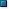 | halted |
| 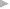 | waiting |
The current engine is the one whose data and state is displayed in the Toolkit's panes. If an application has only one engine, its engine becomes current when you select the application as the target. If there is more than one engine available in the target application, you can select an engine in the list to make it current.
When you open the Toolkit, the Toolkit itself is the default target application. When you select another target, if the target application that you select is not running, the Toolkit prompts for permission and launches the application. Similarly, if you run a script that specifies a target application that is not running (using the #target directive), the Toolkit prompts for permission to launch it. If the application is running but not selected as the current target, the Toolkit prompts you to switch to it.
If you select an application that cannot be debugged in the Toolkit, an error dialog reports that the Toolkit cannot connect to the selected application.
The ExtendScript Toolkit is the default editor for JSX files. If you double-click a JSX file in a file browser, the Toolkit looks for a #target directive in the file and launches that application to run the script; however, it first checks for syntax errors in the script.
If any are found, the Toolkit displays the error in a message box and quits silently, rather than launching the target application. For example:
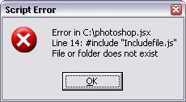
The JavaScript console¶
The JavaScript console is a command shell and output window for the currently selected JavaScript engine. It connects you to the global namespace of that engine.
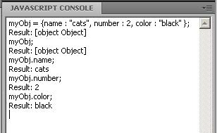
The console is a JavaScript listener, that expects input text to be JavaScript code.
You can use the console to evaluate expressions or call functions. Enter any JavaScript statement and execute it by pressing ENTER. The statement executes within the stack scope of the line highlighted in the Call Stack panel, and the result appears in the next line.
- You can use the up- and down-arrow keys to scroll through previous entries, or place the cursor with the mouse. Pressing ENTER executes the line that contains the cursor, or all selected lines.
- The right-click context menu provides the same editing commands as that of the document window.
- You can copy, cut, and paste text, and undo and redo previous actions.
- You can select text with the mouse, and use the normal copy and paste shortcuts.
- The flyout menu allows you to clear the current content.
- Commands entered in the console execute with a timeout of one second. If a command takes longer than one second to execute, the Toolkit generates a timeout error and terminates the attempt.
- The console is the standard output location for JavaScript execution. If any script generates a syntax error, the error is displayed here along with the file name and the line number. The Toolkit displays errors here during its own startup phase.
Controlling code execution¶
The debugging commands are available from the Debug menu, from the document window's right-click context menu, through keyboard shortcuts, and from the toolbar buttons. Use these menu commands and buttons to control the execution of code when the JavaScript Debugger is active.
|
Icon |
Action |
Hotkey |
Description |
|---|---|---|---|
|
|
Run/Continue |
F5 (Windows) |
Starts or resumes execution of a script. |
|
|
Break |
Ctrl F5 (Windows) |
Halts the currently executing script temporarily and reactivates the JavaScript Debugger. |
|
|
Stop |
Shift F5 (Windows) |
Stops execution of the script and generates a runtime error. |
|
|
Step Over |
F10 (Windows) |
Halts after executing a single JavaScript line in the script. If the statement calls a JavaScript function, executes the function in its entirety before stopping (do not step into the function). |
|
|
Step Into |
F11 (Windows) |
Halts after executing a single JavaScript line statement in the script or after executing a single statement in any JavaScript function that the script calls. |
|
|
Step Out |
Shift F11 (Windows) |
When paused within the body of a JavaScript function, resumes script execution until the function returns. |


Visual indication of execution states¶
When the execution of a script halts because the script reached a breakpoint, or when the script reaches the next line when stepping line by line, the document window displays the current script with the current line highlighted in yellow.

If the script encounters a runtime error, the Toolkit halts the execution of the script, displays the current script with the current line highlighted in orange, and displays the error message in the status line. Use the Data Browser to get further details of the current data assignments.

Scripts often use a try/catch clause to execute code that may cause a runtime error, in order to catch the error programmatically rather than have the script terminate. You can choose to allow regular processing of such errors using the catch clause, rather than breaking into the debugger. To set this behavior, choose Debug > Don't Break On Guarded Exceptions. Some runtime errors, such as Out Of Memory, always cause the termination of the script, regardless of this setting.
Setting breakpoints¶
When debugging a script, it is often helpful to make it stop at certain lines so that you can inspect the state of the environment, whether function calls are nested properly, or whether all variables contain the expected data.
- To stop execution of a script at a given line, click to the left of the line number to set a breakpoint. A red dot indicates the breakpoint.
- Click a second time to temporarily disable the breakpoint; the icon changes color.
- Click a third time to delete the breakpoint. The icon is removed.
Some breakpoints need to be conditional. For example, if you set a breakpoint in a loop that is executed several thousand times, you would not want to have the program stop each time through the loop, but only on each 1000th iteration.
You can attach a condition to a breakpoint, in the form of a JavaScript expression. Every time execution reaches the breakpoint, it runs the JavaScript expression. If the expression evaluates to a nonzero number or true, execution stops.
To set a conditional breakpoint in a loop, for example, the conditional expression could be "i >= 1000", which means that the program execution halts if the value of the iteration variable i is equal to or greater than 1000.
The Breakpoints panel¶
The Breakpoints panel displays all breakpoints set in the current document window. You can use the panel's flyout menu to add, change, or remove a breakpoint.

You can edit a breakpoint by double-clicking it, or by selecting it and choosing Add or Modify from the panel menu. A dialog allows you to change the line number, the breakpoint's enabled state, and the condition statement. You can also specify a hit count, which allows you to skip the breakpoint some number of times before entering the debugger. The default is 1, which breaks at the first execution.

When execution reaches this breakpoint after the specified number of hits, the debugger evaluates this condition. If it does not evaluate to true, the breakpoint is ignored and execution continues. This allows you to break only when certain conditions are met, such as a variable having a particular value.
Breakpoint icons¶
Each breakpoint is indicated by an icon to the left of the line number in the document window, and an icon and line number in the Breakpoints panel. Different icons are used in the document window and in the Breakpoints panel.
| Document window | Breakpoints panel | Description |
|---|---|---|
| Unconditional breakpoint. Execution stops here. | ||
| 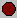 | Unconditional breakpoint, disabled. Execution does not stop. | |
| 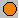 | Conditional breakpoint. Execution stops if the attached JavaScript expression evaluates to true. |
|
| Conditional breakpoint, disabled. Execution does not stop. |
Evaluation in help tips¶
If you let your mouse pointer rest over a variable or function in a document window, the result of evaluating that variable or function is displayed as a help tip. When you are not debugging the program, this is helpful only if the variables and functions are already known to the JavaScript engine. During debugging, however, this is an extremely useful way to display the current value of a variable, along with its current data type.
Tracking data¶
The Data Browser panel is your window into the JavaScript engine. It displays all live data defined in the current context, as a list of variables with their current values. If execution has stopped at a breakpoint, it shows variables that have been defined using var in the current function, and the function arguments. To show variables defined in the global or calling scope, use the Call Stack to change the context (see The call stack).
You can use the Data Browser to examine and set variable values. - Click a variable name to show its current value in the edit field at the top of the panel. - To change the value, enter a new value and press ENTER. If a variable is Read only, the edit field is disabled.

The flyout menu for this panel lets you control the amount of data displayed:
- Undefined Variables toggles the display of variables whose value is undefined (as opposed to null).
- Functions toggles the display of all functions that are attached to objects. Most often, the interesting data in an object are its callable methods.
- Core JavaScript Elements toggles the display of all data that is part of the JavaScript language standard, such as the Array constructor or the Math object.
- Prototype Elements toggles the display of the JavaScript object prototype chain.
Each variable has a small icon that indicates the data type. An invalid object (that is, a reference to an object that has been deleted) shows the object icon crossed out in red. An undefined value has no icon.
| Icon | Status |
|---|---|
| Boolean | |
| Number | |
| String | |
| Object | |
| Method | |
| null |
You can inspect the contents of an object by clicking its icon. The list expands to show the object's properties (and methods, if Functions display is enabled), and the triangle points down to indicate that the object is open.
The call stack¶
The Call Stack panel is active while debugging a program. When an executing program stops because of a breakpoint or runtime error, the panel displays the sequence of function calls that led to the current execution point. The Call Stack panel shows the names of the active functions, along with the actual arguments passed in to that function.
For example, this panel shows a break occurring at a breakpoint in a function RGBColorPicker():

The function containing the breakpoint is highlighted in the Call Stack panel. The line containing the breakpoint is highlighted in the Document Window.
You can click any function in the call hierarchy to inspect it. In the document window, the line containing the function call that led to that point of execution is marked with a green background. In the example, when you select the run() function in the call stack, the Document Window highlights the line in that function where the RGBColorPicker() function was called.
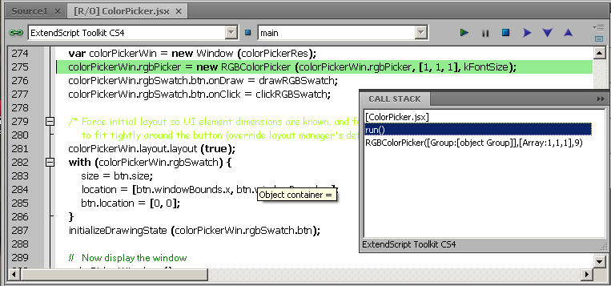
Switching between the functions in the call hierarchy allows you to trace how the current function was called. The Console and Data Browser panels coordinate with the Call Stack panel. When you select a function in the Call Stack:
- The Console panel switches its scope to the execution context of that function, so you can inspect and modify its local variables. These would otherwise be inaccessible to the running JavaScript program from within a called function.
- The Data Browser panel displays all data defined in the selected context.
Code profiling for optimization¶
The Profiling tool helps you to optimize program execution.
When you turn profiling on, the JavaScript engine collects information about a program while it is running. It counts how often the program executed a line or function, or how long it took to execute a line or function. You can choose exactly which profiling data to display.
Profiling Options¶
Because profiling significantly slows execution time, the Profile menu offers these profiling options.
Off¶
Profiling turned off.
This is the default.
Functions¶
The profiler counts each function call.
At the end of execution, displays the total to the left of the line number where the function header is defined.
Lines¶
The profiler counts each time each line is executed.
At the end of execution, displays the total to the left of the line number. Consumes more execution time, but delivers more detailed information.
Add Timing Info¶
Instead of counting the functions or lines, records the time taken to execute each function or line.
At the end of execution, displays the total number of microseconds spent in the function or line, to the left of the line number. This is the most time-consuming form of profiling.
No Profiler Data¶
When selected, do not display profiler data.
Show Hit Count¶
When selected, display hit counts.
Show Timing¶
When selected, display timing data.
Erase Profiler Data¶
Clear all profiling data.
Save Data As¶
Save profiling data as comma-separated values in a CSV file that can be loaded into a spreadsheet program such as Excel.
Viewing Profiling Info¶
When execution halts (at termination, at a breakpoint, or due to a runtime error), the Toolkit displays this information in the Document Window, line by line. The profiling data is color coded:
- Green indicates the lowest number of hits, or the fastest execution time.
- Orange or yellow indicates a trouble spot, such as a line that has been executed many times, or which line took the most time to execute.
This example shows number-of-hits information:
This example displays timing information for the program, in microseconds. The timing might not be accurate down to the microsecond; it depends on the resolution and accuracy of the hardware timers built into your computer.
Inspecting object models¶
The ExtendScript Toolkit offers the ability to inspect the object model of any loaded dictionary, using the Object Model Viewer that you invoke from the Help menu.
The Object Model Viewer (OMV) comes up as a separate, floating window. The OMV allows you to browse through the object hierarchy and inspect the type and description of each property, and the description and parameters for each method.
The drop-down menu in the Browser section at the top left allows you to choose from any loaded dictionary of objects. A dictionary provides access to the object model for one application or subsystem.
- The Core JavaScript Classes dictionary includes Adobe tools and utilities such as File and Folder.
- The ScriptUI Classes dictionary shows the interface elements defined in the ScriptUI JavaScript module.
- Each Adobe application defines a dictionary for that application's Document Object Model (DOM). The dictionary for a particular application may not be available until you launch that application, or until you select it as a target in the Toolkit.
To inspect an object model, select the appropriate dictionary from the Browser menu. The classes defined in that model appear in the Classes panel. Select a class to populate the Types panel with the available element types (Constructor, Class, Instance, Event). Select the type to populate the Properties and Methods panel with elements of that type.
Each time you select a class or element, its description appears on the right; descriptions are stacked, remaining in view until you close them. You can close each description individually, using the mouse-over menu that appears in the lower right of the description itself, or you can close all open descriptions using the Close All button at the top left of the OMV window.
The mouse-over menu also allows you to bookmark an element for easy access, or copy text from the description. Live links in the descriptions take you to related objects and elements, and you can search for text in names or descriptions.
File System Access
File System Access¶
Adobe ExtendScript defines classes that simplify cross-platform file-system access. These classes are available to all applications that support a JavaScript interface.
- The first part of this chapter, Using File and Folder objects, describes how to use these classes and provides details of pathname syntax.
- File object and Folder object provide reference details of the objects, properties, methods, and creation parameters. You can also choose the Core JavaScript Classes dictionary from the Help menu in the ExtendScript Toolkit to inspect the objects in the Object Model Viewer.
Using File and Folder objects¶
Because path name syntax is very different on Windows, Mac OS, and UNIX, Adobe ExendScript defines the File and Folder objects to provide platform-independent access to the underlying file system. A File object represents a disk file, a Folder object represents a directory or folder.
- The
Folderobject supports file system functionality such as traversing the hierarchy; creating, renaming or removing files; or resolving file aliases. - The
Fileobject supports input/output functions to read or write files.
There are several ways to distinguish between a File and a Folder object. For example:
if ( f instanceof File ) ...
if ( typeof f.open == "undefined" ) ... // Folders do not open
File and Folder objects can be used anywhere that a path name is required, such as in properties and arguments for files and folders.
Note
When you create two File objects that refer to the same disk file, they are treated as distinct objects. If you open one of them for I/O, the operating system may inhibit access from the other object, because the disk file already is open.
Specifying paths¶
When creating a File or Folder object, you can specify a platform-specific path name, or an absolute or relative path in a platform-independent format known as universal resource identifier (URI) notation. The path stored in the object is always an absolute, full path name that points to a fixed location on the disk.
- Use the toString method to obtain the name of the file or folder as string containing an absolute path name in URI notation.
- Use the
fsNameproperty to obtain the platform-specific file name.
Absolute and relative path names¶
An absolute path name in URI notation describes the full path from a root directory down to a specific file or folder. It starts with one or two slashes (/), and a slash separates path elements.
For example, the following describes an absolute location for the file myFile.jsx:
/dir1/dir2/mydir/myFile.jsx
A relative path name in URI notation is appended to the path of the current directory, as stored in the globally available current property of the Folder class. It starts with a folder or file name, or with one of the special names dot (.) for the current directory, or dot dot (..) for the parent of the current directory. A slash (/) separates path elements.
For example, the following paths describe various relative locations for the file myFile.jsx:
| File reference | Location |
|---|---|
myFile.jsx |
In the current directory. |
./myFile.jsx |
|
../myFile.jsx |
In the parent of the current directory. |
../../myFile.jsx |
In the grandparent of the current directory. |
../dir1/myFile.jsx |
In dir1, which is parallel to the current directory. |
Relative path names are independent of different volume names on different machines and operating systems, and therefore make your code considerably more portable. You can, for example, use an absolute path for a single operation, to set the current directory in the Folder.current property, and use relative paths for all other operations. You would then need only a single code change to update to a new platform or file location.
Character interpretation in paths¶
There are some platform differences in how pathnames are interpreted:
- On Windows and Mac OS, path names are not case sensitive. In UNIX, paths are case sensitive.
- On Windows, both the slash (
/) and the backslash (\) are valid path element separators. Backslash is the escape character, so you must use a double backslash (\\) to indicate the character. - On Mac OS, both the slash (
/) and the colon (:) are valid path element separators.
If a path name starts with two slashes (or backslashes on Windows), the first element refers to a remote server. For example, //myhost/mydir/myfile refers to the path /mydir/myfile on the server myhost.
URI notation allows special characters in pathnames, but they must specified with an escape character (%) followed by a hexadecimal character code. Special characters are those which are not alphanumeric and not one of the characters:
/ - - . ! ~ * ' ( )
A space, for example, is encoded as %20, so the file name "my file" is specified as "my%20file". Similarly, the character is encoded as %E4, so the file name "Brun" is specified as "Br%E4un".
This encoding scheme is compatible with the global JavaScript functions encodeURI and decodeURI.
The home directory¶
A path name can start with a tilde (~) to indicate the user's home directory. It corresponds to the platform's HOME environment variable.
UNIX and Mac OS assign the HOME environment variable according to the user login. On Mac OS, the default home directory is /Users/username. In UNIX, it is typically /home/username or /users/username. ExtendScript assigns the home directory value directly from the platform value.
On Windows, the HOME environment variable is optional. If it is assigned, its value must be a Windows path name or a path name referring to a remote server (such as \\myhost\mydir). If the HOME environment variable is undefined, the ExtendScript default is the user's home directory, usually the C:\Users\username folder.
Note
A script can access many of the folders that are specified with platform-specific variables through static, globally available Folder class properties; for instance, appData contains the folder that stores application data for all users.
Volume and drive names¶
A volume or drive name can be the first part of an absolute path in URI notation. The values are interpreted according to the platform.
Mac OS volumes¶
When Mac OS X starts, the startup volume is the root directory of the file system. All other volumes, including remote volumes, are part of the /Volumes directory. The File and Folder objects use these rules to interpret the first element of a path name:
- If the name is the name of the startup volume, discard it.
- If the name is a volume name, prepend
/Volumes. - Otherwise, leave the path as is.
Mac OS 9 is not supported as an operating system, but the use of the colon as a path separator is still supported and corresponds to URI and to Mac OS X paths as shown in the following table. These examples assume that the startup volume is MacOSX, and that there is a mounted volume Remote.
| URI path name | Mac OS 9 path name | Mac OS X path name |
|---|---|---|
/MacOSX/dir/file |
MacOSX:dir:file |
/dir/file |
/Remote/dir/file |
Remote:dir:file |
/Volumes/Remote/dir/file |
/root/dir/file |
Root:dir:file |
/root/dir/file |
~/dir/file |
/Users/jdoe/dir/file |
Windows drives¶
On Windows, volume names correspond to drive letters. The URI path /c/temp/file normally translates to the Windows path C:\temp\file.
If a drive exists with a name matching the first part of the path, that part is always interpreted as that drive.
It is possible for there to be a folder in the root that has the same name as the drive; imagine, for example, a folder C:\C on Windows. A path starting with /c always addresses the drive C:, so in this case, to access the folder by name, you must use both the drive name and the folder name, for example /c/c for C:\C.
If the current drive contains a root folder with the same name as another drive letter, that name is considered to be a folder. That is, if there is a folder D:\C, and if the current drive is D:, the URI path /c/temp/file translates to the Windows path D:\c\temp\file. In this case, to access drive C, you would have to use the Windows path name conventions.
To access a remote volume, use a uniform naming convention (UNC) path name of the form //servername/sharename. These path names are portable, because both Max OS X and UNIX ignore multiple slash characters. Note that on Windows, UNC names do not work for local volumes. These examples assume that the current drive is D:
| URI path name | Windows path name |
|---|---|
/c/dir/file |
c:\\dir\\file |
/remote/dir/file |
D:\\remote\\dir\\file |
/root/dir/file |
D:\\root\\dir\\file |
~/dir/file |
C:\\Users\\jdoe\\dir\\file |
Aliases¶
When you access an alias, the operation is transparently forwarded to the real file. The only operations that affect the alias are calls to rename and remove, and setting properties readonly and hidden. When a File object represents an alias, the alias property of the object returns true, and the resolve method returns the File or Folder object for the target of the alias.
On Windows, all file system aliases (called shortcuts) are actual files whose names end with the extension .lnk. Never use this extension directly; the File and Folder objects work without it.
For example, suppose there is a shortcut to the file /folder1/some.txt in the folder /folder2. The full Windows file name of the shortcut file is \folder2\some.txt.lnk.
To access the shortcut from a File object, specify the path /folder2/some.txt. Calling that File object's open method opens the linked file (in /folder1). Calling the File object's rename method renames the shortcut file itself (leaving the .lnk extension intact).
However, Windows permits a file and its shortcut to reside in the same folder. In this case, the File object always accesses the original file. You cannot create a File object to access the shortcut when it is in the same folder as its linked file.
A script can create a file alias by creating a File object for a file that does not yet exist on disk, and using its createAlias method to specify the target of the alias.
Portability issues¶
If your application will run on multiple platforms, use relative path names, or try to originate path names from the home directory. If that is not possible, work with Mac OS X and UNIX aliases, and store your files on a machine that is remote to your Windows machine so that you can use UNC names.
As an example, suppose you use the UNIX machine myServer for data storage. If you set up an alias share in the root directory of myServer, and if you set up a Windows-accessible share at share pointing to the same data location, the path name //myServer/share/file would work for all three platforms.
Unicode I/O¶
When doing file I/O, Adobe applications convert 8-bit character encoding to Unicode. By default, this conversion process assumes that the system encoding is used (code page 1252 on Windows or Mac Roman on Mac OS). The encoding property of a File object returns the current encoding. You can set the encoding property to the name of the desired encoding. The File object looks for the corresponding encoder in the operating system to use for subsequent I/O. The name is one of the standard Internet names that are used to describe the encoding of HTML files, such as ASCII, X-SJIS, or ISO-8859-1. For a complete list, see File- and Folder-supported encoding names.
A special encoder, BINARY, is provided for binary I/O. This encoder simply extends every 8-bit character it finds to a Unicode character between 0 and 255. When using this encoder to write binary files, the encoder writes the lower 8 bits of the Unicode character. For example, to write the Unicode character 1000, which is 0x3E8, the encoder actually writes the character 232 (0xE8).
The data of some of the common file formats (UCS-2, UCS-4, UTF-8, UTF-16) starts with a special byte order mark (BOM) character (\uFEFF). The File.open method reads a few bytes of a file looking for this character. If it is found, the corresponding encoding is set automatically and the character is skipped. If there is no BOM character at the beginning of the file, open() reads the first 2 KB of the file and checks whether the data might be valid UTF-8 encoded data, and if so, sets the encoding to UTF-8.
To write 16-bit Unicode files in UTF-16 format, use the encoding UCS-2. This encoding uses whatever byte-order format the host platform supports.
When using UTF-8 encoding or 16-bit Unicode, always write the BOM character "\uFEFF" as the first character of the file.
File error handling¶
Each object has an error property. If accessing a property or calling a method causes an error, this property contains a message describing the type of the error. On success, the property contains the empty string. You can set the property, but setting it only causes the error message to be cleared. If a file is open, assigning an arbitrary value to the property also resets its error flag.
For a complete list of supported error messages, see File access error messages.
File access error messages¶
The following messages can be returned in the error property.
| Message | Explanation |
|---|---|
| File or folder does not exist | The file or folder does not exist, but the parent folder exists. |
| File or folder already exists | The file or folder already exists. |
| I/O device is not open | An I/O operation was attempted on a file that was closed. |
| Read past EOF | Attempt to read beyond the end of a file. |
| Conversion error | The content of the file cannot be converted to Unicode. |
| Partial multibyte character found | The character encoding of the file data has errors. |
| Permission denied | The OS did not allow the attempted operation. |
| Cannot change directory | Cannot change the current folder. |
| Cannot create | Cannot create a folder. |
| Cannot rename | Cannot rename a file or folder. |
| Cannot delete | Cannot delete a file or folder. |
| I/O error | Unspecified I/O error. |
| Cannot set size | Setting the file size failed. |
| Cannot open | Opening of a file failed. |
| Cannot close | Closing a file failed. |
| Read error | Reading from a file failed. |
| Write error | Writing to a file failed. |
| Cannot seek | Seek failure. |
| Cannot execute | Unable to execute the specified file. |
File- and Folder-supported encoding names¶
The following list of names is a basic set of encoding names supported by the File object. Some of the character encoders are built in, while the operating system is queried for most of the other encoders.
Depending on the language packs installed, some of the encodings may not be available. Names that refer to the same encoding are listed in one line. Underlines are replaced with dashes before matching an encoding name.
The File object processes an extended Unicode character with a value greater that 65535 as a Unicode surrogate pair (two characters in the range between 0xD700-0xDFFF).
Built-in encodings are:
US-ASCII, ASCII, ISO646-US, ISO-646.IRV:1991, ISO-IR-6,
ANSI-X3.4-1968, CP367, IBM367, US, ISO646.1991-IRV
UCS-2, UCS2, ISO-10646-UCS-2
UCS2LE, UCS-2LE, ISO-10646-UCS-2LE
UCS2BE, UCS-2BE, ISO-10646-UCS-2BE
UCS-4, UCS4, ISO-10646-UCS-4
UCS4LE, UCS-4LE, ISO-10646-UCS-4LE
UCS4BE, UCS-4BE, ISO-10646-UCS-4BE
UTF-8, UTF8, UNICODE-1-1-UTF-8, UNICODE-2-0-UTF-8, X-UNICODE-2-0-UTF-8
UTF16, UTF-16, ISO-10646-UTF-16
UTF16LE, UTF-16LE, ISO-10646-UTF-16LE
UTF16BE, UTF-16BE, ISO-10646-UTF-16BE
CP1252, WINDOWS-1252, MS-ANSI
ISO-8859-1, ISO-8859-1, ISO-8859-1:1987, ISO-IR-100, LATIN1
MACINTOSH, X-MAC-ROMAN
BINARY
The ASCII encoder raises errors for characters greater than 127, and the BINARY encoder simply converts between bytes and Unicode characters by using the lower 8 bits. The latter encoder is convenient for reading and writing binary data.
Additional encodings¶
In Windows, all encodings use code pages, which are assigned numeric values. The usual Western character set that Windows uses, for example, is the code page 1252. You can select Windows code pages by prepending the number of the code page with "CP" or "WINDOWS": for example, "CP1252" for the code page 1252. The File object has many other built-in encoding names that match predefined code page numbers. If a code page is not present, the encoding cannot be selected.
In Mac OS, you can select encoders by name rather than by code page number. The File object queries Mac OS directly for an encoder. As far as Mac OS character sets are identical with Windows code pages, Mac OS also knows the Windows code page numbers.
In UNIX, the number of available encoders depends on the installation of the iconv library.
Common encoding names¶
The following encoding names are implemented both in Windows and in Mac OS:
UTF-7, UTF7, UNICODE-1-1-UTF-7, X-UNICODE-2-0-UTF-7
ISO-8859-2, ISO-8859-2, ISO-8859-2:1987, ISO-IR-101, LATIN2
ISO-8859-3, ISO-8859-3, ISO-8859-3:1988, ISO-IR-109, LATIN3
ISO-8859-4, ISO-8859-4, ISO-8859-4:1988, ISO-IR-110, LATIN4, BALTIC
ISO-8859-5, ISO-8859-5, ISO-8859-5:1988, ISO-IR-144, CYRILLIC
ISO-8859-6, ISO-8859-6, ISO-8859-6:1987, ISO-IR-127, ECMA-114, ASMO-708, ARABIC
ISO-8859-7, ISO-8859-7, ISO-8859-7:1987, ISO-IR-126, ECMA-118, ELOT-928, GREEK8, GREEK
ISO-8859-8, ISO-8859-8, ISO-8859-8:1988, ISO-IR-138, HEBREW
ISO-8859-9, ISO-8859-9, ISO-8859-9:1989, ISO-IR-148, LATIN5, TURKISH
ISO-8859-10, ISO-8859-10, ISO-8859-10:1992, ISO-IR-157, LATIN6
ISO-8859-13, ISO-8859-13, ISO-IR-179, LATIN7
ISO-8859-14, ISO-8859-14, ISO-8859-14, ISO-8859-14:1998, ISO-IR-199, LATIN8
ISO-8859-15, ISO-8859-15, ISO-8859-15:1998, ISO-IR-203
ISO-8859-16, ISO-885, ISO-885, MS-EE
CP850, WINDOWS-850, IBM850
CP866, WINDOWS-866, IBM866
CP932, WINDOWS-932, SJIS, SHIFT-JIS, X-SJIS, X-MS-SJIS, MS-SJIS, MS-KANJI
CP936, WINDOWS-936, GBK, WINDOWS-936, GB2312, GB-2312-80, ISO-IR-58, CHINESE
CP949, WINDOWS-949, UHC, KSC-5601, KS-C-5601-1987, KS-C-5601-1989, ISO-IR-149, KOREAN
CP950, WINDOWS-950, BIG5, BIG-5, BIG-FIVE, BIGFIVE, CN-BIG5, X-X-BIG5
CP1251, WINDOWS-1251, MS-CYRL
CP1252, WINDOWS-1252, MS-ANSI
CP1253, WINDOWS-1253, MS-GREEK
CP1254, WINDOWS-1254, MS-TURK
CP1255, WINDOWS-1255, MS-HEBR
CP1256, WINDOWS-1256, MS-ARAB
CP1257, WINDOWS-1257, WINBALTRIM
CP1258, WINDOWS-1258
CP1361, WINDOWS-1361, JOHAB
EUC-JP, EUCJP, X-EUC-JP
EUC-KR, EUCKR, X-EUC-KR
HZ, HZ-GB-2312
X-MAC-JAPANESE
X-MAC-GREEK
X-MAC-CYRILLIC
X-MAC-LATIN
X-MAC-ICELANDIC
X-MAC-TURKISH
Additional Windows encoding names:¶
CP437, IBM850, WINDOWS-437
CP709, WINDOWS-709, ASMO-449, BCONV4
EBCDIC
KOI-8R
KOI-8U
ISO-2022-JP
ISO-2022-KR
Additional Mac OS encoding names¶
These names are alias names for encodings that Mac OS might know:
TIS-620, TIS620, TIS620-0, TIS620.2529-1, TIS620.2533-0, TIS620.2533-1, ISO-IR-166
CP874, WINDOWS-874
JP, JIS-C6220-1969-RO, ISO646-JP, ISO-IR-14
JIS-X0201, JISX0201-1976, X0201
JIS-X0208, JIS-X0208-1983, JIS-X0208-1990, JIS0208, X0208, ISO-IR-87
JIS-X0212, JIS-X0212.1990-0, JIS-X0212-1990, X0212, ISO-IR-159
CN, GB-1988-80, ISO646-CN, ISO-IR-57
ISO-IR-16, CN-GB-ISOIR165
KSC-5601, KS-C-5601-1987, KS-C-5601-1989, ISO-IR-149
EUC-CN, EUCCN, GB2312, CN-GB
EUC-TW, EUCTW, X-EUC-TW
UNIX encodings¶
In UNIX, the File object looks for the presence of the iconv library, and uses whatever encoding it finds there. If you need a special encoding in UNIX, make sure that there is an iconv encoding module installed that converts between UTF-16 (the internal format that the File object uses) and the desired encoding.
File Object¶
Represents a file in the local file system in a platform-independent manner. All properties and methods resolve file system aliases automatically and act on the original file unless otherwise noted.
File Object Constructors¶
File ( [ path ] ); // Can return a Folder object
new File ([ path ] ); // Always returns a File object
To create a File object, use the File function or the new operator. The constructor accepts full or partial path names, and returns the new object.
The CRLF sequence for the file is preset to the system default, and the encoding is preset to the default system encoding.
|
Parameter |
Type |
Description |
|---|---|---|
|
|
String |
Optional. The absolute or relative path to the file associated with this object, specified in platform-specific or URI format; see Specifying paths. The value stored in the object is the absolute path. Warning In After Effects on MacOS, if This has been reported on MacOS 10.11.6 and After Effects 13.8 and 14.0. |
File Class Attributes¶
This property is available as a static property of the File class. It is not necessary to create an instance to access it.
File.fs¶
File.fs
Description¶
The name of the file system.
One of:
WindowsMacintoshUnix
Type¶
String. Read only.
File Class Methods¶
These functions are available as static methods of the File class. It is not necessary to create an instance to call them.
File.decode()¶
File.decode(uri)
Description¶
Decodes the specified string as required by RFC 2396.
All special characters must be encoded in UTF-8 and stored as escaped characters starting with the percent sign followed by two hexadecimal digits. Special characters are those with a numeric value greater than 127, except the following:
/ - _ . ! ~ * ' ( )
For example, the string "my%20file" is decoded as "my<br/>file".
Parameters¶
| Parameter | Type | Description |
|---|---|---|
uri |
String | The encoded string to decode. |
Returns¶
String
File.encode()¶
File.encode(name)
Description¶
Encodes the specified string as required by RFC 2396.
All special characters are encoded in UTF-8 and stored as escaped characters starting with the percent sign followed by two hexadecimal digits. For example, the string "my file" is encoded as "my%20file". Special characters are those with a numeric value greater than 127, except the following:
/ - _ . ! ~ * ' ( )
Parameters¶
| Parameter | Type | Description |
|---|---|---|
name |
String | The string to encode. |
Returns¶
String
File.isEncodingAvailable()¶
File.isEncodingAvailable( name)
Description¶
Checks whether a given encoding is available.
Parameters¶
| Parameter | Type | Description |
|---|---|---|
name |
String | The encoding name. Typical values are "ASCII", "binary", or "UTF-8". See File- and Folder-supported encoding names. |
Boolean. true if your system supports the specified encoding, false otherwise.
File.openDialog()¶
File.openDialog([prompt="", filter="", multiSelect=false])
Description¶
Opens the built-in platform-specific file-browsing dialog in which a user can select an existing file or multiple files, and creates new File objects to represent the selected files.
Parameters¶
|
Parameter |
Type |
Description |
|---|---|---|
|
|
String |
Optional. The prompt text, if the dialog allows a prompt. |
|
|
String or Function |
Optional. A filter that limits the types of files displayed in the dialog. Tip
In Mac OS, a filter function that takes a File instance and returns |
|
|
Boolean |
Optional. When |
Returns¶
The File for the selected file, or an array of File Objects if multiple files are selected.
If the user cancels, returns null.
File.saveDialog()¶
File.saveDialog(prompt[, preset=""])
Description¶
Opens the built-in platform-specific file-browsing dialog in which a user can select an existing file location to which to save information, and creates a new File object to represent the selected file location.
Parameters¶
|
Parameter |
Type |
Description |
|---|---|---|
|
|
String |
A string containing the prompt text, if the dialog allows a prompt. |
|
|
String or Function |
Optional. Windows only. A filter that limits the types of files displayed in the dialog. Tip
|
Returns¶
A File for the the selected file location.
If the user cancels, returns null.
File Object Attributes¶
These properties are available for File objects.
File.absoluteURI¶
fileObj.absoluteURI
Description¶
The full path name for the referenced file in URI notation.
Type¶
String. Read only.
File.alias¶
fileObj.alias
Description¶
When true, the object refers to a file system alias or shortcut.
Type¶
Boolean. Read only.
File.created¶
fileObj.created
Description¶
The creation date of the referenced file, or null if the object does not refer to a file on disk.
Type¶
Date. Read only.
File.creator¶
fileObj.creator
Description¶
In Mac OS, the file creator as a four-character string. In Windows or UNIX, value is "????".
Type¶
String. Read only.
File.displayName¶
fileObj.displayName
Description¶
The localized name of the referenced file, without the path.
Type¶
String. Read only.
File.encoding¶
fileObj.encoding
Description¶
Gets or sets the encoding for subsequent read/write operations. One of the encoding constants listed in File- and Folder-supported encoding names.
If the value is not recognized, uses the system default encoding.
A special encoder, "BINARY", is used to read binary files. It stores each byte of the file as one Unicode character regardless of any encoding. When writing, the lower byte of each Unicode character is treated as a single byte to write.
Type¶
String
File.eof¶
fileObj.eof
Description¶
When true, a read attempt caused the current position to be at the end of the file, or the file is not open.
Type¶
Boolean. Read only.
File.error¶
fileObj.error
Description¶
A message describing the last file system error; see File access error messages.
Typically set by the file system, but a script can set it. Setting this value clears any error message and resets the error bit for opened files.
Contains the empty string if there is no error.
Type¶
String
File.exists¶
fileObj.exists
Description¶
When true, this object refers to a file or file-system alias that actually exists in the file system.
Type¶
Boolean. Read only.
File.fsName¶
fileObj.fsName
Description¶
The platform-specific full path name for the referenced file.
Type¶
String. Read only.
File.fullName¶
fileObj.fullName
Description¶
The full path name for the referenced file in URI notation.
Type¶
String. Read only.
File.hidden¶
fileObj.hidden
Description¶
When true, the file is not shown in the platform-specific file browser. Read/write. If the object references a file-system alias or shortcut, the flag is altered on the alias, not on the original file.
Type¶
Boolea
File.length¶
fileObj.length
Description¶
The size of the file in bytes. Can be set only for a file that is not open, in which case it truncates or pads the file with 0-bytes to the new length.
Type¶
Number
File.lineFeed¶
fileObj.lineFeed
Description¶
How line feed characters are written in the file system.
One of:
Windows- Windows styleMacintosh- Mac OS styleUnix- UNIX style
Type¶
String
File.localizedName¶
fileObj.localizedName
Description¶
A localized version of the file name portion of the absolute URI for the referenced file, without the path specification.
Type¶
String. Read only.
File.modified¶
fileObj.modified
Description¶
The date of the referenced file's last modification, or null if the object does not refer to a file on disk.
Type¶
Date. Read only.
File.name¶
fileObj.name
Description¶
The file name portion of the absolute URI for the referenced file, without the path specification.
Type¶
String. Read only.
File.parent¶
fileObj.parent
Description¶
The Folder object for the folder that contains this file.
Type¶
Folder. Read only.
File.path¶
fileObj.path
Description¶
The path portion of the absolute URI for the referenced file, without the file name.
Type¶
String. Read only.
File.readonly¶
fileObj.readonly
Description¶
When true, prevents the file from being altered or deleted. If the referenced file is a file-system alias or shortcut, the flag is altered on the alias, not on the original file.
Type¶
Boolean
File.relativeURI¶
fileObj.relativeURI
Description¶
The path name for the referenced file in URI notation, relative to the current folder.
Type¶
String. Read only.
File.type¶
fileObj.type
Description¶
The file type as a four-character string.
- In Mac OS, the Mac OS file type.
-
- In Windows,
"appl"for.EXEfiles,"shlb"for.DLLfiles and"TEXT"for any other file.
- In Windows,
If the file does not exist, the value is "????".
Type¶
String. Read only.
File Object Methods¶
These functions are available for File objects.
File.changePath()¶
fileObj.changePath(path)
Description¶
Changes the path specification of the referenced file.
Parameters¶
| Parameter | Type | Description |
|---|---|---|
path |
String | The new path, absolute or relative to the current folder. |
Returns¶
Boolean. true on success.
File.close()¶
fileObj.close()
Description¶
Closes this open file.
Returns¶
Boolean. true on success, false if there are I/O errors.
File.copy()¶
fileObj.copy(target)
Description¶
Copies this object's referenced file to the specified target location.
Resolves any aliases to find the source file. If a file exists at the target location, it is overwritten.
Parameters¶
| Parameter | Type | Description |
|---|---|---|
target |
String or File object | The URI path to the target location, or a File that references the target location. |
Returns¶
Boolean. true if the copy was successful, false otherwise.
File.createAlias()¶
fileObj.createAlias( [path])
Description¶
Makes this file a file-system alias or shortcut to the specified file. The referenced file for this object must not yet exist on disk.
Parameters¶
| Parameter | Type | Description |
|---|---|---|
path |
String | The path of the target file. |
Returns¶
Boolean. true if the operation was successful, false otherwise.
File.execute()¶
fileObj.execute()
Description¶
Opens this file using the appropriate application, as if it had been double-clicked in a file browser.
You can use this method to run scripts, launch applications, and so on.
Returns¶
Boolean. true immediately if the application launch was successful.
File.getRelativeURI()¶
fileObj.getRelativeURI([basePath])
Description¶
Retrieves the URI for this file, relative to the specified base path, in URI notation. If no base path is supplied, the URI is relative to the path of the current folder.
Parameters¶
| Parameter | Type | Description |
|---|---|---|
basePath |
String | Optional. A string containing the base path for the relative URI. Default is the current folder. |
Returns¶
String
File.open()¶
fileObj.open(mode[, type][, creator])
Description¶
Opens the referenced file for subsequent read/write operations. The method resolves any aliases to find the file.
The method attempts to detect the encoding of the open file. It reads a few bytes at the current location and tries to detect the Byte Order Mark character 0xFFFE. If found, the current position is advanced behind the detected character and the encoding property is set to one of the strings UCS-2BE, UCS-2LE, UCS4-BE, UCS-4LE, or UTF-8. If the marker character is not found, it checks for zero bytes at the current location and makes an assumption about one of the above formats (except UTF-8). If everything fails, the encoding property is set to the system encoding.
Warning
Be careful about opening a file more than once. The operating system usually permits you to do so, but if you start writing to the file using two different File objects, you can destroy your data.
Parameters¶
|
Parameter |
Type |
Description |
|---|---|---|
|
|
String |
A string indicating the read/write mode. One of: |
|
|
String |
Optional. In Mac OS, the type of a newly created file, a 4-character string. Ignored in Windows and UNIX. |
|
|
String |
Optional. In Mac OS, the creator of a newly created file, a 4-character string. Ignored in Windows and UNIX. |
Returns¶
Boolean. true if the file has been opened successfully, false otherwise.
File.openDlg()¶
fileObj.openDlg([prompt=""][, filter=""][, multiSelect=false])
Description¶
Opens the built-in platform-specific file-browsing dialog, in which the user can select an existing file or files, and creates new File objects to represent the selected files. Differs from the class method openDialog() in that it presets the current folder to this File object's parent folder and the current file to this object's associated file.
Parameters¶
|
Parameter |
Type |
Description |
|---|---|---|
|
|
String |
Optional. The prompt text, if the dialog allows a prompt. |
|
|
String or Function |
Optional. A filter that limits the types of files displayed in the dialog. Tip
In Mac OS, a filter function that takes a File instance and returns |
|
|
Boolean. |
Optional. When |
Returns¶
If the user clicks OK, returns a File or Folder object for the selected file or folder, or an array of objects.
If the user cancels, returns null.
File.read()¶
fileObj.read([chars])
Description¶
Reads the contents of the file starting at the current position.
Returns a string that contains up to the specified number of characters.
Parameters¶
| Parameter | Type | Description |
|---|---|---|
chars |
Number | Optional. An integer specifying the number of characters to read. By default, reads from the current position to the end of the file. If the file is encoded, multiple bytes might be read to create single Unicode characters. |
Returns¶
String
File.readch()¶
fileObj.readch()
Description¶
Reads a single text character from the file at the current position. Line feeds are recognized as CR, LF, CRLF, or LFCR pairs. If the file is encoded, multiple bytes might be read to create single Unicode characters.
Returns a string that contains the character.
Returns¶
String
File.readln()¶
fileObj.readln()
Description¶
Reads a single line of text from the file at the current position, and returns it in a string. Line feeds are recognized as CR, LF, CRLF, or LFCR pairs. If the file is encoded, multiple bytes might be read to create single Unicode characters.
Returns a string that contains the text.
Returns¶
String
File.remove()¶
fileObj.remove()
Description¶
Deletes the file associated with this object from disk, immediately, without moving it to the system trash.
Does not resolve aliases; instead, deletes the referenced alias or shortcut file itself.
Warning
Cannot be undone. It is recommended that you prompt the user for permission before deleting.
Returns¶
Boolean. true if the file is deleted successfully.
File.rename()¶
fileObj.rename(newName)
Description¶
Renames the associated file.
Does not resolve aliases, but renames the referenced alias or shortcut file itself.
Parameters¶
| Parameter | Type | Description |
|---|---|---|
newName |
String | The new file name, with no path. |
Returns¶
Boolean. true on success.
File.resolve()¶
fileObj.resolve()
Description¶
If this object references an alias or shortcut, this method resolves that alias and returns a new File object that references the file-system element to which the alias resolves.
Returns¶
The new File object, or null if this object does not reference an alias, or if the alias cannot be resolved.
File.saveDlg()¶
fileObj.saveDlg([prompt=""][, preset=""])
Description¶
Opens the built-in platform-specific file-browsing dialog, in which the user can select an existing file location to which to save information, and creates a new File object to represent the selected file.
Differs from the class method saveDialog() in that it presets the current folder to this File object's parent folder and the file to this object's associated file.
Parameters¶
|
Parameter |
Type |
Description |
|---|---|---|
|
|
String |
Optional. The prompt text, if the dialog allows a prompt. |
|
|
String or Function |
Optional. A filter that limits the types of files displayed in the dialog. Tip
Not used in MacOS |
Returns¶
The File object for the selected file.
If the user cancels, returns null.
File.seek()¶
fileObj.seek(pos[, mode=0])
Description¶
Seeks to the specified position in the file. The new position cannot be less than 0 or greater than the current file size.
Parameters¶
|
Parameter |
Type |
Description |
|---|---|---|
|
|
Number |
The new current position in the file as an offset in bytes from the start, current position, or end, depending on the mode. |
|
|
Number |
Optional. The seek mode, one of: |
Returns¶
Boolean. true if the position was changed.
File.tell()¶
fileObj.tell()
Description¶
Retrieves the current position index as a byte offset from the start of the file.
Returns¶
Number
File.write()¶
fileObj.write( text[, text...]...)
Description¶
Writes the specified text to the file at the current position. For encoded files, writing a single Unicode character may write multiple bytes.
Warning
Be careful not to write to a file that is open in another application or object, as this can overwrite existing data.
Parameters¶
| Parameter | Type | Description |
|---|---|---|
text |
String | One or more strings to write, which are concatenated to form a single string. |
Returns¶
Boolean. true on success.
File.writeln()¶
fileObj.writeln (text[, text...]...)
Description¶
Writes the specified text to the file at the current position, and appends a Line Feed sequence in the style specified by the linefeed property.For encoded files, writing a single Unicode character may write multiple bytes.
Warning
Be careful not to write to a file that is open in another application or object, as this can overwrite existing data.
Parameters¶
| Parameter | Type | Description |
|---|---|---|
text |
String | One or more strings to write, which are concatenated to form a single string. |
Returns¶
Boolean. true on success.
File Object Examples¶
Read & Write Files¶
The below example writes text to a file, then reads the contents of that file and presents it as an alert.
Keep in mind that this is just one way to do this. Some host apps may also require a user-specified permissions check before being able to access the local file system.
Note that this stores (and fetches) the file from the user's appdata folder, using the built-in Folder.userData shortcut.
/**
* Reads data from a given file in userdata folder
*
* @param {string} filename Filename, with extension
* @return {string} File contents, if file exists
*/
function readUserDataFromFile(filename) {
var userDataFolder = Folder.userData;
var filepath = userDataFolder.fullName + "/" + filename;
var file = new File(filepath);
// Default encoding
file.encoding = "UTF-8";
if (!file.exists) {
throw "Could not find file '" + String(file.fsName);
}
file.open();
var contents = file.read();
file.close();
return contents;
}
/**
* Writes data to a given file in userdata folder
*
* @param {string} filename Filename, with extension
* @param {string} data Data to write
*/
function writeUserDataToFile(filename, data) {
var userDataFolder = Folder.userData;
var filepath = userDataFolder.fullName + "/" + filename;
var file = new File(filepath);
// Default encoding
file.encoding = "UTF-8";
// Write file contents
file.open("w");
var success = file.write(data);
file.close();
if (!success) {
throw "Could not write to file '" + String(file.fsName);
}
}
try {
var filename = "myFile.txt";
var contents = "Hello world!";
writeUserDataToFile(filename, contents);
var readData = readUserDataFromFile(filename);
// "Hello world!"
alert("File Contents: '" + String(readData) + "'");
} catch (e) {
alert(e);
}
Folder Object¶
Represents a file-system folder or directory in a platform-independent manner. All properties and methods resolve file system aliases automatically and act on the original file unless otherwise noted.
Folder Object Constructors¶
Folder( [path] ); // Can return a File object
new Folder( [path] ); // Always returns a Folder object
To create a Folder object, use the Folder function or the new operator. The constructor accepts full or partial path names, and returns the new object.
|
Parameter |
Type |
Description |
|---|---|---|
|
|
String |
Optional. The absolute or relative path to the Folder associated with this object, specified in platform-specific or URI format; see Specifying paths. The value stored in the object is the absolute path. Warning In After Effects on MacOS, if This has been reported on MacOS 10.11.6 and After Effects 13.8 and 14.0. |
Folder Class Attributes¶
These properties are available as static properties of the Folder class. It is not necessary to create an instance to access them.
Folder.appData¶
Folder.appData
Description¶
A Folder object for the folder that contains application data for all users.
- In Windows, the value of
%PROGRAMDATA%(by default,C:\ProgramData) - In Mac OS,
/Library/Application Support
Type¶
Folder. Read only.
Folder.appPackage¶
Folder.appPackage
Description¶
The Folder object for the folder that contains the bundle of the running application.
- In Windows, for example:
C:\Program Files (x86)\Adobe\Adobe ExtendScript Toolkit CC\ - In Mac OS, for example:
/Applications/Adobe ExtendScript Toolkit CC/ExtendScript Toolkit.app
Type¶
String. Read only.
Folder.commonFiles¶
Folder.commonFiles
Description¶
A Folder object for the folder that contains files common to all programs.
- In Windows, the value of
%CommonProgramFiles%(by default,C:\Program Files\Common Files) - In Mac OS,
/Library/Application Support
Type¶
Folder. Read only.
Folder.current¶
Folder.current
Description¶
A Folder object for the current folder. Assign either a Folder object or a string containing the new path name to set the current folder.
Type¶
Folder
Folder.desktop¶
Folder.desktop
Description¶
A Folder object for the folder that contains the user's desktop.
- In Windows,
C:\Users\[username]\Desktop - In Mac OS,
~/Desktop
Type¶
Folder. Read only.
Folder.fs¶
Folder.fs
Description¶
The name of the file system.
One of:
Windows,Macintosh, orUnix
Type¶
String. Read only.
Folder.myDocuments¶
Folder.myDocuments
Description¶
A Folder object for the user's default document folder.
- In Windows,
C:\Users\[username]\Documents - In Mac OS,
~/Documents
Type¶
Folder. Read only.
Folder.startup¶
Folder.startup
Description¶
A Folder object for the folder containing the executable image of the running application.
Type¶
Folder. Read only.
Folder.system¶
Folder.system
Description¶
A Folder object for the folder containing the operating system files.
- In Windows, the value of
%windir%(by default,C:\Windows) - In Mac OS,
/System
Type¶
Folder. Read only.
Folder.temp¶
Folder.temp
Description¶
A Folder object for the default folder for temporary files.
Type¶
Folder. Read only.
Folder.trash¶
Folder.trash
Description¶
- In Mac OS, a Folder object for the folder containing deleted items.
- In Windows, where the Recycle Bin is a database rather than a folder, value is
null.
Type¶
Folder or null. Read only.
Folder.userData¶
Folder.userData
Description¶
A Folder object for the folder that contains application data for the current user.
- In Windows, the value of %APPDATA% (by default,
C:\Users\[username]\Appdata\Roaming) - In Mac OS,
~/Library/Application Support
Type¶
Folder. Read only.
Folder Class Methods¶
These functions are available as a static methods of the Folder class. It is not necessary to create an instance in order to call them.
Folder.decode()¶
Folder.decode(uri)
Description¶
Decodes the specified string as required by RFC 2396.
All special characters must be encoded in UTF-8 and stored as escaped characters starting with the percent sign followed by two hexadecimal digits. For example, the string "my%20file" is decoded as "my file". Special characters are those with a numeric value greater than 127, except the following:
``/ - _ . ! ~ * ' ( )``
Parameters¶
| Parameter | Type | Description |
|---|---|---|
uri |
String | The encoded string to decode. |
Returns¶
String
Folder.encode()¶
Folder.encode(name)
Description¶
Encodes the specified string as required by RFC 2396.
All special characters must be encoded in UTF-8 and stored as escaped characters starting with the percent sign followed by two hexadecimal digits. For example, the string "my%20file" is decoded as "my file". Special characters are those with a numeric value greater than 127, except the following:
``/ - _ . ! ~ * ' ( )``
Parameters¶
| Parameter | Type | Description |
|---|---|---|
name |
String | The string to encode. |
Returns¶
String
Folder.isEncodingAvailable()¶
Folder.isEncodingAvailable(name)
Description¶
Checks whether a given encoding is available.
Parameters¶
| Parameter | Type | Description |
|---|---|---|
name |
String | The encoding name. Typical values are "ASCII", "binary", or "UTF-8". See File- and Folder-supported encoding names. |
Returns¶
Boolean. true if your system supports the specified encoding, false otherwise.
Folder.selectDialog()¶
Folder.selectDialog([prompt])
Description¶
Opens the built-in platform-specific file-browsing dialog, and creates a new File or Folder object for the selected file or folder. Differs from the object method selectDlg() in that it does not preselect a folder.
Parameters¶
| Parameter | Type | Description |
|---|---|---|
prompt |
String | Optional. The prompt text, if the dialog allows a prompt. |
Returns¶
If the user clicks OK, returns a File or Folder object for the selected file or folder.
If the user cancels, returns null.
Folder Object Attributes¶
These properties are available for Folder objects.
Folder.absoluteURI¶
folderObj.absoluteURI
Description¶
The full path name for the referenced folder in URI notation.
Type¶
String. Read only.
Folder.alias¶
folderObj.alias
Description¶
When true, the object refers to a file system alias or shortcut.
Type¶
Boolean. Read only.
Folder.created¶
folderObj.created
Description¶
The creation date of the referenced folder, or null if the object does not refer to a folder on disk.
Type¶
Date. Read only.
Folder.displayName¶
folderObj.displayName
Description¶
The localized name of the referenced folder, without the path.
Type¶
String. Read only.
Folder.error¶
folderObj.error
Description¶
A message describing the most recent file system error; see File access error messages.
Typically set by the file system, but a script can set it. Setting this value clears any error message and resets the error bit for opened files. Contains the empty string if there is no error.
Type¶
String
Folder.exists¶
folderObj.exists
Description¶
When true, this object refers to a folder that currently exists in the file system.
Type¶
Boolean. Read only.
Folder.fsName¶
folderObj.fsName
Description¶
The platform-specific name of the referenced folder as a full path name.
Type¶
String. Read only.
Folder.fullName¶
folderObj.fullName
Description¶
The full path name for the referenced folder in URI notation.
Type¶
String. Read only.
Folder.localizedName¶
folderObj.localizedName
Description¶
A localized version of the folder name portion of the absolute URI for the referenced file, without the path specification.
Type¶
String. Read only.
Folder.modified¶
folderObj.modified
Description¶
The date of the referenced folder's last modification, or null if the object does not refer to a folder on disk.
Type¶
Date. Read only.
Folder.name¶
folderObj.name
Description¶
The folder name portion of the absolute URI for the referenced file, without the path specification.
Type¶
String. Read only.
Folder.parent¶
folderObj.parent
Description¶
The Folder object for the folder that contains this folder, or null if this object refers to the root folder of a volume.
Type¶
Folder. Read only.
Folder.path¶
folderObj.path
Description¶
The path portion of the absolute URI for the referenced folder, without the folder name.
Type¶
String. Read only.
Folder.relativeURI¶
folderObj.relativeURI
Description¶
The path name for the referenced folder in URI notation, relative to the current folder.
Type¶
String. Read only.
Folder Object Methods¶
These functions are available for Folder objects.
Folder.changePath()¶
folderObj.changePath(path)
Description¶
Parameters¶
| Parameter | Type | Description |
|---|---|---|
path |
String | The new path, absolute or relative to the current parent folder. |
Changes the path specification of the referenced folder.
Returns¶
Boolean. true on success.
Folder.create()¶
folderObj.create()
Description¶
Creates a folder at the location given by this object's path property.
Returns¶
Boolean. true if the folder was created successfully.
Folder.execute()¶
folderObj.execute()
Description¶
Opens this folder in the platform-specific file browser (as if it had been double-clicked in the file browser).
Returns¶
Boolean. true immediately if the folder was opened successfully.
Folder.getFiles()¶
folderObj.getFiles([mask])
Description¶
Retrieves the contents of this folder, filtered by the supplied mask.
Parameters¶
|
Parameter |
Type |
Description |
|---|---|---|
|
|
String or Function |
Optional. A search mask for file names. Note In Windows, all aliases end with the extension |
Returns¶
Returns an array of File and Folder objects, or null if this object's referenced folder does not exist.
Folder.getRelativeURI()¶
folderObj.getRelativeURI([basePath])
Description¶
Retrieves the path for this folder relative to the specified base path or the current folder, in URI notation.
Parameters¶
| Parameter | Type | Description |
|---|---|---|
basePath |
String | Optional. The base path for the relative URI. Default is the current folder. |
Returns¶
String
Folder.remove()¶
folderObj.remove()
Description¶
Deletes the empty folder associated with this object from disk, immediately, without moving it to the system trash.
Folders must be empty before they can be deleted. Does not resolve aliases; instead, deletes the referenced alias or shortcut file itself.
Note
Cannot be undone. It is recommended that you prompt the user for permission before deleting.
Returns¶
Boolean. true if the folder is deleted successfully.
Folder.rename()¶
folderObj.rename(newName)
Description¶
Parameters¶
| Parameter | Type | Description |
|---|---|---|
newName |
String | The new folder name, with no path. |
Renames the associated folder. Does not resolve aliases; instead, renames the referenced alias or shortcut file itself.
Returns¶
Boolean. true on success.
Folder.resolve()¶
folderObj.resolve()
Description¶
If this object references an alias or shortcut, this method resolves that alias
Returns¶
A new Folder object that references the file-system element to which the alias resolves, or null if this object does not reference an alias, or if the alias cannot be resolved.
Folder.selectDlg()¶
folderObj.selectDlg(prompt)
Description¶
Opens the built-in platform-specific file-browsing dialog, and creates a new File or Folder object for the selected file or folder.
Differs from the class method selectDialog() in that it preselects this folder.
Parameters¶
| Parameter | Type | Description |
|---|---|---|
prompt |
String | The prompt text, if the dialog allows a prompt. |
Returns¶
If the user clicks OK, returns a File or Folder object for the selected file or folder.
If the user cancels, returns null.
User-Interface Tools
User-Interface Tools¶
Adobe provides the ScriptUI component, which works with the ExtendScript JavaScript interpreter to provide JavaScript scripts with the ability to create and interact with user interface elements. It provides an object model for windows and user-interface control elements within an Adobe application.
- The first part of this chapter describes the features and programming model, with details of how you can use JavaScript to build a user interface with ScriptUI objects.
- ScriptUI object reference provides reference details of the objects, properties, methods, and creation parameters. You can also choose the ScriptUI Classes dictionary from the Help menu in the ExtendScript Toolkit to inspect the objects in the Object Model Viewer.
Code examples for ScriptUI¶
The sample code distributed with the Adobe ExtendScript SDK includes code examples that specifically demonstrate different ways of building and populating a ScriptUI dialog.
| Building ScriptUI dialogs | Description |
|---|---|
| SnpCreateDialog.jsx | Creates a very simple, modeless dialog (a palette) with OK and Cancel button behavior. |
| SnpCreateUIAddMethod.jsx | Shows how to add controls to a dialog using the add method. |
| SnpCreateUIResourceSpec.jsx | Shows how to define a resource string that creates the control hierarchy in a dialog. |
| SnpCreateTreeView.jsx | Shows how to create a hierarchical list with subitems. |
| SnpCreateProgressBar.jsx | Shows how to create, initialize, and update a progress bar. |
| SnpCreateSlider.jsx | Shows how to create and handle input from a slider control. |
| UsingFlashPlayer.jsx | Shows how to create a Flash Player, and use it to load a play back a movie defined in an SWF file. |
| ActionScriptDemo.jsx | Shows how to communicate between the Adobe application scripting environment and the ActionScript scripting environment of the Flash Player. |
| ColorSelector.jsx | Shows how to use the graphics objects to change colors in a window. |
| ColorPicker.jsx | A more complex version of the color-selection dialog shows how to use additional graphics objects, including fonts and paths. |
| SnpAlignElements.jsx | Shows how to align elements along two dimensions in order to control the relative positions of controls within rows and columns. |
| SnpCreateDynamicScriptUI.jsx | Shows how to use automatic layout, switching component layout between "row" and "stack" orientation. |
| AlertBoxBuilder1.jsx | Shows a way to use resource specifications. Uses the add() method to build a dialog that collects values from the user, and creates a resource string from those values. Saves the string to a file, then uses it to build a new dialog. See Using resource strings. |
| AlertBoxBuilder2.jsx | Shows another way to use a resource specification, building the same user-input dialog itself from a resource string. See Using resource strings. |
| SnpCustomLayoutManager.jsx | Shows how to create a customized layout manager. See Custom layout-manager example. |
ScriptUI programming model¶
ScriptUI defines Window objects that represent platform-specific windows, and various control elements such as Button and StaticText, that represent user-interface controls. These objects share a common set of properties and methods that allow you to query the type, move the element around, set the title, caption or content, and so on. Many element types also have properties unique to that class of elements.
Creating a window¶
ScriptUI defines the following types of windows:
- Modal dialog box: Holds focus when shown, does not allow activity in other application windows until dismissed.
- Floating palette: Also called modeless dialog, allows activity in other application windows. (Adobe Photoshop does not support script creation of palette windows.)
- Main window: Suitable for use as an application's main window. (Main windows are not normally created by script developers for Adobe applications. Photoshop does not support script creation of main windows.)
To create a new window, use the Window constructor function. The constructor takes the desired type of the window. The type is "dialog" for a modal dialog, or "palette" for a modeless dialog or floating palette. You can supply optional arguments to specify an initial window title and bounds; or you can set the location and size separately.
The following example creates an empty dialog with the variable name dlg, which is used in subsequent examples:
// Create an empty dialog window near the upper left of the screen
var dlg = new Window( "dialog", "Alert Box Builder" );
dlg.frameLocation = [ 100, 100 ];
Initially, new windows are hidden. The show method makes them visible and responsive to user interaction; for example:
dlg.show();
Container elements¶
All Windows are containers-that is, they contain other elements within their bounds. Within a Window, you can create other types of container elements: Panels and Groups. These can contain control elements, and can also contain other Panel and Group containers. However, a Window cannot be added to any container.
- A
Groupis the simplest container used to visually organize related controls. You would typically define a group and populate it with related elements, for instance an edittext box and its descriptive statictext label. - A
Panelis a frame object, also typically used to visually organize related controls. It has a text property to specify a title, and can have a border to visually separate the collection of elements from other elements of a dialog. - A
TabbedPanelis a frame that contains only Tab elements. Each Tab is a frame with a localizable title in the selection tab, which contains a set of controls. When a tab is active, the Tab object is the value of the TabbedPanel.selection property.
You might create a Panel and populate it with several Groups, each with their own elements. You can create nested containers, with different layout properties for different containers, in order to define a relatively complex layout without any explicit placement.
You can add elements to any container using the add method (see Adding elements to containers). An element added to a container is considered a child of that container. Certain operations on a container apply to its children; for example, when you hide a container, its children are also hidden.
Window layout¶
When a script creates a Window and adds various user-interface elements to it, the locations and sizes of elements and spacing between elements is known as the layout of the window. Each user-interface element has properties which define its location and dimensions: location, size, and bounds. These properties are initially undefined, and a script that employs Automatic layout should leave them undefined for the main window as well as its contained elements, allowing the automatic layout mechanism to set their values.
Your script can access these values, and (if not using auto-layout) set them as follows:
- The
locationof a window is defined by a Point object containing a pair of coordinates (xandy) for the top left corner (the origin), specified in the screen coordinate system. The location of an element within a window or other container is defined as the origin point specified in the container's coordinate system. That is, the x and y values are relative to the origin of the container.- The following examples show equivalent ways of placing the content region of an existing window at screen coordinates [10, 50]:
win.location = [ 10, 50 ]; win.location = { x: 10, y: 50 }; win.location = "x:10, y:50";
- The following examples show equivalent ways of placing the content region of an existing window at screen coordinates [10, 50]:
- The
sizeof an element's region is defined by a Dimension object containing awidthandheightin pixels.- The following examples show equivalent ways of changing an existing window's width and height to 200 and 100:
win.size = [ 200, 100 ]; win.size = { width: 200, height: 100 }; win.size = "width:200, height:100"; - This example shows how to change a window's height to 100, leaving its location and width unchanged:
win.size.height = 100;
- The following examples show equivalent ways of changing an existing window's width and height to 200 and 100:
- The
boundsof an element are defined by aBoundsobject containing both the origin point (x,y) and size (width,height) To define the size and location of windows and controls in one step, use the bounds property.- The value of the
boundsproperty can be a string with appropriate contents, an inline JavaScriptBoundsobject, or a four-element array. The following examples show equivalent ways of placing a 380 by 390 pixel window near the upper left corner of the screen:var dlg = new Window( "dialog", "Alert Box Builder", [ 100, 100, 480, 490] ); dlg.bounds = [ 100, 100, 480, 490 ]; dlg.bounds = { x: 100, y: 100, width: 380, height: 390 }; dlg.bounds = { left: 100, top: 100, right: 480, bottom: 490 }; dlg.bounds = "left:100, top:100, right:480, bottom:490";
- The value of the
The window dimensions define the size of the content region of the window, or that portion of the window that a script can directly control. The actual window size is typically larger, because the host platform's window system typically adds title bars and borders. The bounds property for a Window refers only to its content region. To determine the bounds of the frame surrounding the content region of a window, use the Window.frameBounds property.
Adding elements to containers¶
To add elements to a window, panel, or group, use the container's add method. This method accepts the type of the element to be created and some optional parameters, depending on the element type. It creates and returns an object of the specified type.
In additions to windows, ScriptUI defines the following user-interface elements and controls:
- Panels (frames) and groups, to collect and organize other control types
- Push buttons with text or icons, radio buttons, checkbox buttons
- Static text or images, edit text
- Progress bars, scrollbars, sliders
- Lists, which include list boxes, drop-down (also called popup) lists, and tree views. Each item in a list is a control of type
item, and the parent list'sitemsproperty contains an array of child items. Tree views can also have collapsiblenode-type items, which contain child items. You can add list items with the parent'saddmethod.
You can specify the initial size and position of any new element relative to the working area of the parent container, in an optional bounds parameter. Different types of elements have different additional parameters. For elements which display text, for example, you can specify the initial text. See the ScriptUI Classes dictionary in the ExtendScript Toolkit's Object Model Viewer for details.
The order of optional parameters must be maintained. Use the value undefined for a parameter you do not wish to set. For example, if you want to use automatic layout to determine the bounds, but still set the title and text in a panel and button, the following creates Panel and Button elements with an initial text value, but no bounds value:
dlg.btnPnl = dlg.add("panel", undefined, "Build it");
dlg.btnPnl.testBtn = dlg.btnPnl.add("button", undefined, "Test");
A new element is initially set to be visible, but is not shown unless its parent object is shown.
Creation properties¶
Some element types have attributes that can only be specified when the element is created. These are not normal properties of the element, in that they cannot be changed during the element's lifetime, and they are only needed once. For these element types, you can supply an optional creation-properties argument to the add method. This argument is an object with one or more properties that control aspects of the element's appearance, or special functions such as whether an edit text element is editable or Read only. See Control object constructors for details.
You can also specify the creation properties for new objects using the resource specification format; for details, see Resource specifications.
All user-interface elements have an optional creation property called name, which assigns a name for identifying that element. For example, the following creates a new Button element with the name ok:
dlg.btnPnl.buildBtn = dlg.btnPnl.add("button", undefined, "Build", {name: "ok"});
Note
In Photoshop CS, panel coordinates were measured from outside the frame (including the title bar), but in Photoshop CS2, panel coordinates are measured from the inside the frame (the content area). This means that if you use the same values to set the vertical positions of child controls in a panel, the positions are slightly different in the two versions. When you add a panel to a window, you can choose to set a creation property (su1PanelCoordinates), which causes that panel to automatically adjust the positions of its children; see the add method for panel. When automatic adjustment is enabled, you provide position values that were correct for Photoshop CS, and the result is the same in Photoshop CS2, CS3, CS4, CS5, or CC. You can also set automatic adjustment for a window; in this case, it applies to all child panels of that window unless it is explicitly disabled in the child panel. See Window object constructor.
Accessing child elements¶
A reference to each element added to a container is appended to the container's children property. You can access the child elements through this array, using a 0-based index. For controls that are not containers, the children collection is empty.
In this example, the msgPnl panel was the first element created in dlg, so the script can access the panel object at index 0 of the parent's children property to set the text for the title:
var dlg = new Window( "dialog", "Alert Box Builder" );
dlg.msgPnl = dlg.add( "panel" );
dlg.children[ 0 ].text = "Messages";
If you use a creation property to assign a name to a newly created element, you can access that child by its name, either in the children array of its parent, or directly as a property of its parent. For example, the Button in a previous example was named ok, so it can be referenced as follows:
dlg.btnPnl.children[ "ok" ].text = "Build";
dlg.btnPnl.ok.text = "Build";
You can also access named elements through the parent window's findElement() method:
var myOkButton = dlg.findElement( "ok" );
For list controls (type list and dropdown), you can access the child list-item objects through the items array.
Removing elements¶
To remove elements from a Window, Panel, or Group, use the container's remove method. This method accepts an object representing the element to be removed, or the name of the element, or the index of the element in the container's children collection (see Accessing child elements).
The specified element is removed from view if it was currently visible, and it is no longer accessible from the container or window. The results of any further references by a script to the object representing the element are undefined.
To remove list items from a list, use the parent list control's remove method in the same way. It removes the item from the parent's items list, hides it from view, and deletes the item object.
Types of controls¶
The following sections introduce the types of controls you can add to a Window or other container element (panel or group). For details of the properties and functions, and of how to create each type of element, see Control object constructors.
Containers¶
These are types of Control objects which are contained in windows, and which contain and group other controls.
Panel¶
Typically used to visually organize related controls.
- Set the text property to define a title that appears at the top of the panel.
- An optional borderStyle creation property controls the appearance of the border drawn around the panel.
You can use panels as separators: those with width of 0 appear as vertical lines and those with height of 0 appear as horizontal lines:
var dlg = new Window( "dialog", "Alert Box Builder" );
dlg.msgPnl = dlg.add( "panel", [ 25, 15, 355, 130 ], "Messages" );
Group¶
Used to visually organize related controls.
Unlike Panels, Groups have no title or visible border.
You can use them to create hierarchies of controls, and for fine control over layout attributes of certain groups of controls within a larger panel. For examples, see Creating more complex arrangements.
TabbedPanel¶
A panel that contains only Tab objects as its immediate children. It has a selection property that contains the currently active Tab child.
When the value of the selection property changes, either by a user selecting a different tab, or by a script setting the property, the TabbedPanel receives an onChange notification.
The title property provides an optional label; the titleLayout property places the label within the panel.
Tab¶
A general container whose parent is a TabbedPanel, with a selectable tab showing a localizable text value.
Its size and position are determined by the parent.
User-interface controls¶
These are types of Control objects that are contained in windows, panels, and groups, and that provide specific kinds of display and user interaction. Control instances are created by passing the corresponding type keyword to the add() method of a Window or container; see Control types and creation parameters.
These examples do not set bounds explicitly on creation, because it is often more useful to set a preferred size, then allow the layout manager to set the bounds; see Automatic layout.
Button¶
Typically used to initiate some action from a window when a user clicks the button; for example, accepting a dialog's current settings, canceling a dialog, bringing up a new dialog, and so on.
- Set the
textproperty to assign a label to identify a Button's function. - The
onClickcallback method provides behavior.
var dlg = new Window( "dialog", "Alert Box Builder" );
dlg.btnPnl = dlg.add( "panel", undefined, "Build it" );
dlg.btnPnl.testBtn = dlg.btnPnl.add( "button", undefined, "Test" );
dlg.btnPnl.buildBtn = dlg.btnPnl.add( "button", undefined, "Build", { name: "ok" } );
dlg.btnPnl.cancelBtn = dlg.btnPnl.add( "button", undefined, "Cancel", { name: "cancel" } );
dlg.show();
IconButton¶
A button that displays an icon, with or without a text label. Like a text button, typically initiates an action in response to a click.
- The
imageproperty identifies the icon image; see Displaying images. - The
titleortextproperty provides an optional label; the titleLayout property places the label with respect to the image. - The
onClickcallback method provides behavior.
Image¶
Displays an iconic image.
- The
imageproperty identifies the icon image; see Displaying images. - The
titleproperty provides an optional label; the titleLayout property places the label with respect to the image.
StaticText¶
Typically used to display text strings that are not intended for direct manipulation by a user, such as informative messages or labels.
This example creates a Panel and adds several StaticText elements:
var dlg = new Window( "dialog", "Alert Box Builder" );
dlg.msgPnl = dlg.add( "panel", undefined, "Messages" );
dlg.msgPnl.titleSt = dlg.msgPnl.add( "statictext", undefined, "Alert box title:" );
dlg.msgPnl.msgSt = dlg.msgPnl.add( "statictext", undefined, "Alert message:" );
dlg.show();
EditText¶
Allows users to enter text, which is returned to the script when the dialog is dismissed. Text in EditText elements can be selected, copied, and pasted.
- Set the
textproperty to assign the initial displayed text in the element, and read it to obtain the current text value, as entered or modified by the user. - Set the
textselectionproperty to replace the current selection with new text, or to insert text at the cursor (insertion point). Read this property to obtain the current selection, if any.
This example adds some EditText elements, with initial values that a user can accept or replace:
var dlg = new Window( "dialog", "Alert Box Builder" );
dlg.msgPnl = dlg.add( "panel", undefined, "Messages" );
dlg.msgPnl.titleSt = dlg.msgPnl.add( "statictext", undefined, "Alert box title:" );
dlg.msgPnl.titleEt = dlg.msgPnl.add( "edittext", undefined, "Sample Alert" );
dlg.msgPnl.msgSt = dlg.msgPnl.add( "statictext", undefined, "Alert message:" );
dlg.msgPnl.msgEt = dlg.msgPnl.add( "edittext", undefined, "<your message here>", { multiline: true } );
dlg.show();
Note
The creation property on the second EditText field, multiline: true, indicates a field in which a long text string can be entered. The text wraps to appear as multiple lines.
EditNumber¶
Allows users to enter a decimal number, which is returned to the script when the dialog is dismissed. The value entered is validated for being a localized number format and checked against a lower and upper boundary when the control loses focus. Text in EditNumber elements can be selected, copied, and pasted.
Note
This functionality was added in Photoshop 20.0 (CC 2019), and may not exist in other hosts.
- Set the
textproperty to assign the initial displayed number in the element, and read it to obtain the current number value, as entered or modified by the user. - Set the
textselectionproperty to replace the current selection with new text, or to insert text at the cursor (insertion point). Read this property to obtain the current selection, if any.
This example adds some EditNumber elements, with initial values that a user can accept or replace:
var dlg = new Window( "dialog", "Date Box" );
dlg.msgPnl = dlg.add( "panel", undefined, "Enter Date" );
dlg.msgPnl.titleSt = dlg.msgPnl.add( "statictext", undefined, "Month:" );
dlg.msgPnl.titleEt = dlg.msgPnl.add( "editnumber", undefined, 1, 1, 12 );
dlg.msgPnl.msgSt = dlg.msgPnl.add( "statictext", undefined, "Year:" );
dlg.msgPnl.msgEt = dlg.msgPnl.add( "editnumber", undefined, 2025, 2000, 2100 );
dlg.show();
Note
Decimal numbers like 2.5 are accepted for minimum and maximum values.
Checkbox¶
Allows the user to set a boolean state.
- Set the
textproperty to assign an identifying text string that appears next to the clickable box. - The user can click to select or deselect the box, which shows a checkmark when selected. The
valueistruewhen it is selected (checked) andfalsewhen it is not.
When you create a Checkbox, you can set its value property to specify its initial state and appearance.
// Add a checkbox to control the buttons that dismiss an alert box
dlg.hasBtnsCb = dlg.add( "checkbox", undefined, "Should there be alert buttons?" );
dlg.hasBtnsCb.value = true;
RadioButton¶
Allows the user to select one choice among several.
- Set the text property to assign an identifying text string that appears next to the clickable button.
- The
valueistruewhen the button is selected. The button shows the state in a platform-specific manner, with a filled or empty dot, for example.
You group a related set of radio buttons by creating all the related elements one after another. When any button's value becomes true, the value of all other buttons in the group becomes false. When you create a group of radio buttons, you should set the state of one of them true:
var dlg = new Window( "dialog", "Alert Box Builder" );
dlg.alertBtnsPnl = dlg.add( "panel", undefined, "Button alignment" );
dlg.alertBtnsPnl.alignLeftRb = dlg.alertBtnsPnl.add( "radiobutton", undefined, "Left" );
dlg.alertBtnsPnl.alignCenterRb = dlg.alertBtnsPnl.add( "radiobutton", undefined, "Center" );
dlg.alertBtnsPnl.alignRightRb = dlg.alertBtnsPnl.add( "radiobutton", undefined, "Right" );
dlg.alertBtnsPnl.alignCenterRb.value = true;
dlg.show();
Progressbar¶
Typically used to display the progress of a time-consuming operation. A colored bar covers a percentage of the area of the control, representing the percentage completion of the operation.
The value property reflects and controls how much of the visible area is colored, relative to the maximum value (maxvalue).
By default the range is [0..100], so the value = 50 when the operation is half done.
Slider¶
Typically used to select within a range of values. The slider is a horizontal bar with a draggable indicator, and you can click a point on the slider bar to jump the indicator to that location.
The value property reflects and controls the position of the indicator, within the range determined by minvalue and maxvalue.
By default the range is 0 to 100, so setting value = 50 moves the indicator to the middle of the bar.
Scrollbar¶
Like a slider, the scrollbar is a bar with a draggable indicator. It also has "stepper" buttons at each end, that you can click to jump the indicator by the amount in the stepdelta property. If you click a point on the bar outside the indicator, the indicator jumps by the amount in the jumpdelta property.
You can create scrollbars with horizontal or vertical orientation; if width is greater than height, it is horizontal, otherwise it is vertical. Arguments to the add method that creates the scrollbar define values for the value, minvalue and maxvalue properties.
Scrollbars are often created with an associated EditText field to display the current value of the scrollbar, and to allow setting the scrollbar's position to a specific value.
This example creates a scrollbar with associated StaticText and EditText elements within a panel:
dlg.sizePnl = dlg.add( "panel", undefined, "Dimensions" );
dlg.sizePnl.widthSt = dlg.sizePnl.add( "statictext", undefined, "Width:" );
dlg.sizePnl.widthScrl = dlg.sizePnl.add( "scrollbar", undefined, 300, 300, 800 );
dlg.sizePnl.widthEt = dlg.sizePnl.add( "edittext" );
ListBox, DropDownList and TreeView¶
These controls display lists of items, which are represented by ListItem objects in the items property. You can access the items in this array using a 0-based index.
- A
ListBoxcontrol displays a list of choices. When you create the object, you specify whether it allows the user to select only one or multiple items. If a list contains more items than can be displayed in the available area, a scrollbar may appear that allows the user to scroll through all the list items. A list box can display items in multiple columns; see Creating multi-column lists. - A
DropDownListcontrol displays a single visible item. When you click the control, a list drops down and allows you to select one of the other items in the list. Drop-down lists can have nonselectable separator items for visually separating groups of related items, as in a menu. - A
TreeViewcontrol is similar to a ListBox, except that the items can have child items. Items with children can be expanded or collapsed to show or hide the child items. Child items can in turn contain children. - The
titleproperty provides an optional label; the titleLayout property places the label with respect to the list.
You can specify the choice items on creation of the list object, or afterward using the list object's add() method. You can remove items programmatically with the list object's remove() and removeAll() methods.
ListItem¶
Items added to or inserted into any type of list control are ListItem objects, with properties that can be manipulated from a script. ListItem elements can be of the following types:
| Type | Description |
|---|---|
item |
The typical item in any type of list. It displays text or an image, and can be selected. To display an image, set the item object's image property; Displaying images. |
separator |
A separator is a nonselectable visual element in a drop-down list. Although it has a text property, the value is ignored, and the item is displayed as a horizontal line. |
node |
A displayable and selectable item in a TreeView control which can contain other ListItem objects, including other items of type node. |
FlashPlayer¶
Runs a Flash movie within a ScriptUI window. Its control's methods allow you to load a movie from an SWF file and control the playback. See FlashPlayer control functions.
You can also use the control object to communicate with the Flash application, calling ActionScript methods, and making JavaScript methods defined in your Adobe application script available to the Flash ActionScript code. See Calling ActionScript functions from a ScriptUI script.
The title property provides an optional label; the titleLayout property places the label with respect to the player.
Displaying images¶
You can display icon images in Image or IconButton controls, or display images in place of strings or in addition to strings as the selectable items in a Listbox or DropdownList control. In each case, the image is defined by setting the element's image property. You can set it to a ScriptUIImage object; a named icon resource; a File object; or the pathname of a file containing the iconic image, or of an alias or shortcut to that file (see Specifying paths).
The image data for an icon can be in Portable Network Graphics (PNG) format, or in Joint Photographic Experts Group (JPEG) format. See http://www.libpng.org and http://www.jpeg.org/ for detailed information on these formats.
{kind=link}
You can set or reset the image property at any time to change the image displayed in the element.
The scripting environment can define icon resources, which are available to scripts by name. To specify an icon resource, set a control's image property to the resource's JavaScript name, or refer to the resource by name when creating the control. For example, to create a button with an application-defined icon resource:
myWin.upBtn = myWin.add ( "iconbutton", undefined, "SourceFolderIcon" );
Photoshop CC, for example, defines these icon resources:
Step1IconStep2IconStep3IconStep4IconSourceFolderIconDestinationFolderIcon
If a script does not explicitly set the preferredSize or size property of an element that displays a icon image, the value of preferredSize is determined by the dimensions of the iconic image. If the size values are explicitly set to dimensions smaller than those of the actual image graphic, the displayed image is clipped. If they are set to dimensions larger than those of the image graphic, the displayed image is centered in the larger space. An image is never scaled to fit the available space.
Creating multi-column lists¶
In list controls (ListBox, DropDownList and TreeView), a set of ListItem objects represents the individual choices in the list. Each choice can be labeled with a localizable string, an image, or both, as specified by the text and image properties of the ListItem (see Displaying images).
You can define a ListBox to have multiple columns, by specifying the numberOfColumns creation parameter. By default, the number of columns is 1. If you specify multiple columns, you can also use the creation parameters to specify whether headers are shown, and the header text for each column.
If you specify more than one column, each ListItem object that you add to the box specifies one selectable row. The text and image of the ListItem object specifies the label in the first column, and the subitems property specifies labels that appear in that row for the remaining columns.
The subitems value is an array, whose length is one less than the number of columns. That is, the first member, ListItem.subitems[0], specifies the label in the second column. Each member specifies one label, as a JavaScript object with two properties:
{ text : displayString , image : imageFileReference }
For example, the following fragment defines a list box with two columns, and specifies the labels in each column for the two choices:
...
// create list box with two titled columns
var list = dlg.add ("ListBox", [0, 0, 150, 75], "asd",
{numberOfColumns: 2, showHeaders: true,
columnTitles: ["First Name", "Last Name"]});
// add an item for the first row, with the label value for the first column
var item1 = list.add ("item", "John");
// add the label value for the second column in that row.
item1.subItems[0].text = "Doe";
// add an item for the second row, with the text for the first column label
var item2 = list.add ("item", "Jane");
// add the label text and image for the second column in the second row
item2.subItems[0].text = "Doe";
item2.subItems[0].image = File ("~/Desktop/Step1.png");
...
This creates a control that looks like this:
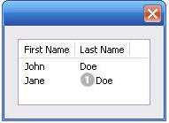
Notice that the columns have headers, and the label in the second column of the second row has both text and an image.
Prompts and alerts¶
Static functions on the Window class are globally available to display short messages in standard dialogs.
The host application controls the appearance of these simple dialogs, so they are consistent with other alert and message boxes displayed by the application. You can often use these standard dialogs for simple interactions with your users, rather than designing special-purpose dialogs of your own.
Use the static functions alert, confirm, and prompt on the Window class to invoke these dialogs with your own messages. You do not need to create a Window object to call these functions.
Modal dialogs¶
A modal dialog is initially invisible. Your script invokes it using the show method, which does not return until the dialog has been dismissed. The user can dismiss it by using a platform-specific window gesture, or by using one of the dialog controls that you supply, typically an OK or Cancel button. The onClick method of such a button must call the close or hide method to close the dialog. The close method allows you to pass a value to be returned by the show method.
For an example of how to define such buttons and their behavior, see Defining behavior with event callbacks and listeners.
Creating and using modal dialogs¶
A dialog typically contains some controls that the user must interact with, to make selections or enter values that your script will use. In some cases, the result of the user action is stored in the object, and you can retrieve it after the dialog has been dismissed. For example, if the user changes the state of a Checkbox or RadioButton, the new state is found in the control's value property.
However, if you need to respond to a user action while the dialog is still active, you must assign the control a callback function for the interaction event, either onClick or onChange. The callback function is the value of the onClick or onChange property of the control.
For example, if you need to validate a value that the user enters in a edittext control, you can do so in an onChange callback handler function for that control. The callback can perform the validation, and perhaps display an alert to inform the user of errors.
Sometimes, a modal dialog presents choices to the user that must be correct before your script allows the dialog to be dismissed. If your script needs to validate the state of a dialog after the user clicks OK, you can define an onClose event handler for the dialog. This callback function is invoked whenever a window is closed. If the function returns true, the window is closed, but if it returns false, the close operation is cancelled and the window remains open.
Your onClose handler can examine the states of any controls in the dialog to determine their correctness, and can show alert messages or use other modal dialogs to alert the user to any errors that must be corrected. It can then return true to allow the dialog to be dismissed, or false to allow the user to correct any errors.
Dismissing a modal dialog¶
Every modal dialog should have at least one button that the user can click to dismiss the dialog. Typically modal dialogs have an OK and a Cancel button to close the dialog with or without accepting changes that were made in it.
You can define onClick callbacks for the buttons that close the parent dialog by calling its close method. You have the option of sending a value to the close method, which is in turn passed on to and returned from the show method that invoked the dialog. This return value allows your script to distinguish different closing events; for example, clicking OK can return 1, clicking Cancel can return 2. However, for this typical behavior, you do not need to define these callbacks explicitly; see Default and cancel elements.
For some dialogs, such as a simple alert with only an OK button, you do not need to return any value. For more complex dialogs with several possible user actions, you might need to distinguish more outcomes. If you need to distinguish more than two closing states, you must define your own closing callbacks rather than relying on the default behavior.
If, by mistake, you create a modal dialog with no buttons to dismiss it, or if your dialog does have buttons, but their onClick handlers do not function properly, a user can still dismiss the dialog by typing ESC. In this case, the system will execute a call to the dialog's close method, passing a value of 2. This is not, of course, a recommended way to design your dialogs, but is provided as an escape hatch to prevent the application from hanging in case of an error in the operations of your dialog.
Default and cancel elements¶
The user can typically dismiss a modal dialog by clicking an OK or Cancel button, or by typing certain keyboard shortcuts. By convention, typing ENTER is the same as clicking OK or the default button, and typing ESC is the same as clicking Cancel. The keyboard shortcut has the same effect as calling notify for the associated button control.
To determine which control is notified by which keyboard shortcut, set the Dialog object's defaultElement and cancelElement properties. The value is the control object that should be notified when the user types the associated keyboard shortcut.
- For buttons assigned as the
defaultElement, if there is noonClickhandler associated with the button, clicking the button or typing ENTER calls the parent dialog'sclosemethod, passing a value of 1 to be returned by the show call that opened the dialog. - For buttons assigned as the
cancelElement, if there is noonClickhandler associated with the button, clicking the button or typing ESC calls the parent dialog'sclosemethod, passing a value of 2 to be returned by the show call that opened the dialog.
If you do not set the defaultElement and cancelElement properties explicitly, ScriptUI tries to choose reasonable defaults when the dialog is about to be shown for the first time. For the default element, it looks for a button whose name or text value is "ok" (disregarding case). For the cancel element, it looks for a button whose name or text value is "cancel" (disregarding case). Because it looks at the name value first, this works even if the text value is localized. If there is no suitable button in the dialog, the property value remains null, which means that the keyboard shortcut has no effect in that dialog.
To make this feature most useful, it is recommended that you always provide the name creation property for buttons meant to be used in this way.
Size and location objects¶
ScriptUI defines objects to represent the complex values of properties that place and size windows and user-interface elements. These objects cannot be created directly, but are created when you set the corresponding property. That property then returns that object. For example, the bounds property returns a Bounds object.
You can set these properties as objects, strings, or arrays.
e.prop = Object- The object must contain the set of properties defined for this type, as shown in the table below. The properties have integer values.e.prop = String- The string must be an executable JavaScript inline object declaration, conforming to the same object description.e.prop = Array- The array must have integer coordinate values in the order defined for this type, as shown in the table below. For example:
The following examples show equivalent ways of placing a 380 by 390 pixel window near the upper left corner of the screen:
var dlg = new Window( "dialog", "Alert Box Builder ");
dlg.bounds = { x:100, y:100, width:380, height:390 }; // Object
dlg.bounds = { left:100, top:100, right:480, bottom:490 }; // Object
dlg.bounds = "x:100, y:100, width:380, height:390"; // String
dlg.bounds = "left:100, top:100, right:480, bottom:490"; // String
dlg.bounds = [100, 100, 480, 490]; // Array
You can access the resulting object as an array with values in the order defined for the type, or as an object with the properties supported for the type.
Size and location object types¶
The following objects are the property-value object types, the element properties that create and contain them, and their array and object-property formats.
Bounds¶
Defines the boundaries of a window within the screen's coordinate space, or of a user-interface element within the container's coordinate space. Contains an array, [left, top, right, bottom], that defines the coordinates of the upper left and lower right corners of the element.
A Bounds object is created when you set an element's bounds property, and this property returns a Bounds object.
- An object must contain properties named
left,top,right,bottom, orx,y,width,height. - An array must have values in the order [left, top, right, bottom].
Dimension¶
Defines the size of a Window or user-interface element. Contains an array, [ width, height ], that defines the element's size in pixels.
A Dimension object is created when you set an element's size or preferredSize property. (A preferredSize of -1 causes the size to be calculated automatically.)
- An object must contain properties named
widthandheight. - An array must have values in the order
[ width, height ].
Margins¶
Defines the number of pixels between the edges of a container and its outermost child elements. Contains an array [ left, top, right, bottom ] whose elements define the margins between the left edge of a container and its leftmost child element, and so on.
A Margins object is created when you set an element's margins property.
- An object must contain properties named
left,top,right, andbottom. - An array must have values in the order [
left,top,right,bottom].
You can also set the margins property to a number; all of the array values are then set to this number.
Point¶
Defines the location of a Window or user-interface element. Contains an array, [ x, y ], whose values represent the origin point of the element as horizontal and vertical pixel offsets from the origin of the element's coordinate space.
A Point object is created when you set an element's location property.
- An object must contain properties named
xandy. - An array must have values in the order
[ x, y ].
Drawing objects¶
ScriptUI allows you to draw directly on controls to customize their appearance. You do this by calling methods of the ScriptUIGraphics object in response to the onDraw event (see Defining behavior with event callbacks and listeners).
These methods take as parameters a number of helper objects that encapsulate drawing information, including the following:
| Object | Description |
|---|---|
| ScriptUIGraphics | Encapsulates the drawing methods. The graphics object is associated with each control is found in the control object's graphics property. |
| ScriptUIBrush | Describes the brush used to paint textures in a control. |
| ScriptUIFont | Describes the font used to write text into a control. |
| ScriptUIImage | Describes an image to be drawn in a control. |
| ScriptUIPath | Describes a drawing path for a figure to be drawn into a control. |
| ScriptUIPen | Describes the pen used to draw lines in a control. |
For details of these objects, see Graphic customization objects.
The ScriptUIGraphics object contains methods that create the other graphics objects; for example, ScriptUIGraphics.newBrush() creates a ScriptUIBrush instance with a specific color. These graphic objects are then used as property values in the ScriptUIGraphics object, which controls how a user-interface element is drawn on the screen. For example, if you put the new Brush object in the backgroundColor property, the element is drawn using that color for the background.
To make the background of a window light gray, you could use this code:
g = myWindow.graphics;
myBrush = g.newBrush( g.BrushType.SOLID_COLOR, [ 0.75, 0.75, 0.75, 1 ] );
g.backgroundColor = myBrush;
These examples in the Adobe ExtendScript SDK demonstrates how to use graphic customization objects:
| Example | Description |
|---|---|
| ColorSelector.jsx | Uses graphic objects to change the background color of a window as the user selects the color value with a slider. |
| ColorPicker.jsx | A more complex version of the color-selection dialog shows how to use additional graphics objects, including fonts and paths. |
In addition, the Custom element class allows you to define completely customized elements of several types (ranges, buttons, lists), whose appearance is rendered entirely by your onDraw implementation.
Resource specifications¶
You can create one or more user-interface elements at a time using a resource specification. This specially formatted string provides a simple and compact means of creating an element, including any container element and its component elements. The resource-specification string is passed as the type parameter to the Window() or add() constructor function.
The general structure of a resource specification is an element type specification (such as dialog), followed by a set of braces enclosing one or more property definitions.
var myResource = "dialog{ control_specs }";
var myDialog = new Window ( myResource );
Controls are defined as properties within windows and other containers. For each control, give the class name of the control, followed by the properties of the control enclosed in braces. For example, the following specifies a button:
testBtn: Button { text: "Test" }
The following resource string specifies a panel that contains grouped StaticText and EditText controls:
"msgPnl: Panel { orientation:'column', alignChildren:['right', 'top'],\
text: 'Messages', \
title: Group { \
st: StaticText { text:'Alert box title:' }, \
et: EditText { text:'Sample Alert', characters:35 } \
}
msg: Group { \
st: StaticText { text:'Alert message:' }, \
et: EditText { properties:{multiline:true}, \
text:'<your message here>' \
} \
}"
The property with name properties specifies creation properties; see Creation properties.
A property value can be specified as null, true, false, a String, a Number, an inline Array, or an Object.
- An inline array contains one or more values in the form:
[ value, value, ... ] -
An object can be an inline object, or a named object, in the form:
{ classname inlineObject }In this case, the classname must be one of the control class names list in Types of controls. - An inline object contains one or more properties, in the form:
{ propertyName: propertyValue, propertyName: propertyValue, ... }
Using resource strings¶
These examples in the Adobe ExtendScript SDK demonstrate how to use resource specification strings:
| AlertBoxBuilder1.jsx | Demonstrates one way to use resource strings, creating a dialog that allows the user to enter some values, and then using those values to construct the resource string for a customizable alert dialog. |
|---|---|
| AlertBoxBuilder2.jsx | Constructs the same dialog, using a resource string (rather than the add() method) to specify all of the dialog contents for the user-input dialog. |
The two Alert Box Builder examples create the same dialog to collect values from the user.
The Build button event handler builds a resource string from the collected values, and returns it from the dialog invocation function; the script then saves the resource string to a file. That resource string can later be used to create and display the user-configured alert box.
The resource specification format can also be used to create a single element or container and its child elements. For instance, if the alertBuilderResource in the example did not contain the panel btnPnlResource, you could define that resource separately, then add it to the dialog as follows:
var btnPnlResource = "btnPnl: Panel { orientation:'row', \
text: 'Build it', \
testBtn: Button { text:'Test' }, \
buildBtn: Button { text:'Build', properties:{name:'ok'} }, \
cancelBtn: Button { text:'Cancel', properties:{name:'cancel'} } \
}";
dlg = new Window( alertBuilderResource );
dlg.btnPnl = dlg.add( btnPnlResource );
dlg.show();
Defining behavior with event callbacks and listeners¶
You must define the behavior of your controls in order for them to respond to user interaction. You can do this by defining event-handling callback functions as part of the definition of the control or window. To respond to a specific event, define a handler function for it, and assign a reference to that function in the corresponding property of the window or control object. Different types of windows and controls respond to different actions, or events:
- Windows generate events when the user moves or resizes the window. To handle these events, define callback functions for
onMove,onMoving,onResize,onResizing.- To respond to the user opening or closing the window, define callback functions for
onShowandonClose.
- To respond to the user opening or closing the window, define callback functions for
- Button, RadioButton, and Checkbox controls generate events when the user clicks within the control bounds.
- To handle the event, define a callback function for onClick.
- EditNumber, EditText, Scrollbar, and Slider controls generate events when the content or value changes-that is, when the user types into an edit field, or moves the scroll or slider indicator. To handle these events, define callback functions for onChange and onChanging.
- ListBox, DropDownList, and TreeView controls generate events whenever the selection in the list changes. To handle the event, define a callback function for onChange.
- The TreeView control also generates events when the user expands or collapses a node, handled by the onExpand and onCollapse callback functions.
- The ListBox also generates an event when the user double-clicks an item. To handle it, define a callback function for the onDoubleClick event.
- Both containers and controls generate events just before they are drawn, that allow you to customize their appearance. To handle these events, define callback functions for onDraw.
- Your handler can modify or control how the container or control is drawn using the methods defined in the control's associated ScriptUIGraphics object.
- In Windows only, you can register a key sequence as a shortcutKey for a window or for most types of controls. To handle the key sequence, define a callback function for onShortcutKey in that control.
Defining event-handler callback functions¶
Your script can define an event handler as a named function referenced by the callback property, or as an unnamed function defined inline in the callback property.
- If you define a named function, assign its name as the value of the corresponding callback property. For example:
function hasBtnsCbOnClick() { /* do something interesting */ } hasBtnsCb.onClick = hasBtnsCbOnClick; - For a simple, unnamed function, set the property value directly to the function definition:
UI-element.callback-name = function () { handler-definition };
Event-handler functions take no arguments.
For example, the following sets the onClick property of the hasBtnsCb checkbox to a function that enables another control in the same dialog:
hasBtnsCb.onClick = function () {
this.parent.alertBtnsPnl.enabled = this.value;
};
The following statements set the onClick event handlers for buttons that close the containing dialog, returning different values to the show method that invoked the dialog, so the calling script can tell which button was clicked:
buildBtn.onClick = function() {
this.parent.parent.close( 1 );
};
cancelBtn.onClick = function() {
this.parent.parent.close( 2 );
};
Simulating user events¶
You can simulate user actions by sending an event notification directly to a window or control with the notify method. A script can use this method to generate events in the controls of a window, as if a user was clicking buttons, entering text, or moving the window. If you have defined an event-handler callback for the element, the notify method invokes it.
The notify method takes an optional argument that specifies which event it should simulate. If a control can generate only one kind of event, notification generates that event by default.
The following controls generate the onClick event:
The following controls generate the onChange event:
The following controls generate the onChanging event:
In the ListBox, double-clicking an item generates the onDoubleClick event.
In RadioButton and Checkbox controls, the boolean value property automatically changes when the user clicks the control. If you use notify() to simulate a click, the value changes just as if the user had clicked.
For example, if the value of a checkbox hasBtnsCb is true, this code changes the value to false:
if ( dlg.hasBtnsCb.value == true ) {
dlg.hasBtnsCb.notify(); // dlg.hasBtnsCb.value is now `false`
}
Registering event listeners for windows or controls¶
Another way to define the behavior of your windows and controls is register a handler function that responds to a specific type of event in that window or control. This technique allows you to respond to the cascading of an event through a hierarchy of containers and controls.
Use addEventListener() or addEventListener() to register a handler. The function you register receives an event object (from the UIEvent base class) that encapsulates the event information. As an event cascades down through a hierarchy and back up through the hierarchy, your handler can respond at any level, or use the UIEvent object's stopPropagation() method to stop the event propagation at some level.
You can register:
-
The name of a handler function defined in the extension that takes one argument, the event object. For example:
myButton.addEventListener( "click", myFunction ); -
A locally defined handler function that takes one argument, the event object. For example:
myButton.addEventListener( "click", "function( e ) { /*handler code*/ }" );
The handler or registered code statement is executed when the specified event occurs in the target. A script can programmatically simulate an event by creating an event objects with ScriptUI.events.createEvent(), and passing it to an event target's dispatchEvent() function.
You can remove a handler that has been previously registered by calling the event target's removeEventListener() function. The parameters you pass to this function must be identical to those passed to the addEventListener() call that registered the handler. Typically, a script would register all event handlers during initialization, and unregister them during termination; however, unregistering handlers on termination is not required.
You can register for an event in a parent or ancestor object of the actual target; see the following section.
The predefined types of UIEvent correspond to the event callbacks, as follows:
| Callback | UIEvent type |
|---|---|
"onChange" |
"change" |
"onChanging" |
"changing" |
"onClick" |
"click" (detail = 1) |
"onDoubleClick" |
"click" (detail = 2) |
"onEnterKey" |
"enterKey" |
"onMove" |
"move" |
"onMoving" |
"moving" |
"onResize" |
"resize" |
"onResizing" |
"resizing" |
"onShow" |
"show" |
"onActivate" |
"focus" |
"onDeactivate" |
"blur" |
In addition, ScriptUI implements all types of W3C events according to the W3C DOM level 3 functional specification for UI events, with these modifications and exceptions:
- ScriptUI does not implement the
hasFeature()method of theDOMImplementationinterface; there is no way to query whether a given W3C DOM feature is implemented in ScriptUI. - In ScriptUI, the W3C
EventTargetinterface is implemented by UI element objects (such asButton,Window, and so on). - In ScriptUI, the W3C
AbstractViewobject is a UI element (such asButton,Window, and so on). - None of the "namespace" properties or methods are supported (such as
initEventNSandinitMouseEventNS).
The ScriptUI implementation of W3C mouse events follows the W3C DOM level 3 functional specification for MouseEvent, with these differences:
- To create a
MouseEventinstance, callScriptUI.events.createEvent( "MouseEvent" ), rather thanDocumentEvent.createEvent( "MouseEvent" ). - The
getModifierStatemethod of theMouseEventinterface is not supported.
The ScriptUI implementation of W3C keyboard events follows the W3C DOM level 3 functional specification for KeyboardEvent.
How registered event-handlers are called¶
When an event occurs in a target, all handlers that have been registered for that event and target are called. Multiple event handlers can be registered for the same event in different targets, even in targets of the same type. For example, if there is a dialog with two checkboxes, you might want to register a click handler for each checkbox object. You would do this, for example, if each checkbox reacts differently to the click.
You can also register events for child objects with a parent object. If both checkboxes should react the same way to a mouse click, they require the same handler. In this case, you can register the handler with the parent window or container instead. When the click event occurs in either child control, the handler registered for the parent window is called.
You can combine these two techniques, so that more than one action occurs in response to the event. That is, you can register a general event handler with the parent, and register a different, more specific handler for the same event with the child object that is the actual target.
The rules for how multiple event handlers are called depend on three phases of event propagation, as follows:
- Capture phase - When an event occurs in an object hierarchy, it is captured by the topmost ancestor object at which a handler is registered (the window, for example). If no handler is registered for the topmost ancestor, ScriptUI looks for a handler for the next ancestor (the dialog, for example), on down through the hierarchy to the direct parent of actual target. When ScriptUI finds a handler registered for any ancestor of the target, it executes that handler then proceeds to the next phase.
- At-target phase - ScriptUI calls any handlers that are registered with the actual target object.
- Bubble phase - The event bubbles back out through the hierarchy; ScriptUI again looks for handlers registered for the event with ancestor objects, starting with the immediate parent, and working back up the hierarchy to the topmost ancestor. When ScriptUI finds a handler, it executes it and the event propagation is complete.
For example, suppose a dialog window contains a group which contains a button. A script registers an event handler function for the click event at the Window object, another handler at the group object, and a third handler at the button object (the actual target).
When the user clicks the button, the Window object's handler is called first (during the capture phase), then the button object's handler (during the at-target phase). Finally, ScriptUI calls the handler registered with the group object (during the bubble phase).
If you register a handler at an ancestor object of the actual event target, you can specify the third argument to addEventListener(), so that the ancestor's handler responds only in the capture phase, not in the bubbling phase. For example, the following click handler, registered with the parent dialog object, responds only in the capture phase:
myDialog.addEventListener( "click", handleAllItems, true );
This value is false by default, so if it is not supplied, the handler can respond only in the bubbling phase when the object's descendent is the target, or when the object is itself the target of the event (the at-target phase).
To distinguish which of multiple registered handlers is being executed at any given time, the event object provides the eventPhase, and the currentTarget, which In the capture and bubbling phases contains the ancestor of the target object at which the currently executing handler was registered.
Communicating with the Flash application¶
ScriptUI supports a Flash Player, which runs the Flash application within a window in an Adobe application. The Flash application runs ActionScript, a different implementation of JavaScript from the ExtendScript version of JavaScript that Adobe applications run.
To open a Flash Player, add a control of type FlashPlayer to your ScriptUI window. A control object of this type contains functions that allow your script to load SWF files and control movie playback. It also contains functions that allow your Adobe application script to communicate with the ActionScript environment of the Flash application. See FlashPlayer control functions.
A limited set of data types can be passed between the two scripting environments:
- Number
- String
- Boolean
nullundefined- Object
- Array
The ActionScript class and date objects are not supported as parameter values.
In the ActionScript script for your Flash application, you must prepare for two-way communication by providing access to the External API. Do this by importing the ExternalInterface class into your Flash application:
import flash.external.ExternalInterface;
Calling ExtendScript functions from ActionScript¶
The ActionScript ExternalInterface class allows you to call an ExtendScript function that has been defined in the FlashPlayer element in the Adobe application script, and run it in the ActionScript environment. You must define the method in your FlashPlayer element with a matching function name.
For example, in order for the SWF code to call an ExtendScript function named myExtendScriptFunction, define a function with the name myExtendScriptFunction as a method of your FlashPlayer control object. There are no special requirements for function names, but the function must take and return only data of the supported types.
You do not need to register the ExtendScript function in the ActionScript environment. Your ActionScript script can simply call the external function using the ExternalInterface.call() method:
var res = ExternalInterface.call( "myJavaScriptFunction" );
When the Flash Player executes the ExternalInterface call, ScriptUI looks for a function with the same name as a method of the FlashPlayer element, and invokes it with the specified arguments. In the context of the function, the JavaScript this object refers to the FlashPlayer object.
Calling ActionScript functions from a ScriptUI script¶
From the ExtendScript side, use the FlashPlayer method invokePlayerFunction() to call ActionScript methods that have been defined within the Flash application:
var result = flashElement.invokePlayerFunction( "ActionScript_function_name", [ arg1, ..., argN ] );
You can use the optional arguments to pass data (of supported types) to the ActionScript method.
Before you can call any ActionScript function from your Adobe application script, your Flash application must register that function with the ExternalInterface object, as a callback from the Flash container. To register a function, use the ExternalInterface.addCallback() method:
public static addCallback(methodName:String, instance:Object, method:Function);
This registers a function defined in your Adobe application script named getActionScriptArray():
ExternalInterface.addCallback( "getActionScriptArray", this, getActionScriptArray );
Flash Examples¶
These examples in the Adobe ExtendScript SDK demonstrate how to use the Flash Player:
| Example | Description |
|---|---|
| UsingFlashPlayer.jsx | Shows how to create a Flash Player, and use it to load a play back a movie defined in an SWF file. |
| ActionScriptDemo.jsx | Shows how to communicate between the Adobe application scripting environment and the ActionScript scripting environment of the Flash Player. |
Automatic layout¶
When a script creates a window and its associated user-interface elements, it can explicitly control the size and location of each element and of the container elements, or it can take advantage of the automatic layout capability provided by ScriptUI. The automatic layout mechanism uses certain available information about user-interface elements, along with a set of layout rules, to establish a visually pleasing layout of the controls in a dialog, automatically determining the proper sizes for elements and containers.
Automatic layout is easier to program than explicit layout. It makes a script easier to modify and maintain, and easier to localize for different languages. It also makes the script automatically adapt to the default font and font size used by the host application for ScriptUI windows.
The script programmer has considerable control over the automatic layout process. Each container has an associated layout manager object, specified in the layout property. The layout manager controls the sizes and positions of the contained elements, and also sizes the container itself. There is a default layout manager object, or you can create a new one:
myWin.layout = new AutoLayoutManager( myWin );
Default layout behavior¶
By default, the autoLayoutManager object implements the default layout behavior. A script can modify the properties of the default layout manager object, or create a new, custom layout manager if it needs more specialized layout behavior. See Custom layout-manager example.
Child elements of a container can be organized in a single row or column, or in a stack, where the elements overlap one other in the same region of the container, and only the top element is fully visible. This is controlled by the container's orientation property, which can have the value row, column, or stack.
You can nest Panel and Group containers to create more complex organizations. For example, to display two columns of controls, you can create a panel with a row orientation that in turn contains two groups, each with a column orientation.
Containers have properties to control inter-element spacing and margins within their edges. The layout manager provides defaults if these are not set.
The alignment of child elements within a container is controlled by the alignChildren property of the container, and the alignment property of the individual controls. The alignChildren property determines an overall strategy for the container, which can be overridden by a particular child element's alignment value.
A layout manager can determine the best size for a child element through the element's preferredSize property. The value defaults to dimensions determined by ScriptUI based on characteristics of the control type and variable characteristics such as a displayed text string, and the font and size used to display text. A value of -1 for either the width or height in the preferredSize value causes the layout manager to calculate that dimension, while using the specified value for the other.
For details of how you can set these property values to affect the automatic layout, see Automatic layout properties.
Note
The default font and font size are chosen differently on different platforms, and by different applications on the same platform, so ScriptUI windows that are created the same way can appear different in different contexts.
Automatic layout properties¶
Your script establishes rules for the layout manager by setting the values of certain properties, both in the container object and in the child elements. The following examples show the effects of various combinations of values for these properties. The examples are based on a simple window containing a StaticText, Button and EditText element, created (using Resource specifications) as follows:
var w = new Window( "window { \
orientation: 'row', \
st: StaticText { }, \
pb: Button { text: 'OK' }, \
et: EditText { characters:4, justify:'right' } \
}");
w.show();
Each example shows the effects of setting particular layout properties in various ways. In each window, w. text is set so that the window title shows which property is being varied, and w.st.text is set to display the particular property value being demonstrated.
Container orientation¶
The orientation property of a container specifies the organization of child elements within it. It can have these values:
| Value | Behavior |
|---|---|
row |
Child elements are arranged next to each other, in a single row from left to right across the container. The height of the container is based on the height of the tallest child element in the row, and the width of the container is based on the combined widths of all the child elements. |
column |
Child elements are arranged above and below each other, in a single column from top to bottom across the container. The height of the container is based on the combined heights of all the child elements, and the width of the container is based on the widest child element in the column. |
stack |
Child elements are arranged overlapping one another, as in a stack of papers. The elements overlie one another in the same region of the container. Only the top element is fully visible. The height of the container is based on the height of the tallest child element in the stack, and the width of the container is based on the widest child element in the stack. |
The following figure shows the results of laying out the sample window with each of these orientations:

Aligning children¶
The alignment of child elements within a container is controlled by two properties: alignChildren in the parent container, and alignment in each child. The alignChildren value in the parent container controls the alignment of all children within that container, unless it is overridden by the alignment value set on an individual child element.
These properties use the same values, which specify alignment along one axis, depending on the orientation of the container. You can specify an array of two of these strings, to specify alignment along both axes. The first string specifies the horizontal value, the second specifies the vertical value. The property values are not case-sensitive; for example, the strings FILL, Fill, and fill are all valid.
You can also set the value using the corresponding constants from the Alignment property of the ScriptUI class; for example:
myGroup.alignment = [ ScriptUI.Alignment.LEFT, ScriptUI.Alignment.TOP]
If you set the alignment value using a constant and then query the property, it returns an index number corresponding to the constant, rather than a string value.
Elements in a row can be aligned along the vertical axis, in these ways:
| Value | Behavior |
|---|---|
top |
The element's top edge is located at the top margin of its container. |
bottom |
The element's bottom edge is located at the bottom margin of its container. |
center |
The element is centered within the top and bottom margins of its container. |
fill |
The element's height is adjusted to fill the height of the container between the top and bottom margins. |
Elements in a column can be aligned along the horizontal axis, in these ways:
| Value | Behavior |
|---|---|
left |
The element's left edge is located at the left margin of its container. |
right |
The element's right edge is located at the right margin of its container. |
center |
The element is centered within the right and left margins of its container. |
fill |
The element's width is adjusted to fill the width of the container between the right and left margins. |
Elements in a stack can be aligned along either the vertical or the horizontal axis, in these ways:
| Value | Behavior |
|---|---|
top |
The element's top edge is located at the top margin of its container, and the element is centered within the right and left margins of its container. |
bottom |
The element's bottom edge is located at the bottom margin of its container, and the element is centered within the right and left margins of its container. |
left |
The element's left edge is located at the left margin of its container, and the element is centered within the top and bottom margins of its container. |
right |
The element's right edge is located at the right margin of its container, and the element is centered within the top and bottom margins of its container.- |
center |
The element is centered within the top, bottom, right and left margins of its container. |
fill |
The element's height is adjusted to fill the height of the container between the top and bottom margins., and the element's width is adjusted to fill the width of the container between the right and left margins. |
The following figure shows the results of creating the sample window with row orientation and the bottom and top alignment settings in the parent's alignChildren property:


The following figure shows the results of creating the sample window with column orientation and the right, left, and fill alignment settings in the parent's alignChildren property. Notice how in the fill case, each element is made as wide as the widest element in the container:


You can override the container's child alignment, as specified by alignChildren, by setting the alignment property of a particular child element. The following diagram shows the result of setting alignment to right for the EditText element, when the parent's alignChildren value is left:

Alignment in two dimensions¶
You can set the alignment property with a two-string array instead of a single string, where the first string is the horizontal alignment and the second is the vertical alignment. This allows you to control the horizontal placement of children in a container with row orientation, and the vertical placement of children in a container with column orientation.
The following figures show the results of the sample script SnpAlignElements.jsx, that demonstrates how to specify alignment in two dimensions.
- In the first, each control is centered vertically within its row, and placed at a specific horizontal position, using an alignment value such as
["left", "center"]for each element:
- The vertical alignment example creates four columns, and places the controls within each column along the vertical axis. It uses alignment values such as
["fill", "top"]to distribute controls within the column, while still controlling the relative vertical positions:
Setting margins¶
The margins property of a container specifies the number of pixels between the edges of a container and the outermost edges of the child elements. You can set this property to a simple number to specify equal margins, or using a Margins object, which allows you to specify different margins for each edge of the container.
The following figure shows the results of creating the sample window with row orientation and margins of 5 and 15 pixels:


This figure shows the results of creating the sample window with column orientation, a top margin of 0 pixels, a bottom margin of 20 pixels, and left and right margins of 15 pixels:

Spacing between children¶
The spacing property of a container specifies the number of pixels separating one child element from its adjacent sibling element.
This figure shows the results of creating the sample window with row orientation, and spacing of 15 and 5 pixels, respectively:

This figure shows the results of creating the sample window with column orientation, and spacing of 20 pixels:

Determining a preferred size¶
Each element has a preferredSize property, which is initially defined with reasonable default dimensions for the element. The default value is calculated by ScriptUI, and is based on constant characteristics of each type of element, and variable characteristics such as the text string to be displayed in a button or text element.
If an element's size property is not defined, the layout manager uses the value of preferredSize to determine the dimensions of each element during the layout process. Generally, you should avoid setting the preferredSize property explicitly, and let ScriptUI determine the best value based on the state of an element at layout time. This allows you to set the text properties of your user-interface elements using localizable strings (see Localization in ScriptUI objects). The width and height of each element are calculated at layout time based on the chosen language-specific text string, rather than relying on the script to specify a fixed size for each element.
However, a script can explicitly set the preferredSize property to give hints to the layout manager about the intended sizes of elements for which a reasonable default size is not easily determined, such as an IconButton element that has no initial image to measure.
You can set just one of the dimensions using the preferredSize; a value of -1 for either width or height causes the layout manager to calculate that dimension, while using the supplied value for the other.
You can also set a maximum and/or minimum size value for a control, that limit how it can be resized. There is a default maximum size that prevents automatic layout from creating elements larger than the screen.
You can explicitly resize the controls in a window to fit the current text contents, or after the window is resized by the user, using the resize() method of the layout object.
Creating more complex arrangements¶
You can easily create more complex arrangements by nesting Group containers within Panel containers and other Group containers.
Many dialogs consist of rows of information to be filled in, where each row has columns of related types of controls. For instance, an edit field is typically in a row next to a static text label that identifies it, and a series of such rows are arranged in a column. This example (created using Resource specifications) shows a simple dialog in which a user can enter information into two EditText fields, each arranged in a row with its StaticText label. To create the layout, a Panel with a column orientation contains two Group elements with row orientation. These groups contain the control rows. A third Group, outside the panel, contains the row of buttons.
var res = "dialog { \
info: Panel { orientation: 'column', \
text: 'Personal Info', \
name: Group { orientation: 'row', \
s: StaticText { text:'Name:' }, \
e: EditText { characters: 30 } \
}, \
addr: Group { orientation: 'row', \
s: StaticText { text:'Street / City:' }, \
e: EditText { characters: 30 } \
} \
}, \
buttons: Group { orientation: 'row', \
okBtn: Button { text:'OK', properties:{name:'ok'} }, \
cancelBtn: Button { text:'Cancel', properties:{name:'cancel'} } \
} \
}";
win = new Window( res );
win.center();
win.show();

In this simplest example, the columns are not vertically aligned. When you are using fixed-width controls in your rows, a simple way to get an attractive alignment of the StaticText labels for your EditText fields is to align the child rows in the Panel to the right of the panel. In the example, add the following to the Panel specification:
info: Panel { orientation: 'column', alignChildren:'right', \
This creates the following result:

Suppose now that you need two panels, and want each panel to have the same width in the dialog. You can specify this at the level of the dialog window object, the parent of both panels. Specify alignChildren="fill", which makes each child of the dialog match its width to the widest child.
var res = "dialog { alignChildren: 'fill', \
info: Panel { orientation: 'column', alignChildren:'right', \
text: 'Personal Info', \
name: Group { orientation: 'row', \
s: StaticText { text:'Name:' }, \
e: EditText { characters: 30 } \
} \
}, \
workInfo: Panel { orientation: 'column', \
text: 'Work Info', \
name: Group { orientation: 'row', \
s: StaticText { text:'Company name:' }, \
e: EditText { characters: 30 } \
} \
}, \
buttons: Group { orientation: 'row', alignment: 'right', \
okBtn: Button { text:'OK', properties:{name:'ok'} }, \
cancelBtn: Button { text:'Cancel', properties:{name:'cancel'} } \
} \
}";
win = new Window( res );
win.center();
win.show();
To make the buttons to appear at the right of the dialog, the buttons group overrides the fill alignment of its parent (the dialog), and specifies alignment="right".
Creating dynamic content¶
Many dialogs need to present different sets of information based on the user selecting some option within the dialog. You can use the stack orientation to present different views in the same region of a dialog.
A stack orientation of a container places child elements so they are centered in a space which is wide enough to hold the widest child element, and tall enough to contain the tallest child element. If you arrange groups or panels in such a stack, you can show and hide them in different combinations to display a different set of controls in the same space, depending on other choices in the dialog.
For example, this dialog changes dynamically according to the user's choice in the DropDownList.

The following script creates this dialog. It compresses the "Personal Info" and "Work Info" panels from the previous example into a single Panel that has two Groups arranged in a stack. A DropDownList allows the user to choose which set of information to view. When the user makes a choice in the list, its onChange function shows one group, and hides the other.
var res = "dialog { \
whichInfo: DropDownList { alignment:'left' }, \
allGroups: Panel { orientation:'stack', \
info: Group { orientation: 'column', \
name: Group { orientation: 'row', \
s: StaticText { text:'Name:' }, \
e: EditText { characters: 30 } \
} \
}, \
workInfo: Group { orientation: 'column', \
name: Group { orientation: 'row', \
s: StaticText { text:'Company name:' }, \
e: EditText { characters: 30 } \
} \
}, \
}, \
buttons: Group { orientation: 'row', alignment: 'right', \
okBtn: Button { text:'OK', properties:{name:'ok'} }, \
cancelBtn: Button { text:'Cancel', properties:{name:'cancel'} } \
} \
}";
win = new Window( res );
win.whichInfo.onChange = function () {
if ( this.selection !== null ) {
for ( var g = 0; g < this.items.length; g++ ) {
this.items[ g ].group.visible = false; //hide all other groups
}
this.selection.group.visible = true;//show this group
}
};
var item = win.whichInfo.add( "item", "Personal Info" );
item.group = win.allGroups.info;
item = win.whichInfo.add( "item", "Work Info" );
item.group = win.allGroups.workInfo;
// TODO: Which of these are correct or best
win.whichInfo.selection = win.whichInfo.items[ 0 ];
win.whichInfo.selection = 0;
win.center();
win.show();
Custom layout-manager example¶
This script creates a dialog almost identical to the one in the previous example, except that it defines a layout-manager subclass, and assigns an instance of this class as the layout property for the last Group in the dialog. (The example also demonstrates the technique for defining a reusable class in JavaScript.)
This script-defined layout manager positions elements in its container in a stair-step fashion, so that the buttons are staggered rather than in a straight line.

// Define a custom layout manager that arranges the children
// of "container" in a stair-step fashion.
function StairStepButtonLayout( container ) {
this.initSelf( container );
}
// Define its "method" functions
function SSBL_initSelf( container ) {
this.container = container;
}
function SSBL_layout() {
var top = 0,
left = 0;
var width;
var vspacing = 10,
hspacing = 20;
for ( i = 0; i < this.container.children.length; i++ ) {
var child = this.container.children[ i ];
// If child is a container, call its layout method
if ( typeof child.layout !== "undefined" ) {
child.layout.layout();
}
child.size = child.preferredSize;
child.location = [ left, top ];
width = left + child.size.width;
top += child.size.height + vspacing;
left += hspacing;
}
this.container.preferredSize = [ width, top - vspacing ];
}
// Attach methods to Object's prototype
StairStepButtonLayout.prototype.initSelf = SSBL_initSelf;
StairStepButtonLayout.prototype.layout = SSBL_layout;
// Define a string containing the resource specification for the controls
var res = "dialog { \
whichInfo: DropDownList { alignment:'left' }, \
allGroups: Panel { orientation:'stack', \
info: Group { orientation: 'column', \
name: Group { orientation: 'row', \
s: StaticText { text:'Name:' }, \
e: EditText { characters: 30 } \
} \
}, \
workInfo: Group { orientation: 'column', \
name: Group { orientation: 'row', \
s: StaticText { text:'Company name:' }, \
e: EditText { characters: 30 } \
} \
}, \
}, \
buttons: Group { orientation: 'row', alignment: 'right', \
okBtn: Button { text:'OK', properties:{name:'ok'} }, \
cancelBtn: Button { text:'Cancel', properties:{name:'cancel'} } \
} \
}";
// Create window using resource spec
win = new Window( res );
// Create list items, select first one
win.whichInfo.onChange = function() {
if ( this.selection !== null ) {
for ( var g = 0; g < this.items.length; g++ ) {
this.items[ g ].group.visible = false;
}
this.selection.group.visible = true;
}
};
var item = win.whichInfo.add( "item", "Personal Info" );
item.group = win.allGroups.info;
item = win.whichInfo.add( "item", "Work Info" );
item.group = win.allGroups.workInfo;
win.whichInfo.selection = 0;
// Override the default layout manager for the 'buttons' group
// with custom layout manager
win.buttons.layout = new StairStepButtonLayout( win.buttons );
win.center();
win.show();
The AutoLayoutManager algorithm¶
When a script creates a Window object and its elements and shows it the first time, the visible user-interface-platform window and controls are created. At this point, if no explicit placement of controls was specified by the script, all the controls are located at [0, 0] within their containers, and have default dimensions. Before the window is made visible, the layout manager's layout method is called to assign locations and sizes for all the elements and their containers.
The default AutoLayoutManager's layout method performs these steps when invoked during the initial call to a Window object's show method:
- Read the bounds property for the managed container; if undefined, proceed with auto layout. If defined, assume that the script has explicitly placed the elements in this container, and cancel the layout operation (if both the location and size property have been set, this is equivalent to setting the bounds property, and layout does not proceed).
- Determine the container's margins and inter-element spacing from its margins and spacing properties, and the orientation and alignment of its child elements from the container's orientation and alignChildren properties. If any of these properties are undefined, use default settings obtained from platform and user-interface framework-specific default values.
- Enumerate the child elements, and for each child:
- If the child is a container, call its layout manager (that is, execute this entire algorithm again for the container).
- Read its alignment property; if defined, override the default alignment established by the parent container with its alignChildren property.
- Read its size property: if defined, use it to determine the child's dimensions. If undefined, read its preferredSize property to get the child's dimensions. Ignore the child's location property.
- All the per-child information is collected for later use.
- Based on the orientation, calculate the trial location of each child in the row or column, using inter-element spacing and the container's margins.
- Determine the column, row, or stack dimensions, based on the dimensions of the children.
- Using the desired alignment for each child element, adjust its trial location relative to the edges of its container.
- Set the bounds property for each child element.
- Set the container's preferredSize property, based on the margins and dimensions of the row or column of child elements.
Automatic layout restrictions¶
The following restrictions apply to the automatic layout mechanism:
- The default layout manager does not attempt to lay out a container that has a defined
boundsproperty. The script programmer can override this behavior by defining a custom layout manager for the container. - The layout mechanism does not track changes to element sizes after the initial layout has occurred. The script can initiate another layout by calling the layout manager's
layoutmethod, and can force the manager to recalculate the sizes of all child containers by passing the optional argument astrue.
Managing control titles¶
User interface elements often need a title or label to identify their purpose, with the title placed near the element it identifies. As shown by examples in Automatic layout, you can use a statictext element as a title or label, and use the automatic layout mechanism to control the placement of such a title relative to the element it identifies.
The title-layout mechanism provides a simpler way to accomplish this task for many common cases. It allows you to define an element's title and its spacial relationship with the graphic representation of the object it identifies, without the need for additional statictext and container elements. Title layout operates on an element's optional title and titleLayout properties.
It treats this title and the element's graphic representation as two separate objects whose relative positions are controlled according to layout rules within a virtual container that encloses both objects. This is similar to the operation of the automatic layout mechanism, but within a more limited scope.
Title layout is available for these types of UI elements:
For most of these element types, the title typically appears outside the element itself, and the virtual container is an imaginary line surrounding the title and the separate element. For the IconButton, the title appears inside the bounds of the button, and the virtual container is defined by the outer bounds of the element. The same principles apply in both cases.
- The title property is a String that defines a text label for a UI element. The title can appear to the left or right of the graphic element, above or below it, or superimposed over the center of the graphic element; the placement is controlled by the titleLayout property.
- The titleLayout property is an Object containing properties that specify:
- The title's character width;
- The title's justification within the character width;
- How the title should be truncated if necessary;
- The orientation, alignment, and spacing of the title with respect to the object it identifies;
- The margins within the virtual container that surrounds the title and its related object.
All titleLayout properties are optional; the element types that use this mechanism have default values for each property. Complete details are provided in the reference section; see titleLayout.
The following sections provide examples that show how to use title layout to achieve many different layouts.
Title alignment and orientation¶
Unlike automatic layout, title layout uses the alignment property to specify the orientation of the title and graphic element, and how the title aligns to the graphic element. This property contains a 2-element array, where the first element specifies horizontal alignment and the second specifies vertical alignment. The allowed values for these are the same as those used by automatic layout (see Aligning children), except that the fill value is not allowed.
-
To achieve a row orientation where the title appears to the left or right of the graphic element, define horizontal alignment as left or right and vertical alignment as
center,top, orbottom:button.titleLayout = { alignment: ["right", "center"] };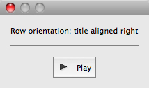 - To achieve a column orientation where the title appears above or below the graphic element, define vertical alignment as
toporbottom, and horizontal alignment ascenter:image.titleLayout = { alignment: ["center", "bottom"] };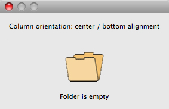 - To achieve a stack orientation where the title appears superimposed upon the graphic element, define both vertical and horizontal alignment as
center. This orientation is mainly useful with theiconbuttonorimageelement types; it does not make sense to superimpose a title over a dropdownlist, for instance. In this example, the button"s title is centered over its iconic image:button.title = "Get information"; button.titleLayout = { alignment: ["center", "center"] };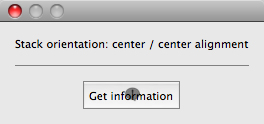 - With row orientation, you can control whether the title aligns to the top, center, or bottom of the graphic element. In this example, the title is placed to the left of the image, aligned at the top edge:
image.titleLayout = { alignment: ["left", "top"] };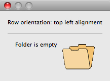 - Use
spacingto override the default number of pixels separating the title from the graphic element. In this example, titleLayout is configured to place the title 15 pixels above the panel:panel.title = "Image format"; panel.titleLayout = { alignment: ["center", "top"], spacing: 15 };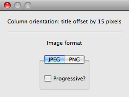
Title character width and justification¶
-
To override the automatically calculated title width, define a positive non-zero value for the
charactersproperty. This reserves enough space in the title area to hold the specified number of "X" characters. This is useful when an element's title can change (for localized values, for instance) and you want to reserve enough space to fit all the expected values without truncation or affecting the overall layout.droplist.titleLayout = { alignment: ["left", "center"], characters: 20 };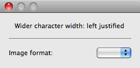 - When a
charactersvalue specifies a width greater than the default title width, you can set thejustifyproperty to control how the text of the title is justified within the space reserved for it. The valueleftplaces the text at the left end of the space, leaving blank space on the right;rightplaces the text at the right end of the space, leaving blank space on the left; andcenterplaces the text in the middle of the space, dividing any blank space evenly on both sides of the text.droplist.titleLayout = { alignment: ["left", "center"], characters: 20, justify: "right" };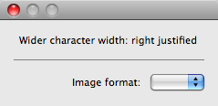 - This example demonstrates using
charactersandjustifyto vertically align the colons at the ends of all the dropdownlist control titles in a group. The samecharactersvalue is used for each element"stitle, and all are right-justified:w.ddl1 = w.add("dropdownlist { title: "Image format:" }"); w.ddl2 = w.add("dropdownlist { title: "Background color:" }"); w.ddl3 = w.add("dropdownlist { title: "Text color:" }"); w.ddl1.titleLayout = { alignment: ["left", "center"], spacing: 3, characters: 16, justify: "right" }; w.ddl2.titleLayout = { alignment: ["left", "center"], spacing: 3, characters: 16, justify: "right" }; w.ddl3.titleLayout = { alignment: ["left", "center"], spacing: 3, characters: 16, justify: "right" };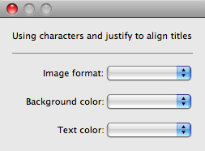
Title truncation¶
If the space reserved for a title is not wide enough to display its entire text, set the truncate property to control the appearance of the truncated text. If truncate is middle, characters are removed from the middle of the text and replaced with an ellipsis (...). For the value end, characters are removed from the end of the text and replaced with an ellipsis. If truncate is none or is not defined, characters are removed from the end, without any replacement ellipsis character.
This example demonstrates the effect of all three options on the same title string:
w.btn1 = w.add("iconbutton { title: 'Start 123456 End', image: 'SystemWarningIcon' }");
w.btn2 = w.add("iconbutton { title: 'Start 123456 End', image: 'SystemWarningIcon' }");
w.btn3 = w.add("iconbutton { title: 'Start 123456 End', image: 'SystemWarningIcon' }");
w.btn1.titleLayout = { characters: 8, truncate: 'middle' };
w.btn2.titleLayout = { characters: 8, truncate: 'end' };
w.btn3.titleLayout = { characters: 8, truncate: 'none' };
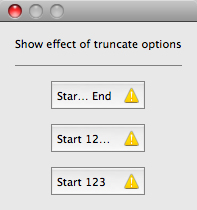
Margins around the title and graphic object¶
The margins property specifies the number of pixels separating each edge of an element from the visible content within that element. This value overrides the default margin settings (no margins for most element types, 6 pixels at each edge for iconbutton).
- For
iconbutton, the margins value controls the padding between the button's frame and its title and icon image. - For other element types,
marginscontrols the padding between the imaginary border surrounding the union of the bounding boxes of the title and graphic object, which makes the space occupied by an element larger than its default measurements.
This example demonstrates overriding the default margins for iconbutton and dropdownlist elements.
The lists are enclosed in panels to create artificial borders around them:
w.btn1 = w.add("iconbutton { title: 'Default margins', image: 'SystemWarningIcon' }");
w.btn2 = w.add("iconbutton { title: 'Extra T/B margins', image: 'SystemWarningIcon' }");
var defaultBtnMargins = w.btn2.titleLayout.margins;
w.btn2.titleLayout = { margins: [defaultBtnMargins[0], 15, defaultBtnMargins[2], 15] };
w.panel1 = w.add("panel { margins: 0, ddl1: DropDownList { title: 'Default margins' } }");
w.panel2 = w.add("panel { margins: 0, ddl2: DropDownList { title: 'Extra L/R margins' } }");
w.panel2.ddl2.titleLayout = { margins: [15, 0, 15, 0] };
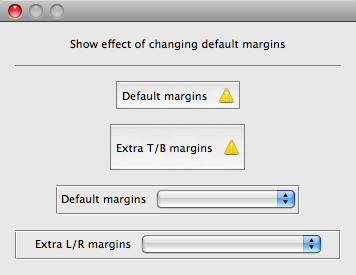
Localization in ScriptUI objects¶
For portions of your user interface that are displayed on the screen, you may want to localize the displayed text. You can localize the display strings in any ScriptUI object simply and efficiently, using the global localize function. This function takes as its argument a localization object containing the localized versions of a string.
For complete details of this ExtendScript feature, see Localizing ExtendScript strings.
A localization object is a JavaScript object literal whose property names are locale names, and whose property values are the localized text strings. The locale name is an identifier as specified in the ISO 31 standard. In this example, a btnText object contains localized text strings for several locales. This object supplies the text for a Button to be added to a window win:
btnText = { en: "Yes", de: "Ja", fr: "Oui" };
b1 = win.add ( "button", undefined, localize( btnText ) );
The localize function extracts the proper string for the current locale. It matches the current locale and platform to one of the object's properties and returns the associated string. On a German system, for example, the property de provides the string "Ja".
When your script uses localization to provide language-appropriate strings for user-interface elements, it should also take advantage of the Automatic layout feature. The layout manager can determine the best size for each user-interface element based on its localized text value, automatically adjusting the layout of your script-defined dialogs to allow for the varying widths of strings for different languages.
Variable values in localized strings¶
The localize function allows you to include variables in the string values. Each variable is replaced with the result of evaluating an additional argument.
For example:
var today = {
en: "Today is %1/%2.",
de: "Heute ist der %2.%1."
};
var date = new Date();
Window.alert( localize( today, date.getMonth() + 1, date.getDate() ) );
Enabling automatic localization¶
If you do not need variable replacement, you can use automatic localization. To turn on automatic localization, set the global value:
$.localization = true
When it is enabled, you can specify a localization object directly as the value of any property that takes a localizable string, without using the localize function. For example:
var btnText = { en: "Yes", de: "Ja", fr: "Oui" };
b1 = win.add( "button", undefined, btnText );
The localize function always performs its translation, regardless of the setting of the $.localize variable.
For example:
// Only works if the $.localize = true
var b1 = win.add ( "button", undefined, btnText );
// Always works, regardless of $.localize value
var b1 = win.add ( "button", undefined, localize( btnText ) );
If you need to include variables in the localized strings, use the localize function.
ScriptUI object reference¶
ScriptUI is a component that works with the ExtendScript JavaScript interpreter to provide JavaScript programs with the ability to create and interact with user interface elements. It provides an object model for windows and user-interface control elements within an application.
This section provides the details of the ScriptUI classes and objects with their properties, methods, and creation parameters.
ScriptUI class¶
The globally available ScriptUI class provides central information about the ScriptUI module. This object is not instantiable.
ScriptUI Classs Attributes¶
ScriptUI.Alignment¶
ScriptUI.Alignment
Collects the enumerated values that can be used in the alignment and alignChildren properties of controls and containers, and in the alignment property used to set a control's titleLayout property.
Use these constants to set the alignment.
When you query the alignment property, it returns index values that correspond to the constants as shown. Constant values are:
ScriptUI.Alignment.TOP(1)ScriptUI.Alignment.BOTTOM(2)ScriptUI.Alignment.LEFT(3)ScriptUI.Alignment.RIGHT(4)ScriptUI.Alignment.FILL(5)ScriptUI.Alignment.CENTER(6)
Type¶
Object. Read only.
Example¶
myGroup.alignment = [ScriptUI.Alignment.LEFT, ScriptUI.Alignment.TOP]
ScriptUI.applicationFonts¶
ScriptUI.applicationFonts
Description¶
Collects the enumerated values that specify the default application fonts.
The available fonts vary according to the application and system configuration.
Type¶
Object
ScriptUI.compatability¶
ScriptUI.compatability
Description¶
An object whose properties are the names of compatibility modes supported by the host application. For example, the presence of ScriptUI.compatability.su1PanelCoordinates means that the application allows backward compatibility with the coordinate system of Panel elements in ScriptUI version 1.
Type¶
Object
ScriptUI.coreVersion¶
ScriptUI.coreVersion
Description¶
The internal core version number of the ScriptUI components.
Type¶
String. Read only.
ScriptUI.environment¶
ScriptUI.environment
Description¶
A JavaScript object that provides access to attributes of the ScriptUI environment; contains a Keyboard state object that reports the active state of the keyboard at any time, independent of the event-handling framework.
Type¶
ScriptUI.events¶
ScriptUI.events
Description¶
A JavaScript object that contains one function, ScriptUI.events.createEvent(), which allows you to create event objects in order to simulate user-interaction events.
Type¶
Object
ScriptUI.FontStyle¶
ScriptUI.FontStyle
Description¶
Collects the enumerated values that can be used as the style argument to the ScriptUI.newFont() method. For example:
var font = ScriptUI.newFont( "Helvetica", ScriptUI.FontStyle.BOLD )
Values are:
REGULARBOLDITALICBOLDITALIC
Type¶
String. Read only.
ScriptUI.frameworkName¶
ScriptUI.frameworkName
Description¶
The name of the user-interface framework with which this ScriptUI component is compatible.
Type¶
String. Read only.
ScriptUI.version¶
ScriptUI.version
Description¶
The main version number of the ScriptUI component framework.
Type¶
String. Read only.
ScriptUI Class Methods¶
ScriptUI.events.createEvent()¶
ScriptUI.events.createEvent(eventType)
Description¶
This function is in the JavaScript object contained in the events property.
This object is passed to a function that you register to respond to events of a certain type that occur in a window or control. Use windowObj.addEventListener() or controlObj.addEventListener() to register a handler function.
See Registering event listeners for windows or controls.
Parameters¶
+-------------+--------+----------------------------+
| Parameter | Type | Description |
+=============+========+============================+
| eventType | String | The type of event, one of: |
| | | - UIEvent |
| | | - KeyboardEvent |
| | | - MouseEvent |
| ----------- | ------ | -------------------------- |
Returns¶
It returns an event object of the appropriate type:
- A UIEvent base class encapsulates input event information for an event that propagates through a container and control hierarchy. This is a base class for the more specialized keyboard and mouse event types.
- A KeyboardEvent object encapsulates information about keyboard input events.
- A MouseEvent object encapsulates information about mouse events.
ScriptUI.getResourceText()¶
ScriptUI.getResourceText(text)
Description¶
Finds and returns the resource for a given text string from the host application's resource data. If no string resource matches the given text, the text itself is returned.
Parameters¶
| Parameter | Type | Description |
|---|---|---|
text |
String | The text to match. |
Returns¶
String
ScriptUI.newFont()¶
ScriptUI.newFont(name, style, size);
Description¶
Creates a new font object for use in text controls and titles.
Parameters¶
| Parameter | Type | Description |
|---|---|---|
name |
String | The font or font family name string. |
style |
String | The font style string or an enumerated value from ScriptUI.FontStyle |
size |
Number | The font size in points, a number. |
Returns¶
ScriptUI.newImage()¶
ScriptUI.newImage( normal, disabled, pressed, rollover );
Description¶
Creates a new image object for use in controls that can display images, loading the associated images from the specified resources or image files.
Parameter¶
| Parameter | Type | Description |
|---|---|---|
normal |
String | The resource name or path to the image to use for the normal or default state. |
disabled |
String | The resource name or path to the image to use for the disabled state, shown when the control containing the image is disabled (enabled=false). |
pressed |
String | The resource name or path to the image to use for the pressed state, shown when the user clicks on the image. |
rollover |
String | The resource name or path to the image to use for the rollover state, which is shown when the cursor moves over the image. |
Returns¶
Environment object¶
This global object is available through the ScriptUI.environment property.
It defines attributes of the ScriptUI environment, and only contains one property.
Due to this object including only a single property (that is itself an object), all of the relevant documentation will be contained in this page.
Environment object properties¶
The following element properties apply specifically to Environment elements:
Keyboard state object¶
This JavaScript object reports the active state of the keyboard at any time; that is, the current key that is down and any modifiers that are pressed.
This is independent of the event-handling system, which means that at any time in your script, you can use this object to check whether specific keys (such as keyboard modifiers) are pressed, and trigger alternative actions as a result.
It is available through the ScriptUI.environment object:
var myKeyState = ScriptUI.environment.keyboardState;
The Keyboard State object contains the following properties:
keyName¶
ScriptUI.environment.keyboardState.keyName
The name of the key currently pressed. This is the JavaScript name, a string such as "A" or "a".
Note
This only works for single keys being pressed; holding multiple will report undefined.
Modifier keys will report undefined; to get those, see shiftKey, ctrlKey, altKey, metaKey
Type¶
String
Example¶
For example, with 'a' pressed:
var currentPressedKey = ScriptUI.environment.keyboardState.keyName;
alert(currentPressedKey); // "A"
shiftKey, ctrlKey, altKey, metaKey¶
ScriptUI.environment.keyboardState.shiftKey
ScriptUI.environment.keyboardState.ctrlKey
ScriptUI.environment.keyboardState.altKey
ScriptUI.environment.keyboardState.metaKey
Description¶
true if the named modifier key is currently active.
Note
metaKey captures both the META and COMMAND keys.
Type¶
Boolean
Example¶
For example, checking whether a modifier key is held during script execution:
var shiftHeld = ScriptUI.environment.keyboardState.shiftKey;
if (shiftHeld) {
alert("User is holding shift!");
}
Or to check for keyboard modifier combinations:
var keyboardState = ScriptUI.environment.keyboardState;
if (keyboardState.shiftKey && keyboardState.altKey) {
alert("Shift and alt held!");
}
This can also be used within interface buttons as alternative to checking the modifiers via keyboard events, which can be more confusing and less user-intuitive, unless you're confident you're handling event states properly.
For example:
button.onClick = function () {
if (ScriptUI.environment.keyboardState.shiftKey) {
// Special functionality for 'shift' key here
return;
}
// normal button behaviour here
}
Common properties¶
All types of user-interface elements, including windows, containers, and controls, share many of the same properties, although some have slightly different meanings for different types of objects. The following table summarizes which properties are used in which object types.
Window class¶
The Window class defines these static properties and functions. Window instances created with new Window() do not have these properties and functions defined.
Window Class Attributes¶
Window.frameworkName¶
Window.frameworkName
Description¶
Danger
Deprecated. Use ScriptUI.frameworkName instead.
Type¶
String
Window.version¶
Window.version
Description¶
Danger
Deprecated. Use ScriptUI.version instead.
Type¶
String
Window Class Methods¶
Access these function through the class. For example:
Window.alert("Notification to user");
alert()¶
Window.alert(message[, title="Script Alert", errorIcon=false]);
Description¶
Displays a platform-standard dialog containing a short message and an OK button.
Parameters¶
| Parameter | Type | Description |
|---|---|---|
message |
String | The string for the displayed message. |
title |
String | Optional. A string to appear as the title of the dialog, if the platform supports a title. Mac OS does not support titles for alert dialogs. The default title string is "Script Alert" |
errorIcon |
Boolean | Optional. When true, the platform-standard alert icon is replaced by the platform-standard error icon in the dialog. Default is false. |
Returns¶
Nothing
confirm()¶
Window.confirm(message[, noAsDflt=false, title="Script Alert"]);
Description¶
Displays a platform-standard dialog containing a short message and two buttons labeled "Yes" and "No".
Parameters¶
| Parameter | Type | Description |
|---|---|---|
message |
String | The string for the displayed message. |
noAsDflt |
Boolean | Optional. When true, the No button is the default choice, selected when the user types ENTER. Default is false, meaning that Yes is the default choice. |
title |
String | Optional. A string to appear as the title of the dialog, if the platform supports a title. Mac OS does not support titles for confirmation dialogs. The default title string is "Script Alert" |
Returns¶
Boolean. true if the user clicked "Yes", false if the user clicked "No".
find()¶
Window.find(resourceName)
Window.find(type, title)
Description¶
Use this method to find an existing window. This includes windows already created by a script, and windows created by the application (if the application supports this case).
Warning
Not supported in all ScriptUI implementations.
Parameters¶
| Parameter | Type | Description |
|---|---|---|
resourceName |
String | The name of a predefined resource available to JavaScript in the current application. |
type |
String | Optional. The window type (see Window object constructor) used if there is more than one window with the same title. Can be null or the empty string. |
title |
Strign | The window title. |
Returns¶
Window object found or generated from the resource, or null if no such window or resource exists.
prompt()¶
Window.prompt(message, preset[, title="Script Prompt"]);
Description¶
Displays a modal dialog that returns the user's text input.
Parameters¶
| Parameter | Type | Description |
|---|---|---|
message |
String | The string for the displayed message. |
preset |
String | The initial value to be displayed in the text edit field. |
title |
String | Optional. A string to appear as the title of the dialog. In Windows, this appears in the window's frame; in Mac OS it appears above the message. The default title string is "Script Prompt". |
Returns¶
Returns the value of the text edit field if the user clicked OK, null if the user clicked Cancel.
Window object¶
Window Object constructor¶
The constructor creates and returns a new Window object, or null if window creation failed.
new Window (type [, title, bounds, {creation_properties}]);
|
Parameter |
Type |
Description |
|---|---|---|
|
|
String |
The window type. One of: |
|
|
String |
Optional. The window title. A localizable string. |
|
|
Bounds object. |
Optional. The window's position and size. |
|
|
Object |
Optional. An object that contains any of the properties below. |
Creation Properties¶
|
Parameter |
Type |
Description |
|---|---|---|
|
|
Boolean |
When |
|
|
Boolean |
(Photoshop only) When |
|
|
Boolean |
When |
|
|
Boolean |
When |
|
|
Boolean |
When |
|
|
Boolean |
When |
|
|
Boolean |
When |
Window Object Attributes¶
The following element properties apply specifically to Window elements:
active¶
windowOrContainerObj.active
Description¶
When true, the object is active, false otherwise. Set to true to make a given control or dialog active.
- A modal dialog that is visible is by definition the active dialog.
- An active palette is the front-most window.
- An active control is the one with focus-that is, the one that accepts keystrokes, or in the case of a Button, be selected when the user types RETURN or ENTER.
Type¶
Boolean
cancelElement¶
windowOrContainerObj.cancelElement
Description¶
For a window of type dialog, the control to notify when a user types the ESC key.
By default, looks for a button whose name or text is "cancel" (case disregarded).
Type¶
defaultElement¶
windowOrContainerObj.defaultElement
Description¶
For a window of type dialog, the control to notify when a user types the ENTER key.
By default, looks for a button whose name or text is "ok" (case disregarded).
Type¶
frameBounds¶
windowOrContainerObj.frameBounds
Description¶
A Bounds object for the boundaries of the Window's frame in screen coordinates.
The frame consists of the title bar and borders that enclose the content region of a window, depending on the windowing system.
Type¶
Bounds. Read only.
frameLocation¶
windowOrContainerObj.frameLocation
Description¶
A Point object for the location of the top left corner of the Window's frame. The same as [frameBounds.x, frameBounds.y].
Set this value to move the window frame to the specified location on the screen. The frameBounds value changes accordingly.
Type¶
frameSize¶
windowOrContainerObj.frameSize
Description¶
A Dimension object for the size and location of the Window's frame in screen coordinates.
Type¶
Dimension. Read only.
maximized¶
windowOrContainerObj.maximized
Description¶
When true, the window is expanded.
Type¶
Boolean
minimized¶
windowOrContainerObj.minimized
Description¶
When true, the window is minimized or iconified.
Type¶
Boolean
opacity¶
windowOrContainerObj.opacity
Description¶
The opacity of the window, in the range [0..1].
A value of 1.0 (the default) makes the window completely opaque, a value of 0 makes it completely transparent.
Intermediate values make it partially transparent to any degree.
Type¶
Number
shortcutKey¶
windowOrContainerObj.shortcutKey
Description¶
Note
In Windows only.
The key sequence that invokes this window's ControlEvent.onShortcutKey callback.
Type¶
String
Container Attributes¶
The following table shows properties that apply to Window objects and container objects (controls of type panel, tabbedpanel, tab, and group).
alignChildren¶
windowOrContainerObj.alignChildren
Description¶
Tells the layout manager how unlike-sized children of a container should be aligned within a column or row. Order of creation determines which children are at the top of a column or the left of a row; the earlier a child is created, the closer it is to the top or left of its column or row.
If defined, alignment for a child element overrides the alignChildren setting for the parent container.
For a single string value, allowed values depend on the orientation value.
For orientation=row:
topbottomcenter(default)fill
For orientation=column:
leftrightcenter(default)fill
For orientation=stack:
topbottomleftrightcenter(default)fill
For an array value, the first string element defines the horizontal alignment and the second element defines the vertical alignment. The horizontal alignment value must be one of left, right, center or fill. The vertical alignment value must be one of top, bottom, center, or fill.
Values are not case sensitive.
Type¶
String, or Array of 2 Strings
alignment¶
windowOrContainerObj.alignment
Description¶
Applies to child elements of a container. If defined, this value overrides the alignChildren setting for the parent container.
For a single string value, allowed values depend on the orientation value.
For orientation = row:
topbottomcenter(default)fill
For orientation=column:
leftrightcenter(default)fill
For orientation = stack:
topbottomleftrightcenter(default)fill
For an array value, the first string element defines the horizontal alignment and the second element defines the vertical alignment.
The horizontal alignment value must be one of left, right, center or fill. The vertical alignment value must be one of top, bottom, center, or fill.
Values are not case sensitive.
Type¶
String, or Array of 2 Strings
bounds¶
windowOrContainerObj.bounds
Description¶
A Bounds object for the boundaries of the window's drawable area in screen coordinates. Compare frameBounds.
Does not apply to containers of type tab, whose bounds are determined by the parent tabbedpanel container.
Type¶
Bounds. Read only.
children¶
windowOrContainerObj.children
Description¶
The collection of user-interface elements that have been added to this window or container.
An array indexed by number or by a string containing an element's name. The length property of this array is the number of child elements for container elements, and is zero for controls.
Type¶
Array of Objects. Read only.
graphics¶
windowOrContainerObj.graphics
Description¶
A ScriptUIGraphics object that can be used to customize the window's appearance, in response to the onDraw event.
Type¶
layout¶
windowOrContainerObj.layout
Description¶
A LayoutManager object for a window or container. The first time a container object is made visible, ScriptUI invokes this layout manager by calling its layout function.
Default is an instance of the LayoutManager class that is automatically created when the container element is created.
Type¶
location¶
windowOrContainerObj.location
Description¶
A Point object for the location of the top left corner of the Window's drawable area, or the top left corner of the frame for a panel.
The same as [bounds.x, bounds.y].
Type¶
margins¶
windowOrContainerObj.margins
Description¶
A Margins object describing the number of pixels between the edges of this container and the outermost child elements. You can specify different margins for each edge of the container.
The default value is based on the type of container, and is chosen to match the standard Adobe user-interface guidelines.
Type¶
maximumSize¶
windowOrContainerObj.maximumSize
Description¶
A Dimension object for the largest rectangle to which the window can be resized, used in automatic layout and resizing.
Type¶
minimumSize¶
windowOrContainerObj.minimumSize
Description¶
A Dimension object for the smallest rectangle to which the window can be resized, used in automatic layout and resizing.
Type¶
orientation¶
windowOrContainerObj.orientation
Description¶
How elements are organized within this container.
Interpreted by the layout manager for the container.
The default LayoutManager object accepts the (case-insensitive) values:
rowcolumnstack
The default orientation depends on the type of container. For Window and Panel, the default is column, and for Group the default is row.
The allowed values for the container's alignChildren and its children's alignment properties depend on the orientation.
Type¶
String
parent¶
windowOrContainerObj.parent
Description¶
The immediate parent object of this element, a window or container element. The value is null for Window objects.
Type¶
Object. Read only.
preferredSize¶
windowOrContainerObj.preferredSize
Description¶
A Dimension object for the preferred size of the window, used in automatic layout and resizing. To set a specific value for only one dimension, specify other dimension as -1.
Type¶
properties¶
windowOrContainerObj.properties
Description¶
An object that contains one or more creation properties of the container (properties used only when the element is created).
Type¶
Object
selection¶
windowOrContainerObj.selection
Description¶
Info
For TabbedPanel objects only.
The currently active Tab child. Setting this property changes the active tab. The value can only be null when the panel has no children; setting it to null is an error.
When the value changes, either by a user selecting a different tab, or by a script setting the property, the onChange callback for the panel is called.
Type¶
size¶
windowOrContainerObj.size
Description¶
A Dimension object for the current size and location of a group or panel element, or of the content area of a window.
Type¶
spacing¶
windowOrContainerObj.spacing
Description¶
The number of pixels separating one child element from its adjacent sibling element. Because each container holds only a single row or column of children, only a single spacing value is needed for a container.
The default value is based on the type of container, and is chosen to match standard Adobe user-interface guidelines.
Type¶
Number
text¶
windowOrContainerObj.text
Description¶
The title, label, or displayed text. Does not apply to containers of type group or tabbedpanel.
This is a localizable string: see Localization in ScriptUI objects.
Type¶
String
visible¶
windowOrContainerObj.visible
Description¶
When true, the element is shown, when false it is hidden.
When a container is hidden, its children are also hidden, but they retain their own visibility values, and are shown or hidden accordingly when the parent is next shown.
Type¶
Boolean
window¶
windowOrContainerObj.window
Description¶
The top-level parent window of this container, a Window object.
Type¶
windowBounds¶
windowOrContainerObj.windowBounds
Description¶
A Bounds object for the size and location of this container relative to its top-level parent window.
Type¶
Window Object Methods¶
These functions are defined for Window instances, and as indicated for container objects of type Panel and Group.
add()¶
windowOrContainerObj.add(type[, bounds, text, { creation_props } ]);
Description¶
Creates and returns a new control or container object and adds it to the children of this window or container.
Parameters¶
| Parameter | Type | Description |
|---|---|---|
type |
String | The control type. See Control types and creation parameters. |
bounds |
Bounds object | Optional. A bounds specification that describes the size and position of the new control or container, relative to its parent. See Bounds object for specification formats. If supplied, this value creates a new Bounds object which is assigned to the new object's bounds property. |
text |
String | Optional. Initial text to be displayed in the control as the title, label, or contents, depending on the control type. If supplied, this value is assigned to the new object's text property. |
creation_props |
Object. | Optional. The properties of this object specify creation parameters, which are specific to each object type. See Control types and creation parameters. |
Returns¶
The new object, or null if unable to create the object.
addEventListener()¶
windowObj.addEventListener(eventName, handler[, capturePhase=false]);
Description¶
Registers an event handler for a particular type of event occurring in this window.
Parameters¶
|
Parameter |
Type |
Description |
|---|---|---|
|
|
String |
The event name string. Predefined event names include: |
|
|
Function |
The function to register for the specified event in this target. This can be the name of a function defined in the extension, or a locally defined handler function to be executed when the event occurs. A handler function takes one argument, the UIEvent base class. See Registering event listeners for windows or controls. |
|
|
Boolean |
Optional. When |
Returns¶
Nothing
center()¶
windowObj.center([window])
Description¶
Centers this window on the screen, or with respect to another specified window.
Parameters¶
| Parameter | Type | Description |
|---|---|---|
window |
Window object | Optional. A Window object. |
Returns¶
Nothing
close()¶
windowObj.close([result])
Description¶
Closes this window. If an onClose callback is defined for the window, calls that function before closing the window.
Parameters¶
| Parameter | Type | Description |
|---|---|---|
result |
Number | Optional. A number to be returned from the show method that invoked this window as a modal dialog. |
Returns¶
Nothing
dispatchEvent()¶
windowObj.dispatchEvent(eventObj)
Description¶
Simulates the occurrence of an event in this target. A script can create a UIEvent base class for a specific event and pass it to this method to start the event propagation for the event.
Parameters¶
| Parameter | Type | Description |
|---|---|---|
eventObj |
UIEvent base class | A UIEvent base class. |
Returns¶
Boolean. false if any of the registered listeners that handled the event called the event object's preventDefault() method, true otherwise.
findElement()¶
windowOrContainerObj.findElement(name)
Description¶
Searches for the named element among the children of this window or container, and returns the object if found.
Parameters¶
| Parameter | Type | Description |
|---|---|---|
name |
String | The name of the element, as specified in the name creation property. |
Returns¶
The control object or null.
hide()¶
windowObj.hide()
Hides this window. When a window is hidden, its children are also hidden, but when it is shown again, the children retain their own visibility states.
For a modal dialog, closes the dialog and sets its result to 0.
Returns¶
Nothing
notify()¶
windowObj.notify([event])
Description¶
Sends a notification message, simulating the specified user interaction event.
Parameters¶
|
Parameter |
Type |
Description |
|---|---|---|
|
|
String |
Optional. The name of the window event handler to call. One of: |
Returns¶
Nothing
Example¶
To simulate a dialog being moved by a user:
myDlg.notify("onMove")
remove()¶
windowOrContainerObj.remove(index)
windowOrContainerObj.remove(text)
windowOrContainerObj.remove(child)
Description¶
Removes the specified child control from this window's or container's children array. No error results if the child does not exist.
Parameters¶
| Parameter | Type | Description |
|---|---|---|
index/text/child |
Number, String, or Control object | The child control to remove, specified by 0-based index, the contained text value, or as a control object. |
Returns¶
Nothing
removeEventListener()¶
windowOrContainerObj.removeEventListener(eventName, handler[, capturePhase])
Description¶
Unregisters an event handler for a particular type of event occurring in this window. All arguments must be identical to those that were used to register the event handler.
Parameters¶
| Parameter | Type | Description |
|---|---|---|
eventName |
String | The event name string. |
handler |
Function | The function that was registered to handle the event. |
capturePhase |
Boolean | Optional. Whether the handler was to respond only in the capture phase. |
Returns¶
Nothing
show()¶
windowOrContainerObj.show()
Shows this window, container, or control. If an onShow callback is defined for a window, calls that function before showing the window.
When a window or container is hidden, its children are also hidden, but when it is shown again, the children retain their own visibility states.
For a modal dialog, opens the dialog and does not return until the dialog is dismissed. If it is dismissed via the close() method, this method returns any result value passed to that method. Otherwise, returns 0.
Returns¶
Nothing
update()¶
windowOrContainerObj.update()
Allows a script to run a long operation (such as copying a large file) and update UI elements to show the status of the operation.
Normally, drawing updates to UI elements occur during idle periods, when the application is not doing anything and the OS event queue is being processed, but during a long scripted operation, the normal event loop is not running. Use this method to perform the necessary synchronous drawing updates, and also process certain mouse and keyboard events in order to allow a user to cancel the current operation (by clicking a Cancel button, for instance).
During the update() operation, the application is put into a modal state, so that it does not handle any events that would activate a different window, or give focus to a control outside the window being updated. The modal state allows drawing events for controls in other windows to occur (as is the case during a modal show() operation), so that the script does not prevent the update of other parts of the application's UI while in the operation loop.
It is an error to call the update() method for a window that is not currently visible.
Returns¶
Nothing
Window event-handling callbacks¶
The following callback functions can be defined to respond to events in windows. To respond to an event, define a function with the corresponding name in the Window instance. These callbacks are not available for other container types (controls of type panel or group).
onActivate¶
Called when the user make the window active by clicking it or otherwise making it the keyboard focus.
onClose¶
Called when a request is made to close the window, either by an explicit call to the close() function or by a user action (clicking the OS-specific close icon in the title bar). The function is called before the window actually closes; it can return false to cancel the close operation.
onDeactivate¶
Called when the user makes a previously active window inactive; for instance by closing it, or by clicking another window to change the keyboard focus.
onDraw¶
Called when a container or control is about to be drawn. Allows the script to modify or control the appearance, using the control's associated ScriptUIGraphics object object. Handler takes one argument, a DrawState object object.
onMove¶
Called when the window has been moved.
onMoving¶
Called while a window in being moved, each time the position changes. A handler can monitor the move operation.
onResize¶
Called when the window has been resized.
onResizing¶
Called while a window is being resized, each time the height or width changes. A handler can monitor the resize operation.
onShortcutKey¶
(In Windows only)
Called when a shortcut-key sequence is typed that matches the shortcutKey value for this window.
onShow¶
Called when a request is made to open the window using the show() method, before the window is made visible, but after automatic layout is complete. A handler can modify the results of the automatic layout.
Control objects¶
UI elements that belong to windows can be containers or controls. Containers share some aspects of top-level windows, and some aspects of controls, and so are described here with controls.
Control object constructors¶
Use the add method to create new containers and controls. The add method is available on window and container (panel and group) objects. (See also add() for DropDownList and ListBox controls.)
add()¶
containerObj.(type[, bounds, text, {creation_props}]);
Description¶
Creates and returns a new control or container object and adds it to the children of this window or container.
Parameters¶
| Parameter | Type | Description |
|---|---|---|
type |
String | The control type. See Control types and creation parameters. |
bounds |
Bounds object | Optional. A bounds specification that describes the size and position of the new control or container, relative to its parent. If supplied, this value creates a new Bounds object which is assigned to the new object's bounds property. |
text |
String | Optional. Initial text to be displayed in the control as the title, label, or contents, depending on the control type. If supplied, this value is assigned to the new object's text property. |
creation_props |
Object | Optional. The properties of this object specify creation parameters, which are specific to each object type. See Control types and creation parameters. |
Returns¶
Returns the new object, or null if unable to create the object.
Control types and creation parameters¶
The following keywords can be used in string literals as the type specifier for the add method, available on Window and container (Panel and Group) objects. The class names can be used in resource specifications to define controls within a container element (Window, Panel, or Group).
All types of controls, including containers, have an optional creation parameter name that allows you to give the object a unique name.
button¶
Class Name: Button
Description¶
A pushbutton containing a mouse-sensitive text string. Calls the onClick callback if the control is clicked or if its notify() method is called.
Parameters¶
| Parameter | Type | Description |
|---|---|---|
bounds |
Bounds object | Optional. The control's position and size. |
text |
String | Optional. The text displayed in the control. |
creation_properties |
Object | Optional. An object that contains any of the properties below. |
Creation Properties¶
| Property | Type | Description |
|---|---|---|
name |
String | A unique name for the control. For a modal dialog, the special name "ok" makes this defaultElement, and the special name "cancel" makes this the cancelElement of the parent dialog. |
Example¶
To add to a window w:
w.add("button"[, bounds, text, {creation_properties}]);
checkbox¶
Class Name: Checkbox
Description¶
A dual-state control showing a box with a checkmark when value is true, empty when value is false.
Calls the onClick callback if the control is clicked or if its notify() method is called.
Parameters¶
| Parameter | Type | Description |
|---|---|---|
bounds |
Bounds object | Optional. The control's position and size. |
text |
String | Optional. The text displayed in the control. |
creation_properties |
Object | Optional. An object that contains any of the properties below. |
Creation Properties¶
| Property | Type | Description |
|---|---|---|
name |
String | A unique name for the control. |
Example¶
To add to a window w:
w.add("checkbox"[, bounds, text, {creation_properties}]);
dropdownlist¶
Class Name: DropDownList
Description¶
A drop-down list with zero or more items. Calls the onChange callback if the item selection is changed by a script or the user, or if the object's notify() method is called.
Parameters¶
| Parameter | Type | Description |
|---|---|---|
bounds |
Bounds object | Optional. The control's position and size. |
items |
Array of strings | Optional. Supply this argument or the creation_properties argument, not both. The text of each list item. A ListItem object is created for each item. An item with the text string "-" creates a separator item. |
creation_properties |
Object | Optional. An object that contains any of the properties below. |
Creation Properties¶
| Property | Type | Description |
|---|---|---|
name |
String | A unique name for the control. |
items |
Array of strings | The text of each list item. See the Parameters table for more info. |
Example¶
To add to a window w:
w.add( "dropdownlist", bounds[, items, {creation_properties}] );
editnumber¶
Class Name: EditNumber
Note
This functionality was added in Photoshop 20.0 (CC 2019), and may not exist in other hosts.
Description¶
An editable text field the user can enter decimal numbers into. Fractions are allowed.
Calls the onChange callback if the text is changed and the user types ENTER or the control loses focus, or if its notify() method is called.
Calls the onChanging callback when any change is made to the text.
The textselection property contains currently selected text.
Parameters¶
| Parameter | Type | Description |
|---|---|---|
bounds |
Bounds object | Optional. The control's position and size. |
text |
String | Optional. The text displayed in the control. |
minValue |
Number | Optional. Minimum accepted value of number to be entered. |
maxValue |
Number | Optional. Maximum accepted value of number to be entered. |
creation_properties |
Object | Optional. An object that contains any of the properties below. |
Creation Properties¶
| Property | Type | Description |
|---|---|---|
name |
String | A unique name for the control. |
readonly |
Boolean | Optional. When false (the default), the control accepts text input. When true, the control does not accept input but only displays the contents of the text property. |
noecho |
Boolean | Optional. When false (the default), the control displays input text. When true, the control does not display input text (used for password input fields). |
enterKeySignalsOnChange |
Boolean | Optional. When false (the default), the control signals an onChange event when the editable text is changed and the control loses the keyboard focus (that is, the user tabs to another control, clicks outside the control, or types ENTER). When true, the control only signals an onChange event when the editable text is changed and the user types ENTER; other changes to the keyboard focus do not signal the event. |
borderless |
Boolean | Optional. When true, the control is drawn with no border. Default is false. |
Example¶
To add to a window w:
w.add("editnumber"[, bounds, text, minValue, maxValue, {creation_properties}]);
edittext¶
Class Name: EditText
Description¶
An editable text field that the user can change. Calls the onChange callback if the text is changed and the user types ENTER or the control loses focus, or if its notify() method is called. Calls the onChanging callback when any change is made to the text.
The textselection property contains currently selected text.
Parameters¶
| Parameter | Type | Description |
|---|---|---|
bounds |
Bounds object | Optional. The control's position and size. |
text |
String | Optional. The text displayed in the control. |
creation_properties |
Object | Optional. An object that contains any of the properties below. |
Creation Properties¶
| Property | Type | Description |
|---|---|---|
name |
String | A unique name for the control. |
readonly |
Boolean | When false (the default), the control accepts text input. When true, the control does not accept input but only displays the contents of the text property. |
noecho |
Boolean | When false (the default), the control displays input text. When true, the control does not display input text (used for password input fields). |
enterKeySignalsOnChange |
Boolean | When false (the default), the control signals an onChange event when the editable text is changed and the control loses the keyboard focus (that is, the user tabs to another control, clicks outside the control, or types ENTER). When true, the control only signals an onChange event when the editable text is changed and the user types ENTER; other changes to the keyboard focus do not signal the event. |
borderless |
Boolean | When true, the control is drawn with no border. Default is false. |
multiline |
Boolean | When false (the default), the control accepts a single line of text. When true, the control accepts multiple lines, in which case the text wraps within the width of the control. |
scrollable |
Boolean | (For multiline elements only) When true (the default), the text field has a vertical scrollbar that is enabled when the element contains more text than fits in the visible area. When false, no vertical scrollbar appears; if the element contains more text than fits in the visible area, the arrow keys can be used to scroll the text up and down. |
Example¶
To add to a window w:
w.add("edittext"[, bounds, text, {creation_properties}]);
flashplayer¶
Class Name: FlashPlayer
Description¶
A control that contains a Flash Player, which can load and play Flash movies stored in SWF files.
The ScriptUI FlashPlayer element runs the Flash application within an Adobe application. The Flash application runs ActionScript, a different implementation of JavaScript from the ExtendScript version of JavaScript that Adobe applications run.
A control object of this type contains functions that allow your script to load SWF files, control movie playback, and communicate with the ActionScript environment. See FlashPlayer control functions.
Parameters¶
| Parameter | Type | Description |
|---|---|---|
bounds |
Bounds object | Optional. The control's position and size. |
moveToLoad |
String or File object | Optional. A path or URL string or File for the SWF file to load into the player. |
creation_properties |
Object | Optional. An object that contains any of the properties below. |
Creation Properties¶
| Property | Type | Description |
|---|---|---|
name |
String | A unique name for the control. |
Example¶
To add to a window w:
w.add("flashplayer"[, bounds, movieToLoad, {creation_properties}]);
group¶
Class Name: Group
Description¶
A container for other controls. Containers have additional properties that control the children; see Container Attributes.
Hiding a group hides all its children. Making it visible makes visible those children that are not individually hidden.
Parameters¶
| Parameter | Type | Description |
|---|---|---|
bounds |
Bounds object | Optional. The control's position and size. |
creation_properties |
Object | Optional. An object that contains any of the properties below. |
Creation Properties¶
| Property | Type | Description |
|---|---|---|
name |
String | A unique name for the control. |
Example¶
To add to a window w:
w.add("group"[, bounds, {creation_properties}]);
iconbutton¶
Class Name: IconButton
Description¶
A mouse-sensitive pushbutton containing an icon. Calls the onClick callback if the control is clicked or if its notify() method is called.
Parameters¶
| Parameter | Type | Description |
|---|---|---|
bounds |
Bounds object | Optional. The control's position and size. |
icon |
Named resource, pathname, or File object | Optional. The named resource for the icon or family of icons displayed in the button control, or a pathname or File for an image file. Images must be in PNG format. |
creation_properties |
Object | Optional. An object that contains any of the properties below. |
Creation Properties¶
|
Property |
Type |
Description |
|---|---|---|
|
|
String |
A unique name for the control. |
|
|
String |
A string for the visual style, one of: |
|
|
Boolean |
For a button-style control, a value of |
Example¶
To add to a window w:
w.add("iconbutton"[, bounds, icon, {creation_properties}]);
image¶
Class Name: Image
Description¶
Displays an icon or image.
Parameters¶
| Parameter | Type | Description |
|---|---|---|
bounds |
Bounds object | Optional. The control's position and size. |
icon |
Named resource, pathname, or File object | Optional. The named resource for the icon or family of icons displayed in the button control, or a pathname or File for an image file. Images must be in PNG format. |
creation_properties |
Object | Optional. An object that contains any of the properties below. |
Creation Properties¶
| Property | Type | Description |
|---|---|---|
name |
String | A unique name for the control. |
Example¶
To add to a window w:
w.add("image"[, bounds, icon, {creation_properties}]);
item¶
Class Name: Array of ListItem
Description¶
The choice items in a list box or drop-down list. The objects are created when items are specified on creation of the parent list object, or afterward using the list control's add() method.
Items in a drop-down list can be of type separator, in which case they cannot be selected, and are shown as a horizontal line.
Item objects have these properties which are not found in other controls:
listbox¶
Class Name: ListBox
Description¶
A list box with zero or more items. Calls the onChange callback if the item selection is changed by a script or the user, or if the object's notify() method is called. A double click on an item selects that item and calls the onDoubleClick callback.
Parameters¶
| Parameter | Type | Description | |
|---|---|---|---|
bounds |
Bounds object | Optional. The control's position and size. | |
items |
Array of Strings | Optional. The text of each list item. A ListItem object is created for each item. Supply this argument, or the items property in creation_properties, not both. A ListItem object is created for each item. An item with the text string "-" creates a separator item. |
|
creation_properties |
Object | Optional. An object that contains any of the properties below. |
Creation Properties¶
| Property | Type | Description |
|---|---|---|
name |
String | A unique name for the control. |
multiselect |
Boolean | When false (the default), only one item can be selected. When true, multiple items can be selected. |
items |
Array of Strings | The text of each list item. Supply this property, or the items argument, not both. This form is most useful for elements defined using Resource specifications. |
numberOfColumns |
Number | A number of columns in which to display the items; default is 1. When there are multiple columns, each ListItem object represents a single selectable row. Its text and image values supply the label for the first column, and the subitems property specifies labels for additional columns. |
showHeaders |
Boolean | true to display column titles. |
columnWidths |
Array of Numbers | An array of numbers for the preferred width in pixels of each column. |
columnTitles |
Array of Strings | A corresponding array of strings for the title of each column, to be shown if showHeaders is true. |
Example¶
To add to a window w:
w.add("listbox", bounds[, items, {creation_properties}]);
panel¶
Class Name: Panel
Description¶
A container for other types of controls, with an optional frame.
Containers have additional properties that control the children; see Container Attributes. Hiding a panel hides all its children. Making it visible makes visible those children that are not individually hidden.
Parameters¶
| Parameter | Type | Description |
|---|---|---|
bounds |
Bounds object | Optional. The control's position and size. |
text |
String | Optional. The text displayed in the border of the panel. |
creation_properties |
Object | Optional. An object that contains any of the properties below. |
Creation Properties¶
|
Property |
Type |
Description |
|---|---|---|
|
|
String |
A unique name for the control. |
|
|
String |
A string that specifies the appearance of the border drawn around the panel. Default is Warning The |
|
|
Boolean |
When |
Example¶
To add to a window w:
w.add("panel"[, bounds, text, {creation_properties}]);
progressbar¶
Class Name: Progressbar
Description¶
A horizontal rectangle that shows progress of an operation.
All progressbar controls have a horizontal orientation. The value property contains the current position of the progress indicator; the default is 0. There is a minvalue property, but it is always 0; attempts to set it to a different value are silently ignored.
Parameters¶
| Parameter | Type | Description |
|---|---|---|
bounds |
Bounds object | Optional. The control's position and size. |
value |
Number | Optional. The initial position of the progress indicator. Default is 0. |
minvalue |
Number | Optional. The minimum value that the value property can be set to. Default is 0. Together with maxvalue, defines the range. |
maxvalue |
Number | Optional. The maximum value that the value property can be set to. Default is 100. Together with minvalue, defines the range. |
creation_properties |
Object | Optional. An object that contains any of the properties below. |
Creation Properties¶
| Property | Type | Description |
|---|---|---|
name |
String | A unique name for the control. |
Example¶
To add to a window w:
w.add("progressbar"[, bounds, value, minvalue, maxvalue, creation_properties}]);
radiobutton¶
Class Name: RadioButton
Description¶
A dual-state control, grouped with other radiobuttons, of which only one can be in the selected state. Shows the selected state when value is true, empty when value is false. Calls the onClick callback if the control is clicked or if its notify() method is called.
All radiobuttons in a group must be created sequentially, with no intervening creation of other element types. Only one radiobutton in a group can be set at a time; setting a different radiobutton unsets the original one.
Parameters¶
| Parameter | Type | Description |
|---|---|---|
bounds |
Bounds object | Optional. The control's position and size. |
text |
String | Optional. The text displayed in the control. |
creation_properties |
Object | Optional. An object that contains any of the properties below. |
Creation Properties¶
| Property | Type | Description |
|---|---|---|
name |
String | A unique name for the control. |
Example¶
To add to a window w:
w.add("radiobutton"[, bounds, text, {creation_properties}]);
scrollbar¶
Class Name: Scrollbar
Description¶
A scrollbar with a draggable scroll indicator and stepper buttons to move the indicator. The scrollbar control has a horizontal orientation if the width is greater than the height at creation time, or vertical if its height is greater than its width.
Calls the onChange callback after the position of the indicator is changed or if its notify() method is called. Calls the onChanging callback repeatedly while the user is moving the indicator.
Properties¶
| Property | Type | Description |
|---|---|---|
value |
Number | Contains the current position of the scrollbar's indicator within the scrolling area, within the range of minvalue and maxvalue. |
stepdelta |
Number | Determines the scrolling unit for the up or down arrow. Default is 1. |
jumpdelta |
Number | Determines the scrolling unit for a jump (as when the bar is clicked outside the indicator or arrows); default is 20% of the range between minvalue and maxvalue. |
Parameters¶
| Parameter | Type | Description |
|---|---|---|
bounds |
Bounds object | Optional. The control's position and size. |
value |
Number | Optional. The initial position of the scroll indicator. Default is 0. |
minvalue |
Number | Optional. The minimum value that the value property can be set to. Default is 0. Together with maxvalue, defines the scrolling range. |
maxvalue |
Number | Optional. The maximum value that the value property can be set to. Default is 100. Together with minvalue, defines the scrolling range. |
creation_properties |
Object | Optional. An object that contains any of the properties below. |
Creation Properties¶
| Property | Type | Description |
|---|---|---|
name |
String | A unique name for the control. |
Example¶
To add to a window w:
w.add("scrollbar"[, bounds, value, minvalue, maxvalue, {creation_properties}]);
slider¶
Class Name: Slider
Description¶
A slider with a moveable position indicator. All slider controls have a horizontal orientation. Calls the onChange callback after the position of the indicator is changed or if its notify() method is called.
Calls the onChanging callback repeatedly while the user is moving the indicator.
The value property contains the current position of the indicator within the range of minvalue and maxvalue.
Parameters¶
| Parameter | Type | Description |
|---|---|---|
bounds |
Bounds object | Optional. The control's position and size. |
value |
Number | Optional. The initial position of the scroll indicator. Default is 0. |
minvalue |
Number | Optional. The minimum value that the value property can be set to. Default is 0. Together with maxvalue, defines the range. |
maxvalue |
Number | Optional. The maximum value that the value property can be set to. Default is 100. Together with minvalue, defines the range. |
creation_properties |
Object | Optional. An object that contains any of the properties below. |
Creation Properties¶
| Property | Type | Description |
|---|---|---|
name |
String | A unique name for the control. |
Example¶
To add to a window w:
w.add("slider"[, bounds, value, minvalue, maxvalue, {creation_properties}]);
statictext¶
Class Name: StaticText
Description¶
A text field that the user cannot change.
Parameters¶
| Parameter | Type | Description |
|---|---|---|
bounds |
Bounds object | Optional. The control's position and size. |
text |
String | Optional. The text displayed in the control. |
creation_properties |
Object | Optional. An object that contains any of the properties below. |
Creation Properties¶
|
Property |
Type |
Description |
|---|---|---|
|
|
String |
A unique name for the control. |
|
|
Boolean |
When |
|
|
Boolean |
When |
Example¶
To add to a window w:
w.add("statictext"[, bounds, text, {creation_properties}]);
tab¶
Class Name: Tab
Description¶
A container for other types of controls. Differs from a panel element in that is must be a direct child of a tabbedpanel element, the title is shown in the selection tab, and it does not have a script-definable border. The currently active tab is the value of the parent's selection property.
Containers have additional properties that control the children; see Container Attributes. Hiding a panel hides all its children. Making it visible makes visible those children that are not individually hidden.
Parameters¶
| Parameter | Type | Description |
|---|---|---|
bounds |
Bounds object | Optional. The control's position and size. |
text |
String | Optional. The text displayed in the control. |
creation_properties |
Object | Optional. An object that contains any of the properties below. |
Creation Properties¶
| Property | Type | Description |
|---|---|---|
name |
String | A unique name for the control. |
Example¶
To add a tab to a tabbed panel t in window w:
w.t.add("tab"[, bounds, text, {creation_properties}]);
tabbedpanel¶
Class Name: TabbedPanel
Description¶
A container for selectable tab containers. Differs from a panel element in that it can contain only tab elements as direct children.
Containers have additional properties that control the children; see Container Attributes. Hiding a panel hides all its children. Making it visible makes visible those children that are not individually hidden.
The selected tab child is the value of the parent's selection property. One and only one of the tab children must be selected; selecting one deselects the others. When the value of the selection property changes, either by a user selecting a different tab, or by a script setting the property, the tabbedpanel receives an onChange notification.
Parameters¶
| Parameter | Type | Description |
|---|---|---|
bounds |
Bounds object | Optional. The control's position and size. |
text |
String | Optional. The text displayed in the control. |
creation_properties |
Object | Optional. An object that contains any of the properties below. |
Creation Properties¶
| Property | Type | Description |
|---|---|---|
name |
String | A unique name for the control. |
Example¶
To add to a window w:
w.add("tabbedpanel"[, bounds, text, {creation_properties}]);
treeview¶
Class Name: TreeView
Description¶
A hierarchical list whose items can contain child items. Items at any level of the tree can be individually selected. Calls the onChange callback if the item selection is changed by a script or the user, or if the object's notify() method is called.
Parameters¶
| Parameter | Type | Description |
|---|---|---|
bounds |
Bounds object | Optional. The control's position and size. |
items |
Array of Strings | Optional. The text of each top-level list item. A ListItem object is created for each item. An item with the type node can contain child items. Supply this argument, or the items property in creation_properties, not both. |
creation_properties |
Object | Optional. An object that contains any of the properties below. |
Creation Properties¶
| Property | Type | Description |
|---|---|---|
name |
String | A unique name for the control. |
items |
Array of Strings | The text of each top-level list item. A ListItem object is created for each item. An item with the type node can contain child items. Supply this property, or the items argument, not both. This form is most useful for elements defined using Resource specifications. |
Example¶
To add to a window w:
w.add("treeview"[, bounds, items, {creation_properties}])
Control object properties¶
The following table shows the properties of ScriptUI control elements. Some values apply only to controls of particular types, as indicated.
See Container Attributes for properties that apply to container elements (controls of type panel, tabbedpanel, tab, and group).
active¶
controlObj.active
Description¶
When true, the object is active, false otherwise. Set to true to make a given control or dialog active.
- A modal dialog that is visible is by definition the active dialog.
- An active palette is the front-most window.
- An active control is the one with focus-that is, the one that accepts keystrokes, or in the case of a Button, be selected when the user types ENTER in Windows, or presses the spacebar in Mac OS.
Type¶
Boolean
alignment¶
controlObj.alignment
Description¶
Applies to child elements of a container. If defined, this value overrides the alignChildren setting for the parent container.
For a single string value, allowed values depend on the orientation value in the parent container.
|
|
Allowed values |
|---|---|
|
|
|
|
|
|
|
|
|
For an array value, the first string element defines the horizontal alignment and the second element defines the vertical alignment.
The horizontal alignment value must be one of "left", "right", "center" or "fill".
The vertical alignment value must be one of "top", "bottom", "center", or "fill".
Note
Values are not case sensitive.
Type¶
String or Array of 2 Strings
bounds¶
controlObj.bounds
Description¶
A Bounds object describing the boundaries of the element, in screen coordinates for Window elements, and parent-relative coordinates for child elements (compare windowBounds). For windows, the bounds refer only to the window's content region.
Type¶
characters¶
controlObj.characters
Description¶
Used by the LayoutManager object to determine the default preferredSize for a StaticText or EditText control.
The control will be made wide enough to display the given number of X characters in the font used by the control. Setting this property is the best way to reserve space in a control for a maximum number of characters to display.
Type¶
Number
checked¶
controlObj.checked
Description¶
Info
For ListItem objects only.
- When
true, the item is marked with the platform-appropriate checkmark. - When
false, no checkmark is drawn, but space is reserved for it in the left margin, so that the item lines up with other checkable items. - When
undefined, no space is reserved for a checkmark.
Type¶
Boolean
columns¶
controlObj.columns
Description¶
Info
For ListBox objects only.
A JavaScript object with two read-only properties whose values are set by the creation parameters.
Properties¶
| Property | Type | Description |
|---|---|---|
titles |
Array of Strings | An array of column title strings, whose length matches the number of columns specified at creation. |
preferredWidths |
Array of Numbers | An array of column widths, whose length matches the number of columns specified at creation. |
Type¶
Object
enabled¶
controlObj.enabled
Description¶
- When
true, the control is enabled, meaning that it accepts input. - When
false, control elements do not accept input, and all types of elements have a dimmed appearance.
Note
A disabled ListItem is not selectable in a ListBox, DropDownList, or TreeView object.
Type¶
Boolean
expanded¶
controlObj.expanded
Description¶
For ListItem objects of type node in TreeView list controls. When true, the item is in the expanded state and its children are shown, when false, it is collapsed and children are hidden.
Type¶
Boolean
graphics¶
controlObj.graphics
Description¶
A ScriptUIGraphics object that can be used to customize the control's appearance, in response to the onDraw event.
Type¶
helpTip¶
controlObj.helpTip
Description¶
A brief help message (also called a tool tip) that is displayed in a small floating window when the mouse cursor hovers over a user-interface control element.
Set to an empty string or null to remove help text.
Type¶
String
icon¶
controlObj.icon
Description¶
Danger
Deprecated. Use Image instead.
Type¶
String or File object
image¶
controlObj.image
Description¶
A ScriptUIImage object, or the name of an icon resource, or the pathname or File object for a file that contains a platform-specific image in PNG or JPEG format, or for a shortcut or alias to such a file.
- For an IconButton, the icon appears as the content of the button.
- For an Image, the image is the entire content of the image element.
- For a ListItem, the image is displayed to the left of the text.
- If the parent is a multi-column ListBox, this is the display image for the label in the first column, and labels for further columns are specified in the subitems array.
- See Creating multi-column lists.
Type¶
indent¶
controlObj.indent
Description¶
A number of pixels by which to indent the element during automatic layout. Applies for column orientation and left alignment, or row orientation and top alignment.
Type¶
Number
index¶
controlObj.index
Description¶
Info
For ListItem objects only.
The index of this item in the items collection of its parent list control.
Type¶
Number. Read only.
items¶
controlObj.items
Description¶
Info
For ListBox, DropDownList, or TreeView objects only.
A collection of ListItem objects for the items in the list. Access by 0-based index.
Tip
To obtain the number of items in the list, use items.length.
Type¶
Array of Objects. Read only.
itemSize¶
controlObj.itemSize
Description¶
Info
For ListBox, DropDownList, or TreeView objects only.
A Dimension object describing the width and height in pixels of each item in the list.
Used by auto-layout to determine the preferredSize of the list, if not otherwise specified.
If not set explicitly, the size of each item is set to match the largest height and width among all items in the list.
Type¶
Dimension object
jumpdelta¶
controlObj.jumpdelta
Description¶
Info
For Scrollbar objects only.
The amount to increment or decrement a Scrollbar indicator's position when the user clicks ahead or behind the moveable element.
Default is 20% of the range between the maxvalue and minvalue property values.
Type¶
Number
justify¶
controlObj.justify
Description¶
The justification of text in StaticText and EditText controls.
One of:
"left"(default)"center""right"
Note
Justification only works if the value is set on creation, using a resource specification or creation parameters.
Type¶
String
location¶
controlObj.location
Description¶
A Point object describing the location of the element as an array, [x, y], representing the coordinates of the upper left corner of the element. These are screen coordinates for Window elements, and parent-relative coordinates for other elements.
The location is defined as [bounds.x, bounds.y].
By default, location is undefined until the parent container's layout manager is invoked.
Type¶
maximumSize¶
controlObj.maximumSize
Description¶
A Dimension object that specifies the maximum height and width for an element.
The default is 50 pixels less than the screen size in each dimension. In Windows, this can occupy the entire screen; you must define a maximumSize to be large enough for your intended usage.
Type¶
minimumSize¶
controlObj.minimumSize
Description¶
A Dimension object that specifies the minimum height and width for an element. Default is [0,0].
Type¶
maxvalue¶
controlObj.maxvalue
Description¶
The maximum value that the value property can have.
- If
maxvalueis reset less thanvalue,valueis reset tomaxvalue. - If
maxvalueis reset less thanminvalue,minvalueis reset tomaxvalue.
Type¶
Number
minvalue¶
controlObj.minvalue
Description¶
The minimum value that the value property can have.
- If
minvalueis reset greater thanvalue,valueis reset tominvalue. - If
minvalueis reset greater thanmaxvalue,maxvalueis reset tominvalue.
Type¶
Number
parent¶
controlObj.parent
Description¶
The immediate parent object of this element.
Type¶
Control Object. Read only.
preferredSize¶
controlObj.preferredSize
Description¶
A Dimension object used by layout managers to determine the best size for each element. If not explicitly set by a script, value is established by the user-interface framework in which ScriptUI is employed, and is based on such attributes of the element as its text, font, font size, icon size, and other user-interface framework-specific attributes.
A script can explicitly set preferredSize before the layout manager is invoked in order to establish an element size other than the default. To set a specific value for only one dimension, specify the other dimension as -1.
Type¶
properties¶
controlObj.properties
Description¶
An object that contains one or more creation properties of the element (properties used only when the element is created).
Type¶
Object
selected¶
controlObj.selected
Description¶
Info
For ListItem objects only.
- When
true, the item is part of theselectionfor its parent list. - When
false, the item is not selected.
Set to true to select this item in a single-selection list, or to add it to the selection array for a multi-selection list.
Type¶
Boolean
selection¶
controlObj.selection
Description¶
Info
For ListBox objects only.
For a ListBox, an array of ListItem objects for the current selection in a multi-selection list. Setting this value causes the selected item to be highlighted and to be scrolled into view if necessary. If no items are selected, the value is null. Set to null to deselect all items.
The value can also change because the user clicked or double-clicked an item, or because an item was removed with remove() or removeAll(). Whenever the value changes, the onChange callback is called. If the value is changed by a double click, calls the onDoubleClick callback.
You can set the value using the index of an item or an array of indices, rather than object references. If set to an index value that is out of range, the operation is ignored. When set with index values, the property still returns object references.
- If you set the value to an array for a single-selection list, only the first item in the array is selected.
- If you set the value to a single item for a multi-selection list, that item is added to the current selection.
Type¶
Array of ListItem objects
selection¶
controlObj.selection
Description¶
Info
For DropDownList, or TreeView objects only.
The currently selected ListItem object.
Setting this value causes the selected item to be highlighted and to be scrolled into view if necessary. If no item is selected, the value is null. Set to null to deselect all items.
The value can also change because the user clicked on an item, or because an item was removed with remove() or removeAll().
Whenever the value changes, the onChange callback is called.
You can set the value using the index of an item or an array of indices, rather than object references. If set to an index value that is out of range, the operation is ignored. When set with an index value, the property still returns an object reference.
Type¶
ListItem
shortcutKey¶
controlObj.shortcutKey
Description¶
The key sequence that invokes the onShortcutKey callback for this element (in Windows only).
Type¶
String
size¶
controlObj.size
Description¶
A Dimension object that defines the actual dimensions of an element.
Initially undefined, and unless explicitly set by a script, it is defined by a LayoutManager object.
Although a script can explicitly set size before the layout manager is invoked to establish an element size other than the preferredSize or the default size, this is not recommended.
Defined as [bounds.width, bounds.height].
Type¶
Dimension object
stepdelta¶
controlObj.stepdelta
Description¶
The amount by which to increment or decrement a Scrollbar element's position when the user clicks a stepper button.
Type¶
Number
subitems¶
controlObj.subitems
Description¶
Info
For ListItem objects only.
When the parent is a multi-column ListBox, the ListItem.text and ListItem.image values describe the label in the first column, and this specifies additional labels for that row in the remaining columns.
This contains an array of JavaScript objects, whose length is one less than the number of columns. Each member specifies a label in the corresponding column, with the first member (subitems[0]) describing the label in the second column.
Properties¶
Each object has two properties, of which one or both can be supplied:
| Property | Type | Description |
|---|---|---|
text |
String | A localizable display string for this label. |
image |
Image | An Image object for this label. |
Type¶
Array
text¶
controlObj.text
Description¶
The title, label, or displayed text. Ignored for containers of type group.
For controls, the meaning depends on the control type. Buttons use the text as a label, for example, while edit fields use the text to access the content.
For ListItem objects, this is the display string for the list choice. If the parent is a multi-column list box, this is the display string for the label in the first column, and labels for further columns are specified in the subitems array. See Creating multi-column lists.
This is a localizable string: see Localization in ScriptUI objects.
Type¶
String
textselection¶
controlObj.textselection
Description¶
The currently selected text in a control that displays text, or the empty string if there is no text selected.
Setting the value replaces the current text selection and modifies the value of the text property. If there is no current selection, inserts the new value into the text string at the current insertion point. The textselection value is reset to an empty string after it modifies the text value.
Note
Setting the textselection property before the EditText control's parent Window exists is an undefined operation.
Type¶
String
title¶
controlObj.title
Description¶
Info
For DropDownList, FlashPlayer, IconButton, Image, or TabbedPanel objects only.
A text label for the element. The title can appear to the left or right of the element, or above or below it, or you can superimpose the title over the center of the element. The placement is controlled by the titleLayout value.
Type¶
String
titleLayout¶
controlObj.titleLayout
Description¶
Info
For DropDownList, FlashPlayer, IconButton, Image, or TabbedPanel objects only.
For a control with a title value, the way the text label is shown in relation to the element.
Properties¶
| Property | Type | Description |
|---|---|---|
alignment |
Array or Numbers | The position of the title relative to the element, an array of [horizontal_alignment, vertical_alignment]. For possible alignment values, see alignment. Note that fill is not a valid alignment value for either horizontal or vertical alignment in this context. |
characters |
Number | If 1 or greater, reserves a title width wide enough to hold the specified number of "X" characters in the font for this element. If 0, the title width is calculated based on the value of the title property during layout operations. |
spacing |
Number | 0 or greater. The number of pixels separating the title from the element. |
margins |
Array of Numbers, [left, top, right, bottom] |
The number of pixels separating each edge of an element and the visible content within that element. This overrides the default margins. |
justify |
String | One of "left", "center", or "right", how to justify the text when the space allocated for the title width is greater than the actual width of the text. |
truncate |
String | If "middle" or "end", defines where to remove characters from the text and replace them with an ellipsis ("...") if the specified title does not fit within the space reserved for it. If "none", and the text does not fit, characters are removed from the end, without any replacement ellipsis character. |
Type¶
Object
type¶
controlObj.type
Description¶
Contains the type name of the element, as specified on creation.
- For
Windowobjects, one of the type names window, palette, or dialog. - For
controls, the type of the control, as specified in the add method that created it.
Type¶
String. Read only.
value¶
controlObj.value
Description¶
Info
For Checkbox or RadioButton objects only.
true if the control is in the selected or set state, false if it is not.
Type¶
Boolean
value¶
controlObj.value
Description¶
The current position of the indicator. If set to a value outside the range specified by minvalue and maxvalue, it is automatically reset to the closest boundary.
Type¶
Number
visible¶
controlObj.visible
Description¶
When true, the element is shown, when false it is hidden.
When a container is hidden, its children are also hidden, but they retain their own visibility values, and are shown or hidden accordingly when the parent is next shown.
Type¶
Boolean
window¶
controlObj.window
Description¶
The Window that contains this control.
Type¶
Window object. Read only.
windowBounds¶
controlObj.windowBounds
Description¶
A Bounds object that contains the bounds of this control in the containing window's coordinates. Compare to this control object's .bounds property, in which coordinates are relative to the immediate parent container.
Type¶
Bounds object. Read only.
function_name¶
controlObj.function_name
Description¶
For the FlashPlayer control, a function definition for a callback from the Flash ActionScript environment.
There are no special naming requirements, but the function must take and return only the supported data types:
- Array
- Boolean
- Null
- Number
- Object
- String
- undefined
Note
The ActionScript class and date objects are not supported as parameter values.
Type¶
Function
Control object functions¶
The following table shows the methods defined for each element type, and for specific control types as indicated.
addEventListener()¶
controlObj.addEventListener(eventName, handler[, capturePhase=false]);
Description¶
Registers an event handler for a particular type of event occurring in this control.
Parameter¶
|
Parameter |
Type |
Description |
|---|---|---|
|
|
String |
The event name string. Predefined event names include: |
|
|
Function |
The function to register for the specified event in this target. This can be the name of a function defined in the extension, or a locally defined handler function to be executed when the event occurs. A handler function takes one argument, an object of the UIEvent base class. See Registering event listeners for windows or controls. |
|
|
Boolean |
Optional. When |
Returns¶
Nothing
dispatchEvent()¶
controlObj.dispatchEvent(eventObj)
Description¶
Simulates the occurrence of an event in this target. A script can create an event object for a specific event, using ScriptUI.events.createEvent(), and pass it to this method to start the event propagation for the event.
Parameters¶
| Parameter | Type | Description |
|---|---|---|
eventObj |
Object | An object of the UIEvent base class. |
Returns¶
Boolean. false if any of the registered listeners that handled the event called the event object's preventDefault() method, true otherwise.
hide()¶
controlObj.hide()
Description¶
Hides this container or control. When a window or container is hidden, its children are also hidden, but when it is shown again, the children retain their own visibility states.
Returns¶
Nothing
notify()¶
controlObj.notify([event])
Description¶
Sends a notification message, simulating the specified user interaction event.
Parameters¶
|
Parameter |
Type |
Description |
|---|---|---|
|
|
String |
Optional. The name of the control event handler to call. One of: |
Returns¶
Nothing
removeEventListener()¶
controlbj.removeEventListener(eventName, handler[, capturePhase]);
Description¶
Unregisters an event handler for a particular type of event occurring in this control. All arguments must be identical to those that were used to register the event handler.
Parameters¶
| Parameter | Type | Description |
|---|---|---|
eventName |
String | The event name. |
handler |
Function | The function that was registered to handle the event. |
capturePhase |
Boolean | Optional. Whether the handler was to respond only in the capture phase. |
Returns¶
Nothing
show()¶
controlObj.show()
Description¶
Shows this container or control.
When a window or container is hidden, its children are also hidden, but when it is shown again, the children retain their own visibility states.
Returns¶
Nothing
toString()¶
listItemObj.toString()
Description¶
Info
For ListItem objects only.
Retrieves the value of this item's text property as a string.
Returns¶
String
valueOf()¶
listItemObj.valueOf()
Description¶
Info
For ListItem objects only.
Retrieves the index number of this item in the parent list's items array.
Returns¶
Number
List control object functions¶
The following table shows the methods defined for list objects only.
add()¶
listObj.add(type, text[, index=listObj.numItems])
Description¶
Info
For ListBox, DropDownList, or TreeView objects only.
Adds an item to the items array at the given index.
Parameters¶
|
Parameter |
Type |
Description |
|---|---|---|
|
|
String |
The type of item to add. One of: |
|
|
String |
The localizable text label for the item. |
|
|
Number |
Optional. The index into the current item list after which this item is inserted. If not supplied, or greater than the current list length, the new item is added at the end. |
Returns¶
Item object for type = "item", or null for type = "separator".
find()¶
listObj.find(text)
Description¶
Info
For ListBox, DropDownList, or TreeView objects only.
Looks in this object's items array for an item object with the given text value.
Parameters¶
| Parameter | Type | Description |
|---|---|---|
text |
String | The text of the item to find. |
Returns¶
The ListItem object if found; otherwise null.
remove()¶
containerObj.remove(index)
containerObj.remove(text)
containerObj.remove(child)
Description¶
- For containers (Panel, Group): removes the specified child control from the container's
childrenarray. - For ListBox, DropDownList, or TreeView objects: removes the specified item from this object's items array.
No error results if the item does not exist.
Parameters¶
| Parameter | Type | Description |
|---|---|---|
index, text, child |
Number of String or Control object | The item or child to remove, specified by 0-based index, text value, or as a control object. |
Returns¶
Nothing
removeAll()¶
listObj.removeAll()
Description¶
Info
For ListBox, DropDownList, or TreeView objects only.
Removes all items from the object's items array.
Returns¶
Nothing
revealItem()¶
listObj.revealItem(item)
Description¶
Info
For ListBox objects only.
Scrolls the list to make the specified item visible, if necessary.
Parameters¶
| Parameter | Type | Description |
|---|---|---|
item |
Control object | The item or child to reveal, a control object. |
Returns¶
Nothing
FlashPlayer control functions¶
Info
For FlashPlayer objects only.
Limitations¶
There are limitations on how these functions can be used to control playback of Flash movies:
- Do not use stopMovie() and playMovie() to suspend and subsequently resume or restart an SWF file produced by Flex.
- The stopMovie() and playMovie() sequence does not make sense for some SWF files produced by Flash Authoring, depending on the exact details of how they were implemented. The sequence may not correctly reset the file to the initial state (when the
rewindargument to playMovie() istrue) nor suspend then resume the execution of the file (whenrewindisfalse). - Using stopMovie() from the player's hosting environment has no effect on an SWF file playing in a ScriptUI Flash Player element. It is, however, possible to produce an SWF using Flash Authoring that can stop itself in response to user interaction.
- Do not call playMovie() when an SWF file is already playing.
invokePlayerFunction()¶
flashPlayerObj.invokePlayerFunction(fnName, [arg1[,...argN]] )
Description¶
Invokes an ActionScript function defined in the Flash application.
Parameters¶
|
Parameter |
Type |
Description |
|---|---|---|
|
|
String |
The name of a Flash ActionScript function that has been registered with the ExternalInterface object by the currently loaded SWF file; see Calling ActionScript functions from a ScriptUI script. |
|
|
Any |
Optional. One or more arguments to pass through to the function, of these types: |
Returns¶
The result of the invoked function, which must be one of the allowed types. The ActionScript class and date objects are not supported as return values.
loadMovie()¶
flashPlayerObj.loadMovie(file)
Description¶
Loads a movie into the Flash Player, and begins playing it. If you do not specify an associated movie file when creating the control, you must use this function to load one.
Parameters¶
| Parameter | Type | Description |
|---|---|---|
file |
File object | The SWF file to load. |
Returns¶
Nothing
playMovie()¶
flashPlayerObj.playMovie(rewind)
Description¶
Restarts a movie that has been stopped.
Warning
Do not call when a movie is currently playing.
Parameters¶
| Parameter | Type | Description |
|---|---|---|
rewind |
Boolean | When true, restarts the movie from the beginning; otherwise, starts playing from the point where it was stopped. |
Returns¶
Nothing
stopMovie()¶
flashPlayerObj.stopMovie()
Description¶
Halts playback of the current movie.
Note
Does not work when called from the player's hosting environment.
Returns¶
Nothing
Control event-handling callbacks¶
The following events are signalled in certain types of controls. To handle the event, define a function with the corresponding name in the control object. Handler functions take no arguments and have no expected return values; see Defining behavior with event callbacks and listeners.
onActivate¶
Called when the user gives a control the keyboard focus by clicking it or tabbing into it.
onClick¶
Called when the user clicks one of the following control types:
onChange¶
Called when the user finishes making a change in one of the following control types:
- DropDownList
- EditNumber
- EditText
- ListBox
- Scrollbar
- Slider
-
For EditNumber and EditText controls, called only when the change is complete-that is, when focus moves to another control, or the user types
ENTER.- The exact behavior depends on the creation parameter
enterKeySignalsOnChange; see the EditText description.
- The exact behavior depends on the creation parameter
- For a Slider or Scrollbar, called when the user has finished dragging the position marker or has clicked the control.
- For a ListBox, DropDownList or TreeView control, called whenever the selection property changes.
- This can happen when a script sets the property directly or removes a selected item from the list, or when the user changes the selection.
onChanging¶
Called for each incremental change in one of the following control types:
- EditNumber
- EditText
- Scrollbar
-
For EditNumber and EditText controls, called for each keypress while the control has focus.
- For a Slider or Scrollbar, called for any motion of the position marker.
onCollapse¶
Called when the user collapses (closes) a node in a TreeView control.
The parameter to this function is the ListItem node object that was collapsed.
onDeactivate¶
Called when the user removes keyboard focus from a previously active control by clicking outside it or tabbing out of it.
onDoubleClick¶
Called when the user double clicks an item in a ListBox control.
The list's selection property is set to the clicked item.
onEnterKey¶
Warning
This method/property is officially undocumented and was found via research. The information here may be inaccurate, and this whole method/property may disappear or stop working some point. Please contribute if you have more information on it!
Called when the user presses return or enter in a EditText control.
onDraw¶
Called when a container or control is about to be drawn. Allows the script to modify or control the appearance, using the control's associated ScriptUIGraphics object. Handler takes one argument, a DrawState object.
onExpand¶
Called when the user expands (opens) a node in a TreeView control. The parameter to this function is the ListItem node object that was expanded.
onShortcutKey¶
Info
For Windows objects only.
Called when a shortcut-key sequence is typed that matches the shortcutKey value for an element in the active window.
DrawState object¶
A helper object that describes an input state at the time of the triggering onDraw event. Contains properties that report whether the current control has the input focus, and the particular mouse button and key-press state.
There is no object constructor.
DrawState object properties¶
The object contains the following read-only properties:
| Property | Type | Behaviour |
|---|---|---|
altKeyPressed |
Boolean | When true, the ALT key was pressed. (In Windows OS only.) |
capsLockKeyPressed |
Boolean | When true, the CAPSLOCK key was pressed. |
cmdKeyPressed |
Boolean | When true, the CMD key was pressed. (In Mac OS only.) |
ctrlKeyPressed |
Boolean | When true, the CTRL key was pressed. |
hasFocus |
Boolean | When true, the control containing this object has the input focus. |
leftButtonPressed |
Boolean | When true, the left mouse button was pressed. |
middleButtonPressed |
Boolean | When true, the middle mouse button was pressed. |
mouseOver |
Boolean | When true, the cursor position was within the bounds of the control containing this object. |
numLockKeyPressed |
Boolean | When true, the NUMLOCK key was pressed. |
optKeyPressed |
Boolean | When true, the OPT key was pressed. (In Mac OS only.) |
rightButtonPressed |
Boolean | When true, the right mouse button was pressed. |
shiftKeyPressed |
Boolean | When true, the SHIFT key was pressed. |
Event handling¶
Several helper classes provide low-level event-handling capabilities.
Event objects are normally created by ScriptUI and passed to your event handler. However, you can simulate a user action by constructing an event object using ScriptUI.events.createEvent(), and sending it to a target object's controlobj-dispatchEvent function.
A helper object, Keyboard state object, provides global access to the keyboard state during function execution, outside the event-handling framework.
UIEvent Base Class¶
Encapsulates input event information for an event that propagates through a container and control hierarchy. This is a base class for the more specialized KeyboardEvent object and MouseEvent object.
UIEvent Object Attributes¶
Both keyboard and mouse events have these properties.
bubbles¶
eventObj.bubbles
Description¶
When true, the event supports the bubbling phase.
Type¶
Boolean
cancelable¶
eventObj.cancelable
Description¶
When true, the handler can call this object's preventDefault() method to cancel the default action of the event.
Type¶
Boolean
currentTarget¶
eventObj.currentTarget
Description¶
The element object where the currently executing handler was registered.
This could be an ancestor of the target object, if the handler is invoked during the capture or bubbling phase.
Type¶
Object
eventPhase¶
eventObj.eventPhase
Description¶
Current event propagation phase. One of these constants:
Event.NOT_DISPATCHINGEvent.CAPTURING_PHASEEvent.AT_TARGETEvent.BUBBLING_PHASE
Type¶
Number
target¶
eventObj.target
Description¶
The element object where the event occurred.
Type¶
Object
timeStamp¶
eventObj.timeStamp
Description¶
Time the event was initiated. A JavaScript Date object.
Type¶
Object
type¶
eventObj.type
Description¶
The name of the event that occurred. Predefined events types are:
"blur""change""changing""enterKey""focus""move""moving""resize""resizing""show"
Additional type names apply specifically to keyboard and mouse events.
Type¶
String
view¶
eventObj.view
Description¶
The container or control object that dispatched the event.
Type¶
UIEvent Object Methods¶
initUIEvent()¶
eventObj.initUIEvent(eventName, bubble, isCancelable, view, detail)
Description¶
Modifies an event before it is dispatched to its targets. Takes effect only if UIEvent.eventPhase is Event.NOT_DISPATCHING.
Ignored at all other phases.
Parameters¶
| Parameter | Type | Description |
|---|---|---|
eventName |
String | The event name string. |
bubble |
Boolean | When true, the event should be triggered in ancestors of the target object during the bubbling phase. |
isCancelable |
Boolean | When true, the event can be cancelled. |
view |
Container or Control object | The container or control object that dispatched the event. |
detail |
Any | Details of the event, which vary according to the event type. The value is 1 or 2 for the click event, indicating a single or double click. |
Returns¶
Nothing
preventDefault()¶
eventObj.preventDefault()
Description¶
Cancels the default action of this event, if this event is cancelable (that is, cancelable is true).
For example, the default click action of an OK button is to close the containing dialog; this call prevents that behavior.
Returns¶
Nothing
stopPropagation()¶
eventObj.stopPropagation()
Description¶
Stops event propagation (bubbling and capturing) after executing the handler or handlers at the current target.
Returns¶
Nothing
KeyboardEvent Object¶
This type of object is passed to your registered event handler when a keyboard-input event occurs. The properties reflect the keypress and key modifier state at the time the keyboard event was generated.
Info
All properties are read only.
KeyboardEvent Object Methods¶
In addition to the properties defined for UIEvent base class, a keyboard event has these properties.
altKey¶
eventObj.altKey
Description¶
When true, the ALT key was active.
Value is undefined if the keyIdentifier is for a modifier key.
Type¶
Boolean
ctrlKey¶
eventObj.ctrlKey
Description¶
When true, the CTRL key was active.
Value is undefined if the keyIdentifier is for a modifier key.
Type¶
Boolean
metaKey¶
eventObj.metaKey
Description¶
When true, the META or COMMAND key was active.
Value is undefined if the keyIdentifier is for a modifier key.
Type¶
Boolean
shiftKey¶
eventObj.shiftKey
Description¶
When true, the SHIFT key was active.
Value is undefined if the keyIdentifier is for a modifier key.
Type¶
Boolean
keyIdentifier¶
eventObj.keyIdentifier
Description¶
The key whose keypress generated the event, as a W3C identifier contained in a string; for example, "U+0044". See W3 Keyset Article.
Type¶
String
keyLocation¶
eventObj.keyLocation
Description¶
A constant that identifies where on the keyboard the keypress occurred.
One of:
DOM_KEY_LOCATION_STANDARDDOM_KEY_LOCATION_LEFTDOM_KEY_LOCATION_RIGHTDOM_KEY_LOCATION_NUMPAD
Type¶
Number
keyName¶
eventObj.keyName
Description¶
The key whose keypress generated the event, as a simple key name; for example "A".
Type¶
String
type¶
eventObj.type
Description¶
The name of the event that occurred. Key events types are:
keyupkeydown
Type¶
String
KeyboardEvent Object Methods¶
In addition to the functions defined for UIEvent base class, a keyboard event has these functions.
getModifierState()¶
eventObj.getModifierState(keyIdentifier)
Description¶
Get the current modifier keys being used in this event.
Note
If you're trying to check whether keyboard modifier keys (alt/ctrl/meta/shift) are held down at any time in your script, not just in an event, see Keyboard state object.
Parameters¶
|
Parameter |
Type |
Description |
|---|---|---|
|
|
String |
A string containing a modifier key identifier, one of: |
Returns¶
Boolean. true if the given modifier was active when the event occurred, false otherwise.
initKeyboardEvent()¶
eventObj.initKeyboardEvent(eventName, bubble, isCancelable, view, keyID, keyLocation, modifiersList)
Description¶
Reinitializes the object, allowing you to change the event properties after construction. Arguments set the corresponding properties.
Parameters¶
| Parameter | Type | Description |
|---|---|---|
eventName |
String | The event name string. |
bubble |
Boolean | When true, the event should be triggered in ancestors of the target object during the bubbling phase. |
isCancelable |
Boolean | When true, the event can be cancelled. |
view |
Container or Control object | The container or control object that dispatched the event. |
keyID |
String | Sets the keyIdentifier value. |
keyLocation |
String | Sets the keyLocation. value. |
modifiersList |
String | A whitespace-separated string of modifier key names, such as "Control Alt". |
Returns¶
Nothing
MouseEvent Object¶
This type of object is passed to your registered event handler when a mouse-input event occurs. The properties reflect the button and modifier-key state and pointer position at the time the event was generated.
In the case of nested elements, mouse event types are always targeted at the most deeply nested element. Ancestors of the targeted element can use bubbling to obtain notification of mouse events which occur within its descendent elements.
MouseEvent Object Attributes¶
In addition to the properties defined for UIEvent base class, a mouse event has these properties.
Info
All properties are read only.
altKey¶
eventObj.altKey
Description¶
When true, the ALT key was active.
Value is undefined if the keyIdentifier is for a modifier key.
Type¶
Boolean
button¶
eventObj.button
Description¶
Which mouse button changed state.
One of:
0: The left button of a two- or three-button mouse or the one button on a one-button mouse, used to activate a UI button or select text.1: The middle button of a three-button mouse, or the mouse wheel.2: The right button, used to display a context menu, if present.
Some mice may provide or simulate more buttons, and values higher than 2 represent such buttons.
Type¶
Number
clientX and clientY¶
eventObj.clientX
eventObj.clientY
Description¶
The horizontal and vertical coordinates at which the event occurred relative to the target object. The origin is the top left of the control or window, inside any border decorations.
Type¶
Number
ctrlKey¶
eventObj.ctrlKey
Description¶
When true, the CTRL key was active.
Value is undefined if the keyIdentifier is for a modifier key.
Type¶
Boolean
detail¶
eventObj.detail
Description¶
Details of the event, which vary according to the event type.
For the click, mousedown, and mouseup events, the value is 1 for a single click, or 2 for a double click.
Type¶
Number
metaKey¶
eventObj.metaKey
Description¶
When true, the META or COMMAND key was active.
Value is undefined if the keyIdentifier is for a modifier key.
Type¶
Boolean
relatedTarget¶
eventObj.relatedTarget
Description¶
- For a
mouseoverevent, the UI element the pointer is leaving, if any. - For a
mouseoutevent, the UI element the pointer is entering, if any.
Otherwise undefined.
Type¶
Object
screenX and screenY¶
eventObj.screenX
eventObj.screenY
Description¶
The horizontal and vertical coordinates at which the event occurred relative to the screen.
Type¶
Number
shiftKey¶
eventObj.shiftKey
Description¶
When true, the SHIFT key was active.
Value is undefined if the keyIdentifier is for a modifier key.
Type¶
Boolean
type¶
eventObj.type
Description¶
The name of the event that occurred. Mouse events types are:
"mousedown""mouseup""mousemove""mouseover""mouseout""click"(detail = 1 for single, 2 for double)
The sequence of click events is: mousedown, mouseup, click.
Type¶
String
MouseEvent Object Methods¶
In addition to the functions defined for UIEvent base class, a mouse event has these functions.
getModifierState()¶
eventObj.getModifierState(keyIdentifier)
Description¶
Get the current modifier keys being used in this event.
Parameters¶
|
Parameter |
Type |
Description |
|---|---|---|
|
|
String |
A string containing a modifier key identifier, one of: |
Returns¶
Boolean. true if the given modifier was active when the event occurred, false otherwise.
initMouseEvent()¶
eventObj.initMouseEvent(
eventName,
bubble,
isCancelable,
view,
detail,
screenX,
screenY,
clientX,
clientY,
ctrlKey,
altKey,
shiftKey,
metaKey,
button,
relatedTarge
)
Description¶
Reinitializes the object, allowing you to change the event properties after construction. Arguments set the corresponding properties.
Parameters¶
| Parameter | Type | Description |
|---|---|---|
eventName |
String | The event name string. |
bubble |
Boolean | When true, the event should be triggered in ancestors of the target object during the bubbling phase. |
isCancelable |
Boolean | When true, the event can be cancelled. |
view |
Container or Control object | The container or control object that dispatched the event. |
detail |
Number | Sets the single-double click value for the click event. |
screenX, screenY |
Number | Sets the event coordinates relative to the screen. |
clientX, clientY |
Number | Sets the event coordinates relative to the target object. The origin is the top left of the control or window, inside any border decorations. |
ctrlKey, altKey, metaKey |
Boolean | Sets the modifier key states. |
button |
Number | Sets the mouse button. |
relatedTarget |
Object | Optional. Sets the related target, if any, for a mouseover or mouseout event. |
Returns¶
Nothing
Graphic customization objects¶
These objects provide the ability to customize the appearance of user-interface controls before they are drawn:
- ScriptUIGraphics object
- ScriptUIBrush object
- ScriptUIFont object
- ScriptUIImage object
- ScriptUIPath object
- ScriptUIPen object
In addition, the Custom element class (if supported by the Adobe application you are using) allows you to define completely customized UI elements that are rendered by the application in a manner you define.
ScriptUIGraphics Object¶
Most types of user-interface elements have a graphics property which contains an object of this type, which allows you to customize aspects of the element's appearance, such as the color and font. Use an onDraw callback function to set these properties or call the functions.
All measurements are in pixels.
ScriptUIGraphics Class Attributes¶
These static properties provide color type constants with which to create Pen and Brush objects.
BrushType¶
Description¶
Contains the enumerated constants for the type argument of newBrush(). Types are:
SOLID_COLORTHEME_COLOR
Type¶
Object
PenType¶
Description¶
Contains the enumerated constants for the type argument of newPen(). Types are:
SOLID_COLORTHEME_COLOR
Type¶
Object
ScriptUIGraphics Object Attributes¶
The object contains the following properties:
backgroundColor¶
controlObj.graphics.backgroundColor
Description¶
The background color of a container, or the parent background color for a control element.
Type¶
currentPath¶
controlObj.graphics.currentPath
Description¶
The current drawing path for this object.
Type¶
currentPoint¶
controlObj.graphics.currentPoint
Description¶
The current position in the drawing path for this object
Type¶
disabledBackgroundColor¶
controlObj.graphics.disabledBackgroundColor
Description¶
The background color for the disabled state of a container, or the parent background color for the disabled state of a control element.
Type¶
disabledForegroundColor¶
controlObj.graphics.disabledForegroundColor
Description¶
The foreground color for the disabled state of a container, or the parent foreground color for the disabled state of a control element.
Type¶
font¶
controlObj.graphics.font
Description¶
The default font to use in writing text.
Type¶
foregroundColor¶
controlObj.graphics.foregroundColor
Description¶
The foreground color for a container, or the parent foreground color of a control element.
Type¶
ScriptUIGraphics Object Methods¶
These functions directly customize the appearance of the associated element by drawing on the screen, or create the Pen and Brush objects used to populate the graphics object or pass to the drawing methods:
closePath()¶
controlObj.graphics.closePath()
Description¶
Defines a line from the current position to the start point of the current path (the value of currentPath), which closes the path.
Returns¶
Nothing
drawFocusRing()¶
controlObj.graphics.drawFocusRing(left, top[, width, height])
Description¶
Draws a focus ring within the given rectangular region. This is a visual indicator showing that a given control has the keyboard focus (accepts keyboard input).
In Mac OS, this is typically a light blue ring around the control.
In Windows, it is typically a dashed-line rectangle around some part of the control.
Parameters¶
| Parameter | Type | Description |
|---|---|---|
left, top |
Number | Defines the top left corner of the region, in the coordinate system of the control that contains this graphics object. |
width, height |
Number | Optional. The width and height of the region in pixels. |
Returns¶
Nothing
drawImage()¶
controlObj.graphics.drawImage(image, left, top[, width, height])
Description¶
Draws an image within the given rectangular region, using the image file from the given image object that is appropriate to the control's current state.
Parameters¶
| Parameter | Type | Description |
|---|---|---|
image |
ScriptUIImage object | The ScriptUIImage object containing the images to be drawn. |
left, top |
Number | Defines the top left corner of the drawing region, in the coordinate system of the control that contains this graphics object. |
width, height |
Number | Optional. The width and height of the drawing region in pixels. If specified, the image is stretched or shrunk to fit into the given rectangular area. If omitted, the image's original width or height is used. |
Returns¶
Nothing
drawOSControl()¶
controlObj.graphics.drawOSControl()
Description¶
Draws the platform-specific control associated with this element.
Returns¶
Nothing
drawString()¶
controlObj.graphics.drawString(text, pen, x, y, font)
Description¶
Draws a string of text starting at a given point, using the given pen and font.
Parameters¶
| Parameter | Type | Description |
|---|---|---|
text |
String | The text string. |
pen |
ScriptUIPen object | The ScriptUIPen object for the drawing pen to use. |
x, y |
Number | The origin point of the drawn text, in the coordinate system of the control that contains this graphics object. |
font |
ScriptUIFont object | Optional. The ScriptUIFont object for the font to use. Default is the font value in this object. |
Returns¶
Nothing
ellipsePath()¶
controlObj.graphics.ellipsePath(left, top[, width, height])
Description¶
Defines an elliptical path within a given rectangular area in the currentPath object, which can be filled using fillPath() or stroked using strokePath().
Returns a Point object for the upper left corner of the area, which is the new currentPoint.
Parameters¶
| Parameter | Type | Description |
|---|---|---|
left, top |
Number | Defines the top left corner of the region, in the coordinate system of the control that contains this graphics object. |
width, height |
Number | The width and height of the region in pixels. |
Returns¶
fillPath()¶
controlObj.graphics.fillPath(brush[, path])
Description¶
Fills a path using a given painting brush.
Parameters¶
| Parameter | Type | Description |
|---|---|---|
brush |
ScriptUIBrush object | The ScriptUIBrush object that defines the fill color. |
path |
ScriptUIPath object | Optional, the ScriptUIPath object for the path. If not supplied, operates on the currentPath. |
Returns¶
Nothing
lineto()¶
controlObj.graphics.lineto(x, y)
Description¶
Adds a path segment to the currentPath, from the currentPoint to the specified point.
Returns a Point object for the upper left corner of the area, which is the new currentPoint.
Parameters¶
| Parameter | Type | Description |
|---|---|---|
x, y |
Number | The destination point of the line, in the coordinate system of the control that contains this graphics object. |
Returns¶
measureString()¶
controlObj.graphics.measureString(text, font[, boundingWidth])
Description¶
Calculates the size needed to draw a text string in a given font.
Returns a Dimension object object containing the height and width of the string in pixels.
Parameters¶
| Parameter | Type | Description |
|---|---|---|
text |
Text | The text string to measure. |
font |
ScriptUIFont object | Optional. The ScriptUIFont object for the font to use. Default is the font value in this object. |
boundingWidth |
Number | Optional. A number that specifies the maximum width in pixels of the area in which the text might be placed. Use when wrapping a long string of text across multiple lines. |
Returns¶
moveto()¶
controlObj.graphics.moveto(x, y)
Description¶
Adds a given point to the currentPath, and makes it the currentPoint.
Parameters¶
| Parameter | Type | Description |
|---|---|---|
x, y |
Number | The new coordinates, in the coordinate system of the control that contains this graphics object. |
Returns¶
newBrush()¶
controlObj.graphics.newBrush(type, color);
Description¶
Creates a new painting brush.
Parameters¶
|
Parameter |
Type |
Description |
|---|---|---|
|
type |
The brush type, one of these constants: |
|
|
color |
Array of Numbers |
The brush color. If type is |
Returns¶
newPath()¶
controlObj.graphics.newPath();
Description¶
Creates a new, empty drawing path in currentPath, replacing any existing path.
Returns¶
newPen()¶
controlObj.graphics.newPen(type, color, lineWidth);
Description¶
Creates a new drawing pen.
Parameters¶
|
Parameter |
Type |
Description |
|---|---|---|
|
type |
The pen type, one of these constants: |
|
|
|
Array of Numbers |
The pen color. If type is SOLID_COLOR, the color expressed as an array of three or four values, in the form |
|
|
Pixels |
The width in pixels of the line this pen will draw. The line is centered around the current point. For example, if lineWidth is 2, drawing a line from (0, 10) to (5, 10) paints the two rows of pixels directly above and below y-position 10. |
Returns¶
rectPath()¶
controlObj.graphics.rectPath(left, top[, width, height])
Description¶
Defines a rectangular path in the currentPath object, which can be filled using fillPath() or stroked using strokePath().
Returns a Point object for the upper left corner of the rectangle, which is the new currentPoint.
Parameters¶
| Parameter | Type | Description |
|---|---|---|
left, top |
Number | Defines the top left corner of the region, in the coordinate system of the control that contains this graphics object. |
width, height |
Number | The width and height of the region in pixels. |
Returns¶
strokePath()¶
controlObj.graphics.fillPath(pen[, path])
Description¶
Strokes the path segments of a path with a given drawing pen.
Parameters¶
| Parameter | Type | Description |
|---|---|---|
pen |
ScriptUIPen object | The ScriptUIPen object that defines the color and line width. |
path |
ScriptUIPath object | Optional, the ScriptUIPath object for the path. If not supplied, operates on the currentPath. |
Returns¶
Nothing
ScriptUIBrush Object¶
A helper object that encapsulates the qualities of a brush used to paint fill into a path in a control. Create with the newBrush() method of the ScriptUIGraphics object.
Used as a value of backgroundColor and disabledBackgroundColor.
Passed as an argument to fillPath().
ScriptUIBrush Object Attributes¶
The object contains the following properties:
|
Property |
Type |
Description |
|---|---|---|
|
|
Array of Number |
The paint color to use when the type is |
|
|
String |
The name of a color theme to use as a painting texture when the type is |
|
|
Number |
The brush type, one of these constants: |
ScriptUIFont Object¶
A helper object that encapsulates the qualities of a font used to draw text into a control. Create with the newFont() method of the ScriptUI class.
Used as a value of font.
Passed as an argument to drawString() and measureString().
ScriptUIFont Object Attributes¶
The object contains the following properties:
|
Property |
Type |
Description |
|---|---|---|
|
|
String |
The font family name. |
|
|
String |
The complete font name, consisting of the family and style, if specified. |
|
|
Number |
The font point size. |
|
|
Object |
The font style. One of these constants: |
|
|
String |
The name of a substitution font, a fallback font to substitute for this font if the requested font family or style is not available. |
ScriptUIImage Object¶
A helper object that encapsulates a set of images that can be drawn into a control. Alternate versions of an image can reflect the state, such as a dimmed version for a disabled control.
An object of this type is created automatically when a script uses a pathname or File object to set the image property of an Image, IconButton, or ListItem object; the new object becomes the value of that property.
You can create this object explicitly using the newImage() method of the ScriptUI class. When you do this, you can specify alternate versions of the image to be used for different control states, such as enabled, disabled, and rollover.
This object is passed as an argument to drawImage().
ScriptUIImage Object Attributes¶
The object contains the following read-only properties:
| Property | Type | Description |
|---|---|---|
format |
String | The image format. Scripts can define images in JPEG and PNG format. Applications can define images in the resource format. |
name |
String | The image name, either a file name or resource name. |
pathname |
String | The full path to the file that contains the image. |
size |
Dimension | A Dimension object that defines the size of the image in pixels. |
ScriptUIPath Object¶
A helper object that encapsulates a drawing path for a figure to be drawn into a control. Create the object the newPath() method and define path segments with the moveto(), lineto(), rectPath(), and ellipsePath() methods of the ScriptUIGraphics object.
Used as a value of currentPath, where it is acted upon by closePath() and other methods.
Can be passed as an optional argument to fillPath() and strokePath() (which otherwise act upon the currentPath).
The class defines no properties or methods.
ScriptUIPen Object¶
A helper object that encapsulates the qualities of a pen used to stroke path segments in a control. Create with the newPen() method of the ScriptUIGraphics object.
Used as a value of foregroundColor and disabledForegroundColor.
Passed as an argument to drawString() and strokePath().
ScriptUIPen Object Attributes¶
The object contains the following properties:
|
Property |
Type |
Description |
|---|---|---|
|
|
Array of Number |
The paint color to use when the type is SOLID_COLOR. An array in the form [R, B, G, A] specifying the red, green, blue values of the color and the opacity (alpha channel) value as numbers in the range [0.0...1.0]. |
|
|
Number |
The pixel width of the drawing line. |
|
|
String |
The name of a color theme to use for drawing when the type is |
|
|
Number |
The pen type, one of these constants: |
Custom element class¶
Elements of the Custom class differ from typical UI elements in that they have no default appearance; the script which creates a custom element is responsible for drawing it by defining the element's onDraw event handler function. This allows scripts to create any appearance for custom elements that can be rendered via the drawing functions defined for a UI element's graphics object.
Custom elements have the same common properties that other types of control elements have (see Common properties). The different types of custom elements have additional properties.
The Custom element class has the following types of elements:
|
Element |
Description |
|
|---|---|---|
|
|
Can be used to implement controls whose 'value' can vary within minimum and maximum bounds, like the Progressbar, Slider, and Scrollbar. Has the same additional properties as those controls: |
|
|
|
Can be used to implement various types of button controls, like the |
|
|
|
Has an |
A custom element's onDraw event handler function is not called when the mouse enters or leaves the screen region occupied by the element.
If you need to force a drawing update in such cases, you must call notify("onDraw") for the element, in response to a mouseOver or mouseout event for the element.
In the following example, the script forces a visual update for a customButton element when the mouse enters or leaves the button, by handling mouseover or mouseout events for the custom button:
var res =
"""palette {
text:'Custom elements demo',
properties:{ closeOnKey:'OSCmnd+W', resizeable:true },
customBtn: Custom {
type:'customButton',
text:'Redraw original image'
},
customImageViewer: Custom {
type:'customView',
alignment:['fill','fill']
}
}""";
var w = new Window (res);
w.customBtn.onDraw = drawButton;
w.customBtn.addEventListener ("mouseover", btnMouseEventHandler, false);
w.customBtn.addEventListener ("mouseout", btnMouseEventHandler, false);
// ...
function btnMouseEventHandler (event) {
try {
//
Redraw the button on mouseover and mouseout
event.target.notify("onDraw");
} catch (e) {
...
}
}
function drawButton (drawingState) {
...
}
LayoutManager object¶
Controls the automatic layout behavior for a window or container. The subclass AutoLayoutManager implements the default automatic layout behavior.
AutoLayoutManager object constructor¶
Create an instance of the AutoLayoutManager class with the new operator:
myWin.layout = new AutoLayoutManager( myWin );
An instance is automatically created when you create a Window or container (group or panel) object, and referenced by the container's layout property. This instance implements the default layout behavior unless you override it.
AutoLayoutManager object properties¶
The default object has no predefined properties, but a script can assign arbitrary properties to an object it creates, to store data needed by the script-defined layout algorithm.
AutoLayoutManager object functions¶
layout()¶
windowObj.layout.layout( recalculate )
Description¶
Invokes the automatic layout behavior for the managed container. Adjusts sizes and positions of the child elements of this window or container according to the placement and alignment property values in the parent and children.
Invoked automatically the first time the window is displayed. Thereafter, the script must invoke it explicitly to change the layout in case of changes in the size or position of the parent or children.
Parameters¶
| Parameter | Type | Description |
|---|---|---|
recalculate |
Boolean | Optional. When true, forces the layout manager to recalculate the container size for this and any child containers. Default is false. |
Returns¶
Nothing
resize()¶
windowObj.layout.resize()
Description¶
Resizes and moves the child elements of the managed container, according to the alignment values for each child of the container, after the container has been resized by the user or by a script.
See Automatic layout for details of how alignment affects an element's size and location.
Returns¶
Nothing
Interapplication Communication with Scripts
Interapplication Communication with Scripts¶
The Adobe scripting environment provides an interapplication messaging framework, a way for to send and receive information and scripts from one Adobe application to another. An application that supports the messaging framework is said to be message enabled.
Code samples that demonstrate various techniques are provided with the Adobe ExtendScript SDK, and referenced by name in the relevant sections.
Communications overview¶
Scripts written for any message-enabled application can communicate with other message-enabled applications in two ways; through directly calling functions defined in a remote application, and by sending messages and receiving responses from a remote application. A specific syntax is provided for identifying applications unambiguously.
Remote function calls¶
A limited set of basic functions (the cross-DOM) are common across all message-enabled applications, and allow your script to, for example, open or print files in other applications, simply by calling the open or print function for that application.
- Cross-DOM functions describes the usage of this feature.
- Cross-DOM API reference provides reference details for the functions of the basic cross-DOM.
Each message-enabled application can also export a set of functions to provide a selected set of application-specific functionality; see Application-specific exported functions.
For example, an Adobe Bridge script can request a photo merge in Photoshop by calling photoshop.photomerge(files). The set of functions available for each application varies widely.
Messaging framework¶
The interapplication messaging framework is a JavaScript application programming interface (API) that allows extensive control over communication between applications. The API allows you to send messages to other applications and receive results, and to receive messages sent by other applications and return results. Typically the data passed between applications are JavaScript scripts. However, the messaging framework is extensible. It allows you to define different types of data to send between applications, and to specify how they are handled.
- Communicating through messages describes the usage of this feature.
- Messaging framework API reference provides complete reference details.
Identifying applications¶
When calling external functions or exchanging messages, you must identify particular applications using namespace specifiers. A specifier consists of a specific name string (such as photoshop), and optional additions that identify a particular release or locale version. Application specifiers are used occasionally in other contexts as well. For details of the syntax, see Application and namespace specifiers.
Regardless of which method you use to perform interapplication communication, you must place your script in a location where the application you want to run it can see it. There are different locations for the startup scripts of the applications themselves, and for scripts provided by developers.
Because all JavaScript-enabled applications look in the same locations for scripts to run, the scripts themselves must be explicit about which application they are meant for. A script should check that all applications it needs to communicate with are installed with the correct version, and that any other applications that might be installed do not run the script. For details, see Scripting for specific applications.
Cross-DOM functions¶
The cross-DOM is a small application programming interface (API), which provides a set of functions that are common across message-enabled applications. These include functions to open files, execute scripts, and print files. For details of the function set, see Cross-DOM API reference.
You can access cross-DOM functions in any script by prefixing the function name with the namespace specifier for the target application (see Namespace specifiers). For example, a Photoshop CC script can call indesign.open(file) to open a file in Adobe InDesign CC.
The cross-DOM functions for each application are implemented in JavaScript. You can see the implementation for each installed application by reading its associated startup script in the Adobe startup folder. For example, Adobe Illustrator CC defines illustrator.open() in the illustrator-14.jsx startup script (14 is the version number of the installed application). See Startup folder locations.
Example¶
The sample code distributed with the Adobe ExtendScript SDK includes these code examples that specifically demonstrate the use of cross-DOM functions:
| Example | Description |
|---|---|
| OpenImageInPhotoshop.jsx | Shows how to send an image file to be opened in Photoshop. |
Application-specific exported functions¶
In addition to the required base cross-DOM functions, each message-enabled application can provide application-specific functionality to all scripts through a simple syntax. You can access exported functions in any script by prefixing the function name with the namespace specifier for the target application (see Namespace specifiers). For example, Photoshop CS5 exports the photomerge function, so an Illustrator CS5 script can directly call photoshop.photomerge(files).
The only difference between cross-DOM functions and the application-specific exported functions is that all applications expose the same set of cross-DOM functions, whereas each application exposes its own set of application-specific functions. Each application determines the extent of its exported functionality.
Some applications provide extensive support for exported functions, others less.
For details of additional functions that are exported by individual applications, refer to the startup scripts for those applications. The application startup scripts are named appname-n.jsx, where n is the version number of the installed application. See Startup folder locations.
Startup folder locations¶
For each platform, there is a startup folder shared by all Adobe Creative Suite 4 applications that support JavaScript, and an application-specific startup folder.
- In Windows, the installation startup folders are:
%CommonProgramFiles%\Adobe\Startup Scripts CS5\Adobe AppName\ - In Mac OS, the installation startup folders are:
/Library/Application Support/Adobe/Startup Scripts CS5/Adobe AppName/
Note
This is not the location in which to store your own startup scripts; see Scripting for specific applications.
Cross-DOM API reference¶
All exported functions, including those of the cross-DOM API, are invoked through the exporting application, identified by its namespace specifier (see Namespace specifiers). For example:
//execute an Illustrator script in version 12
illustrator12.executeScript(myAIScript);
A specifier with no version information invokes the highest installed version of the application. For example:
//execute a Photoshop script in the highest available version
photoshop.executeScript (myPSScript)
Cross-DOM Functions¶
All message-enabled applications implement the following cross-DOM functions:
executeScript()¶
appspec.executeScript(script)
Description¶
Performs a JavaScript eval on the specified script. The entire document object model (DOM) of the target application is available to the script.
Parameters¶
| Parameter | Type | Description |
|---|---|---|
script |
String | The script to be evaluated. |
Returns¶
Nothing
open()¶
appspec.open(files)
Description¶
Performs the equivalent of the target application's File > Open command on the specified files.
Parameters¶
| Parameter | Type | Description |
|---|---|---|
files |
File object or array of File objects. | File(s) to open. For applications that use compound documents, this should be a project file. |
Returns¶
Nothing
openAsNew()¶
appspec.openAsNew([options])
Description¶
Performs the equivalent of the target application's File > New command.
Parameters¶
|
Parameter |
Type |
Description |
|---|---|---|
|
|
Application-specific creation options: |
Optional. Creation options. |
Returns¶
Boolean. true on success.
print()¶
appspec.print(files)
Description¶
Performs the equivalent of the target application's File > Print command on the specified files.
Parameters¶
| Parameter | Type | Description |
|---|---|---|
files |
File object or array of File objects. | File(s) to print. For applications that use compound documents, this should be a project file. |
Returns¶
Nothing
quit()¶
appspec.quit()
Description¶
Performs the equivalent of the target application's File > Exit or File > Close command.
Note
This function is available for Adobe Acrobat, but does nothing. Scripts cannot terminate the application.
Returns¶
Nothing
reveal()¶
appspec.reveal(file)
Description¶
Gives the target application the operating-system focus, and, if the specified file is open in that application, brings it to the foreground.
Parameters¶
| Parameter | Type | Description |
|---|---|---|
file |
File object or String | File info to reveal |
Returns¶
Nothing
Communicating through messages¶
Adobe Bridge provides an application programming interface (API) that defines a communication protocol between Adobe ExtendScript- and message-enabled applications. This provides the most general mechanism for communication between applications. A messaging-enabled application can launch another messaging-enabled application, and send or receive scripts to effect certain actions. For example, from within Adobe Bridge, a script can launch Photoshop, and then send a script to Photoshop that requests a photomerge operation.
While the exported functions allow specific access to certain capabilities of the application, the script in an interapplication message allows full access to the target application's document object model (DOM), in addition to all cross-DOM and application exported functions.
The messaging API defines the BridgeTalk class, whose globally available static properties and functions provide access to environmental information relevant for communication between applications. You can instantiate this class to create a BridgeTalk message object, which encapsulates a message and allows you to send it to another application. For details of these objects, see Messaging framework API reference.
Sending messages¶
To send a script or other data to another application, you must create and configure a BridgeTalk message object.
This object contains the data to be sent (generally a script to be executed in the target application), and also specifies how to handle the response.
This simple example walks through the steps of sending a script from Adobe Bridge CS5 to Photoshop CS5, and receiving a response.
Step 1: Check that the target application is installed¶
Before you can actually send a message, you must check that the required version of the target application is installed. The function getSpecifier(), available in the global namespace through the BridgeTalk class, provides this information.
For example, this code, which will send a message to Adobe Bridge CS5 as part of a script being executed by Photoshop CS5, checks that the required version of Adobe Bridge is installed:
var targetApp = BridgeTalk.getSpecifier( "bridge-3.0");
if( targetApp ) {
// construct and send message
}
When you send the message, the messaging framework automatically launches the target application, if it is not already running.
Step 2: Construct a message object¶
The next step is to construct a message to send to the application. You do this by creating a BridgeTalk message object, and assigning values to its properties. You must specify the target application and the message body, which is usually a script packaged into a string.
Scripts sent in messages can be very complex, and can use the full DOM of the target application. This example defines a message script that accesses the Adobe Bridge DOM to request the number of files or folders found in a specific folder:
// create a new BridgeTalk message object
var bt = new BridgeTalk;
// send this msg to the Adobe Bridge CS4 application
var targetApp = BridgeTalk.getSpecifier( "bridge-3.0");
bt.target = targetApp;
// the script to evaluate is contained in a string in the "body" property
bt.body = "new Document('C:\\BridgeScripts');app.document.target.children.length;"
Step 3: Specify how to handle a response¶
If you want to handle a response for this message, or use the data that is returned from the script's evaluation, you must set up the response-handling mechanism before you send the message. You do this by defining the onResult() callback in the message object.
Note
The message callbacks are optional, and are not implemented by all message-enabled applications. The response to a message is, by default, the result of evaluation of the script contained in that message's body property. The target application might define some different kind of response; see Receiving messages.
When the target has finished processing this message, it looks for an onResult callback in the message object it received. If it is found, the target automatically invokes it, passing it the response. The response is packaged into a string, which is in turn packaged into the body property of a new message object. That message object is the argument to your onResult callback function.
This handler, for example, processes the returned result using a script-defined processResult function:
``javascript
bt.onResult = function(returnBtObj) {
processResult(returnBtObj.body);
}
If you want to handle errors that might arise during script processing, you can define an [onError()](bridgetalk-message-object.md#onerror) callback in the message object. Similarly, you can define a [timeout](bridgetalk-message-object.md#timeout) value and [onTimeout()](bridgetalk-message-object.md#ontimeout) callback to handle the case where the target cannot process the message within a given time. For more information, see [Handling responses from the message target](#handling-responses-from-the-message-target).
!!! note
If you define callbacks to handle a response, you must store the message in a variable that still exists when the response is received. Otherwise, JavaScript might garbage-collect the message object, and the response would be lost.
### Step 4: Send the message
To send the message, call the message object's `send` method. You do not need to specify where to send the message to, since the target application is set in the message itself:
```javascript
bt.send();
You can optionally specify a timeout value, which makes the call synchronous; when you do this, the method waits for a response from the target application, or for the timeout value to expire, before returning. When a timeout is not specified, as in this example, the call is asynchronous and the send() method returns immediately.
A second optional parameter allows you to specify launch parameters, in case the target application is not currently running, and the messaging framework needs to launch it.
The complete script looks like this:
// script to be executed in Photoshop CS4
#target "photoshop-11.0"
// check that the target app is installed
var targetApp = BridgeTalk.getSpecifier( "bridge-3.0");
if( targetApp ) {
// construct a message object
var bt = new BridgeTalk;
// the message is intended for Adobe Bridge CS4
bt.target = targetApp;
// the script to evaluate is contained in a string in the "body" property
bt.body = "new Document('C:\\BridgeScripts');app.document.target.children.length;"
// define result handler callback
bt.onResult = function(returnBtObj) {
processResult(returnBtObj.body); } //fn defined elsewhere
// send the message asynchronously
bt.send();
}
Receiving messages¶
An application can be the target of a message; that is, it receives an unsolicited message from another application. An unsolicited message is handled by the static BridgeTalk.onReceive callback function in the target application. See Handling unsolicited messages.
An application that sends a message can receive response messages; that is, messages that come as the result of requesting a response when a message was sent. These can be:
- The result of an error in processing the message
- The result of a timeout when attempting to process the message
- A notification of receipt of the message
- Intermediate responses
- The final result of processing the message.
All of these response messages are sent automatically by the target application, and are handled by callbacks defined in the sending message object. For details, see Handling responses from the message target.
Handling unsolicited messages¶
To specify how the application should handle unsolicited incoming messages, define a callback handler function in the static onReceive property of the BridgeTalk class. This function takes a single argument, a BridgeTalk message object.
The default behavior of the onReceive handler is to evaluate the body of the received message with JavaScript, and return the result of that evaluation. (The result of evaluating a script is the result of the last line of the script.) To return the result, it creates a new message object, encapsulates the result in a string in the body property of that object, and passes that object to the onResult() callback defined in the original message.
If an error occurs on evaluation, the default onReceive handler returns the error information using a similar mechanism. It creates a new message object, encapsulates the error information in a string in the body property of that object, and passes that object to the onError() callback defined in the original message.
To change the default behavior set the BridgeTalk.onReceive property to a function definition in the following form:
BridgeTalk.onReceive = function( bridgeTalkObject ) {
// callback definition here
};
The body property of the received message object contains the received data.
The function can return any type.
The function that you define does not need to explicitly create and return a BridgeTalk message object.
The messaging framework creates a new BridgeTal``k message object, and packages the return value of the ``onReceive handler as a string in the body property of that object.
Return values are flattened into a string using the Unicode Transformation Format-8 (UTF-8) encoding. If the function does not specify a return value, the resulting string is the empty string.
The result object is transmitted back to the sender if the sender has implemented an onResult callback for the original message.
Message-handling examples¶
This example shows the default mechanism for handling unsolicited messages received from other applications. This simple handler executes the message's data as a script and returns the results of that execution:
BridgeTalk.onReceive = function (message) {
return eval( message.body );
}
This example shows how you might extend the receive handler to process a new type of message:
BridgeTalk.onReceive = function (message) {
switch (message.type) {
case "Data":
return processData( message );
break;
default: //"ExtendScript"
return eval( mesage.body );
}
}
Handling responses from the message target¶
To handle responses to a message you have sent, you define callback handler functions in the message object itself. The target application cannot send a response message back to the sender unless the message object it received has the appropriate callback defined.
Note
The message callbacks are optional, and are not implemented by all message-enabled applications.
When your message is received by its target, the target application's static BridgeTalk object's onReceive method processes that message, and can invoke one of the message object's callbacks to return a response. In each case, the messaging framework packages the response in a new message object, whose target application is the sender. Your callback functions receive this response message object as an argument.
A response message can be:
- The result of an error in processing the message. This is handled by the onError() callback.
- If an error occurs in processing the message body (as the result of a JavaScript syntax error, for instance), the target application invokes the onError() callback, passing a response message that contains the error code and error message. If you do not have an onError() callback defined, the error is completely transparent. It can appear that the message has not been processed, since no result is ever returned to the onResult() callback.
- A notification of receipt of the message. This is handled by the onReceived() callback.
- Message sending is asynchronous. Getting a
trueresult from the send method does not guarantee that your message was actually received by the target application. If you want to be notified of the receipt of your message, define the onReceived() callback in the message object. The target sends back the original message object to this callback, first replacing the body value with an empty string.
- Message sending is asynchronous. Getting a
- The result of a time-out. This is handled by the onTimeout() callback.
- You can specify a number of seconds in a message object's timeout property. If the message is not removed from the input queue for processing before the time elapses, it is discarded. If the sender has defined an onTimeout() callback for the message, the target application sends a time-out message back to the sender.
- Intermediate responses. These are handled by the onResult() callback.
- The script that you send can send back intermediate responses by invoking the original message object's sendResult() method. It can send data of any type, but that data is packaged into a body string in a new message object, which is passed to your callback. See Passing values between applications.
- The final result of processing the message. This is handled by the onResult() callback.
- When it finishes processing your message, the target application can send back a result of any type. If you have sent a script, and the target application is using the default BridgeTalk onReceive callback to process messages, the return value is the final result of evaluating that script. In any case, the return value is packaged into a body string in a new message object, which is passed to your callback. See Passing values between applications.
The following examples demonstrate how to handle simple responses and multiple responses, and how to integrate error handling with response handling.
Example: Receiving a simple response¶
In this example, an application script asks Adobe Bridge to find out how many files and folders are in a certain folder, which the evaluation of the script returns. (The default BridgeTalk.onReceive method processes this correctly.)
The onResult method saves that number in fileCountResult, a script-defined property of the message, for later use:
var bt = new BridgeTalk;
bt.target = "bridge-3.0";
bt.body = "new Document('C:\\BridgeScripts');app.document.target.children.length;"
bt.onResult = function( retObj ) {
processFileCount(retObj.body);
}
bt.send();
Example: Handling any error¶
In this example, the onError handler re-throws the error message within the sending application:
var bt = new BridgeTalk;
bt.onError = function (btObj) {
var errorCode = parseInt (btObj.headers ["Error-Code"]);
throw new Error (errorCode, btObj.body);
}
Example: Handling expected errors and responses¶
This example creates a message that asks Adobe Bridge to return XMP metadata for a specific file. The onResult method processes the data using a script-defined processFileSize function. Any errors are handled by the onError method. For example, if the file requested is not an existing file, the resulting error is returned to the onError method:
var bt = new BridgeTalk;
bt.target = "bridge-3.0";
bt.body = "var tn = new Thumbnail('C/MyPhotos/temp.gif'); tn.core.immediate.size;"
bt.onResult = function( resultMsg ) {
processFileSize(resultMsg.body);
}
bt.onError = function( errorMsg ) {
var errCode = parseInt (errorMsg.headers ["Error-Code"]);
throw new Error (errCode, errorMsg.body);
}
bt.send();
Example: Setting up a target to send multiple responses¶
This example integrates the sending of multiple responses with the evaluation of a message body. It sets up a handler for a message such as the one sent in the following example.
The target application (Adobe Bridge) defines a static onReceive method to allow for a new type of message, which it calls an iterator. An iterator type of message expects the message.body to use the iteration variable i within the script, so that different results are produced for each pass through the while loop. Each result is sent back to the sending application with the sendResult() method. When the message.body has finished processing its task, it sets a flag to end the while loop:
// Code for processing the message and sending intermediate responses
// in the target application (Adobe Bridge)
BridgeTalk.onReceive = function (message){
switch (message.type) {
case "iterator":
done = false;
i = 0;
while (!done) {
// the message.body uses "i" to produce different results
// for each execution of the message.
// when done, the message.body sets "done" to `true`
// so this onReceive method breaks out of the loop.
message.sendResult(eval(message.body));
i++;
}
break;
default: //"ExtendScript"
return eval( message.body );
}
}
Example: Setting up a sender to receive multiple responses¶
This example sends a message of the type iterator, to be handled by the onReceive handler in the previous example, and processes the responses received from that target.
The sending application creates a message whose script (contained in the body string) iterates through all files in a specific folder (represented by an Adobe Bridge Thumbnail object), using the iterator variable i.
For each file in the folder, it returns file size data. For each contained folder, it returns -1. The last executed line in the script is the final result value for the message.
The onResult method of the message object receives each intermediate result, stores it into an array, resArr, and processes it immediately using a script-defined function processInterResult:
// Code for send message and handling response
// in the sending application (any message-enabled application)
var idx = 0;
var resArr = new Array;
bt = new BridgeTalk;
bt.target = "bridge";
bt.type = "iterator";
bt.body = "
var fld = new Thumbnail(Folder('C/Junk'));
if (i == (fld.children.length - 1))
done = true; //no more files, end loop
tn = fld.children[i];
if (tn.spec.constructor.name == 'File')
md = tn.core.immediate.size;
else md = -1;
";
// store intermediate results
bt.onResult = function(rObj) {
resArr[idx] = rObj.body;
processInterResult(resArr[idx]);
idx++;
};
bt.onError = function(eObj) {
bt.error = eObj.body
};
bt.send();
Passing values between applications¶
The BridgeTalk.onReceive static callback function can return values of any type. The messaging framework, however, packages the response into a response message, and passes any returned values in the message body, first converting the result to a UTF-8-encoded string.
Passing simple types¶
When your message object's onResult callback receives a response, it must interpret the string it finds in the body of the response message to obtain a result of the correct type. Results of various types can be identified and processed as follows:
| Type | Description |
|---|---|
| Number | JavaScript allows you to access a string that contains a number directly as a number, without doing any type conversion. However, be careful when using the plus operator (+), which works with either strings or numbers. If one of the operands is a string, both operands are converted to strings and concatenated. |
| String | No conversion is required. |
| Boolean | The result string is either "true" or "false." You can convert it to a true boolean by evaluating it with the eval method. |
| Date | The result string contains the date in the form: "dow mmm dd yyyy hh:mm:ss GMT-nnnn". For example "Wed Jun 23 2004 00:00:00 GMT-0700". |
| Array | The result string contains a comma delimited list of the elements of the array. For example, If the result array is [12, "test", 432], the messaging framework flattens this into the string "12,test,432". As an alternative to simply returning the array, the message target can use the toSource method to return the code used to create the array. In this case, the sender must reconstitute the array by using the eval method on the result string in the response body. See discussion below. |
Passing complex types¶
When returning complex types (arrays and objects), the script that you send must construct a result string, using the toSource method to serialize the array or object. In this case, the sender must reconstitute the array or object by using the eval method on the result string in the response body.
Passing an array with toSource and eval¶
For example, the following code sends a script that returns an array in this way. The onResult callback that receives the response uses eval to reconstruct the array:
// Code for send message and handling response
// in the sending application (any message-enabled application)
var idx = 0;
var resArr = new Array;
var bt = new BridgeTalk;
bt.target = "bridge-3.0";
// the script passed to the target application
// needs to return the array using "toSource"
bt.body = "var arr = [10, this string, 324]; arr.toSource()";
bt.onResult = function(resObj) {
// use eval to reconstruct the array
arr = eval(resObj.body);
// now you can access the returned array
for (i=0; i< arr.length(); i++)
doSomething(arr[i]);
}
// send the message
bt.send();
Passing an object with toSource and eval¶
This technique is the only way to pass objects between applications. For example, this code sends a script that returns an object containing some of the metadata for a specific file and defines an onResult callback that receives the object:
var bt = new BridgeTalk;
bt.target = "bridge-3.0";
//the script passed to the target application
// returns the object using "toSource"
bt.body = "var tn = new Thumbnail(File('C:\\Myphotos\\photo1.jpg'));
var md = {fname:tn.core.immediate.name,
fsize:tn.core.immediate.size};
md.toSource();"
//For the result, use eval to reconstruct the object
bt.onResult = function(resObj) {
md = bt.result = eval(resObj.body);
// now you can access fname and fsize properties
doSomething (md.fname, md.fsize);
}
// send the message
bt.send();
Passing a DOM object¶
You can send a script that returns a DOM object, but the resulting object contains only those properties that were accessed within the script. For example, the following script requests the return of the Adobe Bridge DOM Thumbnail object. Only the properties path and uri are accessed by the script, and only those properties are returned:
var bt = new BridgeTalk;
bt.target = "bridge";
//set up the script passed to the target application
// to return the array using "toSource"
bt.body = "var tn = new Thumbnail(File('C:\\Myphotos\\photo1.jpg'));
var p = tn.path; var u = tn.uri;
tn.toSource();"
//For the result, use eval to reconstruct the object
bt.onResult = function(resObj) {
// use eval to reconstruct the object
tn = eval(resObj.body);
// now the script can access tn.path and tn.uri,
// but no other properties of the Adobe Bridge DOM Thumbnail object
doSomething (tn.path, tn.uri);
}
// send the message
bt.send();
Messaging framework API reference¶
This application programming interface (API) defines a communication protocol between message-enabled applications. These objects are available to all ExtendScript scripts when any of the applications is loaded.
The messaging protocol is extensible. Although it is primarily designed to send scripts, you can use it to send other kinds of data.
The messaging API defines the BridgeTalk class. Static properties and methods of the class provide access to environmental information relevant for communication between applications. Instantiate the class to create a BridgeTalk message object, which encapsulates the message itself. For discussion and examples, see Communicating through messages, and the example code provided with the Adobe ExtendScript SDK.
Example code¶
The sample code distributed with the Adobe ExtendScript SDK includes these code examples that specifically demonstrate the use of interapplication messaging:
| Interapplication messaging example | Description |
|---|---|
| MessagingBetweenApps.jsx | Shows how to send a message to a Creative Suite application and receive a response. |
| MessageSendingToInDesign.jsx | Sends message to InDesign through BridgeTalk. |
| SendArrayToPhotoshop.jsx | Sends message to Photoshop that creates an array in the target and passes it back to the sender. |
| SendObjectToPhotoshop.jsx | Sends message to Photoshop that creates a JavaScript object in the target and passes it back to the sender. |
| SendDOMObjectToPhotoshop.jsx | Sends message to Photoshop that creates a Photoshop object in the target and passes values from it back to the sender. |
| SaveAsDifferentFileType.jsx | Locates an image file, uses messaging to load it into Photoshop and save it as a different file type. |
BridgeTalk class¶
Static properties and methods of this class provide a way for your script to determine basic messaging system information before you create any specific message objects. Static methods allow you to check if an application is installed and is already running, and to launch the application. A callback defined on the class determines how the application processes incoming messages.
You can access static properties and methods in the BridgeTalk class, which is available in the global namespace. For example:
var thisApp = BridgeTalk.appName;
Note
You must instantiate the BridgeTalk class to create the BridgeTalk message object, which is used to send message packets between applications. Dynamic properties and methods can be accessed only in instances.
Attributes¶
The BridgeTalk class provides these static properties, which are available in the global namespace:
BridgeTalk.appInstance¶
BridgeTalk.appInstance
Description¶
The instance identifier of an application launched by the messaging framework, the instance portion of an application specifier; see Application specifiers.
Used only for those applications, such as InDesign, that support launching and running multiple instances.
Type¶
String. Read only.
BridgeTalk.appLocale¶
BridgeTalk.appLocale
Description¶
The locale of this application, the locale portion of an application specifier; see Application specifiers. When a message is sent, this is the locale of the sending application.
Type¶
String. Read only.
BridgeTalk.appName¶
BridgeTalk.appName
Description¶
The name of this application, the appname portion of an application specifier; see Application specifiers. When a message is sent, this is the name of the sending application.
Type¶
String. Read only.
BridgeTalk.appSpecifier¶
BridgeTalk.appSpecifier
Description¶
A lower-case string containing the complete specifier for this application; see Application specifiers.
Type¶
String.
BridgeTalk.appStatus¶
BridgeTalk.appStatus
Description¶
The current processing status of this application. One of:
busy: The application is currently busy, but not processing messages. This is the case, for example, when a modal dialog is shown.idle: The application is currently idle, but processes messages regularly.not installed: The application is not installed.
Type¶
String. Read only.
BridgeTalk.appVersion¶
BridgeTalk.appVersion
Description¶
The version number of this application, the version portion of an application specifier; see Application specifiers. When a message is sent, this is the version of the sending application.
Type¶
String. Read only.
BridgeTalk.onReceive¶
BridgeTalk.onReceive
Description¶
Returns¶
callback function that this application applies to unsolicited incoming messages. The default function evaluates the body of the received message and returns the result of evaluation. To change the default behavior, set this to a function definition in the following form:
BridgeTalk.onReceive = function( bridgeTalkObject ) {
// act on received message
};
The body property of the received message object contains the received data. The function can return any type. See Handling unsolicited messages.
Note
This function is not applied to a message that is received in response to a message sent from this application. Response messages are processed by the onResult, onReceived, or onError callbacks associated with the sent message.
Type¶
Function
Methods¶
The BridgeTalk class provides these static methods, which are available in the global namespace:
BridgeTalk.bringToFront()¶
BridgeTalk.bringToFrontapp)
Description¶
Brings all windows of the specified application to the front of the screen.
In Mac OS, an application can be running but have no windows open. In this case, calling this function might or might not open a new window, depending on the application. For Adobe Bridge, it opens a new browser window.
Parameters¶
| Parameter | Type | Description |
|---|---|---|
app |
Application specifiers | A specifier for the target application |
Returns¶
Nothing
BridgeTalk.getAppPath()¶
BridgeTalk.getAppPathapp)
Description¶
Retrieves the full path of the executable file for a specified application.
Parameters¶
| Parameter | Type | Description |
|---|---|---|
app |
Application specifiers | A specifier for the target application |
Returns¶
String
BridgeTalk.getDisplayName()¶
BridgeTalk.getDisplayNameapp)
Description¶
Returns a localized display name for an application, or null if the application is not installed. For example:
Parameters¶
| Parameter | Type | Description |
|---|---|---|
app |
Application specifiers | A specifier for the target application |
Returns¶
String
Example¶
BridgeTalk.getDisplayName("photoshop-10.0");
=> Adobe Photoshop CS4
BridgeTalk.getSpecifier()¶
BridgeTalk.getSpecifierappName[, version][, locale])
Description¶
Retrieves a complete application specifier.
Parameters¶
|
Parameter |
Type |
Description |
|---|---|---|
|
|
The base name of the application to search for. |
|
|
|
Number |
Optional. The specific version number to search for. BridgeTalk.Specifier( "photoshop", "9" )
|
|
|
String |
Optional. The specific locale to search for. If not supplied and multiple language versions are installed, prefers the version for the current locale. |
Returns¶
Application specifier for a messaging-enabled application version installed on this computer, or null if the requested version of the application is not installed.
Example¶
For example, assuming installed applications include Photoshop CS4 11.0 en_us, Photoshop CS2 8.5 de_de, Photoshop CS2 9.0 de_de, and Photoshop CS2 9.5 de_de, and that the current locale is en_US
BridgeTalk.getSpecifier ("photoshop");
=> ["photoshop-11.0-en_us"]
BridgeTalk.getSpecifier ("photoshop", 0, "en_us");
=> ["photoshop-11.0-en_us"]
BridgeTalk.getSpecifier ("photoshop", 0, "de_de");
=> ["photoshop-9.5-de_de"]
BridgeTalk.getSpecifier ("photoshop", -9.2, "de_de");
=> ["photoshop-9.0-de_de"]
BridgeTalk.getSpecifier ("photoshop", 8);
=> ["photoshop-8.5-de_de"]
BridgeTalk.getStatus()¶
BridgeTalk.getStatus(targetSpec)
Description¶
Retrieves the processing status of an application.
Parameters¶
| Parameter | Type | Description |
|---|---|---|
targetSpec |
Application specifiers | Optional. A specifier for the target application. If not supplied, returns the processing status of the current application. |
Returns¶
String, one of:
BUSY: The application is currently busy, but not processing messages. This is the case, for example, when a modal dialog is shown.IDLE: The application is currently idle, but processes messages regularly.PUMPING: The application is currently processing messages.ISNOTRUNNING: The application is installed but not running.ISNOTINSTALLED: The application is not installed.UNDEFINED: The application is running but not responding to ping requests. This can be true of a CS2 application that uses an earlier version of the messaging framework.
BridgeTalk.getTargets()¶
BridgeTalk.getTargets([version],[locale])
Description¶
Retrieves a list of messaging-enabled applications installed on this computer.
Parameters¶
|
Parameter |
Type |
Description |
|---|---|---|
|
|
Number |
Optional. The specific version number to search for, or BridgeTalk.getTargets( "9" )Specify a negative value to return all versions up to the absolute value of the version number. For example BridgeTalk.getTargets( "-9.9" )
|
|
|
String |
Optional. The specific locale to search for, or null to |
Returns¶
Returns an array of Application specifiers.
- If version is supplied, specifiers include the base name plus the version information.
- If locale is supplied, specifiers include the full name, with both version and locale information.
- If neither version nor locale is supplied, returns base specifiers with neither version nor locale information, but tries to find the most appropriate version and locale; see Application specifiers.
Example¶
For example, assuming installed applications include Photoshop CS3 10.0 en_US, Photoshop CS4 11.0 en_us, and Illustrator CS4 14.0 de_de
BridgeTalk.getTargets();
=> [photoshop,illustrator]
BridgeTalk.getTargets( "10.0" );
=> [photoshop-10.0]
BridgeTalk.getTargets( null );
=> [photoshop-11.0, illustrator-14.0]
BridgeTalk.getTargets( null, "en_US" );
=> [photoshop-10.0-en_US, photoshop-11.0-en_US]
BridgeTalk.getTargets( null, null );
=> [photoshop-10.0-en_US, photoshop-11.0-en_us, illustrator-14.0-de_de]
BridgeTalk.isRunning()¶
BridgeTalk.isRunning(specifier)
Description¶
Checks whether a given application is running and active on the local computer.
Parameters¶
| Parameter | Type | Description |
|---|---|---|
specifier |
Application specifiers | A specifier for the target application |
Returns¶
Boolean
BridgeTalk.launch()¶
BridgeTalk.launch(specifier[, where])
Description¶
Launches the given application on the local computer. It is not necessary to launch an application explicitly in order to send it a message; sending a message to an application that is not running automatically launches it.
Parameters¶
| Parameter | Type | Description |
|---|---|---|
specifier |
Application specifiers | A specifier for the target application |
where |
Unknown. | Optional. If the value "background" is specified, the application's main window is not brought to the front of the screen. |
Returns¶
Boolean. true if the application has already been launched, false if it was launched by this call.
BridgeTalk.loadAppScript()¶
BridgeTalk.loadAppScript(specifier)
Description¶
Loads the startup script for an application from the common StartupScripts folders. Use to implement late loading of startup scripts.
Parameters¶
| Parameter | Type | Description |
|---|---|---|
specifier |
Application specifiers | A specifier for the target application |
Returns¶
Boolean. true if the script was successfully loaded.
BridgeTalk.ping()¶
BridgeTalk.ping(specifier, pingRequest)
Description¶
Sends a message to another application to determine whether it can be contacted.
Parameters¶
|
Parameter |
Type |
Description |
|---|---|---|
|
|
A specifier for the target application |
|
|
|
Identifying key string, one of: |
Specific type of return value. |
Returns¶
String
BridgeTalk.pump()¶
BridgeTalk.pump()
Description¶
Checks all active messaging interfaces for outgoing and incoming messages, and processes them if there are any.
Note
Most applications have a message processing loop that continually checks the message queues, so use of this method is rarely required.
Returns¶
Boolean. true if any messages have been processed, false otherwise.
BridgeTalk message object¶
The message object defines the basic communication packet that is sent between applications. Its properties allow you to specify the receiving application (the target), the data to send to the target (the body), and the type of data that is sent. The messaging protocol is extensible; it allows you to define new types of data for the type property, and to send and receive arbitrary additional information with the headers property.
BridgeTalk message object constructor¶
Create a new message object using a simple constructor:
var bt = new BridgeTalk;
Before you send a message to another application, you must set the target property to the receiving application, and the body property to the data message (typically a script) you want to send.
BridgeTalk message object properties¶
body¶
bridgeTalkObj.body
Description¶
The data payload of the message.
- If this is an unsolicited message to another application, typically contains a script packaged as a string. The target application's full document object model (DOM) is available within the script.
- If this message is a result returned from the static BridgeTalk
onReceivemethod of a target application, directed to an onResult callback in this object, contains the return result from that method flattened into a string. See Passing values between applications. - If this message contains an error notification for the onError callback, contains the error message.
Type¶
String
headers¶
bridgeTalkObj.headers
Description¶
A JavaScript object containing script-defined headers.
Use this property to define custom header data to send supplementary information between applications. You can add any number of new headers. The headers are name/value pairs, and can be accessed with the JavaScript dot notation (msgObj.headers.propName), or bracket notation (msgObj.headers[propName]). If the header name conforms to JavaScript symbol syntax, use the dot notation. If not, use the bracket notation.
The predefined header ["Error-Code"] is used to return error messages to a sender; see Messaging error codes.
Type¶
Object
Example¶
Examples of setting headers:
bt.headers.info = "Additional Information";
bt.headers ["Error-Code"] = 8;
Examples of getting header values:
var info = bt.headers.info;
var error = bt.headers ["Error-Code"];
sender¶
bridgeTalkObj.sender
Description¶
The application specifier for the sending application (see Application specifiers).
Type¶
String
target¶
bridgeTalkObj.target
Description¶
The application specifier for the target, or receiving, application (see Application specifiers).
Type¶
String
timeout¶
bridgeTalkObj.timeout
Description¶
The number of seconds before the message times out.
If a message has not been removed from the input queue for processing before this time elapses, the message is discarded. If the sender has defined an onTimeout() callback for the message, the target application sends a time-out message back to the sender.
Type¶
Number
type¶
bridgeTalkObj.type
Description¶
The message type, which indicates what type of data the body contains.
Default is ExtendScript.
You can define a type for script-defined data. If you do so, the target application must have a static BridgeTalk onReceive_ method that checks for and processes that type.
Type¶
String
BridgeTalk message object callbacks¶
Note
The message callbacks are optional, and are not implemented by all message-enabled applications.
onError()¶
bridgeTalkObj.onError()
Description¶
A callback function that the target application invokes to return an error response to the sender. It can send JavaScript run-time errors or exceptions, or C++ exceptions.
To define error-response behavior, set this to a function definition in the following form:
bridgeTalkObj.onError = function( errorMsgObject ) {
// error handler defined here
};
The body property of the received message object contains the error message, and the headers property contains the error code in its Error-Code property. See Messaging error codes.
onReceived()¶
Description¶
bridgeTalkObj.onReceived()
A callback function that the target application invokes to confirm that the message was received. (Note that this is different from the static onReceive_ method of the BridgeTalk class that handles unsolicited messages.)
To define a response to receipt notification, set this to a function definition in the following form:
bridgeTalkObj.onReceived = function( origMsgObject ) {
// handler defined here
};
The target passes back the original message object, with the body property set to the empty string.
onResult()¶
Description¶
bridgeTalkObj.onResult()
A callback function that the target application invokes to return a response to the sender. This can be an intermediate response or the final result of processing the message.
To handle the response, set this to a function definition in the following form:
bridgeTalkObj.onResult = function( responseMsgObject ) {
// handler defined here
};
The target passes a new message object, with the body property set to the result string.
This is the result of the target application's static BridgeTalk onReceive method, packaged as a UTF-8-encoded string. See Passing values between applications.
onTimeout()¶
Description¶
bridgeTalkObj.onTimeout()
A callback function that the target application invokes with a time-out message if time-out occurred before the target finished processing another message previously sent by this application.
To enable this callback, the message must specify a value for the timeout property.
To define a response to the timeout event, set this to a function definition in the following form:
bridgeTalkObj.onTimeout = function( timeoutMsgObject ) {
// handler defined here
};
BridgeTalk message object functions¶
send()¶
bridgeTalkObj.send([timoutInSecs[, launchParameters]])
Description¶
Sends this message to the target application.
If the target application is not running and the message contains a body, the messaging system automatically launches the target application, passing in any supplied launch parameters. In this case, the message is queued rather than sent immediately, and this method returns false. The message is processed once the application is running.
Sending the message does not guarantee that the target actually receives it. You can request notification of receipt by defining an onReceived callback for this message object. (Note that this is different from the static onReceive method of the BridgeTalk class that handles unsolicited messages.)
Parameters¶
| Parameter | Type | Description |
|---|---|---|
timoutInSecs |
Number | Optional. A maximum number of seconds to wait for a result before returning from this function. The message is sent synchronously, and the function does not return until the target has processed the message or this number of seconds have passed. If not supplied or 0, the message is sent asynchronously, and the function returns immediately without waiting for a result. |
launchParameters |
String | Optional. A string of parameters to append to the name of the target application when launching it, if the application is not already running. If the target application is already running, this value is ignored. |
Returns¶
Boolean. true if the message could be sent immediately, false if it could not be sent or was queued for sending later.
sendResult()¶
bridgeTalkObj.sendResult(result)
Description¶
When processing an unsolicited message, the static BridgeTalk onReceive method can return an intermediate result to the sender by calling this method in the received message object. It invokes the onResult callback of the original message, passing a new message object containing the specified result value.
This allows you to send multiple responses to messages.
Parameters¶
| Parameter | Type | Description |
|---|---|---|
result |
Any | You can send data of any type as the result value. The messaging framework creates a BridgeTalk message object, and flattens this value into a string which it stores in the body of that message. See Passing values between applications. |
Returns¶
Boolean. true if the received message has an onResult callback defined and the response message can be sent, false otherwise.
Messaging error codes¶
The interapplication messaging protocol defines the following error codes, which are compatible with ExtendScript error codes. Negative values indicate unrecoverable errors that cause ExtendScript to terminate a running script.
| Code | Description |
|---|---|
1 |
General error |
8 |
Syntax error |
20 |
Bad argument list |
27 |
Stack overrun |
-28 |
Out of memory |
-29 |
Uncaught exception |
31 |
Bad URI |
32 |
Cannot perform requested action |
-33 |
Internal error |
-36 |
Not yet implemented |
41 |
Range error |
44 |
Cannot convert |
47 |
Type mismatch |
48 |
File or folder does not exist |
49 |
File of folder already exists |
50 |
I/O device is not open |
51 |
Read past EOF |
52 |
I/O error |
53 |
Permission denied |
54 |
JavaScript execution |
56 |
Cannot connect |
57 |
Cannot resolve reference |
58 |
I/O timeout |
59 |
No response |
Application and namespace specifiers¶
All forms of interapplication communication use Application specifiers to identify Adobe applications.
In all ExtendScript scripts, the #target directive can use an specifier to identify the application that should run that script. See Preprocessor directives.
In interapplication messages, the specifier is used as the value of the target property of the message object, to identify the target application for the message.
Adobe Bridge (which is integrated with many Adobe applications) uses an application specifier as the value of the document.owner property, to identify another application that created or opened an Adobe Bridge browser window. For details, see the Adobe Bridge JavaScript Reference.
When a script for one application invokes cross-DOM or exported functions, it identifies the exporting application using Namespace specifiers.
Application specifiers¶
Application specifiers are strings that encode the application name, a version number and a language code. They take the following form: appname[_instance[[-version[-locale]]]
|
Specifier |
Description |
|---|---|
|
|
An Adobe application name. For example, these are the identifying strings for applications that can use the ExtendScript Toolkit in Creative Suite 4: |
|
|
Optional. An additional string appended with an underscore, that distinguishes the instance for those applications (such as InDesign Server) that support the launching and running of multiple instances. |
|
|
Optional. A number indicating at least a major version. The number should include a minor version separated from the major version number by a dot; for example, 1.5. |
|
|
Optional. An Adobe locale code, consisting of a 2-letter ISO-639 language code and an optional 2-letter ISO 3166 country code separated by an underscore. Case is significant. |
The following are examples of legal specifiers:
photoshopbridge-3.0indesign_1-6.0illustrator-14.0illustrator-14.0-de_de
If a specifier does not supply specific version and locale information, the framework tries to find the most appropriate available installation. It tries to match to available applications in this order:
- Peer applications (from the same suite)
- Applications with the highest available version number
- Applications that are currently running
- Applications that match the current locale
- Applications for any locale
Namespace specifiers¶
When calling cross-DOM and exported functions from other applications, a namespace specifier qualifies the function call, directing it to the appropriate application.
Namespace specifiers consist of an application name, as used in an application specifier, with an optional major version number. Use it as a prefix to an exported function name, with the JavaScript dot notation. appname[majorVersion].functionName(args)
For example:
- To call the cross-DOM function quit in Photoshop, use photoshop.quit(), and to call it in Adobe Illustrator, use illustrator.quit().
- To call the exported function place, defined for Illustrator CS5 version 15 call illustrator15.place(myFiles).
For information about the cross-DOM and exported functions, see Remote function calls.
External Communication Tools
External Communication Tools¶
ExtendScript offers tools for communicating with other computers or the Internet using standard protocols.
The Socket object supports low-level TCP connections. It is available in the following applications:
- Adobe Bridge CS5
- Adobe InDesign CS5
- Adobe InCopy CS5
- Adobe After Effects CS5
- Adobe Photoshop CS5
Socket Object¶
TCP connections are the basic transport layer of the Internet. Every time your Web browser connects to a server and requests a new page, it opens a TCP connection to handle the request as well as the server's reply. The JavaScript Socket object lets you connect to any server on the Internet and to exchange data with this server.
The Socket object provides basic functionality to connect to a remote computer over a TCP/IP network or the Internet. It provides calls like open() and close() to establish or to terminate a connection, and read() or write() to transfer data. The listen() method establishes a simple Internet server; the server uses the method poll() to check for incoming connections.
Many of these connections are based on simple data exchange of ASCII data, while other protocols, like the FTP protocol, are more complex and involve binary data. One of the simplest protocols is the HTTP protocol.
The following sample TCP/IP client connects to a WWW server (which listens on port 80); it then sends a very simple HTTP GET request to obtain the home page of the WWW server, and then it reads the reply, which is the home page together with a HTTP response header:
var reply = "";
var conn = new Socket;
// access Adobe's home page
if (conn.open ("www.adobe.com:80")) {
// send a HTTP GET request
conn.write ("GET /index.html HTTP/1.0\n\n");
// and read the server's reply
reply = conn.read(999999);
conn.close();
}
After executing this code, the variable reply contains the contents of the Adobe home page together with an HTTP response header.
Establishing an Internet server is a bit more complicated. A typical server program sits and waits for incoming connections, which it then processes. Usually, you would not want your application to run in an endless loop, waiting for any incoming connection request. Therefore, you can ask a Socket object for an incoming connection by calling the poll() method of a Socket object.
This call would just check the incoming connections and then return immediately. If there is a connection request, the call to poll() would return another Socket object containing the brand new connection. Use this connection object to talk to the calling client; when finished, close the connection and discard the connection object.
Before a Socket object is able to check for an incoming connection, it must be told to listen on a specific port, like port 80 for HTTP requests. Do this by calling the listen() method instead of the open() method.
The following example is a very simple Web server. It listens on port 80, waiting until it detects an incoming request. The HTTP header is discarded, and a dummy HTML page is transmitted to the caller:
conn = new Socket;
// listen on port 80
if (conn.listen (80)) {
// wait forever for a connection
var incoming;
do incoming = conn.poll();
while (incoming == null);
// discard the request
conn.read();
// Reply with a HTTP header
incoming.writeln ("HTTP/1.0 200 OK");
incoming.writeln ("Content-Type: text/html");
incoming.writeln();
// Transmit a dummy homepage
incoming.writeln ("<html><body><h1>Homepage</h1></body></html>");
// done!
incoming.close();
delete incoming;
}
Often, the remote endpoint terminates the connection after transmitting data. Therefore, there is a connected property that contains true as long as the connection still exists. If the connected property returns false, the connection is closed automatically.
On errors, the error property of the Socket object contains a short message describing the type of the error.
The Socket object lets you easily implement software that talks to each other via the Internet. You could, for example, let two Adobe applications exchange documents and data simply by writing and executing JavaScript programs.
Chat server sample¶
The following sample code implements a very simple chat server. A chat client may connect to the chat server, who is listening on port number 1234. The server responds with a welcome message and waits for one line of input from the client. The client types some text and transmits it to the server who displays the text and lets the user at the server computer type a line of text, which the client computer again displays. This goes back and forth until either the server or the client computer types the word "bye":
// A simple Chat server on port 1234
function chatServer() {
var tcp = new Socket;
// listen on port 1234
writeln ("Chat server listening on port 1234");
if (tcp.listen (1234)) {
for (;;) {
// poll for a new connection
var connection = tcp.poll();
if (connection != null) {
writeln ("Connection from " + connection.host);
// we have a new connection, so welcome and chat
// until client terminates the session
connection.writeln ("Welcome to a little chat!");
chat (connection);
connection.writeln ( "*** Goodbye ***");
connection.close();
delete connection;
writeln ("Connection closed");
}
}
}
}
function chatClient() {
var connection = new Socket;
// connect to sample server
if (connection.open ("remote-pc.corp.adobe.com:1234")) {
// then chat with server
chat (connection);
connection.close();
delete connection;
}
}
function chat (c) {
// select a long timeout
c.timeout=1000;
while (true) {
// get one line and echo it
writeln (c.read());
// stop if the connection is broken
if (!c.connected)
break;
// read a line of text
write ("chat: ");
var text = readln();
if (text == "bye")
// stop conversation if the user entered "bye"
break;
else
// otherwise transmit to server
c.writeln (text);
}
}
Socket Object Reference¶
This section provides details of the object's properties and methods.
Socket object constructor:
[new] Socket();
Creates and returns a new Socket object.
Attributes¶
Socket.connected¶
socketObj.connected
Description¶
When true, the connection is active.
Type¶
Boolean. Read only.
Socket.encoding¶
socketObj.encoding
Description¶
Sets or retrieves the name of the encoding used to transmit data.
Typical values are "ASCII", "BINARY", or "UTF-8".
Type¶
String
Socket.eof¶
socketObj.eof
Description¶
When true, the receive buffer is empty.
Type¶
Boolean. Read only.
Socket.error¶
socketObj.error
Description¶
A message describing the most recent error. Setting this value clears any error message.
Type¶
String
Socket.host¶
socketObj.host
Description¶
The name of the remote computer when a connection is established.
If the connection is shut down or does not exist, the property contains the empty string.
Type¶
String. Read only.
Socket.timeout¶
socketObj.timeout
Description¶
The timeout in seconds to be applied to read or write operations. Default is 10.
Type¶
Number
Methods¶
Socket.close()¶
socketObj.close();
Description¶
Terminates the open connection. Deleting the object also closes the connection, but not until JavaScript garbage-collects the object.
The connection might stay open longer than you wish if you do not close it explicitly.
Returns¶
Boolean. true if the connection was closed, false on I/O errors.
Socket.listen()¶
socketObj.listen(port[, encoding="ASCII"]);
Description¶
Instructs the object to start listening for an incoming connection.
The call to open() and the call to listen() are mutually exclusive. Call one function or the other, not both.
Parameters¶
| Parameter | Type | Description |
|---|---|---|
port |
Number. | The TCP/IP port number to listen on. Valid port numbers are [1..65535]. Typical values are 80 for a Web server, 23 for a Telnet server and so on. |
encoding |
String | Optional. The encoding to be used for the connection. Typical values are "ASCII", "binary", or "UTF-8". Default is "ASCII" |
Returns¶
Boolean. true on success.
Socket.open()¶
socketObj.open(host[, encoding="ASCII"]);
Description¶
Opens the connection for subsequent read/write operations.
The call to open() and the call to listen() are mutually exclusive. Call one function or the other, not both.
Parameters¶
| Parameter | Type | Description |
|---|---|---|
host |
String | The name or IP address of the remote computer, followed by a colon and the port number to connect to. The port number is required. Valid computer names are, for example, "www.adobe.com:80" or "192.150.14.12:80". |
encoding |
String | Optional. The encoding to be used for the connection. Typical values are "ASCII", "binary", or "UTF-8". Default is "ASCII" |
Returns¶
Boolean. true on success.
Socket.poll()¶
socketObj.poll();
Description¶
Checks a listening object for a new incoming connection. If a connection request was detected, the method returns a new Socket object that wraps the new connection. Use this connection object to communicate with the remote computer.
After use, close the connection and delete the JavaScript object. If no new connection request was detected, the method returns null.
Parameters¶
Returns¶
Socket object or null.
Socket.read()¶
socketObj.read([count=0]);
Description¶
Reads up to the specified number of characters from the connection, waiting if necessary.
Ignores CR characters unless encoding is set to BINARY.
Parameters¶
| Parameter | Type | Description |
|---|---|---|
count |
Number | Optional. The number of characters to read. If negative, the call is equivalent to readln(). Default is 0. |
Returns¶
String that contains up to the number of characters that were supposed to be read, or the number of characters read before the connection closed or timed out.
Socket.readln()¶
socketObj.readln();
Description¶
Parameters¶
Reads one line of text up to the next line feed. Line feeds are recognized as LF or CRLF pairs.
CR characters are ignored.
Returns¶
String
Socket.write()¶
socketObj.write(text[, text...]);
Description¶
Concatenates all arguments into a single string and writes that string to the connection.
CRLF sequences are converted to LFs unless encoding is set to BINARY.
Parameters¶
| Parameter | Type | Description |
|---|---|---|
text |
String. | Any number of string values. All arguments are concatenated to form the string to be written. |
Returns¶
Boolean. true on success.
Socket.writeln()¶
socketObj.writeln(text[, text...]);
Description¶
Concatenates all arguments into a single string, appends a Line Feed character, and writes that string to the connection.
Parameters¶
| Parameter | Type | Description |
|---|---|---|
text |
String. | Any number of string values. All arguments are concatenated to form the string to be written. |
Returns¶
Boolean. true on success.
Integrating External Libraries
Integrating External Libraries¶
You can extend the JavaScript DOM for an application by writing a C or C++ shared library, compiling it for the platform you are using, and loading it into JavaScript as an ExternalObject object. A shared library is implemented by a DLL in Windows, a bundle or framework in Mac OS, or a SharedObject in UNIX.
You can access the library functions directly through the ExternalObject instance, or you can define an interface that allows your C/C++ code to create and access JavaScript classes and objects.
All Adobe Creative Suite 4 applications support this feature.
Example code¶
The sample code distributed with the Adobe ExtendScript SDK includes an example that demonstrates how write a C/C++ shared library to be integrated with JavaScript. It is in the directory:
sdkInstall/sdksamples/cpp/
The sample shows how to write a plug-in for Adobe Bridge in C/C++, using the ExternalObject mechanism, which enables the C/C++ code to be called from the JavaScript context. Project files for Microsoft Visual Studio 2005 and XCode 2.4 are included in subfolders of sdkInstall/sdksamples/cpp/build.
ExternalObject object¶
You specify the name of the library in the constructor. The constructor searches for the named library using the paths defined in the static property ExternalObject.searchFolders.
If you are having difficulty loading your library as an ExternalObject, set the property ExternalObject.log to true, then call ExternalObject.search('lib:myLibrary'). This function performs the search, and the log reports the paths that have been searched to the ExtendScript Toolkit Console.
Before loading the library, the current folder is temporarily switched to the location of the found executable file.
- In Mac OS, the current directory is set to the bundle or framework folder for the library.
- In Windows and UNIX, the current directory is set to the folder that contains the library.
ExternalObject constructor¶
obj = new ExternalObject ("lib:" + filespec, arg1, ...argn);
|
Parameter |
Description |
|---|---|
|
|
The specifier "lib:" is case sensitive, and serves as the marker for dynamic libraries. Concatenate this to the base name of the shared library, with or without an extension. |
|
|
Optional. Any number of arguments to pass to the library's initialization routine. |
For example:
var mylib = new ExternalObject( "lib:myLibrary" );
ExternalObject Class Attributes¶
The ExternalObject class provides these static properties:
ExternalObject.log¶
ExternalObject.log
Description¶
Set to true to write status information to standard output (the JavaScript Console in the ExtendScript Toolkit).
Set to false to turn logging off. Default is false.
Type¶
Boolean
ExternalObject.searchFolders¶
ExternalObject.searchFolders
Description¶
A set of alternate paths in which to search for the shared library files, a single string with multiple path specifications delimited by semicolons (;).
Paths can be absolute or relative to the Folder.startup location.
Default value is:
- In Windows,
"Plugins;Plug-Ins;." - In Mac OS,
"Plugins;Plug-Ins;Frameworks;.;../../../Plugins;../../../Plug-ins;../../../Frameworks;../../..;" - In UNIX,
"Plugins;Plug-Ins;plugins;."
Type¶
String
ExternalObject.version¶
ExternalObject.version
Description¶
The version of the library, as returned by ESGetVersion().
Type¶
Number
ExternalObject Class Methods¶
The ExternalObject class provides this static function to help debug problems with loading libraries as external objects:
ExternalObject.search()¶
ExternalObject.search(spec)
Description¶
Reports whether a compiled C/C++ library can be found, but does not load it. If logging is on, the paths searched are reported to the JavaScript Console in the ExtendScript Toolkit.
Parameters¶
| Parameter | Type | Description |
|---|---|---|
spec |
String | The file specification for the compiled library, with or without path information. |
Returns¶
Boolean. true if the library is found, false otherwise.
ExternalObject Object Methods¶
ExternalObject.terminate()¶
externalObj.terminate()
Description¶
Explicitly shuts down the ExternalObject dynamic library wrapped by this instance.
It can be helpful to force a shutdown of the external library if termination of external libraries during the shutdown of the hosting application does not occur in the correct order.
Returns¶
Nothing
Defining entry points for direct access¶
A library to be loaded and accessed directly through an ExternalObject instance must publish the following entry points.
Note
These must be exported as C functions, not C++ functions
Entry Points¶
The following entry points are required if you wish to use an ExternalObject instance:
ESInitialize()¶
char* ESInitialize (TaggedData* argv, long argc);
Description¶
Called when your library is loaded into memory.
Parameters¶
| Parameter | Description |
|---|---|
argv, argc |
The pointer to and number of arguments passed to the constructor, in the form of TaggedData. |
Returns¶
A string of function signatures; see Library initialization.
ESGetVersion()¶
long ESGetVersion (void );
Description¶
Takes no arguments, and returns a version number for the library as a long integer.
The result is available in JavaScript as ExternalObject.version.
Returns¶
Long integer
ESFreeMem()¶
void ESFreeMem (void* p);
Description¶
Called to free memory allocated for a null-terminated string passed to or from library functions.
| Parameter | Description |
|---|---|
p |
A pointer to the string. |
Returns¶
Nothing
ESTerminate()¶
void ESTerminate (void );
Description¶
Called when your library is being unloaded. See Library termination.
Returns¶
Nothing
Additional functions¶
The shared library can contain any number of additional functions. Each function corresponds to a JavaScript method in the ExternalObject instance. If a function is undefined, ExtendScript throws a run-time error.
Each function must accept the following arguments:
- An array of TaggedData.
- An argument count.
- A variant data structure that takes the return value.
The variant data does not support JavaScript objects. The following data types are allowed:
undefined- Boolean
double- String - Must be UTF-8 encoded. The library must define an entry point ESFreeMem(), which ExtendScript calls to release a returned string pointer. If this entry point is missing, ExtendScript does not attempt to release any returned string data.
Script- A string to be evaluated by ExtendScript. Use to return small JavaScript scripts that define arbitrarily complex data.
If, when a function is invoked, a supplied parameter is undefined, ExtendScript sets the data type to undefined and does not attempt to convert the data to the requested type.
Note
The data type of a return value cannot be predefined; JavaScript functions can return any data type.
The called function is free to return any of the listed data types.
Library initialization¶
ExtendScript calls ESInitialize() to initialize the library.
The function receives an argument vector containing the additional arguments passed in to the ExternalObject constructor.
The function can return an array of function name-signature strings, which are used to support the ExtendScript reflection interface, and to cast function arguments to specific types. You do not need to define a signature for a function in order to make it callable in JavaScript.
Function signatures¶
If you choose to return a set of function name-signature strings, each string associates a function name with that function's parameter types, if any. For example:
["functionName1_argtypes", "functionName2_argtypes", "functionName3"]
For each function, the string begins with the function name, followed by an underscore character and a list of argument data types, represented as a single character for each argument. If the function does not have arguments, you can omit the trailing underscore character (unless there is an underscore in the function name).
The characters that indicate data types are:
| Characeter | Description |
|---|---|
a |
Any type. The argument is not converted. This is the default, if no type is supplied or if a type code is unrecognized. |
b |
Boolean |
d |
signed 32 bit integer |
u |
unsigned 32 bit integer |
f |
64 bit floating point |
s |
String |
For example, suppose your library defines these two entry points:
One (Integer a, String b);
Two ();
The signature strings for these two functions would be "One_ds", "Two".
Warning
You cannot define function overloading by returning multiple different signatures for one function.
Attempting to do so produces undefined results.
Library termination¶
Define the entry point ESInitialize() to free any memory you have allocated when your library is unloaded.
Whenever a JavaScript function makes a call to a library function, it increments a reference count for that library. When the reference count for a library reaches 0, the library is automatically unloaded; your termination function is called, and the ExternalObject instance is deleted. Note that deleting the ExternalObject instance does not unload the library if there are remaining references.
Defining entry points for indirect access¶
The C-client object interface for external libraries allows your C or C++ shared-library code to define, create, use, and manage JavaScript objects.
Entry Points¶
The following entry points are required if you wish to use the object interface:
ESClientInterface()¶
int ESClientInterface (SoCClient_e kReason, SoServerInterface* pServer, SoHServer hServer)
Description¶
Your library must define this global function in order to use the object interface to JavaScript. The function is called twice in each session, immediately upon loading the library, and again when unloading it.
Parameters¶
|
Parameter |
Description |
|---|---|
|
|
The reason for this call, one of these constants: |
|
|
A pointer to an SoServerInterface containing function pointers for the entry points, which enable the shared-library code to call into JavaScript to create and access JavaScript classes and objects. |
|
|
An Support structures reference for this shared library. The server is an object factory that creates and manages Support structures objects. |
Returns¶
Returns an error code, kESErrOK on success.
ESMallocMem()¶
void * ESMallocMem (size_t nbytes)
Description¶
Provides a memory allocation routine to be used by JavaScript for managing memory associated with the library's objects.
Parameters¶
| Parameter | Description |
|---|---|
nbytes |
The number of bytes to allocate. |
Returns¶
A pointer to the allocated block of memory.
Shared-library function API¶
Your shared-library C/C++ code defines its interface to JavaScript in two sets of functions, collected in SoServerInterface and SoObjectInterface function-pointer structures.
Return values from most functions are integer constants. The error code kESErrOK == 0 indicates success.
SoServerInterface¶
SoServerInterface is a structure of function pointers which enable the shared-library code to call
JavaScript objects. It is passed to the global ESClientInterface() function for initialization when the library is loaded, and again for cleanup when the library is unloaded. Between these calls, your shared-library code must store the structure and use it to access the communication functions.
You can store information for every object and class in your C code. The recommended method is to create a data structure during the initialize() and free it during finalize(). You can then access that data with setClientData() and getClientData().
The SoServerInterface structure contains these function pointers:
SoServerInterface {
SoServerDumpServer_f
SoServerDumpObject_f
dumpServer; //debugging, show server in console
dumpObject; //debugging, show object in console
SoServerAddClass_f
addClass; //define a JS class
SoServerAddMethod_f
SoServerAddMethods_f
SoServerAddProperty_f
SoServerAddProperties_f
addMethod; // define a method
addMethods; // define a set of methods
addProperty; // define a property
addProperties; // define a set of properties
SoServerGetClass_f
SoServerGetServer_f
getClass; // get class for an instance
getServer; // get server for an instance
SoServerSetClientData_f
SoServerGetClientData_f
setClientData; //set data in instance
getClientData; //get data from instance
SoServerEval_f
eval; // call JavaScript interpreter
SoServerTaggedDataInit_f taggedDataInit; // init tagged data
SoServerTaggedDataFree_f taggedDataFree; // free tagged data
}
These functions allow your C/C++ shared library code to create, modify, and access JavaScript classes and objects. The functions must conform to the following type definitions.
dumpServer()¶
ESerror_t dumpServer (SoHServer hServer);
Description¶
Prints the contents of this server to the JavaScript Console in the ExtendScript Toolkit, for debugging.
Parameters¶
| Parameter | Description |
|---|---|
hServer |
The Support structures reference for this shared library, as passed to your global ESClientInterface() function on initialization. |
Returns¶
Returns an error code, kESErrOK on success.
dumpObject()¶
ESerror_t dumpObject (SoHObject hObject);
Description¶
Prints the contents of this object to the JavaScript Console in the ExtendScript Toolkit, for debugging.
Parameters¶
| Parameter | Description |
|---|---|
hObject |
The Support structures reference for an instance of this class. |
Returns¶
Returns an error code, kESErrOK on success.
addClass()¶
ESerror_t addClass (SoHServer hServer, char* name, SoObjectInterface_p pObjectInterface);
Description¶
Creates a new JavaScript class.
Parameters¶
| Parameter | Description |
|---|---|
hServer |
The Support structures reference for this shared library, as passed to your global ESClientInterface() function on initialization. |
name |
String. The unique name of the new class. The name must begin with an uppercase alphabetic character. |
pObjectInterface |
A pointer to an SoObjectInterface. A structure containing pointers to the object interface methods for instances of this class. |
Returns¶
Returns an error code, kESErrOK on success.
addMethod()¶
ESerror_t addMethod (SoHObject hObject, const char* name, int id, char* desc);
Description¶
Adds new method to an instance.
Parameters¶
| Parameter | Description |
|---|---|
hObject |
The Support structures reference for an instance of this class. |
name |
String. The unique name of the new method. |
id |
Number. The unique identifier for the new method. |
desc |
String. A descriptive string for the new method. |
Returns¶
Returns an error code, kESErrOK on success.
addMethods()¶
ESerror_t addMethods (SoHObject hObject, SoCClientName_p pNames);
Description¶
Adds a set of new methods to an instance.
Parameters¶
| Parameter | Description |
|---|---|
hObject |
The Support structures reference for an instance of this class. |
pNames[] |
SoCClientName. A structure containing the names and identifiers of methods to be added. |
Returns¶
Returns an error code, kESErrOK on success.
addProperty()¶
ESerror_t addProperty (SoHObject hObject, const char* name, int id, char* desc);
Description¶
Adds new property to an instance.
Parameters¶
| Parameter | Description |
|---|---|
hObject |
The Support structures reference for an instance of this class. |
name |
String. The unique name of the new property. |
id |
Number. The unique identifier for the new property. |
desc |
String. Optional. A descriptive string for the new property, or null. |
Returns¶
Returns an error code, kESErrOK on success.
addProperties()¶
ESerror_t addProperties (SoHObject hObject, SoCClientName_p pNames);
Description¶
Adds a set of new properties to an instance.
Parameters¶
| Parameter | Description |
|---|---|
hObject |
The Support structures reference for an instance of this class. |
pNames[] |
SoCClientName. A structure containing the names and identifiers of properties to be added. |
Returns¶
Returns an error code, kESErrOK on success.
getClass()¶
ESerror_t getClass (SoHObject hObject, char* name, int name_l);
Description¶
Retrieves this object's parent class name.
Parameters¶
| Parameter | Description |
|---|---|
hObject |
The Support structures reference for an instance of this class. |
name |
String. A buffer in which to return the unique name of the class. |
name_1 |
Number. The size of the name buffer. |
Returns¶
Returns an error code, kESErrOK on success.
getServer()¶
ESerror_t getServer (SoHObject hObject, SoHServer* phServer, SoServerInterface_p* ppServerInterface);
Description¶
Retrieves the interface methods for this object, and the server object that manages it.
Parameters¶
| Parameter | Description |
|---|---|
hObject |
The Support structures reference for an instance of this class. |
phServer |
A buffer in which to return the Support structures reference for this object. |
ppServerInterface |
A buffer in which to return the SoObjectInterface reference for this object. |
Returns¶
Returns an error code, kESErrOK on success.
setClientData()¶
ESerror_t setClientData (SoHObject hObject, void* pData);
Description¶
Sets your own data to be stored with an object.
Parameters¶
| Parameter | Description |
|---|---|
hObject |
The Support structures reference for an instance of this class. |
pData |
A pointer to the library-defined data. |
Returns¶
Returns an error code, kESErrOK on success.
getClientData()¶
ESerror_t setClientData (SoHObject hObject, void** pData);
Description¶
Retrieves data that was stored with setClientData().
Parameters¶
| Parameter | Description |
|---|---|
hObject |
The Support structures reference for an instance of this class. |
pData |
A buffer in which to return a pointer to the library-defined data. |
Returns¶
Returns an error code, kESErrOK on success.
eval()¶
ESerror_t eval (SohServer hServer, char* string, TaggedData* pTaggedData);
Description¶
Calls the JavaScript interpreter to evaluate a JavaScript expression.
Parameters¶
| Parameter | Description |
|---|---|
hServer |
The Support structures reference for this shared library, as passed to your global ESClientInterface() function on initialization. |
| String | A string containing the JavaScript expression to evaluate. |
pTaggedData |
A pointer to a TaggedData object in which to return the result of evaluation. |
Returns¶
Returns an error code, kESErrOK on success.
taggedDataInit()¶
ESerror_t taggedDataInit (SoHSever hServer, TaggedData* pTaggedData);
Description¶
Initializes a TaggedData structure.
Parameters¶
| Parameter | Description |
|---|---|
hServer |
The Support structures reference for this shared library, as passed to your global ESClientInterface() function on initialization. |
pTaggedData |
A pointer to a TaggedData. |
Returns¶
Returns an error code, kESErrOK on success.
taggedDataFree()¶
ESerror_t setClientData (SoHServer hServer, TaggedData* pTaggedData);
Description¶
Frees memory being used by a TaggedData structure.
Parameters¶
| Parameter | Description |
|---|---|
hServer |
The Support structures reference for this shared library, as passed to your global ESClientInterface() function on initialization. |
pTaggedData |
A pointer to a TaggedData. |
Returns¶
Returns an error code, kESErrOK on success.
SoObjectInterface¶
When you add a JavaScript class with SoServerInterface.addClass(), you must provide this interface. JavaScript calls the provided functions to interact with objects of the new class.
The SoObjectInterface is an array of function pointers defined as follows:
SoObjectInterface {
SoObjectInitialize_f initialize;
SoObjectPut_f put;
SoObjectGet_f get;
SoObjectCall_f call;
SoObjectValueOf_f valueOf;
SoObjectToString_f toString;
SoObjectFinalize_f finalize;
}
All SoObjectInterface members must be valid function pointers, or NULL. You must implement initialize() and finalize(). The functions must conform to the following type definitions.
initialize()¶
ESerror_t initialize (SoHObject hObject, int argc, TaggedData* argv);
Description¶
Required. Called when JavaScript code instantiates this class with the new operator:
var xx = New MyClass(arg1, ...)
The initialization function typically adds properties and methods to the object. Objects of the same class can offer different properties and methods, which you can add with the addMethod() and addProperty() functions in the stored SoServerInterface.
Parameters¶
| Parameter | Description |
|---|---|
hObject |
The Support structures reference for an instance of this class. |
argc, argv |
The number of and pointer to arguments passed to the constructor, in the form of TaggedData. |
Returns¶
Returns an error code, kESErrOK on success.
put()¶
ESerror_t put (SoHObject hObject, SoCClientName* name, TaggedData* pValue);
Description¶
Called when JavaScript code sets a property of this class:
xx.myproperty = "abc" ;
If you provide NULL for this function, the JavaScript object is read-only.
Parameters¶
| Parameter | Description |
|---|---|
hObject |
The Support structures reference for an instance of this class. |
name |
The name of the property, a pointer to an SoCClientName. |
pValue |
The new value, a pointer to a TaggedData. |
Returns¶
Returns an error code, kESErrOK on success.
get()¶
ESerror_t get (SoHObject hObject, SoCClientName* name, TaggedData* pValue);
Description¶
Called when JavaScript code accesses a property of this class:
alert(xx.myproperty);
Parameters¶
| Parameter | Description |
|---|---|
hObject |
The Support structures reference for an instance of this class. |
name |
The name of the property, a pointer to an SoCClientName. |
pValue |
A buffer in which to return the property value, a TaggedData. |
Returns¶
Returns an error code, kESErrOK on success.
call()¶
ESerror_t call (SoHObject hObject, SoCClientName* name, int argc, TaggedData* argv, TaggedData* pResult);
Description¶
Called when JavaScript code calls a method of this class:
xx.mymethod()
Required in order for JavaScript to call any methods of this class.
Parameters¶
| Parameter | Description |
|---|---|
hObject |
The Support structures reference for an instance of this class. |
name |
The name of the property, a pointer to an SoCClientName. |
argc, argv |
The number and pointer to arguments passed to the call, in the form of TaggedData |
pResult |
A buffer in which to return the result of the call, in the form of TaggedData |
Returns¶
Returns an error code, kESErrOK on success.
valueOf()¶
ESerror_t valueOf (SoHObject hObject, TaggedData* pResult);
Description¶
Creates and returns the value of the object, with no type conversion.
Parameters¶
| Parameter | Description |
|---|---|
hObject |
The Support structures reference for an instance of this class. |
pResult |
A buffer in which to return the result of the value, in the form of TaggedData |
Returns¶
Returns an error code, kESErrOK on success.
toString()¶
ESerror_t toString (SoHObject hObject, TaggedData* pResult);
Description¶
Creates and returns a string representing the value of this object.
Parameters¶
| Parameter | Description |
|---|---|
hObject |
The Support structures reference for an instance of this class. |
pResult |
A buffer in which to return the result of the string, in the form of TaggedData |
Returns¶
Returns an error code, kESErrOK on success.
finalize()¶
ESerror_t finalize (SoHObject hObject);
Description¶
Required. Called when JavaScript deletes an instance of this class.
Use this function to free any memory you have allocated.
Parameters¶
| Parameter | Description |
|---|---|
hObject |
The Support structures reference for an instance of this class. |
Returns¶
Returns an error code, kESErrOK on success.
Support structures¶
These support structures are passed to functions that you define for your JavaScript interface:
Parameters¶
| Parameter | Description |
|---|---|
SoHObject |
An opaque pointer (long *) to the C/C++ representation of a JavaScript object. |
SoHServer |
An opaque pointer (long *) to the server object, which acts as an object factory for the shared library. |
SoCClientName |
A structure that uniquely identifies methods and properties. |
TaggedData |
A structure that encapsulates data values with type information, to be passed between C/C++ and JavaScript. |
SoCClientName¶
The SoCClientName data structure stores identifying information for methods and properties of JavaScript objects created by shared-library C/C++ code. It is defined as follows:
SoCClientName {
char* name_sig ;
uint32_t id ;
char* desc ;
}
Parameters¶
| Parameter | Description |
|---|---|
name_sig |
The name of the property or method, unique within the class. Optionally contains a signature following an underscore, which identifies the types of arguments to methods; see Function signatures. When names are passed back to your SoObjectInterface functions, the signature portion is omitted. |
id |
A unique identifying number for the property or method, or 0 to assign a generated UID. If you assign the UID, your C/C++ code can use it to avoid string comparisons when identifying JavaScript properties and methods. It is recommended that you either assign all UIDs explicitly, or allow them all to be generated. |
desc |
A descriptive string or NULL. |
TaggedData¶
The TaggedData structure is used to communicate data values between JavaScript and shared-library C/C++ code. Types are automatically converted as appropriate:
typedef struct {
union {
long intval;
double fltval;
char* string;
SoHObject* hObject;
} data;
long type;
long filler;
} TaggedData;
Parameters¶
|
Parameter |
Description |
|---|---|
|
|
Integer and boolean data values. Type is |
|
|
Floating-point numeric data values. Type is |
|
String |
String data values. All strings are UTF-8 encoded and null-terminated. Type is |
|
|
A C/C++ representation of a JavaScript object data value. Type is |
|
|
The data type tag. One of: |
|
|
A 4-byte filler for 8-byte alignment. |
ExtendScript Tools and Features
ExtendScript Tools and Features¶
In addition to the specific functional modules and development tools, ExtendScript provides these tools and features:
- Global objects that support debugging and object inspection; these include the Dollar ($) object and the ExtendScript reflection interface.
- A localization utility for providing user-interface string values in different languages. See Localizing ExtendScript strings.
- Global functions for displaying short messages in dialog boxes. See User notification dialogs.
- An object type for specifying measurement values together with their units. See Specifying measurement values.
- Preprocessor directives that allow you to include scripts in one another and specify an execution target application.
- Support for extending or overriding math and logical operator behavior on a class-by-class basis. See Operator overloading.
ExtendScript also provides a common scripting environment for all Adobe JavaScript-enabled applications, and allows interapplication communication through scripts.
For information on these features, see Interapplication Communication with Scripts.
Dollar ($) object¶
This global ExtendScript object provides a number of debugging facilities and informational methods. The properties of the $ object allow you to get global information such as the most recent run-time error, and set flags that control debugging and localization behavior. The methods allow you to output text to the JavaScript Console during script execution, control execution and other ExtendScript behavior programmatically, and gather statistics on object use.
Attributes¶
$.appEncoding¶
$.appEncoding
Description¶
The Internet name of the application's default character encoding, such as "CP1252" or "X-SHIFT-JIS". Valid values are implementation- and OS-dependent.
Set to change the default encoding for the application. The returned value can differ from the value set. In Windows, for example, if set to "x-latin1", the returned value is the synonymous "ISO-8859-1".
Type¶
String
$.build¶
$.build
Description¶
Type¶
String
The version information for the current ExtendScript build.
Read only.
$.buildDate¶
$.buildDate
Description¶
Type¶
Date
The date the current JavaScript engine was built.
Read only.
$.decimalPoint¶
$.decimalPoint
Description¶
Type¶
String
The character used in formatted numeric output for a decimal point, for the current locale.
Read only.
$.engineName¶
$.engineName
Description¶
Type¶
String
The name of the current JavaScript engine, if set.
Read only.
$.error¶
$.error
Description¶
Type¶
Error
String
The most recent run-time error information, contained in a JavaScript Error object.
Assigning error text to this property generates a run-time error; however, the preferred way to generate a run-time error is to throw an Error object.
$.fileName¶
$.fileName
Description¶
Type¶
String
The file name of the current script.
Read only.
$.flags¶
$.flags
Description¶
Type¶
Number
Gets or sets low-level debug output flags. A logical AND of the following bit flag values:
0x0002(2): Displays each line with its line number as it is executed.0x0040(64): Enables excessive garbage collection. Usually, garbage collection starts when the number of objects has increased by a certain amount since the last garbage collection. This flag causes ExtendScript to garbage collect after almost every statement. This impairs performance severely, but is useful when you suspect that an object gets released too soon.0x0080(128): Displays all calls with their arguments and the return value.0x0100(256): Enables extended error handling (see strict).0x0200(512): Enables the localization feature of the toString method. Equivalent to the localize property.
Note
Other bit values are not public and should not be used.
$.global¶
$.global
Description¶
Provides access to the Global object, which contains the JavaScript global namespace.
Type¶
Global
$.hiresTimer¶
$.hiresTimer
Description¶
A high-resolution timer that measures the number of microseconds since this property was last accessed. Value is initialized as early as possible, so the first access returns the startup time for ExtendScript. The property is thread-local; that is, the first access on a thread returns the time needed to create and initialize that thread.
Type¶
Number. Read only.
$.includePath¶
$.includePath
Description¶
The path for include files for the current script.
Type¶
String. Read only.
$.level¶
$.level
Description¶
The current debugging level, which enables or disables the JavaScript debugger.
Type¶
Number. Read only. One of:
0: No debugging1: Break on runtime errors2: Full debug mode
$.line¶
$.line
Description¶
The current line of the currently executing script; the first line is number 1.
Type¶
Number. Read only.
$.locale¶
$.locale
Description¶
Gets or sets the current locale. The string contains five characters in the form LL_RR, where LL is an ISO 639 language specifier, and RR is an ISO 3166 region specifier.
Initially, this is the value that the application or the platform returns for the current user. You can set it to temporarily change the locale for testing. To return to the application or platform setting, set to Nothing, null, or the empty string.
Type¶
String
$.localize¶
$.localize
Description¶
Enable or disable the extended localization features of the built-in toString() method.
See Localizing ExtendScript strings.
Type¶
Boolean
$.memCache¶
$.memCache
Description¶
Gets or sets the ExtendScript memory cache size in bytes.
Type¶
Number
$.os¶
$.os
Description¶
The current operating system version information.
Type¶
String. Read only.
$.screens¶
$.screens
Description¶
An array of objects containing information about the display screens attached to your computer.
Type¶
Array of objects
Properties¶
| Property | Type | Description |
|---|---|---|
left |
Coordinate | The left corner of the drawable area |
top |
Coordinate | The top corner of the drawable area |
right |
Coordinate | The right corner of the drawable area |
bottom |
Coordinate | The bottom corner of the drawable area |
primary |
Boolean | true if the object describes the primary display |
$.stack¶
$.stack
Description¶
The current stack trace.
Type¶
String
$.strict¶
$.strict
Description¶
When true, any attempt to write to a read-only property causes a runtime error.
Some objects do not permit the creation of new properties when true.
Type¶
Boolean
$.version¶
$.version
Description¶
The version number of the JavaScript engine as a three-part number and description; for example: "3.92.95 (debug)"
Type¶
String. Read only.
Methods¶
$.about()¶
$.about()
Description¶
Displays the About box for the ExtendScript component, and returns the text of the About box as a string.
Returns¶
String
$.bp()¶
$.bp([condition])
Description¶
Executes a breakpoint at the current position.
If no condition is needed, it is recommended that you use the JavaScript debugger; statement in the script, rather than this method.
Parameters¶
| Parameter | Type | Description |
|---|---|---|
condition |
String | Optional. The JavaScript statement to be used as a condition. If the statement evaluates to true or nonzero when this point is reached, execution stops. |
Returns¶
Nothing
$.colorPicker()¶
$.colorPicker(name)
Description¶
Invokes the platform-specific color selection dialog
Parameters¶
| Parameter | Type | Description |
|---|---|---|
name |
Hexadecimal RGB value (0xRRGGBB) |
The color to be preselected in the dialog, or -1 for the platform default. |
Returns¶
Hexadecimal RGB value, e.g. 0xRRGGBB.
$.evalFile()¶
$.evalFile(path[, timeout=10000])
Description¶
Loads a JavaScript script file from disk, evaluates it, and returns the result of evaluation.
Parameters¶
| Parameter | Type | Description |
|---|---|---|
path |
String | The name and location of the file. |
timeout |
Number | Optional. A number of milliseconds to wait before returning undefined, if the script cannot be evaluated. Defaults to 10000. |
Returns¶
Any type
$.gc()¶
$.gc()
Description¶
Initiates garbage collection in the JavaScript engine.
Returns¶
Nothing
$.getenv()¶
$.getenv(envname)
Description¶
Retrieves the value of the specified environment variable, or null if no such variable is defined.
Note
On MacOS the only env vars that will be accessible are:
- System default environment variable
- Custom environment variables created by the
$.setenv()metho - Custom environment variables created with
launchctl setenv CUSTOM_VAR "custom_value"
Any env vars set in .bash_profile, .bashrc, .profile, .zshenv, or .zshrc will be ignored.
Parameters¶
| Parameter | Type | Description |
|---|---|---|
envname |
String | The name of the environment variable. |
Returns¶
String
$.setenv()¶
$.setenv(envname, value)
Description¶
Sets the value of the specified environment variable, if no such variable is defined.
Parameters¶
| Parameter | Type | Description |
|---|---|---|
envname |
String | The name of the environment variable. |
value |
String | The new value, a string. |
Returns¶
Nothing
$.sleep()¶
$.sleep(milliseconds)
Description¶
Suspends the calling thread for the given number of milliseconds.
During a sleep period, checks at 100 millisecond intervals to see whether the sleep should be terminated. This can happen if there is a break request, or if the script timeout has expired.
Parameters¶
| Parameter | Type | Description |
|---|---|---|
milliseconds |
Number | The number of milliseconds to wait. |
Returns¶
Nothing
$.write()¶
$.write(text[, text...]...)
Description¶
Writes the specified text to the JavaScript Console.
Parameters¶
| Parameter | Type | Description |
|---|---|---|
text |
String | One or more strings to write, which are concatenated to form a single string. |
Returns¶
Nothing
$.writeln()¶
$.writeln (text[, text...]...)
Description¶
Writes the specified text to the JavaScript Console and appends a linefeed sequence.
Parameters¶
| Parameter | Type | Description |
|---|---|---|
text |
String | One or more strings to write, which are concatenated to form a single string. |
Returns¶
Nothing
ExtendScript Reflection Interface¶
ExtendScript provides a reflection interface that allows you to find out everything about an object, including its name, a description, the expected data type for properties, the arguments and return value for methods, and any default values or limitations to the input values.
ReflectionObject¶
Every object has a reflect property that returns a Reflection Object that reports the contents of the object. You can, for example, show the values of all the properties of an object with code like this:
var f = new File ("myfile");
var props = f.reflect.properties;
for (var i = 0; i < props.length; i++) {
$.writeln('this property ' + props[i].name + ' is ' + f[props[i].name]);
}
ReflectionObject Attributes¶
Info
All properties are read only.
description¶
reflect.description
Description¶
Short text describing the reflected object, or undefined if no description is available.
Type¶
String
help¶
reflect.help
Description¶
Longer text describing the reflected object more completely, or undefined if no description is available.
Type¶
String
methods¶
reflect.methods
Description¶
An Array of ReflectionInfo object containing all methods of the reflected object, defined in the class or in the specific instance.
Type¶
Array of ReflectionInfo objects
name¶
reflect.name
Description¶
The class name of the reflected object.
Type¶
String
properties¶
reflect.properties
Description¶
An Array of ReflectionInfo object containing all properties of the reflected object, defined in the class or in the specific instance. For objects with dynamic properties (defined at runtime) the list contains only those dynamic properties that have already been accessed by the script.
For example, in an object wrapping an HTML tag, the names of the HTML attributes are determined at run time.
Type¶
Array of ReflectionInfo objects
ReflectionObject Methods¶
find()¶
reflectionObj.find(name)
Description¶
Returns the ReflectionInfo object for the named property of the reflected object, or null if no such property exists.
Use this method to get information about dynamic properties that have not yet been accessed, but that are known to exist.
Parameters¶
| Parameter | Type | Description |
|---|---|---|
| name | String | The property for which to retrieve information. |
Examples¶
This code determines the class name of an object:
obj = new String ("hi");
obj.reflect.name; // => String
This code gets a list of all methods:
obj = new String ("hi");
obj.reflect.methods; //=> indexOf,slice,...
obj.reflect.find ("indexOf"); // => the method info
This code gets a list of properties:
Math.reflect.properties; //=> PI,LOG10,...
This code gets the data type of a property:
Math.reflect.find ("PI").type; // => number
ReflectionInfo Object¶
This object contains information about a property, a method, or a method argument.
You can access ReflectionInfo objects in a Reflection object's properties and methods arrays, by name or index:
obj = new String ("hi");
obj.reflect.methods[0];
obj.reflect.methods["indexOf"];
You can access the ReflectionInfo objects for the arguments of a method in the arguments array of the ReflectionInfo object for the method, by index:
obj.reflect.methods["indexOf"].arguments[0];
obj.reflect.methods.indexOf.arguments[0];
ReflectionInfo Attributes¶
arguments¶
obj.reflect.methods[0].arguments
Description¶
For a reflected method, an array of ReflectionInfo objects describing each method argument.
Type¶
Array of ReflectionInfo objects
dataType¶
obj.reflect.methods[0].dataType
Description¶
The data type of the reflected element.
Type¶
String. One of:
"boolean""number""string""Classname": The class name of an object. !!! note Class names start with a capital letter. Thus, the valueStringstands for a JavaScript string, while String is a JavaScript String wrapper object.*: Any type. This is the default.nullundefined: Return data type for a function that does not return any value.unknown
defaultValue¶
obj.reflect.methods[0].defaultValue
Description¶
The default value for a reflected property or method argument, or undefined if there is no default value, if the property is undefined, or if the element is a method.
Type¶
Any
description¶
obj.reflect.methods[0].description
Description¶
Short text describing the reflected object, or undefined if no description is available.
Type¶
String
help¶
obj.reflect.methods[0].help
Description¶
Longer text describing the reflected object more completely, or undefined if no description is available.
Type¶
String
isCollection¶
obj.reflect.methods[0].isCollection
Description¶
When true, the reflected property or method returns a collection; otherwise, false.
Type¶
Boolean
max¶
obj.reflect.methods[0].max
Description¶
The maximum numeric value for the reflected element, or undefined if there is no maximum or if the element is a method.
Type¶
Number
min¶
obj.reflect.methods[0].min
Description¶
The minimum numeric value for the reflected element, or undefined if there is no minimum or if the element is a method.
Type¶
Number
name¶
obj.reflect.methods[0].name
Description¶
The name of the reflected element. A string, or a number for an array index.
Type¶
String or Number
type¶
obj.reflect.methods[0].type
Description¶
The type of the reflected element.
Type¶
String. One of:
readonly: A Read only property.readwrite: A read-write property.createonly: A property that is valid only during creation of an object.method: A method.
Localizing ExtendScript strings¶
Localization is the process of translating and otherwise manipulating an interface so it looks as if it were originally designed for a particular language. ExtendScript enables you to localize the strings in your script's user interface. The language is chosen by the application at startup, according to the current locale provided by the operating system.
For parts of your user interface that are displayed on the screen, you may want to localize the displayed text. You can localize any string explicitly, using the Global localize function function, which takes as its argument a localization object containing the localized versions of a string.
A localization object is a JavaScript object literal whose property names are locale names and whose property values are the localized text strings. The locale name is a standard language code with an optional region identifier. For syntax details, see Locale names.
In this example, a msg object contains localized text strings for two locales. This object supplies the text for an alert dialog:
msg = { en: "Hello, world", de: "Hallo Welt" };
alert (msg);
ExtendScript matches the current locale and platform to one of the object's properties and uses the associated string. On a German system, for example, the property de: "Hallo Welt" is converted to the string "Hallo Welt".
Variable values in localized strings¶
Some localization strings need to contain additional data whose position and order may change according to the language used.
You can include variables in the string values of the localization object, in the form %n. The variables are replaced in the returned string with the results of JavaScript expressions, supplied as additional arguments to the localize function. The variable %1 corresponds to the first additional argument, %2 to the second, and so on.
Because the replacement occurs after the localized string is chosen, the variable values are inserted in the correct position. For example:
today = {
en: "Today is %1/%2.",
de: "Heute ist der %2.%1."
};
d = new Date();
alert (localize (today, d.getMonth()+1, d.getDate()));
Enabling automatic localization¶
ExtendScript offers an automatic localization feature. When it is enabled, you can specify a localization object directly as the value of any property that takes a localizable string, without using the localize function. For example:
msg = { en: "Yes", de: "Ja", fr: "Oui" };
alert (msg);
To use automatic translation of localization objects, you must enable localization in your script with this statement:
$.localize = true;
The localize function always performs its translation, regardless of the setting of the $.localize variable; for example:
msg = { en: "Yes", de: "Ja", fr: "Oui" };
//Only works if the $.localize=true
alert (msg);
//Always works, regardless of $.localize value
alert ( localize (msg));
If you need to include variables in the localized strings, use the localize function.
Locale names¶
A locale name is an identifier string in that contains an ISO 639 language specifier, and optionally an ISO 3166 region specifier, separated from the language specifier by an underscore. The ISO 639 standard defines a set of two-letter language abbreviations, such as en for English and de for German.
The ISO 3166 standard defines a region code, another two-letter identifier, which you can optionally append to the language identifier with an underscore. For example, en_US identifies U.S. English, while en_GB identifies British English.
This object defines one message for British English, another for all other flavors of English, and another for all flavors of German:
message = {
en_GB: "Please select a colour."
en: "Please select a colour."
de: "Bitte whlen Sie eine Farbe."
};
If you need to specify different messages for different platforms, you can append another underline character and the name of the platform, one of Win, Mac, or Unix. For example, this objects defines one message in British English to be displayed on Mac OS, one for all other flavors of English on Mac OS, and one for all other flavors of English on all other platforms:
pressMsg = {
en_GB_Mac: "Press Cmd-S to select a colour.",
en_Mac: "Press Cmd-S to select a color.",
en: "Press Ctrl-S to select a color."
};
All these identifiers are case sensitive; for example, EN_US is not valid.
How locale names are resolved¶
- ExtendScript gets the hosting application's locale; for example,
en_US. - It appends the platform identifier; for example,
en_US_Win. - It looks for a matching property, and if found, returns the value string.
- If not found, it removes the platform identifier (for example,
en_US) and retries. - If not found, it removes the region identifier (for example,
en) and retries. - If not found, it tries the identifier
en(that is, the default language is English). - If not found, it returns the entire localizer object.
Testing localization¶
ExtendScript stores the current locale in the variable $.locale. This variable is updated whenever the locale of the hosting application changes.
To test your localized strings, you can temporarily reset the locale. To restore the original behavior, set the variable to null, false, 0, or the empty string. An example:
$.locale = "ru"; // try your Russian messages
$.locale = null; // restore to the locale of the app
Global localize function¶
localize()¶
localize (localization_obj[, args])
localize (ZString)
Description¶
The globally available localize function can be used to provide localized strings anywhere a displayed text value is specified.
The function takes a specially formatted set of localized versions of a display string, and returns the version appropriate to the current locale.
Parameters¶
|
Parameter |
Type |
Description |
|---|---|---|
|
localization_obj |
Object |
A JavaScript object literal whose property names are locale names, and whose property values are the localized text strings. The locale name is an identifier as specified in the ISO 3166 standard, a set of two-letter language abbreviations, such as |
|
args |
Any |
Optional. Additional JavaScript expressions matching variables in the string values supplied in the localization object. The first argument corresponds to the variable |
|
ZString |
ZString |
Internal use only. A ZString is an internal Adobe format for localized strings, which you might see in Adobe scripts. It is a string that begins with |
For example:
today = {
en: "Today is %1/%2",
de: "Heute ist der %2.%1."
};
d = new Date();
alert (localize (today, d.getMonth()+1, d.getDate()));
User notification dialogs¶
ExtendScript provides a set of globally available functions that allow you to display short messages to the user in platform-standard dialog boxes. There are three types of message dialogs:
- Alert - Displays a dialog containing a short message and an OK button.
- Confirm - Displays a dialog containing a short message and two buttons, Yes and No, allowing the user to accept or reject an action.
- Prompt - Displays a dialog containing a short message, a text entry field, and OK and Cancel buttons, allowing the user to supply a value to the script.
These dialogs are customizable to a small degree. The appearance is platform specific.
Global Methods¶
alert()¶
alert(message[, title="Script Alert", errorIcon=false]);
Description¶
Displays a platform-standard dialog containing a short message and an OK button.
Parameters¶
| Parameter | Type | Description |
|---|---|---|
| message | String | The string for the displayed message. |
| title | String | Optional. A string to appear as the title of the dialog, if the platform supports a title. Mac OS does not support titles for alert dialogs. The default title string is "Script Alert". |
| errorIcon | Boolean | Optional. When true, the platform-standard alert icon is replaced by the platform-standard error icon in the dialog. Default is false. |
Returns¶
Returns nothing
Examples¶
This figure shows simple alert dialogs in Windows and in Mac OS.
This figure shows alert dialogs with error icons.
confirm()¶
confirm(message[,noAsDflt=false, title="Script Alert"]);
Description¶
Displays a platform-standard dialog containing a short message and two buttons labeled Yes and No.
Parameters¶
| Parameter | Type | Description |
|---|---|---|
| message | String | The string for the displayed message. |
| noAsDflt | Boolean | Optional. When true, the No button is the default choice, selected when the user types ENTER. Default is false, meaning that Yes is the default choice. |
| title | String | Optional. A string to appear as the title of the dialog, if the platform supports a title. Mac OS does not support titles for confirmation dialogs. The default title string is "Script Alert". |
Returns¶
Returns true if the user clicked Yes, false if the user clicked No.
Examples¶
This figure shows simple confirmation dialogs on Windows and Mac OS.
This figure shows confirmation dialogs with No as the default button.
prompt()¶
prompt(message, preset[, title="Script Alert"]);
Description¶
Displays a platform-standard dialog containing a short message, a text edit field, and two buttons labeled OK and Cancel.
Parameters¶
| Parameter | Type | Description |
|---|---|---|
| message | String | The string for the displayed message. |
| preset | String | The initial value to be displayed in the text edit field. |
| title | String | Optional. A string to appear as the title of the dialog, if the platform supports a title. Mac OS does not support titles for confirmation dialogs. The default title string is "Script Alert". |
Returns¶
Returns the value of the text edit field if the user clicked OK, null if the user clicked Cancel.
Examples¶
This figure shows simple prompt dialogs on Windows and Mac OS.
This figure shows confirmation dialogs with a title value specified.
Specifying measurement values¶
ExtendScript provides the UnitValue object to represent measurement values. The properties and methods of the UnitValue object make it easy to change the value, the unit, or both, or to perform conversions from one unit to another.
UnitValue object¶
Represents measurement values that contain both the numeric magnitude and the unit of measurement.
UnitValue object constructor¶
The UnitValue constructor creates a new UnitValue object. The keyword new is optional:
myVal = new UnitValue (value, unit);
myVal = new UnitValue ("value unit");
myVal = new UnitValue (value, "unit");
The value is a number, and the unit is specified with a string in abbreviated, singular, or plural form, as shown in the following table.
| Abbreviation | Singular | Plural | Comments |
|---|---|---|---|
"in" |
"inch" |
"inches" |
2.54 cm |
"ft" |
"foot" |
"feet" |
30.48 cm |
"yd" |
"yard" |
"yards" |
91.44 cm |
"mi" |
"mile" |
"miles" |
1609.344 m |
"mm" |
"millimeter" |
"millimeters" |
|
"cm" |
"centintimeter" |
"centimeters" |
|
"m" |
"meter" |
"meters" |
|
"km" |
"kilometer" |
"kilometers" |
|
"pt" |
"point" |
"points" |
inches / 72 |
"pc" |
"pica" |
"picas" |
points * 12 |
"tpt" |
"traditional point" |
"traditional points" |
inches / 72.27 |
"tpc" |
"traditional pica" |
"traditional picas" |
12 tpt |
"ci" |
"cicero" |
"ciceros" |
12.7872 pt |
"px" |
"pixel" |
"pixels" |
baseless (see below) |
"%" |
"percent" |
"percent" |
baseless (see below) |
If an unknown unit type is supplied, the type is set to "?", and the UnitValue object prints as "UnitValue 0.00000".
For example, all the following formats are equivalent:
myVal = new UnitValue (12, "cm");
myVal = new UnitValue ("12 cm");
myVal = UnitValue ("12 centimeters");
Attributes¶
UnitValue.baseUnit¶
unitValueObj.baseUnit
Description¶
A UnitValue object that defines the size of one pixel, or a total size to use as a base for percentage values.
This is used as the base conversion unit for pixels and percentages; see Converting pixel and percentage values.
Default is 0.013889 inches (1/72 in), which is the base conversion unit for pixels at 72 dpi. Set to null to restore the default.
Type¶
UnitValue
UnitValue.type¶
unitValueObj.type
Description¶
The unit type in abbreviated form; for example, "cm" or "in".
Type¶
String
UnitValue.value¶
unitValueObj.value
Description¶
The numeric measurement value.
Type¶
Number
Methods¶
UnitValue.as()¶
unitValueObj.as(unit)
Description¶
Returns the numeric value of this object in the given unit. If the unit is unknown or cannot be computed, generates a run-time error.
Parameter¶
| Parameter | Type | Description |
|---|---|---|
unit |
String | The unit type in abbreviated form; for example, "cm" or "in". |
Returns¶
Number
UnitValue.convert()¶
unitValueObj.convert(unit)
Description¶
Converts this object to the given unit, resetting the type and value accordingly.
Returns true if the conversion is successful. If the unit is unknown or the object cannot be converted, generates a run-time error and returns false.
Parameter¶
| Parameter | Type | Description |
|---|---|---|
unit |
String | The unit type in abbreviated form; for example, "cm" or "in". |
Returns¶
Boolean
Converting pixel and percentage values¶
Converting measurements among different units requires a common base unit. For example, for length, the meter is the base unit. All length units can be converted into meters, which makes it possible to convert any length unit into any other length unit.
Pixels and percentages do not have a standard common base unit. Pixel measurements are relative to display resolution, and percentages are relative to an absolute total size.
- To convert pixels into length units, you must know the size of a single pixel. The size of a pixel depends on the display resolution. A common resolution measurement is 72 dpi, which means that there are 72 pixels to the inch. The conversion base for pixels at 72 dpi is 0.013889 inches (1/72 inch).
- Percentage values are relative to a total measurement. For example, 10% of 100 inches is 10 inches, while 10% of 1 meter is 0.1 meters. The conversion base of a percentage is the unit value corresponding to 100%.
The default baseUnit of a unitValue object is 0.013889 inches, the base for pixels at 72 dpi. If the unitValue is for pixels at any other dpi, or for a percentage value, you must set the baseUnit value accordingly. The baseUnit value is itself a unitValue object, containing both a magnitude and a unit.
For a system using a different DPI, you can change the baseUnit value in the UnitValue class, thus changing the default for all new unitValue objects. For example, to double the resolution of pixels:
UnitValue.baseUnit = UnitValue (1/144, "in"); //144 dpi
To restore the default, assign null to the class property:
UnitValue.baseUnit = null; //restore default
You can override the default value for any particular unitValue object by setting the property in that object. For example, to create a unitValue object for pixels with 96 dpi:
pixels = UnitValue (10, "px");
myPixBase = UnitValue (1/96, "in");
pixels.baseUnit = myPixBase;
For percentage measurements, set the baseUnit property to the measurement value for 100%. For example, to create a unitValue object for 40% of 10 feet:
myPctVal = UnitValue (40, "%");
myBase = UnitValue (10, "ft")
myPctVal.baseUnit = myBase;
Use the as() method to get to a percentage value as a unit value:
myFootVal = myPctVal.as ("ft"); // => 4
myInchVal = myPctVal.as ("in"); // => 36
You can convert a unitValue from an absolute measurement to pixels or percents in the same way:
myMeterVal = UnitValue (10, "m"); // 10 meters
myBase = UnitValue (1, "km");
myMeterVal.baseUnit = myBase; //as a percentage of 1 kilometer
pctOfKm = myMeterVal.as ('%'); // => 1
myVal = UnitValue ("1 in"); // Define measurement in inches
// convert to pixels using default base
myVal.convert ("px"); // => value=72 type=px
Computing with unit values¶
UnitValue objects can be used in computational JavaScript expressions. The way the value is used depends on the type of operator.
Unary operators (~, !, +, -)¶
| Operator | Behaviour |
|---|---|
~unitValue |
Result is a new UnitValue with the same type, but value converted to a 32-bit integer and inverted bitwise. |
!unitValue |
Result is true if the numeric value is nonzero, false if it is not. |
+unitValue |
Result is a new UnitValue with the same type and value as the original. |
-unitValue |
Result is a new UnitValue with the same type and negated value from the original |
Binary operators (+, -, *, /, %)¶
If one operand is unitValue object and the other is a number, the operation is applied to the number and the numeric value of the object. The expression returns a new unitValue object with the result as its value.
For example:
val = new UnitValue ("10 cm");
res = val * 20;
// res is a UnitValue (200, "cm");
If both operands are unitValue objects, JavaScript converts the right operand to the same unit as the left operand and applies the operation to the resulting values. The expression returns a new unitValue object with the unit of the left operand, and the result value.
For example:
a = new UnitValue ("1 m");
b = new UnitValue ("10 cm");
a + b;
// res is a UnitValue (1.1, "m");
b + a;
// res is a UnitValue (110, "cm");
Comparisons (=, ==, <, >, <=, >=)¶
If one operand is a unitValue object and the other is a number, JavaScript compares the number with the unitValue's numeric value.
If both operands are unitValue objects, JavaScript converts both objects to the same unit, and compares the converted numeric values.
For example:
a = new UnitValue ("98 cm");
b = new UnitValue ("1 m");
a < b; // => true
a < 1; // => false
a == 98; // => true
Preprocessor directives¶
ExtendScript provides preprocessor directives for including external scripts, naming scripts, specifying a JavaScript engine, and setting certain flags.
Specify these with either a C-style statement starting with the # character, or a comment followed by @:
#include "file.jsxinc"
//@include "file.jsxinc"
When a directive takes one or more arguments, and an argument contains any nonalphanumeric characters, the argument must be enclosed in single or double quotes. This is generally the case with paths and file names, for example, which contain dots and slashes.
#include file¶
Includes a JavaScript source file from another location. Inserts the contents of the named file into this file at the location of this statement. The file argument is an Adobe portable file specification. See Specifying paths.
As a convention, use the file extension .jsxinc for JavaScript include files. For example:
#include "../include/lib.jsxinc"
//@include "../include/file.jsxinc"
To set one or more paths for the #include statement to scan, use the #includepath preprocessor directive.
If the file to be included cannot be found, ExtendScript throws a run-time error. Included source code is not shown in the debugger, so you cannot set breakpoints in it.
#includepath path¶
One or more paths that the #include statement should use to locate the files to be included. The semicolon (;) separates path names.
If a #include file name starts with a slash (/), it is an absolute path name, and the include paths are ignored. Otherwise, ExtendScript attempts to find the file by prefixing the file with each path set by the #includepath statement.
For example:
#includepath "include;../include"
#include "file.jsxinc"
//@includepath "include;../include"
//@include "file.jsxinc"
Multiple #includepath statements are allowed; the list of paths changes each time an #includepath statement is executed.
As a fallback, ExtendScript also uses the contents of the environment variable JSINCLUDE as a list of include paths.
Some engines can have a predefined set of include paths. If so, the path provided by #includepath is tried before the predefined paths. If, for example, the engine has a predefined path set to predef;predef/include, the preceding example causes the following lookup sequence:
file.jsxinc: literal lookupinclude/file.jsxinc: first #includepath path../include/file.jsxinc: second #includepath pathpredef/file.jsxinc: first predefined engine pathpredef/include/file.jsxinc: second predefined engine path
#script name¶
Names a script. Enclosing quotes are optional, but required for names that include spaces or special characters. For example:
#script SetupPalette
#script "Load image file"
The name value is displayed in the Toolkit Editor tab. An unnamed script is assigned a unique name generated from a number.
#strict on¶
Turns on strict error checking. See the Dollar ($) object's strict property.
#target name¶
Defines the target application for this JSX file. The name value is an application specifier; see Application and namespace specifiers. Enclosing quotes are optional.
If the Toolkit is registered as the handler for files with the .jsx extension (as it is by default), opening the file opens the target application to run the script.
If this directive is not present, the Toolkit loads and displays the script. A user can open a file by double-clicking it in a file browser, and a script can open a file using a File object's execute method.
#targetengine enginename¶
Defines the target JavaScript engine for this JSX file, within the designated target application.
Supported by Adobe Illustrator CS5 and Adobe InDesign CS5; other applications ignore the directive.
- For Adobe Illustrator CS5 and Adobe InDesign CS5, if the named engine does not exist, and if the script originates within the application (rather than being executed in the ExtendScript Toolkit or received in an interapplication message), the application creates a new JavaScript engine with this name, which persists for the lifetime of the application session.
- If the script originates outside the application, and the named engine does not exist, the directive is ignored.
Operator overloading¶
ExtendScript allows you to extend or override the behavior of a math or a Boolean operator for a specific class by defining a method in that class with same name as the operator. For example, this code defines the addition (+) operator for the class MyClass. In this case, the addition operator simply adds the operand to the property value:
// define the constructor method
function MyClass (initialValue) {
this.value = initialValue;
}
// define the addition operator
MyClass.prototype ["+"] = function (operand) {
return this.value + operand;
}
This allows you to perform the "+" operation with any object of this class:
var obj = new MyClass (5);
Result: [object Object]
obj + 10;
Result: 15
You can override the following operators:
|
Category |
Operators |
|---|---|
|
Unary |
|
|
Binary |
|
- The operators
>and>=are implemented by executing NOT operator<=and NOT operator<. - Combined assignment operators such as
*=are not supported.
All operator overload implementations must return the result of the operation. To perform the default operation, return undefined.
Unary operator functions work on the this object, while binary operators work on the this object and the first argument. The + and - operators have both unary and binary implementations. If the first argument is undefined, the operator is unary; if it is supplied, the operator is binary.
For binary operators, a second argument indicates the order of operands. For noncommutative operators, either implement both order variants in your function or return undefined for combinations that you do not support. For example:
this ["/"] = function (operand, rev) {
if (rev) {
// do not resolve operand / this
return;
} else {
// resolve this / operand
return this.value / operand;
}
Integrating XML into JavaScript
Integrating XML into JavaScript¶
ExtendScript defines the XML object, which allows you to process XML with your JavaScript scripts. This feature offers a subset of the functionality specified by the ECMA-357 specification (E4X). For more information on this standard, see: http://www.ecma-international.org/publications/files/ECMA-ST/Ecma-357.pdf
The XML Object¶
The XML object represents an XML element node in an XML tree. The topmost XML object for an XML file represents the root node. It acts as a list, which contains additional XML objects for each element. These in turn contain XML objects for their own member elements, and so on.
The child elements of an element tree are available as properties of the XML object for the parent. The name of the property corresponds to the name of the element. Each property contains an array of XML objects, each of which represents one element of the named type.
For example, suppose you have the following, minimal XML code:
<rootElement>
<elementA>
<elementB></elementB>
</elementA>
<elementA>
<elementB></elementB>
</elementA>
</rootElement>
In a JavaScript script, the XML object that you create from this XML code represents the root element:
var myRoot = new XML( "<rootElement> <elementA> <elementB></elementB> </elementA> <elementA> <elementB></elementB> </elementA> </rootElement>");
You can assign a constant to an XML value directly. The following implicitly creates the XML object assigned to myRoot:
var myRoot = <rootElement>
<elementA>
<elementB></elementB>
</elementA>
<elementA>
<elementB></elementB>
</elementA>
</rootElement>;
The object myRoot contains a property named elementA, which contains two XML objects for the two instances of that element. Each of these, in turn, contains an elementB property, which contains one empty XML object:
var elemB1 = myRoot.elementA[0].elementB[0];
If an element is empty in the XML, the corresponding property exists and contains an empty XML object; it is never null or undefined.
Accessing XML elements¶
This sample XML code is used for examples throughout this chapter:
<bookstore>
<book category="COOKING">
<title lang="en">The Boston Cooking-School Cookbook</title>
<author>Fannie Merrit Farmer</author>
<year>1896</year>
<price>49.99</price>
</book>
<book category="CHILDREN">
<title lang="en">The Wonderful Wizard of Oz</title>
<author>L. Frank Baum</author>
<year>1900</year>
<price>39.95</price>
</book>
<book category="CHILDREN">
<title lang="en">Alice's Adventures in Wonderland</title>
<author>Charles "Lewis Carroll" Dodgeson</author>
<author>Charles Dodgeson</author>
<author>Lewis Carroll</author>
<year>1865</year>
<price>29.99</price>
</book>
<book category="MUSIC">
<title lang="en">Gilbert and Sullivan Opera; A History and a Comment</title>
<author>H. M. Walbrook</author>
<year>1922</year>
<price>30.00</price>
</book>
</bookstore>
To encapsulate this code in an XML object, serialize it into a string and pass that string to the constructor:
var bookXmlStr = "...";
var bookstoreXML = new XML (bookXmlStr);
Using this example, the root element <bookstore>, is represented by the XML object returned from the constructor. Each of the <book> elements is available as a member of the book property of the XML object.
- The Javascript statement
bookstoreXML.book;returns the entire list of books. - The statement
bookstoreXML.book[0];returns theXMLobject for the first book. - The statement
bookstoreXML.book[0].author;returns all authors of the first book.
For additional ways of accessing elements in the tree, see Retrieving contained elements, and Creating and accessing namespaces
Accessing XML attributes¶
Attribute are properties of their parent elements. In ExtendScript, access an attribute name by using a preceding at-sign (@). An attribute property is a one-element list, which contains an XML object for the value of the attribute. For example:
bookstoreXML.book [0].@category;
This returns the category attribute of the first book, whose value is the string "COOKING".
To access all category attributes of all books, use this statement:
bookstoreXML.book.@category
You can reference a set of elements with a particular attribute value, using a predicate in this form:
element.(@attribute == value)
For example, this statement returns only book elements that have a category attribute with the value "CHILDREN":
bookstoreXML.book.(@category == "CHILDREN");
Viewing XML objects¶
The XML object, like all ExtendScript objects, has a ref:controlobj-toString method that serializes the contents into a string. In this case, the string contains only the text content of the element, not the tags. For example, for the element <x>text</x>, the toString() method returns "text".
This method is called when you evaluate the object in the JavaScript Console of the ExtendScript Toolkit. It recreates the XML text that the object encapsulates. Thus, if you evaluate the object bookstoreXML.book[1] in the Console, you see the XML text for the encapsulated tree, formatted with line feeds and spaces:
> bookstoreXML.book[1];
<book category="CHILDREN">
<title lang="en">The Wonderful Wizard of Oz</title>
<author>L. Frank Baum</author>
<year>1900</year>
<price>39.95</price>
</book>
If you evaluate an object with a text value, you see the text value. For example:
> bookstoreXML.book[1].@category;
CHILDREN
If you access multiple values, the values are concatenated:
> bookstoreXML.book.@category
COOKINGCHILDRENCHILDRENMUSIC
The toXMLString() method serializes the entire element, including the tags, into a string.
For example, for the element <x>text</x>, the method returns "<x>text</x>".
Modifying XML elements and attributes¶
You can change an element by assigning a value to the corresponding property.
- If the value assigned is an XML element, the element is simply replaced. If there are multiple elements of the same type, the first element is replaced, and all other elements are deleted.
- If the value assigned is not XML, it is converted to a string, and the content of the element is replaced with that string.
- If no element of this type is present, a new element is appended to the XML.
You can change the values of attributes using the same technique.
Modification examples¶
In the sample XML, the third book has several
bookstoreXML.book[2].author = "Charles 'Lewis Carroll' Dodgeson";
The result is this XML:
<book category="CHILDREN">
<title lang="en">Alice's Adventures in Wonderland</title>
<author>Charles 'Lewis Carroll' Dodgeson</author>
<year>1865</year>
<price>29.99</price>
</book>
To replace just the first author, leaving all the other authors in place, use this statement:
bookstoreXML.book[2].author[0] = "Charles Dodgeson, aka Lewis Carroll";
This statement changes the content of the
bookstoreXML.book[1].year = 1901;
This following statement adds a new
> bookstoreXML.book[1].rating = "**\***";
The result is this XML:
<book category="CHILDREN">
<title lang="en">The Wonderful Wizard of Oz</title>
<author>L. Frank Baum</author>
<year>1900</year>
<price>39.95</price>
<rating>*****</rating>
</book>
This statement changes the value of the category attribute of the second book:
bookstoreXML.book[1].@category = "LITERATURE, FANTASY"
The result is this XML:
<book category="LITERATURE, FANTASY">
<title lang="en">The Wonderful Wizard of Oz</title>
...
Deleting elements and attributes¶
To delete an element or attribute in the XML, use the JavaScript delete operator to delete the corresponding element or attribute property. If there are multiple instances of an element, you can delete all, or refer to a single one by its index.
Deletion examples¶
This statement deletes all authors from the third book:
delete bookstoreXML.book[2].author;
This statement deletes only the second author from the third book:
delete bookstoreXML.book[2].author[1];
This statement deletes the category attribute from the third book:
delete bookstoreXML.book[2].@category;
Retrieving contained elements¶
The XML object provides methods that allow you to retrieve elements contained at various levels of the tree:
XML.children() gets the direct child elements, including text elements.XML.elements() gets the direct child elements that are XML tags, but does not get text.XML.descendants() allows you to match a specific tag, and gets all matching elements at any level of nesting. You can also use a "double dot" notation to access descendants of an element. For example, these statements are equivalent:xml..title xml.descendants("title")
For example, consider this XML code loaded into a top-level XML object named x:
<top>
<one>one text</one>
<two>
two text
<inside>inside text</inside>
</two>
top text
</top>
Here are the results of the different calls.
- The result of
XML.children() contains 3 elements, the direct child tags<one>and<two>, and the directly contained text of the<top>tag:**> x.children()** <one>one text</one> <two> two text <inside>inside text</inside> </two> top text **> x.children().length()** 3 - The result of
XML.elements() contains 2 elements, the direct child tags<one>and<two>:**> x.elements()** <one>one text</one> <two> two text <inside>inside text</inside> </two> **> x.elements().length()** 2 - The result of
XML.descendants() contains 7 elements, the direct child tags<one>and<two>, the<inside>tag one level down, and the text contents of all the tags:**> x.descendants()** <one>one text</one> one text <two> two text <inside>inside text</inside> </two> two text <inside>inside text</inside> inside text top text **> x.descendants().length()** 7
Creating and accessing namespaces¶
Simple access statements access elements in the default namespace. If you need to define elements in more than one namespace, you must use a Namespace object to access any elements that are NOT in the default namespace.
Defining a namespace within the tree¶
You can define a namespace within an XML element using the xmlns attribute, and define elements within the schema as belonging to that namespace. For example, these additions to the example XML add a namespace that maps the prefix "kids" to the namespace "http://kids.mybookstore.com", and then uses the prefix to place a particular book element in that namespace:
<bookstore **xmlns:kids="http://kids.mybookstore.com"**>
<book category="COOKING">
<title lang="en">The Boston Cooking-School Cookbook</title>
<author>Fannie Merrit Farmer</author>
<year>1896</year>
<price>49.99</price>
</book>
<**kids:**book category="CHILDREN">
<title lang="en">The Wonderful Wizard of Oz</title>
<author>L. Frank Baum</author>
<year>1900</year>
<price>39.95</price>
</**kids:**book>
...
When this namespace is defined, the simple statement bookstoreXML.book no longer returns "The Wonderful Wizard of Oz", because that book is no longer in the default namespace. To access that book, you must define a Namespace object for the namespace, and use it to access the element.
For example, this JavaScript code creates a Namespace object for the namespace defined in the
var ns = new Namespace ("http://kids.mybookstore.com");
bookstoreXML.ns::book;
Setting a default namespace¶
By default, the default namespace is a namespace whose URI is the empty string. It is possible to set the default namespace; in this case, simple accessors access elements that are in that namespace.
To set the default namespace, use the global function setDefaultXMLNamespace(), or this syntax:
default xml namespace = namespace_specifier;
The namespace specifier can be either a Namespace object, or a URL string. For example:
default xml namespace = "http://books.mybookstore.com";
Once you have set the default namespace:
- Elements that are meant to be in the default namespace (and thus accessible with simple accessors) must use the namespace prefix.
- All elements that do not have a specific namespace assignment are in the empty namespace, rather than the default namespace. In order to access them, you must use a Namespace object with the empty string as the URI.
Accessing elements in namespaces¶
- You can access elements that are in the default namespace directly, without using a Namespace object.
- If you have not set a default, you can use direct access for elements with no namespace specifier.
- If you have set a default, you can use direct access for elements in that namespace.
-
If you have assigned an element to a namespace, and have not made it the default, you must use a Namespace object to access those elements. For example:
var ns = new Namespace (**"http://kids.mybookstore.com"**); bookstoreXML.**ns::book**;This returns all books that have been assigned to the "kids" namespace. - If you have set a default namespace, you can still access all objects that do not have any specific namespace assignment by using a Namespace object for the empty string, which is the default creation case:
var emptyNS = new Namespace (); bookstoreXML.emptyNS::book;This returns all books that have not been assigned to any namespace. - To access all elements, regardless of the namespace assignment, you can use an asterisk (*) wild-card character or null as the namespace name:
bookstoreXML.*::book;or
var nullNS = null; bookstoreXML.nullNS::book;
Mixing XML and JavaScript¶
You can enclose JavaScript statements in curly brackets, and embed them into XML. The JavaScript part is evaluated during the construction of the XML.
For example, this function returns an XML value, in which embedded JavaScript variables will be evaluated and included:
function makeXML (first, last) {
return <person first={first} last={last}>{first + " " + last}</person>;
}
Calling this function:
makeXML ( "Jane", "Doe" );
results in this XML:
<person first="Jane" last="Doe">Jane Doe</person>
You can also use these operators on XML elements:
- Use the plus operator, +, to combine XML elements into a list.
- Use the == operator to make an in-depth comparison of two XML trees.
XML lists¶
ExtendScript defines an XMLList object, which is identical to the XML object except that you can create it by passing it an XML list, and it creates an XML list rather than an XML tag.
All XML statements and functions that collect XML return the result as an XMLList, which can be empty if there is no match. For example, the following statement returns an empty list:
bookstoreXML.magazine;
XML Object Reference¶
This section provides reference details for the properties and methods of the XML object itself, and for the related utility objects and global functions that you use to work with namespaces:
XML Object¶
The XML object provides both static properties and functions, available through the XML class, and dynamic properties and functions available through each instance.
XML object constructor¶
The constructor returns the XML object representing the root node of an XML tree, which contains additional XML objects for all contained elements.
[new] XML (xmlCode);
|
Property |
Type |
Description |
|---|---|---|
|
|
String or XML |
A string containing valid XML code, or an existing XML object. |
XML Settings¶
These static properties are available through the XML class. They control how XML is parsed and generated:
| Property | Type | Description |
|---|---|---|
ignoreComments |
Boolean | Description When true, comments are stripped from the XML during parsing. Default is false. |
ignoreProcessingInstructions |
Boolean | Description When true, processing instructions (<?xxx?> elements) are stripped from the XML during parsing. Default is false. |
ignoreWhitespace |
Boolean | Description When true, white-space characters are stripped from the XML during parsing. Default is true. |
prettyIndent |
Number | Description The number of spaces to use for indenting when pretty-printing. Default is 2. |
prettyPrinting |
Boolean | Description When true, toXMLString() uses indenting and line feeds to create the XML string. Default is true. |
XML Class Methods¶
These static functions are available through the XML class, and provide information about the global settings of the XML parser.
XML.defaultSettings()¶
XML.defaultSettings();
Description¶
Retrieves the default global option settings that control how XML is parsed and generated.
Returns¶
Returns a JavaScript object containing five properties, which correspond to the five XML Settings.
XML.settings()¶
XML.settings();
Description¶
Retrieves the current global option settings that control how XML is parsed and generated.
Returns¶
Returns a JavaScript object containing five properties, which correspond to the five XML Settings
XML.setSettings()¶
XML.setSettings(object);
Description¶
Sets the global option settings that control how XML is parsed and generated. You can use this to restore settings retrieved with settings() or defaultSettings().
Parameters¶
| Parameter | Type | Description |
|---|---|---|
object |
Object | A JavaScript object containing five properties, which correspond to the five XML Settings |
Returns¶
Nothing
XML Object Attributes¶
The properties of the XML object are named for and contain the values of the child elements and attributes of the element that the object represents.
xmlObj.childElementName¶
xmlObj.childElementName
Description¶
Child-element properties are named with the child element name.
Type¶
xmlObj.@attributeName¶
xmlObj.@attributeName
Description¶
Attribute properties are named with the attribute name prefixed with the at-sign, @.
Type¶
XML Object Methods¶
XML.addNamespace()¶
xmlObj.addNamespace(ns);
Description¶
Adds a namespace declaration to this node.
Parameters¶
| Parameter | Type | Description |
|---|---|---|
ns |
Namespace object | Namespace declaration to add |
Returns¶
This XML object.
XML.appendChild()¶
xmlObj.appendChild(child);
Description¶
Appends a child element to this node, after any existing children. If the argument is not XML, creates a new XML element that contains the string as its text value, using the same element name as the last element currently contained in this object's node.
Parameters¶
| Parameter | Type | Description |
|---|---|---|
child |
XML object, or any value that can be converted to a String with toString() |
Child element to append |
Returns¶
This XML object.
XML.attributes()¶
xmlObj.attributes(name);
Description¶
Retrieves a list of the named attribute elements contained in this node.
Parameters¶
| Parameter | Type | Description |
|---|---|---|
name |
String | Ahe attribute name. |
Returns¶
An XML object containing all values of the named attribute.
XML.child()¶
xmlObj.child(which);
Description¶
Retrieves a list of all child elements of this node of a given type.
Parameters¶
| Parameter | Type | Description |
|---|---|---|
which |
String or Number | The element name, or a Number, a 0-based index into this node's child array. |
Returns¶
An XML object containing all child elements of the given type.
XML.childIndex()¶
xmlObj.childIndex ();
Description¶
Retrieves the 0-based position index of this node within its parent node.
Returns¶
Number
XML.children()¶
xmlObj.children();
Description¶
Retrieves all of the immediate child elements of this node, including text elements.
Returns¶
An XML object containing the child elements.
XML.comments()¶
xmlObj.comments();
Description¶
Retrieves all XML comment elements from this node.
Returns¶
An XML object containing the comments.
XML.contains()¶
xmlObj.contains(element);
Description¶
Reports whether an element is contained in this node at any level of nesting.
Parameters¶
| Parameter | Type | Description |
|---|---|---|
element |
XML object | Element to check |
Returns¶
Boolean. true if the element is contained in this XML tree.
XML.copy()¶
xmlObj.copy();
Description¶
Creates a copy of this node.
Returns¶
The new XML object.
XML.descendants()¶
xmlObj.descendants([name]);
Description¶
Retrieves all descendent elements of this node of a given element type, or all XML-valued descendants, at any level of nesting. Includes text elements.
Parameters¶
| Parameter | Type | Description |
|---|---|---|
name |
String | Optional. The element name to match. If not provided, matches all elements. |
Returns¶
An XML object containing properties for each descendant element.
XML.elements()¶
xmlObj.elements(name);
Description¶
Retrieves all of the immediate child elements of this node of the given type, or of all types. Does not include text elements.
Parameters¶
| Parameter | Type | Description |
|---|---|---|
name |
String | Optional. The element name to match. If not provided, matches all elements. |
Returns¶
An XML object containing properties for each child element.
XML.hasComplexContent()¶
xmlObj.hasComplexContent();
Description¶
Reports whether this node has complex content; that is, whether it contains child elements. Disregards contents of other kinds, including attributes, comments, processing instructions and text nodes.
Returns¶
Boolean. true if this node contains child elements.
XML.hasSimpleContent()¶
xmlObj.hasSimpleContent();
Description¶
Reports whether this node has simple content; that is, whether it represents a text node, an attribute node, or an element without child elements (regardless of whether it also contains attributes, comments, processing instructions or text).
Object representing comments and processing instructions do not have simple content.
Returns¶
Boolean. true if this node contains no child elements.
XML.inScopeNamespaces()¶
xmlObj.inScopeNamespaces();
Description¶
Retrieves the current list of valid namespaces in this element.
Returns¶
An Array of Namespace object, in which the last member is the default namespace.
XML.insertChildAfter()¶
xmlObj.insertChildAfter(child1, child2);
Description¶
Inserts a new child element or text node into this node, after another existing child element. If the relative element is not currently in this node, does not insert the new child.
Parameters¶
| Parameter | Type | Description |
|---|---|---|
child1 |
XML object | The existing child element after which to place the new child, or null to insert the new child at the beginning. |
child2 |
XML object | The new child element, or any value that can be converted to a String with toString(). |
Returns¶
This XML object.
XML.insertChildBefore()¶
xmlObj.insertChildBefore(child1, child2);
Description¶
Inserts a new child element or text node into this node, before another existing child element. If the relative element is not currently in this node, does not insert the new child.
Parameters¶
| Parameter | Type | Description |
|---|---|---|
child1 |
XML object The existing child element before which to place the new child, or null to insert the new child at the end. | |
child2 |
XML object The new child element, or any value that can be converted to a String with toString(). |
Returns¶
This XML object.
XML.length()¶
xmlObj.length();
Description¶
Reports the number of child elements contained in this node. The minimum number is 1, the element that this object represents.
Returns¶
Number
XML.localName()¶
xmlObj.localName();
Description¶
Retrieves the local name of this element; that is, the element name, without any namespace prefix.
Returns¶
String
XML.name()¶
xmlObj.name();
Description¶
Retrieves the full name of this element, with the namespace information.
Returns¶
A QName object containing the element name and namespace URI.
XML.namespace()¶
xmlObj.namespace();
Description¶
Retrieves the namespace URI of this element.
Returns¶
String
XML.nodeKind()¶
xmlObj.nodeKind();
Description¶
Reports the type of this node.
Returns¶
A String, one of:
elementattributecommentprocessing-instructiontext
XML.namespaceDeclarations()¶
xmlObj.namespaceDeclarations();
Description¶
Retrieves all of the namespace declarations contained in this node.
Returns¶
An Array of Namespace object.
XML.normalize()¶
xmlObj.normalize();
Description¶
Puts all text nodes in this and all descendant XML objects into a normal form by merging adjacent text nodes and eliminating empty text nodes.
Returns¶
This XML object.
XML.parent()¶
xmlObj.parent();
Description¶
Retrieves the parent node of this node.
Returns¶
An XML object, or null for the root element.
XML.prependChild()¶
xmlObj.prependChild(child);
Description¶
Prepends a child element to this node, before any existing children. If you prepend a string to a text element, the result is two text elements; call normalize() to concatenate them into a single text string.
Parameters¶
| Parameter | Type | Description |
|---|---|---|
child |
XML object or String | Child element to prepend |
Returns¶
This XML object.
XML.processingInstructions()¶
xmlObj.processingInstructions ([name]);
Description¶
A String, the name of a processing instruction, or null to get all processing instructions.
Retrieves processing instructions contained in this node.
Returns¶
An XML object containing the children of this object that are processing instructions, matching the name if supplied.
XML.replace()¶
xmlObj.replace(name, value);
Description¶
Replaces one or more property values in this node.
If the named element does not exist, appends the given value as a text element.
Parameters¶
|
Parameter |
Type |
Description |
|---|---|---|
|
|
String |
An element or attribute name, with or without the 0-based position index of a specific element, or the wildcard string |
|
|
XML object or any value that can be converted to a String with |
Value to replace with |
Returns¶
This XML object.
XML.setChildren()¶
xmlObj.setChildren(value);
Description¶
Replaces all of the XML-valued properties in this object with a new value, which can be a simple text element, or can contain another set of XML properties.
Parameters¶
| Parameter | Type | Description |
|---|---|---|
value |
XML object or any value that can be converted to a String with toString(). |
Value to replace with |
Returns¶
This XML object.
XML.setLocalName()¶
xmlObj.setLocalName(name);
Description¶
Replaces the local name of this object; that is, the element name without any namespace prefix.
Parameters¶
| Parameter | Type | Description |
|---|---|---|
name |
String | The new name. |
Returns¶
This XML object.
XML.setName()¶
xmlObj.setName(name);
Description¶
Replaces the full name of this object; that is, the element name and its namespace prefix.
Parameters¶
| Parameter | Type | Description |
|---|---|---|
name |
String | The new name. |
Returns¶
This XML object.
XML.setNamespace()¶
xmlObj.setNamespace(ns);
Description¶
Sets the namespace for this XML element. If the namespace has not been declared in the tree above this element, add a namespace declaration instead.
Parameters¶
| Parameter | Type | Description |
|---|---|---|
ns |
Namespace object | Namespace that has been declared in the tree above this element. |
Returns¶
This XML object.
XML.text()¶
xmlObj.text();
Description¶
Retrieves text nodes from this element.
An XML object containing all properties of this object that represent XML text nodes.
XML.toString()¶
xmlObj.toString();
Description¶
Creates a string representation of this object.
- For text and attribute nodes, this is the textual value of the node.
- For other elements, it is the result of toXMLString().
- If this XML object is a list, concatenates the result of calling the function on each contained element.
Returns¶
String
XML.toXMLString()¶
xmlObj.toXMLString();
Description¶
Creates an XML-encoded string representation of this XML object.
This result includes the start tag, attributes and end tag of the XML object, regardless of its content. Formats the string as specified by the global settings XML.prettyPrinting and XML.prettyIndent.
Returns¶
String
XML.xpath()¶
xmlObj.xpath(expression[, variables]);
Description¶
Evaluates an XPath expression in accordance with the W3C XPath recommendation, using this XML object as the context node. The context position and size are set to 1, and all variables are initially unbound. If this XML object is a list, evaluates all contained XML element nodes (not comments or other node types) and return the results in a list in the order of execution.
If the XPath expression does not evaluate to a node list, throws a JavaScript exception.
Parameters¶
|
Parameter |
Type |
Description |
|---|---|---|
|
|
String |
A String containing an XPath expression. Note In this context, include the actual top level element. For example, an expression for the example XML must start with "/bookstore". This is unlike JavaScript property access, where the top level element is implied. |
|
|
Object |
Optional. A JavaScript object containing variable definitions. The properties are used to look up XPath variables contained in the expression. For example, if the expression contains the variable |
Returns¶
An XML object, the result of evaluation.
Global functions¶
These functions are available in the JavaScript global namespace.
isXMLName()¶
isXMLName(String name)
Description¶
Reports whether a string contains a name that conforms to valid XML syntax.
Note
This implementation uses the same rules as for a JavaScript name, except for the '$' character, which is disallowed, and the '-' character, which as added.
It does not follow the W3C definition of an XML name, which adds more Unicode characters to the valid set of characters.
Parameters¶
| Parameter | Type | Description |
|---|---|---|
name |
String | Whether the string is an XML Name |
Returns¶
Boolean. true if the name is a valid XML name, false otherwise.
setDefaultXMLNamespace()¶
setDefaultXMLNamespace(Namespace ns)
Description¶
Sets the default namespace for XML objects. You can also set the default namespace using this syntax:
default xml namespace = Namespace object
default xml namespace = URL_string
Parameters¶
| Parameter | Type | Description |
|---|---|---|
ns |
Namespace object | Object to set as default. Any prefix is ignored. |
Returns¶
Nothing
QName Object¶
This object encapsulates a fully qualified XML name, the combination of a local XML name and its namespace URI.
QName object constructor¶
The constructor takes several forms:
new QName ()
new QName (name)
new QName (ns)
new QName (uri, name)
When no arguments are supplies, creates a QName object with an empty local name and no URI.
| Parameter | Type | Description |
|---|---|---|
| name | String | Creates a QName object with the given local name and the URI of the default namespace. Can be the wildcard character, "*". |
| name | QName | Creates a copy of an existing QName object. |
| ns | Namespace | Creates a QName object with an empty local name and the URI of the Namespace object. |
| uri, name | String | Create a QName object with the given namespace URI and local name. If the local name is supplied as the wildcard character, "*", the uri argument is ignored, and the URI value is that of the default namespace. |
QName Object Attributes¶
QName.name¶
QName.name
Description¶
The local element name portion of the XML element's fully qualified XML name.
Type¶
String
QName.uri¶
QName.uri
Description¶
The namespace prefix of the XML element's fully qualified XML name.
Type¶
String
Namespace object¶
This object encapsulates the definition of an XML namespace. A namespace associates an XML-name prefix with a complete URI. The prefix is a string that precedes the local name of an XML element or attribute and identifies the namespace, while the URI points to the actual location where the definition of the namespace is found.
For example, this XML definition contains a namespace declaration:
<?xml xmlns:adobe=http://www.adobe.com/test?>
In the corresponding namespace, the prefix is adobe, and the URI is http://www.adobe.com/test.
Namespace object constructor¶
The Namespace constructor takes several forms:
new Namespace()
new Namespace (String uri)
new Namespace (QName prefix)
new Namespace (Namespace ns)
new Namespace (String prefix, String uri)
When no argument is supplied, creates a namespace with an empty prefix and URI.
Parameters¶
| Parameter | Type | Description |
|---|---|---|
uri |
String | Creates a Namespace object with an empty prefix and the given URI. |
prefix |
QName | Creates a namespace with an empty prefix and the URI set to the URI of the QName object (if the QName object contains a URI). |
ns |
Namespace | Creates a copy of the given Namespace object. If the Namespace() function is called without the new operator, and the only argument is a Namespace object, the function simply returns that object, rather than creating a copy. |
prefix, uri |
String | Creates a Namespace object with the given prefix and the given URI. |
Namespace Object Attributes¶
Namespace.prefix¶
namespace.prefix
Description¶
The element-name prefix associated with the namespace URI. The prefix value can be undefined, as when a specified prefix is not a valid XML name.
Namespaces with an undefined prefix are completely ignored; they are not added to an XML namespace declaration.
Type¶
String
Namespace.uri¶
namespace.uri
Description¶
The location of the namespace definition, a URI.
Type¶
String
Scripting Access to XMP Metadata
Scripting Access to XMP Metadata¶
XMPScript, the XMP ExtendScript API, offers JavaScript access to the Adobe XMP Core and XMP Files libraries. This chapter provides reference information for the JavaScript objects related to XMP, with their properties and methods.
This chapter is not intended to provide complete details of the XMP metadata technology. For more information about XMP metadata, see the XMP Specification at Adobe Developer Center.
Adobe Bridge CS5 makes the XMP library available in its libraries folder. Scripts must load the library at run time to use the API; it is not automatically loaded when Adobe Bridge launches. The XMPScript API is separate from the Adobe Bridge DOM. You can use it independently, to get and set metadata in supported formats; or you can use it with the Adobe Bridge API to modify the metadata that you access from files using the Adobe Bridge DOM's Thumbnail object.
Note
Adobe Bridge provides a means of embedding metadata values in a script (to describe the script file itself) using XML delimited by special tags within a comment block. This is not related to metadata access for files and thumbnails. For details, see the Adobe Bridge JavaScript Guide.
Accessing the XMP scripting API¶
To use the XMP objects, you must load the XMP library as an ExtendScript ExternalObject. To avoid loading multiple instances of the library, use code like the following:
// load the library
if ( ExternalObject.AdobeXMPScript == undefined ) {
ExternalObject.AdobeXMPScript = new ExternalObject( "lib:AdobeXMPScript");
}
After the library has been loaded, these primary XMP classes are available in the global JavaScript namespace:
| Object | Description |
|---|---|
| XMPMeta object | Provides the core services of the XMP Toolkit. Allows you to create and delete metadata properties, and to retrieve and modify property values. |
| XMPFile object | Provides convenient I/O access to the main, or document level, XMP for a file. Allows you to retrieve existing metadata from a file, update file metadata, and add new metadata to a file. |
Additional top-level objects include array-handling utilities, a date-time object, and constant definitions that include namespace constants. The top-level objects provide access to additional support classes that encapsulate individual metadata properties, file information, and XMP packet information, and a utility that allows iteration through properties.
See XMPScript object reference for details of the classes, their properties, and their methods.
Using the XMP scripting API¶
The XMPMeta object is the primary means of access to the namespaces and properties of an XMP metadata packet. Through this object, you can create and delete namespaces and properties, and examine and modify property values.
You can obtain or create an XMPMeta object in several ways:
- You can use an XMPFile object to retrieve existing metadata directly from a file. The
XMPFile.getXMP() method creates an XMPMeta object, which you can use to examine or modify the properties and their values. You can then useXMPFile.putXMP() to write the modified metadata back to the file. - You can create an XMPMeta object with the constructor, initializing it with an XMP packet created or obtained elsewhere.
- You can create a new, empty XMPMeta object with the constructor, and use its methods to create entirely new namespaces and properties. You can then use
XMPFile.putXMP() to inject the new metadata into a file.
In Adobe Bridge, you can pass XMP metadata between the built-in Metadata object and the XMPScript XMPMeta object using serialized XMP.
-
You can use XMPScript to examine thumbnail metadata by creating the XMPMeta object from the metadata stored with a
Thumbnailobject, using the object constructor. To ensure that the metadata is up-to-date, use synchronous mode (which is off by default):var thumb = new Thumbnail( new File( "/C/myImage.jpg") ); app.synchronousMode = true; var xmp = new XMPMeta( thumb.metadata.serialize() );or:
var xmp = new XMPMeta( thumb.synchronousMetadata.serialize() ); -
You can modify the metadata in an Adobe Bridge thumbnail by creating a new
Metadataobject with serialized XMP. Continuing the previous example:// Create a compact XMP packet var newPacket = xmp.serialize( XMPConst.SERIALIZE_OMIT_PACKET_WRAPPER | XMPConst.SERIALIZE_USE_COMPACT_FORMAT ) ); thumb.metadata = new Metadata( newPacket ); -
To write metadata back to the file for a thumbnail, you can access the thumbnail's file and create an XMPFile object object to access the embedded metadata directly:
var xmp = new XMPFile( thumb.spec.fsName, XMPConst.UNKNOWN, XMPConst.OPEN_FOR_UPDATE );
Note
The XMPFile object does not support all of the file formats that Adobe Bridge supports.
Creating new metadata¶
This code creates an empty XMPMeta object, uses it to set a metadata property, and serializes it to a string, which you could pass to an authoring tool, for example, or store in a file.
var xmp = new XMPMeta();
xmp.setProperty( XMPConst.NS_XMP, "CreatorTool", "My Script" );
var xmpStr = xmp.serialize(); // Serialize the XMP packet to XML
// Retrieve property
var prop = xmp.getProperty(XMPConst.NS_XMP, "CreatorTool");
$.writeln( "namespace: " + prop.namespace + "\n" +
"property path + name: " + prop.path + "\n" +
"value: " + prop ); // same as prop.value
Modifying existing metadata¶
This code accesses an existing XMP packet, assuming the location has been assigned to a string variable. It sets the modification-date property to the current date and time, and stores the updated XMP packet back to the string, making it as small as possible.
var xmp = new XMPMeta( xmpStr ); // Object initialized with xmp packet as string
var dateTime = new XMPDateTime( new Date() ); // Now
var oldModificationDate = mp.getProperty( XMPConst.NS_XMP, "ModifyDate", "xmpdate" );
$.writeln( "Old modification date: " + oldModificationDate );
xmp.setProperty( XMPConst.NS_XMP, "ModifyDate", dateTime, "xmpdate" );
// Serialize to XML, in compact style
var xmpStr = xmp.serialize( XMPConst.SERIALIZE_USE_COMPACT_FORMAT );
Using XMPFile for batch processing¶
This example iterates through a folder of image files and processes the metadata. The script processes each picture as follows:
- Reads and parses the metadata. If an image file does not contain XMP metadata, the legacy metadata is automatically converted to XMP.
- Deletes the list of existing creators, and adds a new creator value.
- Writes the modified metadata back to the file.
$.writeln( "XMPFiles batch processing example" );
// Define folder containing images (make sure that you use copies)
var picFolder = "/c/temp/photos";
// Load the XMPScript library
if ( ExternalObject.AdobeXMPScript == undefined ) {
ExternalObject.AdobeXMPScript = new ExternalObject( "lib:AdobeXMPScript" );
}
// Iterate through the photos in the folder
var pics = Folder(picFolder).getFiles();
for ( var i = 0; i < pics.length; i++ ) {
var file = pics[i];
$.writeln( "Process file: " + file.fsName );
// Applies only to files, not to folders
if ( file instanceof File ) {
var xmpFile = new XMPFile( file.fsName, XMPConst.UNKNOWN, XMPConst.OPEN_FOR_UPDATE );
var xmp = xmpFile.getXMP();
// Delete existing authors and add a new one
// Existing metadata stays untouched
xmp.deleteProperty( XMPConst.NS_DC, "creator" );
xmp.appendArrayItem( XMPConst.NS_DC, "creator", "Judy", 0, XMPConst.ARRAY_IS_ORDERED );
// Write updated metadata into the file
if ( xmpFile.canPutXMP( xmp ) ) {
xmpFile.putXMP( xmp );
}
xmpFile.closeFile( XMPConst.CLOSE_UPDATE_SAFELY );
}
}
Integrating XMPScript with Adobe Bridge¶
This script adds a command to the context menu for Thumbnails that shows some of the XMP properties.
It demonstrates how to retrieve the XMP metadata that is stored with the Thumbnail object, and use it to create an XMPMeta object, then use that object to retrieve different types of property values.
To use this script, place it in the "Startup Scripts" folder for Adobe Bridge (see Startup scripts). When you start Adobe Bridge, select a thumbnail for a document that contains XMP metadata, right click, and choose Show XMP Properties from the menu.
$.writeln("XMPFiles batch processing example");
// Define folder containing images (make sure that you use copies)
var picFolder = "/c/temp/photos";
// Load the XMPScript library
$.writeln("XMPScript Adobe Bridge Integration Example");
// Load the XMPScript library
if ( ExternalObject.AdobeXMPScript == undefined ) {
ExternalObject.AdobeXMPScript = new ExternalObject( "lib:AdobeXMPScript" );
}
// Add a context menu item to Thumbnails
var xmpCommand = new MenuElement( "command", "Show XMP Properties", "at the end of Thumbnail", "showProperties" );
// Define command behavior
xmpCommand.onSelect = function(m) {
// Get the first selected thumbnail
var thumb = app.document.selections[0];
// If there is one, and it has metadata
if ( thumb && thumb.metadata ) {
// Retrieve metadata from the thumbnail into an XMPMeta object`
// ( if app.synchronousMode is set, use thumb.metadata )
var xmp = new XMPMeta( thumb.synchronousMetadata.serialize() );
// Retrieve some of the XMP property values
// A simple property with a localized string value
var msg = "Title: " + xmp.getLocalizedText( XMPConst.NS_DC, "title", null, "en" ) + "\n";
// An array property
msg += "Authors of the document:\n";
var num = xmp.countArrayItems( XMPConst.NS_DC, "creator" );
for ( var i = 1; i <= num; i++ ) {}
msg += "* " + xmp.getArrayItem( XMPConst.NS_DC, "creator", i ) + "\n";
}
// A simple property with a date value
msg += "Creation Date: " + xmp.getProperty( XMPConst.NS_XMP, "CreateDate" )
// Display the values
Window.alert( msg );
} else {
Window.alert( "No thumbnail selected or no XMP contained" );
}
XMPScript object reference¶
The classes defined for the XMP JavaScript API, with their properties and methods, are listed here in alphabetical order.
After the library has been loaded, these XMP classes are available in the global JavaScript namespace:
| Object | Description |
|---|---|
| XMPMeta object | Provides the core services of the XMP Toolkit. |
| XMPFile object | Provides convenient I/O access to the main, or document level, XMP for a file. |
| XMPUtils object | Provides additional utility functions for array handling. |
| XMPDateTime object | Represents date-time values. |
| XMPConst object | Contains numeric and string constant values for use with the JavaScript API. |
These top-level objects provide access to additional support classes:
| Object | Description |
|---|---|
| XMPIterator object | Allows iteration through properties in an XMPMeta object. |
| XMPProperty object | Describes a metadata property. |
| XMPAliasInfo object | Describes a metadata alias. |
| XMPFileInfo object | Describes a file. |
| XMPPacketInfo object | Describes a raw XMP packet in a file. |
XMPAliasInfo object¶
This object is returned by XMPMeta.resolveAlias. The read-only properties describe an XMP metadata alias.
XMPAliasInfo object properties¶
|
Property |
Type |
Description |
|---|---|---|
|
arrayForm |
Number |
A constant that describes the property type of the resolved alias, 0 for a simple property. Constants are: |
|
name |
String |
The name of the property to which the alias resolves. |
|
namespace |
String |
The namespace of the property to which the alias resolves. See Schema namespace string constants. |
XMPConst object¶
This object contains the read-only constant definitions for use with the JavaScript XMP API. Some of these are listed in the context in which they are used. Longer lists are provided here.
Schema namespace string constants¶
Constant values for the namespace URI strings used in all get and set property operations. See XMPMeta object.
| Namespace | Description |
|---|---|
NS_DC |
The XML namespace for the Dublin Core schema, http://purl.org/dc/elements/1.1 |
NS_IPTC_CORE |
The XML namespace for the IPTC Core schema. |
NS_RDF |
The XML namespace for RDF. |
NS_XML |
The XML namespace for XML. |
NS_XMP |
The XML namespace for the XMP basic schema. |
NS_XMP_RIGHTS |
The XML namespace for the XMP copyright schema. |
NS_XMP_MM |
The XML namespace for the XMP digital asset management schema. |
NS_XMP_BJ |
The XML namespace for the job management schema. |
NS_XMP_NOTE |
The XML namespace for the XMP note schema. An Adobe private namespace; do not create new properties. |
NS_PDF |
The XML namespace for the PDF schema. |
NS_PDFX |
The XML namespace for the PDFX schema. An Adobe private namespace; do not create new properties. |
NS_PHOTOSHOP |
The XML namespace for the Adobe Photoshop custom schema. |
NS_PS_ALBUM |
The XML namespace for the Adobe Photoshop Album custom schema. |
NS_EXIF |
The XML namespace for Adobe's EXIF schema. |
NS_EXIF_AUX |
The XML namespace for Adobe's EXIF auxiliary schema. |
NS_TIFF |
The XML namespace for Adobe's TIFF schema. |
NS_PNG |
The XML namespace for the PNG schema. |
NS_JPEG |
The XML namespace for the JPEG schema. |
NS_SWF |
The XML namespace for the Flash small web format schema. |
NS_JPK |
The XML namespace for the JPK schema. |
NS_CAMERA_RAW |
The XML namespace for the Camera Raw schema. |
NS_DM |
The XML namespace for the DM schema. |
NS_ADOBE_STOCK_PHOTO |
The XML namespace for the Adobe Stock Photos schema. |
NS_ASF |
The XML namespace for the Microsoft advanced streaming format schema. |
Type namespace string constants¶
Constant values for the field-type namespace URI strings used in all structured property operations. See XMPMeta object.
| Namespace | Description |
|---|---|
TYPE_IDENTIFIER_QUAL |
The XML namespace for qualifiers of the xmp:Identifier property. |
TYPE_DIMENSIONS |
The XML namespace for fields of the Dimensions type. |
TYPE_TEXT |
The XML namespace for the XMP text document schema. |
TYPE_PAGEDFILE |
The XML namespace for the XMP paged document schema. |
TYPE_GRAPHICS |
The XML namespace for a structure containing the characteristics of a colorant (swatch) used in a document. |
TYPE_IMAGE |
The XML namespace for fields of a graphical image. Used for the Thumbnail type. |
TYPE_FONT |
The XML namespace for a structure containing the characteristics of a font used in a document. |
TYPE_RESOURCE_EVENT |
The XML namespace for fields of the ResourceEvent type. |
TYPE_RESOURCE_REF |
The XML namespace for fields of the ResourceRef type. |
TYPE_ST_VERSION |
The XML namespace for fields of the Version type. |
TYPE_ST_JOB |
The XML namespace for fields of the JobRef type. |
TYPE_MANIFEST_ITEM |
The XML namespace for the elements of a manifest array. |
TYPE_PDFA_SCHEMA |
|
TYPE_PDFA_PROPERTY |
|
TYPE_PDFA_TYPE |
|
TYPE_PDFA_FIELD |
|
TYPE_PDFA_ID |
|
TYPE_PDFA_EXTENSION |
The XML namespaces for PDF subtypes |
File format numeric constants¶
Constant values for supported file types, used in I/O operations. See XMPFile object.
| Constant | Description |
|---|---|
FILE_UNKNOWN |
Unknown file-format. |
FILE_PDF |
|
FILE_POSTSCRIPT |
PS, general PostScript following DSC conventions |
FILE_EPS |
EPS, encapsulated PostScript |
FILE_JPEG |
JPEG |
FILE_JPEG2K |
JPX, JPEG 2000 file |
FILE_TIFF |
TIFF |
FILE_GIF |
GIF |
FILE_PNG |
PNG |
FILE_SWF |
SWF, Flash file |
FILE_FLA |
FLA, Flash authoring file |
FILE_FLV |
FLV, Flash video file |
FILE_MOV |
MOV, Quicktime |
FILE_AVI |
AVI |
FILE_CIN |
CIN, Cineon |
FILE_WAV |
WAV |
FILE_MP3 |
MP3 |
FILE_SES |
SES, Audition session |
FILE_CEL |
CEL, Audition loop |
FILE_MPEG |
MPEG |
FILE_MPEG2 |
MP2 |
FILE_MPEG4 |
MP4 |
FILE_WMAV |
WMAV, Windows Media Audio and Video |
FILE_AIFF |
AIFF |
FILE_HTML |
HTML |
FILE_XML |
XML |
FILE_TEXT |
TEXT |
FILE_PHOTOSHOP |
PSD, Photoshop |
FILE_ILLUSTRATOR |
AI, Illustrator |
FILE_INDESIGN |
INDD, Indesign |
FILE_AE_PROJECT |
AE, After Effects |
FILE_AE_PROJECT_TEMPLATE |
AET, After Effects Project Template |
FILE_AE_FILTER_PRESET |
FFX, After Effects Filter Preset file |
FILE_ENCORE_PROJECT |
NCOR, Encore DVD project file |
FILE_PREMIERE_PROJECT |
PRPJ, Premiere Project file |
FILE_PREMIERE_TITLE |
PRTL, Premiere Title file |
XMPDateTime object¶
This class represents a date and time. Times include a time zone, and can have up to nanosecond resolution.
XMPDateTime object constructors¶
new XMPDateTime(); // creates an object containing a 0 date
new XMPDateTime(date); // initializes the object with a JavaScript date
new XMPDateTime(iso8601Date); // initializes the object with an ISO date
Parameter¶
| Parameter | Type | Description |
|---|---|---|
| date | A JavaScript Date object. |
The time zone is set to the local operation-system time-zone value. Times in the XMP Toolkit can have up to nanosecond resolution; however, when converting to or from a JavaScript Date value, time resolution is reduced to milliseconds. |
| iso8601Date | String | The date-time in ISO 8601 format; for example: "2007-04-10T17:54:50+01:00" |
XMPDateTime object properties¶
All properties are read-write, and allow you to modify the date-time value. If values are set outside the allowed range, they are automatically set to the minimum or maximum allowed value.
|
Property |
Type |
Description |
|---|---|---|
|
|
Number |
The year, in the range |
|
|
Number |
The month, in the range |
|
|
Number |
The day, in the range |
|
|
Number |
The hour, in the range |
|
|
Number |
The minute, in the range |
|
|
Number |
The second, in the range |
|
|
Number |
The nanosecond, in the range |
|
|
Number |
The time zone direction of offset. |
|
|
Number |
The time zone hour offset from the prime meridian, in the range |
|
|
Number |
The time zone minute offset from the prime meridian, in the range |
XMPDateTime object functions¶
XMPDateTime.compareTo()¶
XMPDateTime.compareTo(xmpDateTime)
Description¶
Reports the time order of two date-time values.
Parameters¶
| Parameter | Type | Description |
|---|---|---|
| xmpDataTime | XMPDateTime object | Object to compare to |
Returns¶
0if the two values are the same,1if this date-time is later than the comparison value-1if this date-time is earlier than the comparison value
XMPDateTime.convertToLocalTime()¶
XMPDateTime.convertToLocalTime()
Description¶
Sets the time zone in this object to the local operating-system time zone, adjusting the time values from the previous time zone, if necessary.
Returns¶
Nothing
XMPDateTime.convertToUTCTime()¶
XMPDateTime.convertToUTCTime()
Description¶
Sets the time zone in this object to UTC (coordinated universal time), adjusting the time values from the previous time zone, if necessary.
Returns¶
Nothing
XMPDateTime.getDate()¶
XMPDateTime.getDate()
Description¶
Converts this date-time value to a JavaScript Date. The time zone is normalized (time zones are not supported in the JavaScript format), and the accuracy is reduced to milliseconds.
Returns¶
Returns a JavaScript Date object.
XMPDateTime.setLocalTimeZone()¶
XMPDateTime.setLocalTimeZone()
Description¶
Sets the time zone in this object to the current operation-system value, replacing any existing value.
Does not affect other fields.
Returns¶
Nothing
XMPFile object¶
This class corresponds to the Adobe XMP Toolkit's File Handler component, which provides convenient I/O access to the main, or document level, XMP for a file.
The File Handler supports those file formats in which you can embed XMP metadata, as defined in the XMP Specification. It allows you to add XMP where none currently exists, expand existing XMP without regard to existing padding, and reconcile XMP with other metadata formats.
The XMP Toolkit also supplies the Packet Scanner as a fallback solution for unsupported file formats. It provides more limited accesses to all file formats by performing a dump file scan. It can update a file, but cannot extend the packet or reconcile other metadata formats.
The XMPScript API does not currently support retrieving thumbnails.
Note
You can also use the Adobe Bridge Metadata object to access embedded metadata in files. It supports thumbnails and previews, and additional file formats such as PDF and Camera Raw.
For details, see the Adobe Bridge JavaScript Guide and Adobe Bridge JavaScript Reference.
XMPFile object constructors¶
new XMPFile(filePath, format, openFlags)
|
Property |
Type |
Description |
|---|---|---|
|
|
String |
File path |
|
|
Format to create as. |
|
|
|
Constant. One of: |
The open options for the file. |
XMPFile class properties¶
This property is available as a static property of the XMPFile class. It is not necessary to create an instance to access it.
| Property | Type | Descriptiopn |
|---|---|---|
version |
String | The descriptive string for this version of the XMP Toolkit. |
XMPFile class functions¶
This function is available as a static method of the XMPFile class. It is not necessary to create an instance to call it.
XMPFile.getFormatInfo()¶
XMPFile.getFormatInfo(format)
Description¶
Reports the supported features for the given file format.
Parameters¶
| Parameter | Type | Description |
|---|---|---|
format |
File format numeric constants | The format to get info from |
Returns¶
A logical OR of bit-flag constants, or 0 if the format is not handled. Constants are:
XMPConst.HANDLER_CAN_INJECT_XMP- Can inject first-time XMP into an existing file.XMPConst.HANDLER_CAN_EXPAND- Can expand XMP or other metadata in an existing file.XMPConst.HANDLER_CAN_REWRITE- Can copy one file to another, writing new metadata.XMPConst.HANDLER_PPEFERS_IN_PLACE- Can expand, but prefers in-place update.XMPConst.HANDLER_CAN_RECONCILE- Supports reconciliation between XMP and other forms.XMPConst.HANDLER_ALLOWS_ONLY_XMP- Allows access to just the XMP, ignoring other forms.XMPConst.HANDLER_RETURNS_RAW_PACKETS- File handler returns raw XMP packet information.XMPConst.HANDLER_RETURNS_TNAIL- File handler returns native thumbnail.XMPConst.HANDLER_OWNS_FILE- File handler does the file open and close.XMPConst.HANDLER_ALLOWS_SAFE_UPDATE- File handler allows crash-safe file updates.XMPConst.HANDLER_NEEDS_READONLY_PACKET- File format needs XMP packet to be read-only.XMPConst.HANDLER_USES_SIDECAR_XMP- Fle handler uses a sidecar file for the XMP.
XMPFile object functions¶
XMPFile.canPutXMP()¶
XMPFileObj.canPutXMP(xmpObj)
XMPFileObj.canPutXMP(xmpPacket)
XMPFileObj.canPutXMP(xmpBuffer)
Description¶
Reports whether XMP metadata of a given size can be updated for this file. This is particularly important if the packet size is increased.
Considers only the length of the serialized packet; does not keep the provided XMP. Use putXMP() to actually update the XMP in the open file.
Parameters¶
| Parameter | Type | Description |
|---|---|---|
xmpObj |
XMPMeta object | The XMP metadata to check |
xmpPacket |
String | A string containing an XMP packet. |
xmpBuffer |
Array of Number | The raw XMP packet data. |
Retrurns¶
Boolean. true if the given XMP can be put into this file.
XMPFile.closeFile()¶
XMPFileObj.closeFile(closeFlags)
Description¶
Closes this open file, after writing to it as necessary; that is, if the file was opened for update, and if the XMP metadata was updated or injected. The options provided when the file was opened determine whether this function reconciles the XMP with other forms of metadata; that is, whether any legacy metadata is also updated to be consistent with the XMP metadata.
Parameters¶
|
Parameter |
Type |
Description |
|---|---|---|
|
|
Close-option constant, or |
Flags to use for closing |
Returns¶
Nothing
XMPFile.getXMP()¶
XMPFileObj.getXMP()
Description¶
Retrieves and parses the existing XMP metadata from this file. If the file format contains legacy metadata in a format that is recognized by the File Handler, the function creates an XMP packet containing the metadata.
Returns¶
An XMPMeta object, or null if the files does not contain XMP or convertible legacy metadata.
XMPFile.getPacketInfo()¶
XMPFileObj.getPacketInfo()
Description¶
Retrieves the raw XMP packet from this file, along with information about the packet. The options with which the file was opened determine whether this function reconciles other forms of metadata with the XMP.
Returns¶
An XMPPacketInfo object, or null if the files does not contain XMP metadata.
XMPFile.getFileInfo()¶
XMPFileObj.getFileInfo()
Description¶
Retrieves basic information about this file.
Returns¶
XMPFile.putXMP()¶
XMPFileObj.putXMP(xmpObj)
XMPFileObj.putXMP(xmpPacket)
XMPFileObj.putXMP(xmpOBuffer)
Description¶
Parameters¶
| Parameter | Type | Description |
|---|---|---|
xmpObj |
XMPMeta object | The XMP metadata as an XMPMeta object. |
xmpPacket |
String | The XMP metadata as a String containing an XMP packet. |
xmpBuffer |
Array of Numbers | The XMP metadata as an Array of Number containing raw XMP packet data. |
Supplies new XMP metadata for this file. The file is not actually written until closeFile() is called. The options provided when the file was opened determine whether that function reconciles the XMP with other forms of metadata; that is, whether any legacy metadata is also updated to be consistent with the XMP metadata.
Returns¶
Nothing
XMPFileInfo object¶
This object is returned by XMPFile.getFileInfo. The read-only properties describe the file represented by the XMPFile object.
Note
This object is not related to the XMP File Info dialog that Adobe Creative Suite 4 applications use to display metadata.
XMPFileInfo object properties¶
|
Property |
Type |
Description |
|---|---|---|
|
|
String |
The absolute path of the file, in JavaScript notation. |
|
|
Number |
One of the file-format constants. See File format numeric constants. |
|
|
Number |
The features that are supported for this format. A logical OR of these bit-flag constants: |
|
|
Number |
The options with which this file was opened. One of these constants: |
XMPIterator object¶
Created by a call to XMPMeta.iterator. Walks recursively through the properties and qualifiers of an XMPMeta object, and returns them as XMPProperty object.
The object has no JavaScript properties.
XMPIterator object functions¶
XMPIterator.next()¶
XMPIteratorObj.next()
Description¶
Retrieves the next item in the metadata.
Returns¶
An XMPProperty object, or null if there are no more items.
XMPIterator.skipSiblings()¶
XMPIteratorObj.skipSiblings()
Description¶
Skips the subtree below and the siblings of the current node on the subsequent call to next().
Returns¶
Nothing
XMPIterator.skipSubtree()¶
XMPIteratorObj.skipSubtree()
Description¶
Skips the subtree below the current node on the subsequent call to next().
Returns¶
Nothing
XMPMeta object¶
This class provides the core services of the XMP Toolkit. The functions provide the ability to create and query metadata properties from an XMP namespace. The class also provides static functions that allow you to create and query namespaces and aliases.
There is one static property on the class that provides XMP version information; there are no JavaScript properties in the instance. The object encapsulates a set of metadata properties, which you access through the object functions.
The generic functions getProperty(), setProperty(), and deleteProperty() allow you to manipulate all types of properties, when used with appropriately composed path expressions. For convenience, the object also provides more specific functions for use with specific types of properties, such as arrays.
XMPMeta object constructors¶
To create an XMPMeta object, use the new operator. The constructor accepts an RDF/XML serialized metadata packet as a string, or as an array of numbers that contain only byte values. It returns the new object. If no argument is supplied, the new object is empty; you can use the object's functions to add namespaces and properties.
The first call to any of these constructors initializes the library by registering the standard namespaces and aliases:
new XMPMeta ( ); // creates an empty object
new XMPMeta ( packet );
new XMPMeta ( buffer );
Parameters¶
| Parameter | Type | Description |
|---|---|---|
packet |
String | An XML file or an XMP packet. |
buffer |
Array of Numbers | The UTF-8 or UTF-16 encoded bytes of an XML file or an XMP packet. This array is the result of XMPMeta.serializeToArray. |
XMPMeta class properties¶
The XMPMeta class provides this static property. It is not necessary to create an instance to access it.
Properties¶
| Property | Type | Description |
|---|---|---|
version |
String | The descriptive string for this version of the XMP Toolkit. |
XMPMeta class functions¶
The XMPMeta class provides these static functions. It is not necessary to create an instance to call them.
XMPMeta.deleteAlias()¶
XMPMeta.deleteAlias(aliasNS, aliasProp)
Description¶
Deletes the specified alias; does not delete the aliased property.
If the alias does not exist, does nothing.
Note
Not yet implemented in the XMP Toolkit.
Parameters¶
| Parameter | Type | Description |
|---|---|---|
aliasNS |
String | The namespace URI string. See Schema namespace string constants. |
aliasProp |
String | The alias property string. |
Returns¶
Nothing
XMPMeta.deleteNamespace()¶
XMPMeta.deleteNamespace(namespaceURI)
Description¶
Deletes a registered prefix - namespace URI pair.
Note
Not yet implemented in the XMP Toolkit.
Parameters¶
| Parameter | Type | Description |
|---|---|---|
namespaceURI |
String | The namespace URI string. See Schema namespace string constants. |
Returns¶
Nothing
XMPMeta.dumpAliases()¶
XMPMeta.dumpAliases()
Description¶
Creates and returns a human-readable string containing the list of registered aliases and their targets.
Returns¶
String
XMPMeta.dumpNamespaces()¶
XMPMeta.dumpNamespaces()
Description¶
Creates and returns a human-readable string containing the list of registered namespace URIs and their associated prefixes.
Returns¶
String
XMPMeta.getNamespacePrefix()¶
XMPMeta.getNamespacePrefix(namespaceURI)
Description¶
Retrieves the prefix associated with a registered namespace URI.
Parameters¶
| Parameter | Type | Description |
|---|---|---|
namespaceURI |
String | The namespace URI string. See Schema namespace string constants. |
Returns¶
The prefix string followed by a colon.
XMPMeta.getNamespaceURI()¶
XMPMeta.getNamespaceURI(namespacePrefix)
Description¶
Retrieves the registered namespace URI associated with a namespace prefix.
Parameters¶
| Parameter | Type | Description |
|---|---|---|
namespacePrefix |
String | The namespace prefix string. |
Returns¶
The URI String.
XMPMeta.registerAlias()¶
XMPMeta.registerAlias(aliasNS, aliasProp, actualNS, actualProp, arrayForm)
Description¶
Defines an alias mapping from one namespace and property to another. An alias can be a direct mapping where the alias and actual property have the same data type, or it can map a simple alias to an item in an array, either the first item, or the x-default item in an alternate-text array.
Multiple alias names can map to the same actual property, as long as the forms match. If the same alias and form exists, the call does nothing.
Parameters¶
|
Parameter |
Type |
Description |
|---|---|---|
|
|
String |
The alias namespace string. See Schema namespace string constants. |
|
|
String |
The alias property, a simple name string. |
|
|
The namespace string of the aliased property. |
|
|
|
String |
The aliased property, a simple name string. |
|
|
Number |
The array form for a simple alias to an array item, which controls how the array is created if it is set for the first time through the alias. One of these constants: |
Returns¶
Nothing
XMPMeta.registerNamespace()¶
XMPMeta.registerNamespace(namespaceURI, suggestedPrefix)
Description¶
Registers a namespace with a prefix. If the suggested prefix is already in use, generates, registers, and returns a different prefix.
Parameters¶
| Parameter | Type | Description |
|---|---|---|
| namespaceURI | Schema namespace string constants | The namespace URI string. |
| suggestedPrefix | String | The suggested namespace prefix string. |
Returns¶
A String containing the actual registered prefix. This is the suggestedPrefix, unless that one is already assigned to another namespace.
XMPMeta.resolveAlias()¶
XMPMeta.resolveAlias(aliasNS, aliasProp)
Description¶
Retrieves information about the actual property to which an alias is mapped.
Parameters¶
| Parameter | Type | Description |
|---|---|---|
| schemaNS | Schema namespace string constants | The alias namespace URI string. |
| aliasProp | The alias property string. |
Returns¶
XMPMeta object functions¶
XMPMeta.appendArrayItem()¶
XMPMetaObj.appendArrayItem(schemaNS, arrayName[, itemOptions], itemValue[, arrayOptions])
Description¶
Appends an item to an existing array, or creates a new array-type property if the named array does not exist.
Parameters¶
|
Parameter |
Type |
Description |
|---|---|---|
|
|
The namespace URI string. |
|
|
|
String |
The array-type property name string. Can be a general path expression. |
|
|
Number |
Optional. A flag that describes the new item, if it is being created. One of: |
|
|
String |
The new item value string. Pass |
|
|
Number |
Optional. A flag that describes the array form. Must be provided if the array is being created; ignored if the array already exists. One of: |
Returns¶
Nothing
XMPMeta.countArrayItems()¶
XMPMetaObj.countArrayItems(schemaNS, arrayName)
Description¶
Reports the number of items in an array-type metadata property.
Parameters¶
| Parameter | Type | Description |
|---|---|---|
schemaNS |
Schema namespace string constants | The namespace URI string. |
arrayName |
String | The array-type property name string. Can be a general path expression. |
Returns¶
Number
XMPMeta.deleteArrayItem()¶
XMPMetaObj.deleteArrayItem(schemaNS, arrayName, itemIndex)
Description¶
Deletes the metadata tree that has the given array item as its root.
Parameters¶
| Parameter | Type | Description |
|---|---|---|
schemaNS |
Schema namespace string constants | The namespace URI string. |
arrayName |
String | The array-type property name string. Can be a general path expression. |
itemIndex |
Number | The 1-based position index of the item. Use XMPConst.ARRAY_LAST_ITEM to reference the last existing item in the array. |
Returns¶
Nothing
XMPMeta.deleteProperty()¶
XMPMetaObj.deleteProperty(schemaNS, propName)
Description¶
Deletes the metadata tree that has the given property as its root. If the property does not exist, does nothing.
Parameters¶
| Parameter | Type | Description |
|---|---|---|
schemaNS |
Schema namespace string constants | The namespace URI string. |
propName |
String | The property name string. Can be a general path expression. |
Returns¶
Nothing
XMPMeta.deleteStructField()¶
XMPMetaObj.deleteStructField(schemaNS, structName, fieldNS, fieldName)
Description¶
Deletes the metadata tree that has the given structure field as its root.
Parameters¶
| Parameter | Type | Description |
|---|---|---|
schemaNS |
Schema namespace string constants | The namespace URI string. |
structName |
String | The structure name string. Can be a general path expression. |
fieldNS |
Schema namespace string constants | The field type namespace string. |
fieldName |
String | The field name string. Must be a simple XML name. |
Returns¶
Nothing
XMPMeta.deleteQualifier()¶
XMPMetaObj.deleteQualifier(schemaNS, structName, qualNS, qualName)
Description¶
Deletes the metadata tree that has the given qualifier as its root. If the qualifier does not exist, does nothing.
Parameters¶
| Parameter | Type | Description |
|---|---|---|
schemaNS |
Schema namespace string constants | The namespace URI string. |
| structName | String | The structure name string. Can be a general path expression. |
| qualNS | String | The URI string of the qualifier namespace. |
| qualName | String | The qualifier name string. Must be a simple XML name. |
Returns¶
Nothing
XMPMeta.doesArrayItemExist()¶
XMPMetaObj.doesArrayItemExist(schemaNS, arrayName, itemIndex)
Description¶
Reports whether an array item with a given index currently exists in an existing array in the metadata.
Parameters¶
| Parameter | Type | Description |
|---|---|---|
schemaNS |
Schema namespace string constants | The namespace URI string. |
arrayName |
String | The array name string. Can be a general path expression. |
itemIndex |
Number | The 1-based position index of the item. |
Returns¶
Boolean. true if the array and item exist.
XMPMeta.doesPropertyExist()¶
XMPMetaObj.doesPropertyExist(schemaNS, propName)
Description¶
Reports whether a property with a given name currently exists in the metadata.
Parameters¶
| Parameter | Type | Description |
|---|---|---|
schemaNS |
Schema namespace string constants | The namespace URI string. |
propName |
String | The property name string. Can be a general path expression. |
Returns¶
Boolean. true if the property exists.
XMPMeta.doesStructFieldExist()¶
XMPMetaObj.deleteStructField(schemaNS, structName, fieldNS, fieldName)
Description¶
Reports whether a structure field with a given name currently exists in the metadata.
Parameters¶
| Parameter | Type | Description |
|---|---|---|
| schemaNS | Schema namespace string constants | The namespace URI string. |
| structName | String | The structure name string. Can be a general path expression. |
| fieldNS | Schema namespace string constants | The field type namespace string. |
| fieldName | String | The field name string. Must be a simple XML name. |
Returns¶
Boolean. true if the structure and field exist.
XMPMeta.doesQualifierExist()¶
XMPMetaObj.doesQualifierExist(schemaNS, structName, qualNS, qualName)
Description¶
Reports whether a qualifier with a given name currently exists for a given property.
Parameters¶
| Parameter | Type | Description |
|---|---|---|
schemaNS |
Schema namespace string constants | The namespace URI string. |
| structName | String | The structure name string. Can be a general path expression. |
| qualNS | String | The URI string of the qualifier namespace. |
| qualName | String | The qualifier name string. Must be a simple XML name. |
Returns¶
Boolean. true if the property and qualifier exist.
XMPMeta.dumpObject()¶
XMPMetaObj.dumpObject()
Description¶
Creates and returns a string containing the metadata content of this object as RDF.
Returns¶
String
XMPMeta.getArrayItem()¶
XMPMetaObj.getArrayItem(schemaNS, arrayName, itemIndex)
Description¶
Retrieves an item from an array-type metadata property.
Parameters¶
| Parameter | Type | Description |
|---|---|---|
schemaNS |
Schema namespace string constants | The namespace URI string. |
arrayName |
String | The array name string. Can be a general path expression. |
itemIndex |
Number | The 1-based position index of the item. Use XMPConst.ARRAY_LAST_ITEM to reference the last existing item in the array. |
Returns¶
An XMPProperty object, or undefined if the property is not found.
XMPMeta.getLocalizedText()¶
XMPMetaObj.getLocalizedText(schemaNS, altTextName, genericLang, specificLang)
Description¶
Retrieves the text value for a specific language from an alternate-text array. First tries to match the specific language. If not found, tries to match the generic language, if specified. If not found, gets the x-default item, if any. Otherwise, gets the first item.
Parameters¶
| Parameter | Type | Description |
|---|---|---|
schemaNS |
Schema namespace string constants | The namespace URI string. |
altTextName |
String | The alternate-text array name string. Can be a general path expression. |
genericLang |
String | The name of the generic language as an RFC 3066 primary subtag. Can be null or the empty string. |
specificLang |
String | The name of the specific language as an RFC 3066 primary subtag; for example, en-US. Must be specified. |
Returns¶
String, or undefined if no matching value is not found.
XMPMeta.getProperty()¶
XMPMetaObj.getProperty(schemaNS, propName[, valueType])
Description¶
Retrieves the value and options of a metadata property. Use for top-level, simple properties, or after using the path-composition functions in the XMPUtils object.
Parameters¶
|
Parameter |
Type |
Description |
|---|---|---|
|
|
The namespace URI string. |
|
|
|
String |
The property name string. Can be a general path expression. |
|
|
String |
Optional. The property data type, one of: |
Returns¶
An XMPProperty object, or undefined if the property is not found.
XMPMeta.getStructField()¶
XMPMetaObj.getStructField(schemaNS, structName, fieldNS, fieldName)
Description¶
Retrieves a field value from within a nested structure in metadata.
Parameters¶
| Parameter | Type | Description |
|---|---|---|
schemaNS |
Schema namespace string constants | The namespace URI string. |
structName |
String | The structure name string. Can be a general path expression. |
fieldNS |
Schema namespace string constants | The field type namespace string. |
fieldName |
String | The field name string. Must be a simple XML name. |
Returns¶
An XMPProperty object, or undefined if the property is not found.
XMPMeta.getQualifier()¶
XMPMetaObj.getQualifier(schemaNS, structName, qualNS, qualName)
Description¶
Retrieves a qualifier attached to a metadata property.
Parameters¶
| Parameter | Type | Description |
|---|---|---|
schemaNS |
Schema namespace string constants | The namespace URI string. |
structName |
String | The structure name string. Can be a general path expression. |
qualNS |
String | The URI string of the qualifier namespace. |
qualName |
String | The qualifier name string. Must be a simple XML name. |
Returns¶
An XMPProperty object, or undefined if the property is not found.
XMPMeta.insertArrayItem()¶
XMPMetaObj.insertArrayItem(schemaNS, arrayName, itemIndex, itemValue[, itemOptions])
Description¶
Inserts an item into an array, before an existing item. The index positions of all later items are incremented. The array must exist.
Parameters¶
|
Parameter |
Type |
Description |
|---|---|---|
|
|
The namespace URI string. See Schema namespace string constants. |
|
|
|
String |
The array-type property name string. Can be a general path expression. |
|
|
Number |
The 1-based position index at which to insert the new item. Use |
|
|
String |
The new item value. Pass |
|
|
Number |
Optional. A flag that describes the new item, if it is being created. One of: |
Returns¶
Nothing
XMPMeta.iterator()¶
XMPMetaObj.iterator(options, schemaNS, propName)
Description¶
Creates an iteration object that can iterate over the properties, arrays, and qualifiers within this metadata. Specify options, a namespace, and a property to limit the range and granularity of the resulting items.
Parameters¶
|
Parameter |
Type |
Description |
|---|---|---|
|
|
A logical OR of these bit-flag constants: |
The set of options that control how the iteration is performed, and how values are returned. |
|
|
The namespace URI string. |
|
|
|
String |
The array-type property name string. Can be a general path expression. |
Returns¶
An XMPIterator object for this metadata object.
XMPMeta.serialize()¶
XMPMetaObj.serialize([options, padding, indent, newline, baseIndent])
Description¶
Serializes this XMP metadata into a string as RDF.
Parameters¶
|
Parameter |
Type |
Description |
|---|---|---|
|
|
Optional. A logical OR of these bit-flag constants: |
The set of options that control how the serialization is performed. The options must be logically consistent; if they conflict, the function throws an exception. |
|
|
Number |
Optional. |
|
|
String |
Optional. The string to use as an indent. Default is two spaces. |
|
|
String |
Optional. The newline character to use. Default is |
|
|
Number |
Optional. The level of indentation of the outermost XML element. Default is |
Returns¶
String
XMPMeta.serializeToArray()¶
XMPMetaObj.serializeToArray([options, padding, indent, newline, baseIndent])
Description¶
Serializes this XMP metadata into a string as RDF, then converts that to an array of one-byte numeric values, the UTF-8 or UTF-16 encoded characters.
Parameters¶
|
Parameter |
Type |
Description |
|---|---|---|
|
|
A logical OR of these bit-flag constants: |
Optional. The set of options that control how the serialization is performed. The options must be logically consistent; if they conflict, the function throws an exception. |
|
|
Number |
Optional. |
|
|
String |
Optional. The string to use as an indent. Default is two spaces. |
|
|
String |
Optional. The newline character to use. Default is |
|
|
Number |
Optional. The level of indentation of the outermost XML element. Default is |
Returns¶
An Array of Numbers.
XMPMeta.setArrayItem()¶
XMPMetaObj.setArrayItem(schemaNS, arrayName, itemIndex, itemValue[, itemOptions])
Description¶
Replaces an item within an array, or appends an item. The array must exist. To create an item, appendArrayItem() and insertArrayItem() are preferred.
Parameters¶
|
Parameter |
Type |
Description |
|---|---|---|
|
|
The namespace URI string. |
|
|
|
String |
The array-type property name string. Can be a general path expression. |
|
|
Number |
The 1-based position index at which to insert the new item. Use |
|
|
String |
The new item value string. Pass |
|
|
A flag that describes the new item, if it is being created. One of: |
Optional |
Returns¶
Nothing
XMPMeta.setLocalizedText()¶
XMPMetaObj.setLocalizedText(schemaNS, altTextName, genericLang, specificLang, itemValue, setOptions)
Description¶
Sets the text value for a specific language in an alternate-text array. Handles special cases for the x-default item.
Parameters¶
| Parameter | Type | Description |
|---|---|---|
schemaNS |
Schema namespace string constants | The namespace URI string. |
altTextName |
String | The name string of the alternate-text array. Can be a general path expression. |
genericLang |
String | The name of the generic language as an RFC 3066 primary subtag. Can be null or the empty string. |
specificLang |
String | The name of the specific language as an RFC 3066 primary subtag; for example, en-US. Must be specified. |
itemValue |
String | The new string value. |
setOptions |
Unknown | Not used. |
Returns¶
Nothing
XMPMeta.setStructField()¶
XMPMetaObj.setStructField(schemaNS, structName, fieldNS, fieldName, fieldValue[, options])
Description¶
Sets the value of a field within a structure-type property, or creates a new field if the named field does not exist in the structure, or creates a new structure containing the named field if the named structure does not exist.
Parameters¶
|
Parameter |
Type |
Description |
|---|---|---|
|
|
The namespace URI string. |
|
|
|
String |
The name string of an existing structure. Can be a general path expression. |
|
|
The field type namespace string. |
|
|
|
String |
The field name string. Must be a simple XML name. |
|
|
String |
The new field value string. Pass null for fields that do not have values. |
|
|
Option flags that describe a new structure. One of: |
Optional. Used only if the structure is being created. |
Returns¶
Nothing
XMPMeta.setQualifier()¶
XMPMetaObj.setQualifier(schemaNS, propName, qualNS, qualName, qualValue[, options])
Description¶
Attaches a new qualifier to a metadata property. A qualifier can be added to a simple property, an array item, a struct field, or another qualifier.
Parameters¶
|
Parameter |
Type |
Description |
|---|---|---|
|
|
The namespace URI string. |
|
|
|
String |
The name string of an existing property. Can be a general path expression. |
|
|
String |
The URI of the qualifier namespace. Has the same URI and prefix usage as a schema namespace. |
|
|
String |
The name of the qualifier. Must be a simple XML name. Has the same prefix usage as a property name. |
|
|
String |
The new qualifier value string. Pass null for qualifiers that do not have values. |
|
|
Option flags that describe the qualifier. One of: |
Optional. Used only if the qualifier is being created. |
Returns¶
Nothing
XMPMeta.setProperty()¶
XMPMetaObj.setProperty(schemaNS, propName, propValue[, setOptions, valueType])
Description¶
Sets the value of a simple metadata property, creating the property if necessary, or creates a new array or structure property. For creating array and structure properties, setArrayItem() and setStructField() are preferred. Use this call to create or set top-level, simple properties, or after using the path-composition functions in the XMPUtils object.
Parameters¶
|
Parameter |
Type |
Description |
|---|---|---|
|
|
The namespace URI string. |
|
|
|
String |
The property name string. Can be a general path expression. |
|
|
String |
The new property value string. Pass null to create an array or non-leaf level structure property. |
|
|
A simple-valued property. Other constant values are: |
Optional. The type of property to create, if the named property does not exist. Default is |
|
|
The property data type. One of: |
Optional. If supplied, the value is converted to this type. |
Returns¶
Nothing
XMPMeta.sort()¶
XMPMetaObj.sort()
Description¶
Sorts the XMP contents alphabetically.
- At the top level, sorts namespaces by their prefixes.
- Within a namespace, sorts top-level properties are sorted by name.
- Within a struct, sorts fields by their qualified name (that is, the XML
prefix:localform.) - Sorts unordered arrays of simple items by value.
- Sorts language alternative arrays by the
xml:langqualifiers, with the"x-default"item placed first.
Returns¶
Nothing
XMPPacketInfo object¶
This object is returned by XMPFile.getPacketInfo(). The read-only properties describe the XMP packet for the file represented by the XMPFile object.
XMPPacketInfo object properties¶
|
Parameter |
Type |
Description |
|---|---|---|
|
|
Number |
The character encoding in the packet, one of: |
|
|
Number |
The length of the packet in bytes. |
|
|
Number |
The byte-offset from the start of the file where the packet begins. |
|
|
String |
The raw packet data. |
|
|
Number |
The packet's padding size in bytes, 0 if unknown. |
|
|
Boolean |
If |
XMPProperty object¶
This object is returned by various property accessor functions of the XMPMeta object, such as getProperty. The read-only properties describe a metadata property.
XMPProperty object properties¶
|
Parameter |
Type |
Description |
|---|---|---|
|
locale |
String |
The language of the property value. This value is set by calls to getLocalizedText(), which assigns the language of the selected alternative text item, if an appropriate item is found. |
|
namespace |
String |
The namespace of the property; see Schema namespace string constants. Typically used when browsing metadata with an XMPIterator object. |
|
options |
Number |
A constant that describes the property type, 0 for a simple property. Constants are: |
|
path |
String |
The property path, including the property name. For a simple property, the entire path is the property name. |
|
value |
Variant |
The value of the property, if any. Arrays and non-leaf levels of structures do not have values. |
XMPUtils object¶
This class provides additional utility functions for the XMP Toolkit, layered upon the functionality of the XMPMeta object. It has only static functions, you cannot create an instance.
Path-composition functions such as composeArrayItemPath(), provide support for composing path expressions to deeply nested properties, which you can then pass to the accessor functions in XMPMeta object, such as xmpmetaobj-getProperty.
Higher-level functions such as xmputils-duplicateSubtree allow you to manipulate the metadata tree in an XMPMeta object.
XMPUtils class functions¶
XMPUtils.appendProperties()¶
XMPUtils.appendProperties(source, dest, options)
Description¶
Copies properties from a source XMPMeta object and appends them to a destination XMPMeta object.
Parameters¶
|
Parameter |
Type |
Description |
|---|---|---|
|
|
The source XMPMeta object. |
|
|
|
The destination XMPMeta object. |
|
|
|
A logical OR of these bit-flag constants: |
Option flags that control the copying operation. Default is |
Returns¶
Nothing
XMPUtils.catenateArrayItems()¶
XMPUtils.catenateArrayItems(xmpObj, schemaNS, arrayName, separator, quotes, options)
Description¶
Concatenates a set of array item values into a single string. The resulting string can be separated back out into array items using separateArrayItems().
Parameters¶
| Parameter | Type | Description |
|---|---|---|
xmpObj |
XMPMeta Object | The XMPMeta object containing the array. |
schemaNS |
Schema namespace string constants | The namespace URI string. |
arrayName |
String | The array property name string. Can be a general path expression. Each item in the array must be a simple string value. |
separator |
String | The string used to separate the items in the result string. Default is '; ', an ASCII semicolon and space (U+003B,U+0020). |
quotes |
String | The character used to quote items that contain a separator. Default is '"', an ASCII double quote (U+0022). |
options |
Constant value | Option flag that controls the concatenation. The constant value XMPConst.SEPARATE_ALLOW_COMMAS - Allow commas in item values (such as "LastName, FirstName"). This option must be set the same way in this function and in separateArrayItems() to reconstruct the items correctly. Default is 0. |
Returns¶
String
XMPUtils.composeArrayItemPath()¶
XMPUtils.composeArrayItemPath(schemaNS, arrayName, itemIndex)
Description¶
Creates and returns a string containing the path expression for an item in an array, using the registered prefix for the namespace, in the form:
schemaNS:arrayName[itemIndex]
Parameters¶
| Parameter | Type | Description |
|---|---|---|
schemaNS |
Schema namespace string constants | The namespace URI string. |
arrayName |
String | The array property name string. Can be a general path expression. |
itemIndex |
Number | The 1-based position index of the item. Use XMPConst.ARRAY_LAST_ITEM to reference the last existing item in the array. In this case, the resulting path is ns:arrayName[last()]. |
Returns¶
String
XMPUtils.composeFieldSelector()¶
XMPUtils.composeFieldSelector(schemaNS, arrayName, fieldNS, fieldName, fieldValue)
Description¶
Creates and returns a string containing the path expression to select an alternate item by a field's value, using the registered prefixes for the namespaces, in the form:
schemaNS:arrayName[fieldNS:fieldName="fieldValue"]
Parameters¶
| Parameter | Type | Description |
|---|---|---|
schemaNS |
Schema namespace string constants | The namespace URI string. |
arrayName |
String | The array property name string. Can be a general path expression. |
fieldNS |
String | The field namespace URI string. |
fieldName |
String | The field name. Must be a simple XML name. |
fieldValue |
Any | The desired field value. |
Returns¶
String
XMPUtils.composeLanguageSelector()¶
XMPUtils.composeLanguageSelector(schemaNS, arrayName, locale)
Description¶
Creates and returns a string containing the path expression to select an alternate item in an alt text array by language, using the registered prefix for the namespace, in the form:
schemaNS:arrayName[@xml:lang="langName"]
Note
Do not use this in place of getLocalizedText() or setLocalizedText().
Those functions provide extra logic to choose the appropriate language and maintain consistency with the x-default value. This function provides a path expression for an explicit language, and only for that language.
Parameters¶
| Parameter | Type | Description |
|---|---|---|
schemaNS |
Schema namespace string constants | The namespace URI string. |
arrayName |
String | The array property name string. Can be a general path expression. |
locale |
String | The RFC3066 locale code string for the desired language. |
Returns¶
String
XMPUtils.composeStructFieldPath()¶
XMPUtils.composeStructFieldPath(schemaNS, structName, fieldNS, fieldName)
Description¶
Creates and returns a string containing the path expression for a field in a structure, using the registered prefixes for the namespaces, in the form:
schemaNS:structName/fieldNS:fieldName
Parameters¶
| Parameter | Type | Description |
|---|---|---|
schemaNS |
Schema namespace string constants | The namespace URI string. |
structName |
String | The structure property name string. Can be a general path expression. |
fieldNS |
String | The field namespace URI string. |
fieldName |
String | The field name. Must be a simple XML name. |
Returns¶
String
XMPUtils.composeQualifierPath()¶
XMPUtils.composeQualifierPath(schemaNS, propName, qualNS, qualName)
Description¶
Creates and returns a string containing the path expression for a qualifier attached to a property, using the registered prefix for the namespace, in the form:
schemaNS:propName/?qualNS:qualName
Parameters¶
| Parameter | Type | Description |
|---|---|---|
schemaNS |
Schema namespace string constants | The namespace URI string. |
propName |
String | The property name string. Can be a general path expression. |
qualNS |
String | The qualifier namespace URI string. |
qualName |
String | The qualifier name. Must be a simple XML name. |
Returns¶
String
XMPUtils.duplicateSubtree()¶
XMPUtils.duplicateSubtree(source, dest, sourceNS, sourceRoot, destNS, destRoot, options)
Description¶
Copies properties in the specified subtree from a source XMPMeta object and adds them into a destination XMPMeta object.
Parameters¶
|
Parameter |
Type |
Description |
|---|---|---|
|
|
The source XMPMeta object. |
|
|
|
The destination XMPMeta object. |
|
|
|
The source namespace URI string. |
|
|
|
String |
The property name string for the root location of the source subtree. Can be a general path expression. |
|
|
The destination namespace URI string. |
|
|
|
String |
Optional. The property name string for the root location of the destination subtree. Can be a general path expression. Default is the source root location. |
|
|
A logical OR of these bit-flag constants: |
Option flags that control the copying operation. Default is |
Returns¶
Nothing
XMPUtils.removeProperties()¶
XMPUtils.removeProperties(xmpObj, schemaNS, propName, options)
Description¶
Removes multiple properties from an XMPMeta object.
If both the namespace and property name are supplied, removes the property if it is external, even if it is an alias. If it is internal, removes it if the option XMPConst.REMOVE_ALL_PROPERTIES is specified.
If the namespace is supplied and the property name is not, removes all external properties in the namespace, and optionally all internal properties. Removes aliases only if the option XMPConst.REMOVE_INCLUDE_ALIASES is specified.
If neither the namespace nor the property name are supplied, removes all external properties, and optionally all internal properties. Aliases are handled implicitly, because the associated actual is removed.
Parameters¶
|
Parameter |
Type |
Description |
|---|---|---|
|
|
The object to remove properties from |
|
|
|
Schema namespace string constants. Optional. The namespace URI string. Must be supplied if a property name is supplied. |
|
|
|
String |
Optional. The property name string. Can be a general path expression. |
|
|
A logical OR of these bit-flag constants: |
Option flags that control the deletion operation. Default is |
Returns¶
Nothing
XMPUtils.separateArrayItems()¶
XMPUtils.separateArrayItems(xmpObj, schemaNS, arrayName, arrayOptions, concatString)
Description¶
Updates individual array item strings in the XMPMeta object from a concatenated string returned by catenateArrayItems(). Recognizes a large set of separator characters, including semicolons, commas, tab, return, linefeed, and multiple spaces.
Parameters¶
|
Parameter |
Type |
Description |
|---|---|---|
|
|
The object to separate items from |
|
|
|
The namespace URI string. See Schema namespace string constants. |
|
|
|
String |
The array property name string. Can be a general path expression. Each item in the array must be a simple string value. |
|
|
A logical OR of these bit-flag constants: |
Option flags that control how the array property is updated from the separated string. Default is |
|
|
String |
The string containing the concatenated array values, as returned by catenateArrayItems(). |
Returns¶
Nothing